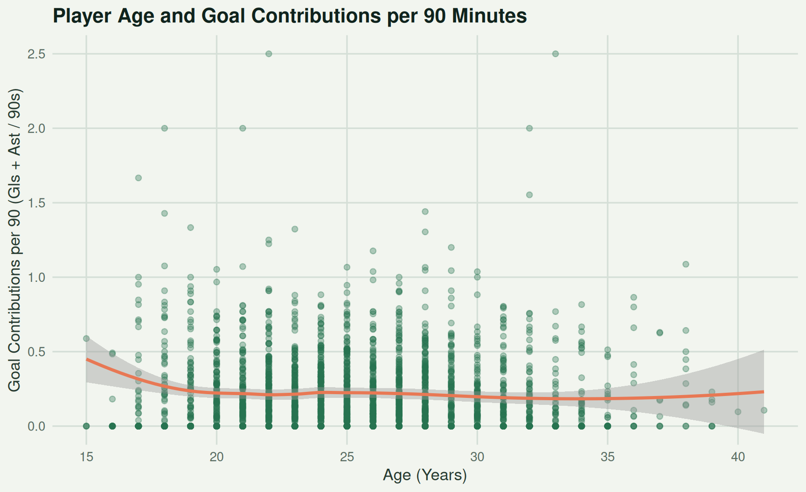

Age, performance, and attacking output
How Does Age Affect Soccer Player Performance?
Across Europe's top leagues, we compare the age curve of attacking production to show how experience, role, and survival bias shape the numbers behind elite players.
Age vs. Goal Contributions
Total observations analyzed: 2,783 players.
Interpreting the Pattern
The scatterplot above displays all 2,783 player records from the 2025–2026 season. The LOESS smoothing curve indicates a modest peak in average goal contributions in the mid-to-late twenties, followed by a slight decline into the thirties.
Important note on correlation vs. causation: This graphic shows an observational association, not a causal relationship. Age itself does not determine a player’s goal contribution rate. Factors such as tactical position, team strength, survivor bias (only elite older players remain in top leagues), and role specialization heavily influence these numbers.
Project Overview
In professional soccer, age and output shape recruitment, squad planning, and player valuation. This report tracks attacking production across the Premier League, La Liga, Serie A, Bundesliga, and Ligue 1 during the 2025-2026 season.
We compare players using goal contributions per 90 minutes, which adjusts goals and assists for playing time.
RATE MODEL / PER 90
\[ ext{Goal Contributions per 90} = \frac{\text{Goals} + \text{Assists}}{\text{90s Played}} \]
GOALS + ASSISTS / 90 MINUTES PLAYED
Players and Goal Contributions
Goal contributions are defined as goals plus assists. Use the controls below to search by player name, narrow the age range, and filter by team, league, or position. The default sort is highest total goal contributions.
0 matching players
No players match the selected filters.
| Player | Age | Team | League | Position | Goals | Assists | Goal Contributions | Goals / 90 | Assists / 90 | Goal Contributions / 90 |
|---|---|---|---|---|---|---|---|---|---|---|
| Harry Kane | 32 | Bayern Munich | Bundesliga | FW / MF | 36 | 5 | 41 | 1.36 | 0.19 | 1.55 |
| Erling Haaland | 25 | Manchester City | eng Premier League | FW | 27 | 8 | 35 | 0.82 | 0.24 | 1.07 |
| Michael Olise | 23 | Bayern Munich | Bundesliga | MF | 15 | 19 | 34 | 0.58 | 0.74 | 1.32 |
| Bruno Fernandes | 30 | Manchester Utd | eng Premier League | MF | 9 | 21 | 30 | 0.26 | 0.62 | 0.88 |
| Kylian Mbappé | 26 | Real Madrid | La Liga | FW | 25 | 5 | 30 | 0.87 | 0.17 | 1.04 |
| Luis Díaz | 28 | Bayern Munich | Bundesliga | MF | 15 | 14 | 29 | 0.55 | 0.51 | 1.07 |
| Lamine Yamal | 18 | Barcelona | La Liga | MF / FW | 16 | 11 | 27 | 0.64 | 0.44 | 1.08 |
| Deniz Undav | 29 | Stuttgart | Bundesliga | FW / MF | 19 | 7 | 26 | 0.76 | 0.28 | 1.04 |
| Esteban Lepaul | 25 | Rennes | Ligue 1 | FW | 20 | 5 | 25 | 0.72 | 0.18 | 0.90 |
| Vedat Muriqi | 31 | Mallorca | La Liga | FW | 23 | 1 | 24 | 0.66 | 0.03 | 0.69 |
| Federico Dimarco | 27 | Inter | Serie A | MF | 7 | 16 | 23 | 0.23 | 0.53 | 0.77 |
| Lautaro Martínez | 27 | Inter | Serie A | FW | 17 | 6 | 23 | 0.71 | 0.25 | 0.96 |
| Igor Thiago | 24 | Brentford | eng Premier League | FW | 22 | 1 | 23 | 0.60 | 0.03 | 0.63 |
| Mason Greenwood | 23 | Marseille | Ligue 1 | MF | 16 | 7 | 23 | 0.58 | 0.26 | 0.84 |
| Christoph Baumgartner | 25 | RB Leipzig | Bundesliga | MF | 13 | 8 | 21 | 0.42 | 0.26 | 0.68 |
| Vinicius Júnior | 25 | Real Madrid | La Liga | FW / MF | 16 | 5 | 21 | 0.51 | 0.16 | 0.67 |
| Andrej Kramarić | 34 | Hoffenheim | Bundesliga | MF / FW | 14 | 6 | 20 | 0.57 | 0.24 | 0.82 |
| Jarrod Bowen | 28 | West Ham United | eng Premier League | MF / FW | 9 | 11 | 20 | 0.24 | 0.29 | 0.53 |
| João Pedro | 23 | Chelsea | eng Premier League | FW / MF | 15 | 5 | 20 | 0.51 | 0.17 | 0.68 |
| Yan Diomandé | 18 | RB Leipzig | Bundesliga | FW / MF | 12 | 8 | 20 | 0.44 | 0.29 | 0.73 |
| Patrik Schick | 29 | Leverkusen | Bundesliga | FW | 16 | 3 | 19 | 0.72 | 0.14 | 0.86 |
| Ollie Watkins | 29 | Aston Villa | eng Premier League | FW | 16 | 3 | 19 | 0.51 | 0.10 | 0.60 |
| Mikel Oyarzabal | 28 | Real Sociedad | La Liga | FW | 15 | 4 | 19 | 0.50 | 0.13 | 0.63 |
| Marcus Thuram | 27 | Inter | Serie A | FW | 13 | 6 | 19 | 0.62 | 0.28 | 0.90 |
| Morgan Gibbs-White | 25 | Nottingham Forest | eng Premier League | MF | 15 | 4 | 19 | 0.44 | 0.12 | 0.55 |
| Georges Mikautadze | 24 | Villarreal | La Liga | FW | 13 | 6 | 19 | 0.56 | 0.26 | 0.81 |
| Serhou Guirassy | 29 | Dortmund | Bundesliga | FW | 17 | 1 | 18 | 0.65 | 0.04 | 0.69 |
| Ferrán Torres | 25 | Barcelona | La Liga | FW | 16 | 2 | 18 | 0.73 | 0.09 | 0.83 |
| Abde Ezzalzouli | 23 | Real Betis | La Liga | MF / FW | 10 | 8 | 18 | 0.40 | 0.32 | 0.72 |
| Nicolás Paz | 20 | Como | Serie A | MF | 12 | 6 | 18 | 0.38 | 0.19 | 0.56 |
| Ante Budimir | 34 | Osasuna | La Liga | FW | 17 | 0 | 17 | 0.52 | 0.00 | 0.52 |
| Florian Thauvin | 32 | Lens | Ligue 1 | MF | 11 | 6 | 17 | 0.41 | 0.22 | 0.63 |
| Ludovic Ajorque | 31 | Brest | Ligue 1 | FW | 8 | 9 | 17 | 0.26 | 0.29 | 0.54 |
| Ousmane Dembélé | 28 | Paris Saint-Germain | Ligue 1 | FW | 10 | 7 | 17 | 0.85 | 0.59 | 1.44 |
| Toni Martínez | 28 | Alavés | La Liga | FW | 14 | 3 | 17 | 0.46 | 0.10 | 0.56 |
| Harry Wilson | 28 | Fulham | eng Premier League | MF | 10 | 7 | 17 | 0.34 | 0.24 | 0.57 |
| Folarin Balogun | 24 | Monaco | Ligue 1 | FW | 13 | 4 | 17 | 0.52 | 0.16 | 0.69 |
| Fisnik Asllani | 22 | Hoffenheim | Bundesliga | FW / MF | 10 | 7 | 17 | 0.39 | 0.27 | 0.66 |
| Rasmus Højlund | 22 | Napoli | Serie A | FW | 12 | 5 | 17 | 0.39 | 0.16 | 0.56 |
| Joaquín Panichelli | 22 | Strasbourg | Ligue 1 | FW | 16 | 1 | 17 | 0.66 | 0.04 | 0.70 |
| Said El Mala | 18 | Köln | Bundesliga | FW / MF | 13 | 4 | 17 | 0.60 | 0.18 | 0.78 |
| Robert Lewandowski | 36 | Barcelona | La Liga | FW | 14 | 2 | 16 | 0.76 | 0.11 | 0.86 |
| Borja Iglesias | 32 | Celta Vigo | La Liga | FW | 14 | 2 | 16 | 0.66 | 0.09 | 0.76 |
| Haris Tabakovic | 31 | Gladbach | Bundesliga | FW | 13 | 3 | 16 | 0.49 | 0.11 | 0.60 |
| Nicolas Pépé | 30 | Villarreal | La Liga | MF / FW | 8 | 8 | 16 | 0.30 | 0.30 | 0.60 |
| Raphinha | 28 | Barcelona | La Liga | MF / FW | 13 | 3 | 16 | 0.85 | 0.20 | 1.05 |
| Armand Lauriente | 26 | Sassuolo | Serie A | FW | 7 | 9 | 16 | 0.24 | 0.31 | 0.56 |
| Donyell Malen | 26 | Roma | Serie A | FW | 14 | 2 | 16 | 0.86 | 0.12 | 0.98 |
| Lassine Sinayoko | 25 | Auxerre | Ligue 1 | FW / MF | 12 | 4 | 16 | 0.39 | 0.13 | 0.52 |
| Jamie Leweling | 24 | Stuttgart | Bundesliga | MF | 7 | 9 | 16 | 0.27 | 0.34 | 0.61 |
| Morgan Rogers | 23 | Aston Villa | eng Premier League | MF | 10 | 6 | 16 | 0.27 | 0.16 | 0.44 |
| Rayan Cherki | 21 | Manchester City | eng Premier League | MF | 4 | 12 | 16 | 0.20 | 0.61 | 0.81 |
| Kenan Yıldız | 20 | Juventus | Serie A | MF / FW | 10 | 6 | 16 | 0.32 | 0.19 | 0.51 |
| Pierre-Emerick Aubameyang | 36 | Marseille | Ligue 1 | FW | 10 | 5 | 15 | 0.44 | 0.22 | 0.66 |
| Corentin Tolisso | 30 | Lyon | Ligue 1 | MF | 11 | 4 | 15 | 0.43 | 0.16 | 0.59 |
| Pablo Fornals | 29 | Real Betis | La Liga | MF | 9 | 6 | 15 | 0.28 | 0.19 | 0.47 |
| Álex Grimaldo | 29 | Leverkusen | Bundesliga | MF | 8 | 7 | 15 | 0.29 | 0.25 | 0.54 |
| Dominic Calvert-Lewin | 28 | Leeds United | eng Premier League | FW | 14 | 1 | 15 | 0.46 | 0.03 | 0.50 |
| Gauthier Hein | 28 | Metz | Ligue 1 | MF / FW | 8 | 7 | 15 | 0.31 | 0.27 | 0.57 |
| Richarlison | 28 | Tottenham Hotspur | eng Premier League | FW / MF | 11 | 4 | 15 | 0.50 | 0.18 | 0.69 |
| Ermedin Demirović | 27 | Stuttgart | Bundesliga | FW | 12 | 3 | 15 | 0.72 | 0.18 | 0.90 |
| Odsonne Édouard | 27 | Lens | Ligue 1 | FW | 12 | 3 | 15 | 0.60 | 0.15 | 0.75 |
| Viktor Gyökeres | 27 | Arsenal | eng Premier League | FW | 14 | 1 | 15 | 0.57 | 0.04 | 0.61 |
| Dani Olmo | 27 | Barcelona | La Liga | MF | 7 | 8 | 15 | 0.30 | 0.35 | 0.65 |
| Marcus Rashford | 27 | Barcelona | La Liga | MF / FW | 8 | 7 | 15 | 0.41 | 0.36 | 0.77 |
| Julian Ryerson | 27 | Dortmund | Bundesliga | MF | 0 | 15 | 15 | 0.00 | 0.60 | 0.60 |
| Anastasios Douvikas | 25 | Como | Serie A | FW | 14 | 1 | 15 | 0.55 | 0.04 | 0.59 |
| Andrej Ilic | 25 | Union Berlin | Bundesliga | FW | 5 | 10 | 15 | 0.20 | 0.40 | 0.60 |
| Nikola Krstović | 25 | Atalanta | Serie A | FW | 10 | 5 | 15 | 0.50 | 0.25 | 0.75 |
| Hugo Ekitike | 23 | Liverpool | eng Premier League | FW | 11 | 4 | 15 | 0.55 | 0.20 | 0.75 |
| Maximilian Beier | 22 | Dortmund | Bundesliga | MF / FW | 9 | 6 | 15 | 0.40 | 0.27 | 0.67 |
| Fermin López | 22 | Barcelona | La Liga | MF | 6 | 9 | 15 | 0.30 | 0.45 | 0.75 |
| Pablo Pagis | 22 | Lorient | Ligue 1 | MF / FW | 10 | 5 | 15 | 0.51 | 0.26 | 0.77 |
| Alberto Moleiro | 21 | Villarreal | La Liga | MF | 10 | 5 | 15 | 0.36 | 0.18 | 0.55 |
| Danny Welbeck | 34 | Brighton | eng Premier League | FW | 13 | 1 | 14 | 0.52 | 0.04 | 0.56 |
| Mohamed Salah | 33 | Liverpool | eng Premier League | MF | 7 | 7 | 14 | 0.29 | 0.29 | 0.59 |
| Serge Gnabry | 30 | Bayern Munich | Bundesliga | MF | 8 | 6 | 14 | 0.59 | 0.44 | 1.04 |
| Wesley Saïd | 30 | Lens | Ligue 1 | MF | 12 | 2 | 14 | 0.54 | 0.09 | 0.63 |
| Nadiem Amiri | 28 | Mainz 05 | Bundesliga | MF | 12 | 2 | 14 | 0.52 | 0.09 | 0.61 |
| Keinan Davis | 27 | Udinese | Serie A | FW | 10 | 4 | 14 | 0.44 | 0.17 | 0.61 |
| Chris Führich | 27 | Stuttgart | Bundesliga | MF | 7 | 7 | 14 | 0.37 | 0.37 | 0.74 |
| Bruno Guimarães | 27 | Newcastle United | eng Premier League | MF | 9 | 5 | 14 | 0.33 | 0.18 | 0.51 |
| Cucho | 26 | Real Betis | La Liga | FW | 11 | 3 | 14 | 0.38 | 0.10 | 0.49 |
| Antony | 25 | Real Betis | La Liga | MF / FW | 8 | 6 | 14 | 0.29 | 0.22 | 0.51 |
| Jonathan Burkardt | 25 | Eintracht Frankfurt | Bundesliga | FW | 13 | 1 | 14 | 0.88 | 0.07 | 0.95 |
| Bryan Mbeumo | 25 | Manchester Utd | eng Premier League | MF / FW | 11 | 3 | 14 | 0.38 | 0.10 | 0.48 |
| Enzo Fernández | 24 | Chelsea | eng Premier League | MF | 10 | 4 | 14 | 0.29 | 0.12 | 0.40 |
| Pavel Šulc | 24 | Lyon | Ligue 1 | FW / MF | 11 | 3 | 14 | 0.63 | 0.17 | 0.80 |
| Bazoumana Touré | 19 | Hoffenheim | Bundesliga | MF / FW | 5 | 9 | 14 | 0.20 | 0.35 | 0.55 |
| Hakan Çalhanoğlu | 31 | Inter | Serie A | MF | 9 | 4 | 13 | 0.49 | 0.22 | 0.71 |
| Alexander Sørloth | 29 | Atlético Madrid | La Liga | FW | 13 | 0 | 13 | 0.59 | 0.00 | 0.59 |
| Gorka Guruzeta | 28 | Athletic Club | La Liga | FW | 10 | 3 | 13 | 0.38 | 0.11 | 0.49 |
| Scott McTominay | 28 | Napoli | Serie A | MF | 10 | 3 | 13 | 0.32 | 0.10 | 0.42 |
| Ilan Kebbal | 27 | Paris FC | Ligue 1 | MF / FW | 9 | 4 | 13 | 0.36 | 0.16 | 0.53 |
| Federico Valverde | 27 | Real Madrid | La Liga | MF / DF | 5 | 8 | 13 | 0.16 | 0.26 | 0.43 |
| Akor Adams | 25 | Sevilla | La Liga | FW | 10 | 3 | 13 | 0.44 | 0.13 | 0.57 |
| Antoine Semenyo | 25 | Bournemouth | eng Premier League | MF | 10 | 3 | 13 | 0.50 | 0.15 | 0.65 |
| Issa Soumaré | 24 | Le Havre | Ligue 1 | FW / MF | 8 | 5 | 13 | 0.24 | 0.15 | 0.40 |
| Dominik Szoboszlai | 24 | Liverpool | eng Premier League | MF / DF | 6 | 7 | 13 | 0.17 | 0.19 | 0.36 |
| Rômulo | 23 | RB Leipzig | Bundesliga | FW | 9 | 4 | 13 | 0.37 | 0.16 | 0.53 |
| Igor Matanovic | 22 | Freiburg | Bundesliga | FW | 11 | 2 | 13 | 0.63 | 0.11 | 0.74 |
| Matias Fernandez-Pardo | 20 | Lille | Ligue 1 | FW / MF | 8 | 5 | 13 | 0.30 | 0.19 | 0.49 |
| Arda Güler | 20 | Real Madrid | La Liga | MF | 4 | 9 | 13 | 0.18 | 0.40 | 0.58 |
| Eli Junior Kroupi | 19 | Bournemouth | eng Premier League | MF / FW | 13 | 0 | 13 | 0.70 | 0.00 | 0.70 |
| Raúl Jiménez | 34 | Fulham | eng Premier League | FW | 9 | 3 | 12 | 0.37 | 0.12 | 0.49 |
| Christian Eriksen | 33 | Wolfsburg | Bundesliga | MF | 3 | 9 | 12 | 0.11 | 0.34 | 0.45 |
| Adrien Thomasson | 31 | Lens | Ligue 1 | MF | 3 | 9 | 12 | 0.10 | 0.30 | 0.40 |
| Domenico Berardi | 30 | Sassuolo | Serie A | FW | 8 | 4 | 12 | 0.37 | 0.18 | 0.55 |
| Leandro Trossard | 30 | Arsenal | eng Premier League | FW / MF | 6 | 6 | 12 | 0.27 | 0.27 | 0.54 |
| Lucas Boyé | 29 | Alavés | La Liga | FW | 11 | 1 | 12 | 0.50 | 0.05 | 0.55 |
| Romain Del Castillo | 29 | Brest | Ligue 1 | MF / FW | 9 | 3 | 12 | 0.31 | 0.10 | 0.41 |
| Breel Embolo | 28 | Rennes | Ligue 1 | FW | 9 | 3 | 12 | 0.43 | 0.14 | 0.58 |
| Gonçalo Guedes | 28 | Real Sociedad | La Liga | MF | 8 | 4 | 12 | 0.39 | 0.20 | 0.59 |
| Konrad Laimer | 28 | Bayern Munich | Bundesliga | DF | 3 | 9 | 12 | 0.14 | 0.41 | 0.54 |
| Jean-Philippe Mateta | 28 | Crystal Palace | eng Premier League | FW | 12 | 0 | 12 | 0.49 | 0.00 | 0.49 |
| Jens Stage | 28 | Werder Bremen | Bundesliga | MF | 10 | 2 | 12 | 0.37 | 0.07 | 0.44 |
| Musa Al-Taamari | 28 | Rennes | Ligue 1 | MF / FW | 6 | 6 | 12 | 0.24 | 0.24 | 0.49 |
| Matheus Cunha | 26 | Manchester Utd | eng Premier League | MF / FW | 10 | 2 | 12 | 0.36 | 0.07 | 0.43 |
| Kiernan Dewsbury-Hall | 26 | Everton | eng Premier League | MF | 8 | 4 | 12 | 0.27 | 0.14 | 0.41 |
| Cody Gakpo | 26 | Liverpool | eng Premier League | MF / FW | 7 | 5 | 12 | 0.23 | 0.16 | 0.39 |
| Ferran Jutglà | 26 | Celta Vigo | La Liga | FW | 9 | 3 | 12 | 0.49 | 0.16 | 0.65 |
| Rafael Leão | 26 | Milan | Serie A | FW | 9 | 3 | 12 | 0.44 | 0.15 | 0.58 |
| Andrea Pinamonti | 26 | Sassuolo | Serie A | FW | 9 | 3 | 12 | 0.32 | 0.11 | 0.42 |
| Christian Pulisic | 26 | Milan | Serie A | FW | 8 | 4 | 12 | 0.45 | 0.22 | 0.67 |
| Julián Álvarez | 25 | Atlético Madrid | La Liga | FW | 8 | 4 | 12 | 0.38 | 0.19 | 0.57 |
| Phil Foden | 25 | Manchester City | eng Premier League | MF | 7 | 5 | 12 | 0.30 | 0.22 | 0.52 |
| Romano Schmid | 25 | Werder Bremen | Bundesliga | MF / FW | 4 | 8 | 12 | 0.12 | 0.24 | 0.36 |
| Fabio Vieira | 25 | Hamburger SV | Bundesliga | MF / FW | 7 | 5 | 12 | 0.29 | 0.20 | 0.49 |
| Khvicha Kvaratskhelia | 24 | Paris Saint-Germain | Ligue 1 | FW | 8 | 4 | 12 | 0.49 | 0.24 | 0.73 |
| Maghnes Akliouche | 23 | Monaco | Ligue 1 | MF / FW | 6 | 6 | 12 | 0.22 | 0.22 | 0.45 |
| Sebastiano Esposito | 23 | Cagliari | Serie A | FW / MF | 7 | 5 | 12 | 0.24 | 0.17 | 0.40 |
| Bukayo Saka | 23 | Arsenal | eng Premier League | FW / MF | 7 | 5 | 12 | 0.28 | 0.20 | 0.49 |
| Bradley Barcola | 22 | Paris Saint-Germain | Ligue 1 | FW | 11 | 1 | 12 | 0.57 | 0.05 | 0.62 |
| Benjamin Šeško | 22 | Manchester Utd | eng Premier League | FW | 11 | 1 | 12 | 0.60 | 0.05 | 0.66 |
| Álvaro Rodríguez | 21 | Elche | La Liga | FW | 7 | 5 | 12 | 0.29 | 0.20 | 0.49 |
| Endrick | 19 | Lyon | Ligue 1 | FW / MF | 5 | 7 | 12 | 0.37 | 0.52 | 0.89 |
| Can Uzun | 19 | Eintracht Frankfurt | Bundesliga | MF | 8 | 4 | 12 | 0.62 | 0.31 | 0.94 |
| Antoine Griezmann | 34 | Atlético Madrid | La Liga | FW | 7 | 4 | 11 | 0.42 | 0.24 | 0.67 |
| Casemiro | 33 | Manchester Utd | eng Premier League | MF | 9 | 2 | 11 | 0.31 | 0.07 | 0.38 |
| Vincenzo Grifo | 32 | Freiburg | Bundesliga | MF | 7 | 4 | 11 | 0.37 | 0.21 | 0.58 |
| Luis Milla | 30 | Getafe | La Liga | MF | 1 | 10 | 11 | 0.03 | 0.28 | 0.30 |
| Giovanni Simeone | 30 | Torino | Serie A | FW | 11 | 0 | 11 | 0.44 | 0.00 | 0.44 |
| Julian Brandt | 29 | Dortmund | Bundesliga | MF / FW | 7 | 4 | 11 | 0.39 | 0.22 | 0.62 |
| Nicolò Barella | 28 | Inter | Serie A | MF | 3 | 8 | 11 | 0.11 | 0.29 | 0.39 |
| Federico Bonazzoli | 28 | Cremonese | Serie A | FW | 10 | 1 | 11 | 0.36 | 0.04 | 0.39 |
| Jorge de Frutos | 28 | Rayo Vallecano | La Liga | FW / MF | 10 | 1 | 11 | 0.36 | 0.04 | 0.40 |
| Aleix García | 28 | Leverkusen | Bundesliga | MF | 3 | 8 | 11 | 0.10 | 0.27 | 0.37 |
| Riccardo Orsolini | 28 | Bologna | Serie A | MF / FW | 10 | 1 | 11 | 0.43 | 0.04 | 0.47 |
| Ragnar Ache | 27 | Köln | Bundesliga | FW | 7 | 4 | 11 | 0.37 | 0.21 | 0.58 |
| Viktor Tsyhankov | 27 | Girona | La Liga | MF / FW | 6 | 5 | 11 | 0.21 | 0.17 | 0.38 |
| Nikola Vlašić | 27 | Torino | Serie A | MF / FW | 8 | 3 | 11 | 0.24 | 0.09 | 0.33 |
| Zian Flemming | 26 | Burnley | eng Premier League | FW | 11 | 0 | 11 | 0.56 | 0.00 | 0.56 |
| Gianluca Scamacca | 26 | Atalanta | Serie A | FW | 10 | 1 | 11 | 0.68 | 0.07 | 0.75 |
| Marcus Tavernier | 26 | Bournemouth | eng Premier League | MF | 7 | 4 | 11 | 0.23 | 0.13 | 0.36 |
| Nicolò Zaniolo | 26 | Udinese | Serie A | FW / MF | 5 | 6 | 11 | 0.20 | 0.24 | 0.44 |
| Mohamed Amoura | 25 | Wolfsburg | Bundesliga | FW / MF | 8 | 3 | 11 | 0.38 | 0.14 | 0.52 |
| Bamba Dieng | 25 | Lorient | Ligue 1 | FW | 10 | 1 | 11 | 0.74 | 0.07 | 0.81 |
| Amine Gouiri | 25 | Marseille | Ligue 1 | FW / MF | 8 | 3 | 11 | 0.54 | 0.20 | 0.75 |
| Enzo Le Fée | 25 | Sunderland | eng Premier League | MF / FW | 5 | 6 | 11 | 0.15 | 0.18 | 0.34 |
| Pedro Neto | 25 | Chelsea | eng Premier League | MF / FW | 5 | 6 | 11 | 0.17 | 0.21 | 0.38 |
| Igor Paixão | 25 | Marseille | Ligue 1 | MF | 6 | 5 | 11 | 0.27 | 0.23 | 0.50 |
| Yann Gboho | 24 | Toulouse | Ligue 1 | MF / FW | 8 | 3 | 11 | 0.27 | 0.10 | 0.37 |
| Karim Adeyemi | 23 | Dortmund | Bundesliga | MF / FW | 7 | 4 | 11 | 0.53 | 0.30 | 0.83 |
| Cole Palmer | 23 | Chelsea | eng Premier League | MF | 10 | 1 | 11 | 0.46 | 0.05 | 0.51 |
| Kevin Schade | 23 | Brentford | eng Premier League | MF / FW | 8 | 3 | 11 | 0.26 | 0.10 | 0.36 |
| Nick Woltemade | 23 | Newcastle United | eng Premier League | FW / MF | 8 | 3 | 11 | 0.38 | 0.14 | 0.52 |
| Fares Chaïbi | 22 | Eintracht Frankfurt | Bundesliga | MF | 2 | 9 | 11 | 0.10 | 0.45 | 0.55 |
| Ansu Fati | 22 | Monaco | Ligue 1 | MF / FW | 11 | 0 | 11 | 0.91 | 0.00 | 0.91 |
| Martial Godo | 22 | Strasbourg | Ligue 1 | MF | 10 | 1 | 11 | 0.57 | 0.06 | 0.62 |
| Pedri | 22 | Barcelona | La Liga | MF | 2 | 9 | 11 | 0.09 | 0.38 | 0.47 |
| Matìas Soulé | 22 | Roma | Serie A | MF / FW | 6 | 5 | 11 | 0.25 | 0.21 | 0.46 |
| Désiré Doué | 20 | Paris Saint-Germain | Ligue 1 | FW / MF | 7 | 4 | 11 | 0.47 | 0.27 | 0.73 |
| Carlos Espí | 20 | Levante | La Liga | FW | 11 | 0 | 11 | 0.74 | 0.00 | 0.74 |
| Afonso Moreira | 20 | Lyon | Ligue 1 | MF / FW | 4 | 7 | 11 | 0.21 | 0.37 | 0.58 |
| Jesus Rodríguez | 19 | Como | Serie A | MF | 2 | 9 | 11 | 0.10 | 0.47 | 0.57 |
| Gerard Moreno | 33 | Villarreal | La Liga | FW | 10 | 0 | 10 | 0.67 | 0.00 | 0.67 |
| Joshua Kimmich | 30 | Bayern Munich | Bundesliga | MF | 2 | 8 | 10 | 0.08 | 0.32 | 0.40 |
| Adrien Rabiot | 30 | Milan | Serie A | MF | 6 | 4 | 10 | 0.21 | 0.14 | 0.35 |
| Aleksandr Golovin | 29 | Monaco | Ligue 1 | MF | 5 | 5 | 10 | 0.27 | 0.27 | 0.55 |
| André Silva | 29 | Elche | La Liga | FW | 10 | 0 | 10 | 0.49 | 0.00 | 0.49 |
| Rolando Mandragora | 28 | Fiorentina | Serie A | MF | 7 | 3 | 10 | 0.26 | 0.11 | 0.37 |
| Maximilian Mittelstädt | 28 | Stuttgart | Bundesliga | DF / MF | 6 | 4 | 10 | 0.25 | 0.16 | 0.41 |
| Beto | 27 | Everton | eng Premier League | FW | 9 | 1 | 10 | 0.52 | 0.06 | 0.57 |
| Ritsu Doan | 27 | Eintracht Frankfurt | Bundesliga | MF | 5 | 5 | 10 | 0.19 | 0.19 | 0.38 |
| Christopher Nkunku | 27 | Milan | Serie A | FW | 7 | 3 | 10 | 0.46 | 0.20 | 0.66 |
| David Raum | 27 | RB Leipzig | Bundesliga | DF | 3 | 7 | 10 | 0.11 | 0.25 | 0.35 |
| Ismaila Sarr | 27 | Crystal Palace | eng Premier League | MF | 9 | 1 | 10 | 0.37 | 0.04 | 0.41 |
| Federico Viñas | 27 | Oviedo | La Liga | FW / MF | 9 | 1 | 10 | 0.33 | 0.04 | 0.37 |
| Weston McKennie | 26 | Juventus | Serie A | MF | 5 | 5 | 10 | 0.16 | 0.16 | 0.32 |
| Jaidon Anthony | 25 | Burnley | eng Premier League | MF | 8 | 2 | 10 | 0.26 | 0.07 | 0.33 |
| Jonathan David | 25 | Juventus | Serie A | FW | 6 | 4 | 10 | 0.30 | 0.20 | 0.51 |
| Sofiane Diop | 25 | Nice | Ligue 1 | MF / FW | 8 | 2 | 10 | 0.34 | 0.08 | 0.42 |
| Hugo Duro | 25 | Valencia | La Liga | FW | 10 | 0 | 10 | 0.45 | 0.00 | 0.45 |
| Lucas Da Cunha | 24 | Como | Serie A | MF | 6 | 4 | 10 | 0.20 | 0.13 | 0.33 |
| Igor Jesus | 24 | Nottingham Forest | eng Premier League | FW | 6 | 4 | 10 | 0.24 | 0.16 | 0.39 |
| Mateo Pellegrino | 24 | Parma | Serie A | FW | 9 | 1 | 10 | 0.27 | 0.03 | 0.30 |
| Jeremy Doku | 23 | Manchester City | eng Premier League | MF / FW | 5 | 5 | 10 | 0.25 | 0.25 | 0.51 |
| Roberto Férnandez | 23 | Espanyol | La Liga | FW | 7 | 3 | 10 | 0.26 | 0.11 | 0.38 |
| Jakub Kamiński | 23 | Köln | Bundesliga | MF / FW | 7 | 3 | 10 | 0.21 | 0.09 | 0.30 |
| Tim Lemperle | 23 | Hoffenheim | Bundesliga | FW | 8 | 2 | 10 | 0.37 | 0.09 | 0.46 |
| Dango Ouattara | 23 | Brentford | eng Premier League | MF | 7 | 3 | 10 | 0.28 | 0.12 | 0.40 |
| Vladyslav Vanat | 23 | Girona | La Liga | FW | 9 | 1 | 10 | 0.42 | 0.05 | 0.46 |
| Matthis Abline | 22 | Nantes | Ligue 1 | FW / MF | 6 | 4 | 10 | 0.21 | 0.14 | 0.35 |
| Jude Bellingham | 22 | Real Madrid | La Liga | MF | 6 | 4 | 10 | 0.28 | 0.19 | 0.47 |
| Javier Guerra | 22 | Valencia | La Liga | MF / FW | 4 | 6 | 10 | 0.17 | 0.26 | 0.44 |
| Hákon Haraldsson | 22 | Lille | Ligue 1 | MF | 8 | 2 | 10 | 0.29 | 0.07 | 0.37 |
| Giuliano Simeone | 22 | Atlético Madrid | La Liga | MF | 4 | 6 | 10 | 0.17 | 0.26 | 0.43 |
| Ernest Poku | 21 | Leverkusen | Bundesliga | MF | 5 | 5 | 10 | 0.30 | 0.30 | 0.61 |
| Williot Swedberg | 21 | Celta Vigo | La Liga | FW / MF | 5 | 5 | 10 | 0.35 | 0.35 | 0.71 |
| Francesco Esposito | 20 | Inter | Serie A | FW | 7 | 3 | 10 | 0.40 | 0.17 | 0.57 |
| Santiago Hidalgo | 20 | Toulouse | Ligue 1 | MF / FW | 4 | 6 | 10 | 0.26 | 0.39 | 0.65 |
| Diego Moreira | 20 | Strasbourg | Ligue 1 | MF | 4 | 6 | 10 | 0.18 | 0.27 | 0.44 |
| Lennart Karl | 17 | Bayern Munich | Bundesliga | MF | 5 | 5 | 10 | 0.35 | 0.35 | 0.70 |
| Jamie Vardy | 38 | Cremonese | Serie A | FW | 7 | 2 | 9 | 0.30 | 0.09 | 0.38 |
| Kiké | 35 | Espanyol | La Liga | FW | 8 | 1 | 9 | 0.41 | 0.05 | 0.47 |
| Marius Bülter | 32 | Köln | Bundesliga | FW / MF | 5 | 4 | 9 | 0.28 | 0.23 | 0.51 |
| Vladimír Coufal | 32 | Hoffenheim | Bundesliga | DF / MF | 1 | 8 | 9 | 0.03 | 0.24 | 0.27 |
| Álvaro García | 32 | Rayo Vallecano | La Liga | MF / FW | 4 | 5 | 9 | 0.17 | 0.21 | 0.39 |
| Ruslan Malinovskyi | 32 | Genoa | Serie A | MF | 6 | 3 | 9 | 0.24 | 0.12 | 0.36 |
| Ayoze Pérez | 32 | Villarreal | La Liga | FW | 5 | 4 | 9 | 0.40 | 0.32 | 0.72 |
| Luis Rioja | 31 | Valencia | La Liga | MF | 3 | 6 | 9 | 0.10 | 0.21 | 0.31 |
| Iñaki Williams | 31 | Athletic Club | La Liga | MF / FW | 3 | 6 | 9 | 0.12 | 0.25 | 0.38 |
| Piotr Zieliński | 31 | Inter | Serie A | MF | 6 | 3 | 9 | 0.26 | 0.13 | 0.40 |
| John McGinn | 30 | Aston Villa | eng Premier League | MF | 5 | 4 | 9 | 0.21 | 0.17 | 0.38 |
| Grischa Prömel | 30 | Hoffenheim | Bundesliga | MF | 7 | 2 | 9 | 0.36 | 0.10 | 0.46 |
| Pierre Højbjerg | 29 | Marseille | Ligue 1 | MF | 4 | 5 | 9 | 0.13 | 0.17 | 0.30 |
| Luca Waldschmidt | 29 | Köln | Bundesliga | FW / MF | 5 | 4 | 9 | 0.67 | 0.53 | 1.20 |
| Santi Comesaña | 28 | Villarreal | La Liga | MF | 3 | 6 | 9 | 0.11 | 0.22 | 0.34 |
| Albert Guðmundsson | 28 | Fiorentina | Serie A | FW / MF | 5 | 4 | 9 | 0.20 | 0.16 | 0.36 |
| Djibril Sow | 28 | Sevilla | La Liga | MF | 5 | 4 | 9 | 0.21 | 0.16 | 0.37 |
| Ludovic Blas | 27 | Rennes | Ligue 1 | MF / FW | 5 | 4 | 9 | 0.29 | 0.23 | 0.52 |
| Alexis Claude-Maurice | 27 | Augsburg | Bundesliga | MF / FW | 5 | 4 | 9 | 0.21 | 0.17 | 0.39 |
| Eberechi Eze | 27 | Arsenal | eng Premier League | MF / FW | 7 | 2 | 9 | 0.35 | 0.10 | 0.45 |
| Declan Rice | 26 | Arsenal | eng Premier League | MF | 4 | 5 | 9 | 0.12 | 0.15 | 0.26 |
| Ruben Vargas | 26 | Sevilla | La Liga | MF / FW | 3 | 6 | 9 | 0.17 | 0.34 | 0.51 |
| Moise Kean | 25 | Fiorentina | Serie A | FW | 8 | 1 | 9 | 0.35 | 0.04 | 0.40 |
| Iliman Ndiaye | 25 | Everton | eng Premier League | MF | 6 | 3 | 9 | 0.19 | 0.10 | 0.29 |
| Noah Okafor | 25 | Leeds United | eng Premier League | FW / MF | 8 | 1 | 9 | 0.46 | 0.06 | 0.52 |
| Brenden Aaronson | 24 | Leeds United | eng Premier League | MF / FW | 4 | 5 | 9 | 0.15 | 0.18 | 0.33 |
| Lameck Banda | 24 | Lecce | Serie A | MF / FW | 5 | 4 | 9 | 0.26 | 0.21 | 0.46 |
| Wouter Burger | 24 | Hoffenheim | Bundesliga | MF | 4 | 5 | 9 | 0.15 | 0.19 | 0.33 |
| Félix Correia | 24 | Lille | Ligue 1 | MF | 4 | 5 | 9 | 0.18 | 0.22 | 0.39 |
| Samu Costa | 24 | Mallorca | La Liga | MF | 7 | 2 | 9 | 0.23 | 0.07 | 0.30 |
| James Garner | 24 | Everton | eng Premier League | MF / DF | 2 | 7 | 9 | 0.05 | 0.18 | 0.24 |
| Nicolas Jackson | 24 | Bayern Munich | Bundesliga | FW | 8 | 1 | 9 | 0.71 | 0.09 | 0.80 |
| Nuno Mendes | 23 | Paris Saint-Germain | Ligue 1 | DF | 4 | 5 | 9 | 0.29 | 0.36 | 0.64 |
| Sebastian Nanasi | 23 | Strasbourg | Ligue 1 | MF | 7 | 2 | 9 | 0.60 | 0.17 | 0.77 |
| Gift Orban | 23 | Hellas Verona | Serie A | FW | 7 | 2 | 9 | 0.31 | 0.09 | 0.40 |
| Fabian Rieder | 23 | Augsburg | Bundesliga | MF | 6 | 3 | 9 | 0.23 | 0.12 | 0.35 |
| Carlos Romero | 23 | Espanyol | La Liga | DF | 6 | 3 | 9 | 0.17 | 0.08 | 0.25 |
| Germán Valera | 23 | Elche | La Liga | MF / DF | 4 | 5 | 9 | 0.13 | 0.16 | 0.28 |
| Nico Williams | 23 | Athletic Club | La Liga | MF | 6 | 3 | 9 | 0.32 | 0.16 | 0.48 |
| Martin Baturina | 22 | Como | Serie A | MF / FW | 6 | 3 | 9 | 0.34 | 0.17 | 0.52 |
| Kamory Doumbia | 22 | Brest | Ligue 1 | MF | 5 | 4 | 9 | 0.26 | 0.21 | 0.46 |
| Ange-Yoan Bonny | 21 | Inter | Serie A | FW | 5 | 4 | 9 | 0.39 | 0.31 | 0.71 |
| Julio Enciso | 21 | Strasbourg | Ligue 1 | MF / FW | 3 | 6 | 9 | 0.14 | 0.29 | 0.43 |
| Bilal El Khannouss | 21 | Stuttgart | Bundesliga | MF / FW | 4 | 5 | 9 | 0.22 | 0.28 | 0.50 |
| Santiago Castro | 20 | Bologna | Serie A | FW | 7 | 2 | 9 | 0.27 | 0.08 | 0.34 |
| Orri Steinn Óskarsson | 20 | Real Sociedad | La Liga | FW | 9 | 0 | 9 | 0.97 | 0.00 | 0.97 |
| Christian Kofane | 19 | Leverkusen | Bundesliga | FW | 5 | 4 | 9 | 0.36 | 0.29 | 0.65 |
| Johan Manzambi | 19 | Freiburg | Bundesliga | MF | 5 | 4 | 9 | 0.22 | 0.17 | 0.39 |
| Olivier Giroud | 38 | Lille | Ligue 1 | FW | 7 | 1 | 8 | 0.39 | 0.06 | 0.45 |
| Iago Aspas | 37 | Celta Vigo | La Liga | FW / MF | 5 | 3 | 8 | 0.39 | 0.24 | 0.63 |
| Callum Wilson | 33 | West Ham United | eng Premier League | FW | 7 | 1 | 8 | 0.50 | 0.07 | 0.58 |
| Pere Milla | 32 | Espanyol | La Liga | MF / FW | 7 | 1 | 8 | 0.32 | 0.05 | 0.37 |
| Stefano Moreo | 32 | Pisa | Serie A | FW / MF | 7 | 1 | 8 | 0.27 | 0.04 | 0.31 |
| Paulo Dybala | 31 | Roma | Serie A | MF / FW | 2 | 6 | 8 | 0.13 | 0.40 | 0.53 |
| Michael Gregoritsch | 31 | Augsburg | Bundesliga | FW | 6 | 2 | 8 | 0.59 | 0.20 | 0.79 |
| Leon Goretzka | 30 | Bayern Munich | Bundesliga | MF | 5 | 3 | 8 | 0.23 | 0.14 | 0.37 |
| Che Adams | 29 | Torino | Serie A | FW | 6 | 2 | 8 | 0.29 | 0.10 | 0.38 |
| Mauro Arambarri | 29 | Getafe | La Liga | MF | 6 | 2 | 8 | 0.17 | 0.06 | 0.22 |
| Jack Grealish | 29 | Everton | eng Premier League | MF | 2 | 6 | 8 | 0.11 | 0.33 | 0.44 |
| Matthieu Udol | 29 | Lens | Ligue 1 | MF / DF | 1 | 7 | 8 | 0.03 | 0.21 | 0.24 |
| Emi Buendía | 28 | Aston Villa | eng Premier League | MF | 6 | 2 | 8 | 0.31 | 0.10 | 0.41 |
| Oliver Burke | 28 | Union Berlin | Bundesliga | FW / MF | 6 | 2 | 8 | 0.32 | 0.11 | 0.43 |
| Franck Honorat | 28 | Gladbach | Bundesliga | MF / FW | 2 | 6 | 8 | 0.09 | 0.27 | 0.36 |
| Brais Méndez | 28 | Real Sociedad | La Liga | MF / FW | 6 | 2 | 8 | 0.33 | 0.11 | 0.43 |
| Rafa Mir | 28 | Elche | La Liga | FW / MF | 8 | 0 | 8 | 0.40 | 0.00 | 0.40 |
| Danel Sinani | 28 | St Pauli | Bundesliga | MF / FW | 5 | 3 | 8 | 0.22 | 0.13 | 0.35 |
| Harvey Barnes | 27 | Newcastle United | eng Premier League | FW / MF | 7 | 1 | 8 | 0.32 | 0.05 | 0.37 |
| Aron Dønnum | 27 | Toulouse | Ligue 1 | MF | 4 | 4 | 8 | 0.15 | 0.15 | 0.30 |
| Tajon Buchanan | 26 | Villarreal | La Liga | MF | 7 | 1 | 8 | 0.35 | 0.05 | 0.40 |
| Anton Stach | 26 | Leeds United | eng Premier League | MF | 5 | 3 | 8 | 0.19 | 0.11 | 0.30 |
| Edmond Tapsoba | 26 | Leverkusen | Bundesliga | DF | 5 | 3 | 8 | 0.17 | 0.10 | 0.28 |
| Kristian Thorstvedt | 26 | Sassuolo | Serie A | MF | 4 | 4 | 8 | 0.15 | 0.15 | 0.29 |
| Maxence Caqueret | 25 | Como | Serie A | MF | 2 | 6 | 8 | 0.12 | 0.36 | 0.48 |
| Mikkel Damsgaard | 25 | Brentford | eng Premier League | MF | 4 | 4 | 8 | 0.18 | 0.18 | 0.35 |
| Jurgen Ekkelenkamp | 25 | Udinese | Serie A | MF | 5 | 3 | 8 | 0.21 | 0.12 | 0.33 |
| Antoine Semenyo | 25 | Manchester City | eng Premier League | MF / FW | 7 | 1 | 8 | 0.45 | 0.06 | 0.52 |
| Vitinha | 25 | Paris Saint-Germain | Ligue 1 | MF | 1 | 7 | 8 | 0.04 | 0.30 | 0.34 |
| Dušan Vlahović | 25 | Juventus | Serie A | FW | 7 | 1 | 8 | 0.65 | 0.09 | 0.74 |
| Ilyas Chaira | 24 | Oviedo | La Liga | MF / FW | 6 | 2 | 8 | 0.22 | 0.07 | 0.29 |
| Charles De Ketelaere | 24 | Atalanta | Serie A | MF / FW | 3 | 5 | 8 | 0.12 | 0.21 | 0.33 |
| Anthony Gordon | 24 | Newcastle United | eng Premier League | FW | 6 | 2 | 8 | 0.30 | 0.10 | 0.40 |
| Raúl | 24 | Osasuna | La Liga | FW | 7 | 1 | 8 | 0.60 | 0.09 | 0.69 |
| Iván Romero | 24 | Levante | La Liga | FW / MF | 7 | 1 | 8 | 0.28 | 0.04 | 0.32 |
| Jurriën Timber | 24 | Arsenal | eng Premier League | DF | 3 | 5 | 8 | 0.11 | 0.18 | 0.29 |
| Ander Barrenetxea | 23 | Real Sociedad | La Liga | MF | 3 | 5 | 8 | 0.15 | 0.26 | 0.41 |
| Brian Brobbey | 23 | Sunderland | eng Premier League | FW | 7 | 1 | 8 | 0.33 | 0.05 | 0.37 |
| Lorenzo Colombo | 23 | Genoa | Serie A | FW | 7 | 1 | 8 | 0.27 | 0.04 | 0.31 |
| Ryan Gravenberch | 23 | Liverpool | eng Premier League | MF | 5 | 3 | 8 | 0.15 | 0.09 | 0.24 |
| Rassoul Ndiaye | 23 | Le Havre | Ligue 1 | MF | 4 | 4 | 8 | 0.14 | 0.14 | 0.28 |
| Javi Rueda | 23 | Celta Vigo | La Liga | MF | 2 | 6 | 8 | 0.13 | 0.38 | 0.51 |
| Fábio Silva | 23 | Dortmund | Bundesliga | FW / MF | 2 | 6 | 8 | 0.22 | 0.66 | 0.88 |
| Tiago Tomás | 23 | Stuttgart | Bundesliga | MF / FW | 5 | 3 | 8 | 0.44 | 0.27 | 0.71 |
| Elliot Anderson | 22 | Nottingham Forest | eng Premier League | MF | 4 | 4 | 8 | 0.11 | 0.11 | 0.22 |
| Arthur Atta | 22 | Udinese | Serie A | MF | 5 | 3 | 8 | 0.18 | 0.11 | 0.28 |
| Thierno Barry | 22 | Everton | eng Premier League | FW | 8 | 0 | 8 | 0.38 | 0.00 | 0.38 |
| Nathaniel Brown | 22 | Eintracht Frankfurt | Bundesliga | MF / DF | 4 | 4 | 8 | 0.14 | 0.14 | 0.27 |
| Francisco Conceição | 22 | Juventus | Serie A | MF / FW | 3 | 5 | 8 | 0.13 | 0.22 | 0.35 |
| Guela Doué | 22 | Strasbourg | Ligue 1 | DF / MF | 2 | 6 | 8 | 0.09 | 0.26 | 0.35 |
| Víctor Muñoz | 22 | Osasuna | La Liga | MF / FW | 6 | 2 | 8 | 0.20 | 0.07 | 0.27 |
| Pablo Torre | 22 | Mallorca | La Liga | MF / FW | 4 | 4 | 8 | 0.22 | 0.22 | 0.45 |
| Florian Wirtz | 22 | Liverpool | eng Premier League | MF | 5 | 3 | 8 | 0.19 | 0.11 | 0.30 |
| Emersonn | 21 | Toulouse | Ligue 1 | FW | 6 | 2 | 8 | 0.34 | 0.11 | 0.45 |
| Karl Etta Eyong | 21 | Levante | La Liga | FW | 6 | 2 | 8 | 0.38 | 0.13 | 0.51 |
| Patrick Dorgu | 20 | Manchester Utd | eng Premier League | MF | 4 | 4 | 8 | 0.25 | 0.25 | 0.50 |
| Arsène Kouassi | 20 | Lorient | Ligue 1 | MF | 2 | 6 | 8 | 0.07 | 0.21 | 0.28 |
| Nico O’Reilly | 20 | Manchester City | eng Premier League | DF / MF | 5 | 3 | 8 | 0.17 | 0.10 | 0.27 |
| Dženan Pejčinović | 20 | Wolfsburg | Bundesliga | FW | 8 | 0 | 8 | 0.49 | 0.00 | 0.49 |
| Senny Mayulu | 19 | Paris Saint-Germain | Ligue 1 | MF / FW | 4 | 4 | 8 | 0.22 | 0.22 | 0.43 |
| Pedro | 38 | Lazio | Serie A | FW / MF | 5 | 2 | 7 | 0.46 | 0.18 | 0.64 |
| Kevin De Bruyne | 34 | Napoli | Serie A | MF | 5 | 2 | 7 | 0.39 | 0.16 | 0.54 |
| Djibril Sidibé | 33 | Toulouse | Ligue 1 | MF / DF | 3 | 4 | 7 | 0.12 | 0.16 | 0.28 |
| Jonathan Clauss | 32 | Nice | Ligue 1 | MF / DF | 1 | 6 | 7 | 0.04 | 0.21 | 0.25 |
| Rubén García | 32 | Osasuna | La Liga | MF / FW | 2 | 5 | 7 | 0.08 | 0.20 | 0.28 |
| Granit Xhaka | 32 | Sunderland | eng Premier League | MF | 1 | 6 | 7 | 0.03 | 0.19 | 0.22 |
| Raphaël Guerreiro | 31 | Bayern Munich | Bundesliga | MF | 5 | 2 | 7 | 0.57 | 0.23 | 0.80 |
| Matteo Politano | 31 | Napoli | Serie A | MF / FW | 2 | 5 | 7 | 0.08 | 0.20 | 0.29 |
| Ramy Bensebaini | 30 | Dortmund | Bundesliga | DF | 5 | 2 | 7 | 0.29 | 0.12 | 0.41 |
| João Palhinha | 30 | Tottenham Hotspur | eng Premier League | MF | 5 | 2 | 7 | 0.20 | 0.08 | 0.29 |
| Mario Pašalić | 30 | Atalanta | Serie A | MF | 3 | 4 | 7 | 0.14 | 0.19 | 0.33 |
| Valentin Rongier | 30 | Rennes | Ligue 1 | MF | 2 | 5 | 7 | 0.07 | 0.16 | 0.23 |
| Dimitris Giannoulis | 29 | Augsburg | Bundesliga | MF | 2 | 5 | 7 | 0.10 | 0.24 | 0.33 |
| Alex Iwobi | 29 | Fulham | eng Premier League | MF | 4 | 3 | 7 | 0.15 | 0.11 | 0.26 |
| Mikel Merino | 29 | Arsenal | eng Premier League | MF / FW | 4 | 3 | 7 | 0.35 | 0.26 | 0.61 |
| Daniel Muñoz | 29 | Crystal Palace | eng Premier League | MF | 4 | 3 | 7 | 0.15 | 0.11 | 0.26 |
| Gleison Bremer | 28 | Juventus | Serie A | DF | 4 | 3 | 7 | 0.17 | 0.12 | 0.29 |
| Edu Expósito | 28 | Espanyol | La Liga | MF | 1 | 6 | 7 | 0.04 | 0.21 | 0.25 |
| Carlos Soler | 28 | Real Sociedad | La Liga | MF | 4 | 3 | 7 | 0.16 | 0.12 | 0.27 |
| Phillip Tietz | 28 | Mainz 05 | Bundesliga | FW | 5 | 2 | 7 | 0.28 | 0.11 | 0.39 |
| Gabriel Magalhães | 27 | Arsenal | eng Premier League | DF | 3 | 4 | 7 | 0.10 | 0.13 | 0.23 |
| Romain Perraud | 27 | Lille | Ligue 1 | DF | 3 | 4 | 7 | 0.12 | 0.16 | 0.28 |
| Tijjani Reijnders | 27 | Manchester City | eng Premier League | MF | 5 | 2 | 7 | 0.28 | 0.11 | 0.39 |
| Samuel Chukwueze | 26 | Fulham | eng Premier League | MF | 3 | 4 | 7 | 0.25 | 0.33 | 0.58 |
| Pape Gueye | 26 | Villarreal | La Liga | MF | 5 | 2 | 7 | 0.21 | 0.08 | 0.30 |
| Lukas Nmecha | 26 | Leeds United | eng Premier League | FW | 6 | 1 | 7 | 0.50 | 0.08 | 0.58 |
| Martin Ødegaard | 26 | Arsenal | eng Premier League | MF | 1 | 6 | 7 | 0.07 | 0.39 | 0.46 |
| Andrea Cambiaso | 25 | Juventus | Serie A | MF / DF | 3 | 4 | 7 | 0.10 | 0.13 | 0.23 |
| Brahim Díaz | 25 | Real Madrid | La Liga | MF / FW | 1 | 6 | 7 | 0.07 | 0.43 | 0.50 |
| Evanilson | 25 | Bournemouth | eng Premier League | FW | 6 | 1 | 7 | 0.20 | 0.03 | 0.23 |
| Nikolas Nartey | 25 | Stuttgart | Bundesliga | MF | 4 | 3 | 7 | 0.29 | 0.21 | 0.50 |
| Azzedine Ounahi | 25 | Girona | La Liga | MF | 5 | 2 | 7 | 0.26 | 0.10 | 0.36 |
| Nicolò Cambiaghi | 24 | Bologna | Serie A | MF / FW | 3 | 4 | 7 | 0.18 | 0.24 | 0.41 |
| Callum Hudson-Odoi | 24 | Nottingham Forest | eng Premier League | MF | 3 | 4 | 7 | 0.15 | 0.20 | 0.34 |
| Lee Kang-in | 24 | Paris Saint-Germain | Ligue 1 | MF / FW | 3 | 4 | 7 | 0.18 | 0.24 | 0.41 |
| Mohammed Kudus | 24 | Tottenham Hotspur | eng Premier League | MF / FW | 2 | 5 | 7 | 0.12 | 0.29 | 0.41 |
| Largie Ramazani | 24 | Valencia | La Liga | MF / FW | 6 | 1 | 7 | 0.44 | 0.07 | 0.51 |
| Gonçalo Ramos | 24 | Paris Saint-Germain | Ligue 1 | FW | 6 | 1 | 7 | 0.41 | 0.07 | 0.48 |
| Martin Satriano | 24 | Getafe | La Liga | FW / MF | 6 | 1 | 7 | 0.34 | 0.06 | 0.39 |
| Angelo Stiller | 24 | Stuttgart | Bundesliga | MF | 2 | 5 | 7 | 0.07 | 0.16 | 0.23 |
| Patrick Wimmer | 24 | Wolfsburg | Bundesliga | MF | 4 | 3 | 7 | 0.22 | 0.17 | 0.39 |
| Tyrhys Dolan | 23 | Espanyol | La Liga | MF | 2 | 5 | 7 | 0.07 | 0.19 | 0.26 |
| Arnaud Kalimuendo | 23 | Eintracht Frankfurt | Bundesliga | FW / MF | 6 | 1 | 7 | 0.38 | 0.06 | 0.45 |
| Roberto Navarro | 23 | Athletic Club | La Liga | MF | 6 | 1 | 7 | 0.41 | 0.07 | 0.48 |
| Mamadou Sangare | 23 | Lens | Ligue 1 | MF | 3 | 4 | 7 | 0.12 | 0.16 | 0.27 |
| Crysencio Summerville | 23 | West Ham United | eng Premier League | MF / FW | 5 | 2 | 7 | 0.18 | 0.07 | 0.26 |
| Malik Tillman | 23 | Leverkusen | Bundesliga | MF | 6 | 1 | 7 | 0.32 | 0.05 | 0.38 |
| Jamal Musiala | 22 | Bayern Munich | Bundesliga | MF / FW | 3 | 4 | 7 | 0.39 | 0.53 | 0.92 |
| Paul Nebel | 22 | Mainz 05 | Bundesliga | MF | 5 | 2 | 7 | 0.22 | 0.09 | 0.30 |
| Martim Neto | 22 | Elche | La Liga | MF | 2 | 5 | 7 | 0.13 | 0.33 | 0.47 |
| Máximo Perrone | 22 | Como | Serie A | MF | 3 | 4 | 7 | 0.10 | 0.13 | 0.23 |
| Xavi Simons | 22 | Tottenham Hotspur | eng Premier League | MF / FW | 2 | 5 | 7 | 0.10 | 0.26 | 0.36 |
| Mohamed Ali Cho | 21 | Nice | Ligue 1 | FW / MF | 4 | 3 | 7 | 0.22 | 0.16 | 0.38 |
| Lamine Camara | 21 | Monaco | Ligue 1 | MF | 3 | 4 | 7 | 0.15 | 0.20 | 0.34 |
| Mateus Fernandes | 21 | West Ham United | eng Premier League | MF | 3 | 4 | 7 | 0.09 | 0.12 | 0.21 |
| Gonzalo García | 21 | Real Madrid | La Liga | FW | 6 | 1 | 7 | 0.56 | 0.09 | 0.65 |
| Giovane | 21 | Hellas Verona | Serie A | FW / MF | 3 | 4 | 7 | 0.18 | 0.24 | 0.41 |
| Yankuba Minteh | 21 | Brighton | eng Premier League | MF | 3 | 4 | 7 | 0.11 | 0.15 | 0.26 |
| William Osula | 21 | Newcastle United | eng Premier League | FW | 7 | 0 | 7 | 0.77 | 0.00 | 0.77 |
| Jack Hinshelwood | 20 | Brighton | eng Premier League | MF | 4 | 3 | 7 | 0.21 | 0.16 | 0.36 |
| Jean Mattéo Bahoya | 20 | Eintracht Frankfurt | Bundesliga | MF / FW | 3 | 4 | 7 | 0.20 | 0.27 | 0.47 |
| Antonio Nusa | 20 | RB Leipzig | Bundesliga | FW / MF | 4 | 3 | 7 | 0.18 | 0.13 | 0.31 |
| Ibrahim Maza | 19 | Leverkusen | Bundesliga | MF | 3 | 4 | 7 | 0.15 | 0.20 | 0.34 |
| Assan Ouedraogo | 19 | RB Leipzig | Bundesliga | MF | 4 | 3 | 7 | 0.38 | 0.29 | 0.67 |
| Warren Zaïre-Emery | 19 | Paris Saint-Germain | Ligue 1 | DF / MF | 3 | 4 | 7 | 0.11 | 0.15 | 0.26 |
| Rayan | 18 | Bournemouth | eng Premier League | MF | 5 | 2 | 7 | 0.41 | 0.16 | 0.57 |
| Alexis Sánchez | 36 | Sevilla | La Liga | FW / MF | 4 | 2 | 6 | 0.28 | 0.14 | 0.41 |
| Yuri Berchiche | 35 | Athletic Club | La Liga | DF | 0 | 6 | 6 | 0.00 | 0.20 | 0.20 |
| Virgil van Dijk | 34 | Liverpool | eng Premier League | DF | 6 | 0 | 6 | 0.16 | 0.00 | 0.16 |
| Davide Zappacosta | 33 | Atalanta | Serie A | MF | 3 | 3 | 6 | 0.11 | 0.11 | 0.21 |
| Lucas Digne | 32 | Aston Villa | eng Premier League | DF | 0 | 6 | 6 | 0.00 | 0.29 | 0.29 |
| Lee Jae-sung | 32 | Mainz 05 | Bundesliga | MF / FW | 4 | 2 | 6 | 0.16 | 0.08 | 0.25 |
| Leonardo Spinazzola | 32 | Napoli | Serie A | MF / DF | 3 | 3 | 6 | 0.14 | 0.14 | 0.28 |
| Federico Bernardeschi | 31 | Bologna | Serie A | MF / FW | 4 | 2 | 6 | 0.30 | 0.15 | 0.44 |
| Sergi Darder | 31 | Mallorca | La Liga | MF | 1 | 5 | 6 | 0.03 | 0.17 | 0.20 |
| Matthias Ginter | 31 | Freiburg | Bundesliga | DF | 3 | 3 | 6 | 0.10 | 0.10 | 0.19 |
| Rani Khedira | 31 | Union Berlin | Bundesliga | MF | 5 | 1 | 6 | 0.16 | 0.03 | 0.19 |
| Stefan Schimmer | 31 | Heidenheim | Bundesliga | FW | 5 | 1 | 6 | 0.55 | 0.11 | 0.66 |
| Budu Zivzivadze | 31 | Heidenheim | Bundesliga | FW | 6 | 0 | 6 | 0.47 | 0.00 | 0.47 |
| Sheraldo Becker | 30 | Mainz 05 | Bundesliga | FW | 3 | 3 | 6 | 0.29 | 0.29 | 0.57 |
| Marnon Busch | 30 | Heidenheim | Bundesliga | DF / MF | 1 | 5 | 6 | 0.05 | 0.23 | 0.28 |
| Danilo Cataldi | 30 | Lazio | Serie A | MF | 3 | 3 | 6 | 0.14 | 0.14 | 0.27 |
| Isaac Palazón Camacho | 30 | Rayo Vallecano | La Liga | MF / FW | 3 | 3 | 6 | 0.12 | 0.12 | 0.24 |
| Bernardo Silva | 30 | Manchester City | eng Premier League | MF | 2 | 4 | 6 | 0.06 | 0.13 | 0.19 |
| Moses Simon | 30 | Paris FC | Ligue 1 | MF / FW | 3 | 3 | 6 | 0.14 | 0.14 | 0.27 |
| Gianluca Mancini | 29 | Roma | Serie A | DF | 4 | 2 | 6 | 0.12 | 0.06 | 0.18 |
| Lorenzo Pellegrini | 29 | Roma | Serie A | MF | 4 | 2 | 6 | 0.25 | 0.12 | 0.37 |
| Aitor Ruibal | 29 | Real Betis | La Liga | DF / MF | 4 | 2 | 6 | 0.20 | 0.10 | 0.30 |
| Jari Vandeputte | 29 | Cremonese | Serie A | MF | 1 | 5 | 6 | 0.05 | 0.23 | 0.28 |
| Alimami Gory | 28 | Paris FC | Ligue 1 | MF / DF | 5 | 1 | 6 | 0.46 | 0.09 | 0.55 |
| Frenkie de Jong | 28 | Barcelona | La Liga | MF | 1 | 5 | 6 | 0.05 | 0.27 | 0.33 |
| Aarón Martín | 28 | Genoa | Serie A | MF / DF | 1 | 5 | 6 | 0.04 | 0.21 | 0.25 |
| David Neres | 28 | Napoli | Serie A | FW / MF | 3 | 3 | 6 | 0.29 | 0.29 | 0.59 |
| Umar Sadiq | 28 | Valencia | La Liga | FW | 4 | 2 | 6 | 0.40 | 0.20 | 0.59 |
| Allan Saint-Maximin | 28 | Lens | Ligue 1 | MF | 3 | 3 | 6 | 0.65 | 0.65 | 1.30 |
| Kervin Arriaga | 27 | Levante | La Liga | MF | 3 | 3 | 6 | 0.18 | 0.18 | 0.35 |
| Matty Cash | 27 | Aston Villa | eng Premier League | DF | 3 | 3 | 6 | 0.09 | 0.09 | 0.18 |
| Jean-Victor Makengo | 27 | Lorient | Ligue 1 | MF | 4 | 2 | 6 | 0.20 | 0.10 | 0.30 |
| Pablo Martínez | 27 | Levante | La Liga | MF | 1 | 5 | 6 | 0.05 | 0.24 | 0.29 |
| Nordi Mukiele | 27 | Sunderland | eng Premier League | DF | 3 | 3 | 6 | 0.10 | 0.10 | 0.19 |
| Saud Abdulhamid | 26 | Lens | Ligue 1 | MF | 2 | 4 | 6 | 0.13 | 0.27 | 0.40 |
| Valentín Castellanos | 26 | West Ham United | eng Premier League | FW | 6 | 0 | 6 | 0.39 | 0.00 | 0.39 |
| Alexis Mac Allister | 26 | Liverpool | eng Premier League | MF | 2 | 4 | 6 | 0.07 | 0.14 | 0.20 |
| Omar Marmoush | 26 | Manchester City | eng Premier League | FW / MF | 3 | 3 | 6 | 0.38 | 0.38 | 0.77 |
| Tijjani Noslin | 26 | Lazio | Serie A | FW | 4 | 2 | 6 | 0.31 | 0.16 | 0.47 |
| Matheus Nunes | 26 | Manchester City | eng Premier League | DF | 1 | 5 | 6 | 0.03 | 0.16 | 0.19 |
| Jens Odgaard | 26 | Bologna | Serie A | MF | 5 | 1 | 6 | 0.33 | 0.07 | 0.39 |
| Alexis Saelemaekers | 26 | Milan | Serie A | MF | 3 | 3 | 6 | 0.10 | 0.10 | 0.19 |
| Jan Schöppner | 26 | Heidenheim | Bundesliga | MF | 3 | 3 | 6 | 0.12 | 0.12 | 0.24 |
| Martín Zubimendi | 26 | Arsenal | eng Premier League | MF | 5 | 1 | 6 | 0.15 | 0.03 | 0.18 |
| Gennaro Borrelli | 25 | Cagliari | Serie A | FW | 5 | 1 | 6 | 0.35 | 0.07 | 0.42 |
| Gianluca Gaetano | 25 | Cagliari | Serie A | MF / FW | 2 | 4 | 6 | 0.09 | 0.19 | 0.28 |
| Jan Paul van Hecke | 25 | Brighton | eng Premier League | DF | 3 | 3 | 6 | 0.08 | 0.08 | 0.17 |
| Reece James | 25 | Chelsea | eng Premier League | DF / MF | 2 | 4 | 6 | 0.09 | 0.18 | 0.28 |
| Pierre Kalulu | 25 | Juventus | Serie A | DF / MF | 2 | 4 | 6 | 0.05 | 0.11 | 0.16 |
| Frank Magri | 25 | Toulouse | Ligue 1 | FW / MF | 5 | 1 | 6 | 0.36 | 0.07 | 0.43 |
| Lilian Raolisoa | 25 | Angers | Ligue 1 | MF / DF | 2 | 4 | 6 | 0.09 | 0.18 | 0.28 |
| Nico Schlotterbeck | 25 | Dortmund | Bundesliga | DF | 5 | 1 | 6 | 0.18 | 0.04 | 0.21 |
| Leo Skiri Østigård | 25 | Genoa | Serie A | DF | 5 | 1 | 6 | 0.17 | 0.03 | 0.21 |
| Yukinari Sugawara | 25 | Werder Bremen | Bundesliga | DF / MF | 0 | 6 | 6 | 0.00 | 0.22 | 0.22 |
| Vitinha | 25 | Genoa | Serie A | FW / MF | 5 | 1 | 6 | 0.20 | 0.04 | 0.24 |
| Sergio Camello | 24 | Rayo Vallecano | La Liga | FW / MF | 5 | 1 | 6 | 0.55 | 0.11 | 0.66 |
| Sergio Gómez | 24 | Real Sociedad | La Liga | DF | 0 | 6 | 6 | 0.00 | 0.20 | 0.20 |
| Gustav Isaksen | 24 | Lazio | Serie A | FW | 5 | 1 | 6 | 0.28 | 0.06 | 0.34 |
| Wilson Isidor | 24 | Sunderland | eng Premier League | FW | 6 | 0 | 6 | 0.47 | 0.00 | 0.47 |
| Takefusa Kubo | 24 | Real Sociedad | La Liga | MF | 2 | 4 | 6 | 0.12 | 0.24 | 0.36 |
| Keane Lewis-Potter | 24 | Brentford | eng Premier League | DF / MF | 3 | 3 | 6 | 0.14 | 0.14 | 0.27 |
| Danny Loader | 24 | Auxerre | Ligue 1 | MF / FW | 3 | 3 | 6 | 0.11 | 0.11 | 0.21 |
| Olasagasti | 24 | Levante | La Liga | MF | 1 | 5 | 6 | 0.05 | 0.26 | 0.31 |
| Strahinja Pavlović | 24 | Milan | Serie A | DF | 5 | 1 | 6 | 0.16 | 0.03 | 0.19 |
| Sambou Soumano | 24 | Lorient | Ligue 1 | FW | 4 | 2 | 6 | 0.38 | 0.19 | 0.57 |
| Khéphren Thuram | 24 | Juventus | Serie A | MF | 3 | 3 | 6 | 0.11 | 0.11 | 0.22 |
| Matteo Cancellieri | 23 | Lazio | Serie A | FW | 4 | 2 | 6 | 0.21 | 0.10 | 0.31 |
| Ismaël Koné | 23 | Sassuolo | Serie A | MF | 6 | 0 | 6 | 0.20 | 0.00 | 0.20 |
| Ransford Königsdörffer | 23 | Hamburger SV | Bundesliga | FW / MF | 5 | 1 | 6 | 0.19 | 0.04 | 0.23 |
| Quentin Merlin | 23 | Rennes | Ligue 1 | DF / MF | 1 | 5 | 6 | 0.04 | 0.18 | 0.21 |
| Georginio Rutter | 23 | Brighton | eng Premier League | MF / FW | 3 | 3 | 6 | 0.15 | 0.15 | 0.30 |
| Yuito Suzuki | 23 | Freiburg | Bundesliga | MF | 4 | 2 | 6 | 0.22 | 0.11 | 0.33 |
| Adrien Truffert | 23 | Bournemouth | eng Premier League | DF | 1 | 5 | 6 | 0.03 | 0.13 | 0.16 |
| Nicola Zalewski | 23 | Atalanta | Serie A | MF | 2 | 4 | 6 | 0.09 | 0.19 | 0.28 |
| Hugo Álvarez | 22 | Celta Vigo | La Liga | FW / MF | 4 | 2 | 6 | 0.27 | 0.13 | 0.40 |
| Cesare Casadei | 22 | Torino | Serie A | MF | 6 | 0 | 6 | 0.27 | 0.00 | 0.27 |
| Emanuel Emegha | 22 | Strasbourg | Ligue 1 | FW | 4 | 2 | 6 | 0.82 | 0.41 | 1.22 |
| Diego Gómez | 22 | Brighton | eng Premier League | MF / FW | 5 | 1 | 6 | 0.21 | 0.04 | 0.25 |
| Hamza Igamane | 22 | Lille | Ligue 1 | FW | 5 | 1 | 6 | 1.04 | 0.21 | 1.25 |
| Rémy Labeau Lascary | 22 | Brest | Ligue 1 | MF / FW | 5 | 1 | 6 | 0.38 | 0.08 | 0.45 |
| Pape Matar Sarr | 22 | Tottenham Hotspur | eng Premier League | MF | 2 | 4 | 6 | 0.13 | 0.26 | 0.39 |
| Derry Scherhant | 22 | Freiburg | Bundesliga | MF | 5 | 1 | 6 | 0.34 | 0.07 | 0.41 |
| Elye Wahi | 22 | Nice | Ligue 1 | FW | 5 | 1 | 6 | 0.49 | 0.10 | 0.59 |
| Yasin Ayari | 21 | Brighton | eng Premier League | MF | 3 | 3 | 6 | 0.14 | 0.14 | 0.28 |
| Valentín Barco | 21 | Strasbourg | Ligue 1 | MF | 2 | 4 | 6 | 0.08 | 0.17 | 0.25 |
| Mamadou Coulibaly | 21 | Monaco | Ligue 1 | MF | 3 | 3 | 6 | 0.20 | 0.20 | 0.39 |
| Brajan Gruda | 21 | RB Leipzig | Bundesliga | MF / FW | 3 | 3 | 6 | 0.36 | 0.36 | 0.71 |
| Omari Hutchinson | 21 | Nottingham Forest | eng Premier League | MF | 1 | 5 | 6 | 0.05 | 0.27 | 0.32 |
| Anton Kade | 21 | Augsburg | Bundesliga | MF / FW | 6 | 0 | 6 | 0.31 | 0.00 | 0.31 |
| Cristian Volpato | 21 | Sassuolo | Serie A | FW | 2 | 4 | 6 | 0.17 | 0.34 | 0.51 |
| Adam Wharton | 21 | Crystal Palace | eng Premier League | MF | 1 | 5 | 6 | 0.04 | 0.18 | 0.21 |
| Ilyas Ansah | 20 | Union Berlin | Bundesliga | MF / FW | 5 | 1 | 6 | 0.24 | 0.05 | 0.29 |
| Tom Bischof | 20 | Bayern Munich | Bundesliga | DF / MF | 3 | 3 | 6 | 0.21 | 0.21 | 0.41 |
| Conrad Harder | 20 | RB Leipzig | Bundesliga | FW | 3 | 3 | 6 | 0.29 | 0.29 | 0.58 |
| Mert Kömür | 20 | Augsburg | Bundesliga | MF / FW | 2 | 4 | 6 | 0.12 | 0.25 | 0.37 |
| João Neves | 20 | Paris Saint-Germain | Ligue 1 | MF | 5 | 1 | 6 | 0.35 | 0.07 | 0.42 |
| Niccolò Pisilli | 20 | Roma | Serie A | MF | 2 | 4 | 6 | 0.14 | 0.28 | 0.42 |
| Arijon Ibrahimović | 19 | Heidenheim | Bundesliga | MF / FW | 2 | 4 | 6 | 0.08 | 0.17 | 0.25 |
| Jan Virgili | 19 | Mallorca | La Liga | MF / FW | 2 | 4 | 6 | 0.10 | 0.20 | 0.30 |
| Robinio Vaz | 18 | Marseille | Ligue 1 | FW | 4 | 2 | 6 | 0.95 | 0.48 | 1.43 |
| Luka Vušković | 18 | Hamburger SV | Bundesliga | DF | 6 | 0 | 6 | 0.22 | 0.00 | 0.22 |
| Luka Modrić | 39 | Milan | Serie A | MF | 2 | 3 | 5 | 0.06 | 0.10 | 0.16 |
| Cristhian Stuani | 38 | Girona | La Liga | FW | 5 | 0 | 5 | 1.09 | 0.00 | 1.09 |
| Henrikh Mkhitaryan | 36 | Inter | Serie A | MF | 4 | 1 | 5 | 0.23 | 0.06 | 0.29 |
| Idrissa Gana Gueye | 35 | Everton | eng Premier League | MF | 2 | 3 | 5 | 0.09 | 0.13 | 0.21 |
| Danny da Costa | 32 | Mainz 05 | Bundesliga | DF / MF | 2 | 3 | 5 | 0.07 | 0.10 | 0.17 |
| James Tarkowski | 32 | Everton | eng Premier League | DF | 2 | 3 | 5 | 0.05 | 0.08 | 0.14 |
| Maximilian Arnold | 31 | Wolfsburg | Bundesliga | MF | 1 | 4 | 5 | 0.05 | 0.19 | 0.24 |
| Sofiane Boufal | 31 | Le Havre | Ligue 1 | MF / FW | 1 | 4 | 5 | 0.09 | 0.35 | 0.44 |
| Caleb Ekuban | 31 | Genoa | Serie A | FW / MF | 4 | 1 | 5 | 0.36 | 0.09 | 0.45 |
| Robert Glatzel | 31 | Hamburger SV | Bundesliga | FW | 3 | 2 | 5 | 0.44 | 0.29 | 0.74 |
| Héctor Bellerín | 30 | Real Betis | La Liga | DF | 2 | 3 | 5 | 0.10 | 0.15 | 0.25 |
| Álex Berenguer | 30 | Athletic Club | La Liga | MF | 2 | 3 | 5 | 0.08 | 0.13 | 0.21 |
| Catena | 30 | Osasuna | La Liga | DF | 3 | 2 | 5 | 0.09 | 0.06 | 0.15 |
| Habib Diallo | 30 | Metz | Ligue 1 | FW | 4 | 1 | 5 | 0.19 | 0.05 | 0.24 |
| Mario Hermoso | 30 | Roma | Serie A | DF | 3 | 2 | 5 | 0.13 | 0.09 | 0.22 |
| Marc-Oliver Kempf | 30 | Como | Serie A | DF | 4 | 1 | 5 | 0.16 | 0.04 | 0.19 |
| Takumi Minamino | 30 | Monaco | Ligue 1 | MF | 3 | 2 | 5 | 0.29 | 0.19 | 0.48 |
| Jacob Murphy | 30 | Newcastle United | eng Premier League | FW / MF | 3 | 2 | 5 | 0.17 | 0.11 | 0.28 |
| Tomáš Souček | 30 | West Ham United | eng Premier League | MF | 5 | 0 | 5 | 0.20 | 0.00 | 0.20 |
| Jeremy Toljan | 30 | Levante | La Liga | DF | 1 | 4 | 5 | 0.03 | 0.11 | 0.14 |
| Mahmoud Dahoud | 29 | Eintracht Frankfurt | Bundesliga | MF / FW | 2 | 3 | 5 | 0.25 | 0.38 | 0.62 |
| Giovani Lo Celso | 29 | Real Betis | La Liga | MF | 2 | 3 | 5 | 0.13 | 0.19 | 0.32 |
| Marshall Munetsi | 29 | Paris FC | Ligue 1 | MF | 4 | 1 | 5 | 0.37 | 0.09 | 0.46 |
| Fabián Ruiz Peña | 29 | Paris Saint-Germain | Ligue 1 | MF | 1 | 4 | 5 | 0.08 | 0.32 | 0.40 |
| Roman Yaremchuk | 29 | Lyon | Ligue 1 | FW | 4 | 1 | 5 | 0.65 | 0.16 | 0.81 |
| Andre-Frank Zambo Anguissa | 29 | Napoli | Serie A | MF | 4 | 1 | 5 | 0.29 | 0.07 | 0.36 |
| Toma Bašić | 28 | Lazio | Serie A | MF | 2 | 3 | 5 | 0.10 | 0.16 | 0.26 |
| Arnaut Danjuma | 28 | Valencia | La Liga | MF / FW | 3 | 2 | 5 | 0.17 | 0.11 | 0.28 |
| Kevin Diks | 28 | Gladbach | Bundesliga | DF | 5 | 0 | 5 | 0.18 | 0.00 | 0.18 |
| Borja Mayoral | 28 | Getafe | La Liga | FW | 4 | 1 | 5 | 0.34 | 0.08 | 0.42 |
| Marcos Senesi | 28 | Bournemouth | eng Premier League | DF | 0 | 5 | 5 | 0.00 | 0.14 | 0.14 |
| Martin Terrier | 28 | Leverkusen | Bundesliga | MF / FW | 4 | 1 | 5 | 0.53 | 0.13 | 0.67 |
| Tosin Aiyegun | 27 | Lorient | Ligue 1 | FW / MF | 5 | 0 | 5 | 0.42 | 0.00 | 0.42 |
| Taiwo Awoniyi | 27 | Nottingham Forest | eng Premier League | FW | 4 | 1 | 5 | 0.73 | 0.18 | 0.91 |
| Ridle Baku | 27 | RB Leipzig | Bundesliga | DF | 2 | 3 | 5 | 0.07 | 0.11 | 0.18 |
| Marc Cucurella | 27 | Chelsea | eng Premier League | DF | 1 | 4 | 5 | 0.03 | 0.13 | 0.17 |
| Danilho Doekhi | 27 | Union Berlin | Bundesliga | DF | 5 | 0 | 5 | 0.15 | 0.00 | 0.15 |
| Robin Fellhauer | 27 | Augsburg | Bundesliga | MF | 3 | 2 | 5 | 0.10 | 0.06 | 0.16 |
| Nicolás González | 27 | Atlético Madrid | La Liga | MF / DF | 5 | 0 | 5 | 0.31 | 0.00 | 0.31 |
| Vitaly Janelt | 27 | Brentford | eng Premier League | MF | 1 | 4 | 5 | 0.06 | 0.25 | 0.31 |
| Mehdi Léris | 27 | Pisa | Serie A | MF | 2 | 3 | 5 | 0.09 | 0.14 | 0.24 |
| Ainsley Maitland-Niles | 27 | Lyon | Ligue 1 | DF / MF | 1 | 4 | 5 | 0.04 | 0.14 | 0.18 |
| Lovro Majer | 27 | Wolfsburg | Bundesliga | MF | 2 | 3 | 5 | 0.13 | 0.20 | 0.33 |
| Lucas Paquetá | 27 | West Ham United | eng Premier League | MF / FW | 4 | 1 | 5 | 0.24 | 0.06 | 0.30 |
| Alberto Reina | 27 | Oviedo | La Liga | MF | 4 | 1 | 5 | 0.15 | 0.04 | 0.18 |
| Cristian Romero | 27 | Tottenham Hotspur | eng Premier League | DF | 4 | 1 | 5 | 0.19 | 0.05 | 0.24 |
| Alessandro Bastoni | 26 | Inter | Serie A | DF | 1 | 4 | 5 | 0.04 | 0.16 | 0.20 |
| Sergi Cardona | 26 | Villarreal | La Liga | DF | 1 | 4 | 5 | 0.05 | 0.18 | 0.23 |
| Valentín Castellanos | 26 | Lazio | Serie A | FW | 2 | 3 | 5 | 0.26 | 0.39 | 0.65 |
| Youssouf Fofana | 26 | Milan | Serie A | MF | 2 | 3 | 5 | 0.08 | 0.12 | 0.20 |
| Kai Havertz | 26 | Arsenal | eng Premier League | FW / MF | 2 | 3 | 5 | 0.31 | 0.46 | 0.77 |
| Donyell Malen | 26 | Aston Villa | eng Premier League | FW / MF | 4 | 1 | 5 | 0.55 | 0.14 | 0.68 |
| Óscar Mingueza | 26 | Celta Vigo | La Liga | MF | 1 | 4 | 5 | 0.05 | 0.18 | 0.23 |
| Abde Rebbach | 26 | Alavés | La Liga | MF / DF | 1 | 4 | 5 | 0.06 | 0.24 | 0.30 |
| Nathan Tella | 26 | Leverkusen | Bundesliga | MF | 1 | 4 | 5 | 0.10 | 0.42 | 0.52 |
| Carlos Vicente | 26 | Alavés | La Liga | MF | 5 | 0 | 5 | 0.36 | 0.00 | 0.36 |
| Abner | 25 | Lyon | Ligue 1 | DF / MF | 3 | 2 | 5 | 0.13 | 0.08 | 0.21 |
| Antonio Blanco | 25 | Alavés | La Liga | MF | 2 | 3 | 5 | 0.06 | 0.09 | 0.14 |
| Cristian Cásseres Jr. | 25 | Toulouse | Ligue 1 | MF | 2 | 3 | 5 | 0.07 | 0.10 | 0.17 |
| Emil Holm | 25 | Bologna | Serie A | DF | 1 | 4 | 5 | 0.14 | 0.55 | 0.68 |
| Marvin Pieringer | 25 | Heidenheim | Bundesliga | FW / MF | 4 | 1 | 5 | 0.22 | 0.05 | 0.27 |
| Albert Sambi Lokonga | 25 | Hamburger SV | Bundesliga | MF | 5 | 0 | 5 | 0.26 | 0.00 | 0.26 |
| Josip Stanišić | 25 | Bayern Munich | Bundesliga | DF | 2 | 3 | 5 | 0.10 | 0.15 | 0.24 |
| Mats Wieffer | 25 | Brighton | eng Premier League | DF | 2 | 3 | 5 | 0.09 | 0.14 | 0.24 |
| Jeong Woo-yeong | 25 | Union Berlin | Bundesliga | MF / FW | 4 | 1 | 5 | 0.30 | 0.08 | 0.38 |
| Alex Baena | 24 | Atlético Madrid | La Liga | MF / FW | 2 | 3 | 5 | 0.12 | 0.17 | 0.29 |
| Maxim De Cuyper | 24 | Brighton | eng Premier League | DF / MF | 2 | 3 | 5 | 0.13 | 0.19 | 0.32 |
| Junior Dina Ebimbe | 24 | Brest | Ligue 1 | MF | 5 | 0 | 5 | 0.39 | 0.00 | 0.39 |
| Nicolò Fagioli | 24 | Fiorentina | Serie A | MF | 2 | 3 | 5 | 0.07 | 0.11 | 0.18 |
| Lyle Foster | 24 | Burnley | eng Premier League | FW / MF | 3 | 2 | 5 | 0.20 | 0.13 | 0.33 |
| Manu Koné | 24 | Roma | Serie A | MF | 2 | 3 | 5 | 0.07 | 0.11 | 0.18 |
| Gabriel Martinelli | 24 | Arsenal | eng Premier League | FW / MF | 1 | 4 | 5 | 0.08 | 0.33 | 0.42 |
| Justin Njinmah | 24 | Werder Bremen | Bundesliga | FW / MF | 5 | 0 | 5 | 0.23 | 0.00 | 0.23 |
| Felix Nmecha | 24 | Dortmund | Bundesliga | MF | 2 | 3 | 5 | 0.08 | 0.12 | 0.21 |
| Rayan Philippe | 24 | Hamburger SV | Bundesliga | FW / MF | 5 | 0 | 5 | 0.35 | 0.00 | 0.35 |
| Roberto Piccoli | 24 | Fiorentina | Serie A | FW | 4 | 1 | 5 | 0.22 | 0.05 | 0.27 |
| Alexander Prass | 24 | Hoffenheim | Bundesliga | MF | 3 | 2 | 5 | 0.21 | 0.14 | 0.34 |
| Jacob Ramsey | 24 | Newcastle United | eng Premier League | MF | 2 | 3 | 5 | 0.12 | 0.19 | 0.31 |
| Heorhii Tsitaishvili | 24 | Metz | Ligue 1 | MF / DF | 3 | 2 | 5 | 0.11 | 0.07 | 0.18 |
| Micky van de Ven | 24 | Tottenham Hotspur | eng Premier League | DF | 4 | 1 | 5 | 0.12 | 0.03 | 0.15 |
| Neco Williams | 24 | Nottingham Forest | eng Premier League | DF | 2 | 3 | 5 | 0.06 | 0.08 | 0.14 |
| Simon Adingra | 23 | Monaco | Ligue 1 | MF / FW | 3 | 2 | 5 | 0.32 | 0.21 | 0.53 |
| Amad Diallo | 23 | Manchester Utd | eng Premier League | MF | 2 | 3 | 5 | 0.08 | 0.12 | 0.19 |
| Willem Geubbels | 23 | Paris FC | Ligue 1 | FW | 5 | 0 | 5 | 0.44 | 0.00 | 0.44 |
| Quilindschy Hartman | 23 | Burnley | eng Premier League | DF | 0 | 5 | 5 | 0.00 | 0.25 | 0.25 |
| Ansgar Knauff | 23 | Eintracht Frankfurt | Bundesliga | MF / FW | 4 | 1 | 5 | 0.27 | 0.07 | 0.34 |
| Diego López | 23 | Valencia | La Liga | MF / FW | 4 | 1 | 5 | 0.20 | 0.05 | 0.26 |
| Sekou Mara | 23 | Auxerre | Ligue 1 | FW | 3 | 2 | 5 | 0.22 | 0.15 | 0.37 |
| Samuele Ricci | 23 | Milan | Serie A | MF | 1 | 4 | 5 | 0.07 | 0.27 | 0.34 |
| Kenneth Taylor | 23 | Lazio | Serie A | MF | 3 | 2 | 5 | 0.19 | 0.13 | 0.32 |
| Álvaro Carreras | 22 | Real Madrid | La Liga | DF | 2 | 3 | 5 | 0.08 | 0.12 | 0.19 |
| Charlie Cresswell | 22 | Toulouse | Ligue 1 | DF | 3 | 2 | 5 | 0.11 | 0.07 | 0.18 |
| Malo Gusto | 22 | Chelsea | eng Premier League | DF / MF | 2 | 3 | 5 | 0.08 | 0.12 | 0.20 |
| Tom Louchet | 22 | Nice | Ligue 1 | MF | 3 | 2 | 5 | 0.20 | 0.13 | 0.33 |
| Arnau Martinez | 22 | Girona | La Liga | DF / MF | 2 | 3 | 5 | 0.07 | 0.10 | 0.17 |
| Joaquín Martínez Gauna | 22 | Sevilla | La Liga | MF / DF | 2 | 3 | 5 | 0.13 | 0.19 | 0.32 |
| Hannibal Mejbri | 22 | Burnley | eng Premier League | MF | 1 | 4 | 5 | 0.07 | 0.29 | 0.36 |
| Ilaix Moriba | 22 | Celta Vigo | La Liga | MF | 2 | 3 | 5 | 0.07 | 0.11 | 0.18 |
| Devyne Rensch | 22 | Roma | Serie A | MF | 1 | 4 | 5 | 0.08 | 0.30 | 0.38 |
| Jonathan Rowe | 22 | Bologna | Serie A | MF / FW | 3 | 2 | 5 | 0.17 | 0.11 | 0.28 |
| Joe Scally | 22 | Gladbach | Bundesliga | DF / MF | 2 | 3 | 5 | 0.07 | 0.10 | 0.17 |
| Medon Berisha | 21 | Lecce | Serie A | MF | 2 | 3 | 5 | 0.21 | 0.31 | 0.52 |
| Alejandro Garnacho | 21 | Chelsea | eng Premier League | MF | 1 | 4 | 5 | 0.07 | 0.28 | 0.35 |
| Mateo Joseph | 21 | Mallorca | La Liga | MF / FW | 2 | 3 | 5 | 0.11 | 0.16 | 0.26 |
| Konstantinos Koulierakis | 21 | Wolfsburg | Bundesliga | DF | 4 | 1 | 5 | 0.14 | 0.04 | 0.18 |
| Samuel Mbangula | 21 | Werder Bremen | Bundesliga | MF / FW | 3 | 2 | 5 | 0.23 | 0.15 | 0.38 |
| Álex Valle | 21 | Como | Serie A | DF | 1 | 4 | 5 | 0.04 | 0.18 | 0.22 |
| Wesley | 21 | Roma | Serie A | MF | 5 | 0 | 5 | 0.18 | 0.00 | 0.18 |
| Ayoube Amaimouni Echghouyab | 20 | Eintracht Frankfurt | Bundesliga | MF / FW | 2 | 3 | 5 | 0.31 | 0.46 | 0.77 |
| El Hadji Malick Diouf | 20 | West Ham United | eng Premier League | DF / MF | 0 | 5 | 5 | 0.00 | 0.17 | 0.17 |
| Evan Ferguson | 20 | Roma | Serie A | FW | 3 | 2 | 5 | 0.35 | 0.23 | 0.58 |
| Sael Kumbedi | 20 | Wolfsburg | Bundesliga | DF / MF | 0 | 5 | 5 | 0.00 | 0.25 | 0.25 |
| Marco Palestra | 20 | Cagliari | Serie A | MF / DF | 1 | 4 | 5 | 0.03 | 0.12 | 0.15 |
| Chemsdine Talbi | 20 | Sunderland | eng Premier League | MF / FW | 4 | 1 | 5 | 0.23 | 0.06 | 0.29 |
| Mathys Tel | 20 | Tottenham Hotspur | eng Premier League | MF / FW | 4 | 1 | 5 | 0.27 | 0.07 | 0.33 |
| Adam Daghim | 19 | Wolfsburg | Bundesliga | MF / FW | 2 | 3 | 5 | 0.13 | 0.20 | 0.33 |
| Rayan Fofana | 19 | Lens | Ligue 1 | FW / MF | 5 | 0 | 5 | 0.56 | 0.00 | 0.56 |
| Lewis Miley | 19 | Newcastle United | eng Premier League | MF / DF | 1 | 4 | 5 | 0.06 | 0.24 | 0.30 |
| Ibrahim Mbaye | 17 | Paris Saint-Germain | Ligue 1 | FW / MF | 3 | 2 | 5 | 0.27 | 0.18 | 0.45 |
| Kader Meïté | 17 | Rennes | Ligue 1 | FW | 3 | 2 | 5 | 0.51 | 0.34 | 0.85 |
| Prosper Peter | 17 | Angers | Ligue 1 | FW | 5 | 0 | 5 | 0.35 | 0.00 | 0.35 |
| Jordan Henderson | 35 | Brentford | eng Premier League | MF | 1 | 3 | 4 | 0.05 | 0.14 | 0.19 |
| Ciro Immobile | 35 | Paris FC | Ligue 1 | FW | 2 | 2 | 4 | 0.26 | 0.26 | 0.51 |
| Benjamin André | 34 | Lille | Ligue 1 | MF | 2 | 2 | 4 | 0.08 | 0.08 | 0.15 |
| Cédric Bakambu | 34 | Real Betis | La Liga | FW | 3 | 1 | 4 | 0.48 | 0.16 | 0.63 |
| Pedro Bigas | 34 | Elche | La Liga | DF | 1 | 3 | 4 | 0.04 | 0.13 | 0.17 |
| Pascal Groß | 34 | Brighton | eng Premier League | MF | 1 | 3 | 4 | 0.05 | 0.16 | 0.22 |
| Junior Messias | 34 | Genoa | Serie A | MF | 3 | 1 | 4 | 0.39 | 0.13 | 0.53 |
| Duván Zapata | 34 | Torino | Serie A | FW | 3 | 1 | 4 | 0.24 | 0.08 | 0.33 |
| Jonas Hofmann | 33 | Leverkusen | Bundesliga | MF | 2 | 2 | 4 | 0.18 | 0.18 | 0.35 |
| Koke | 33 | Atlético Madrid | La Liga | MF | 2 | 2 | 4 | 0.08 | 0.08 | 0.16 |
| Thomas Meunier | 33 | Lille | Ligue 1 | DF | 2 | 2 | 4 | 0.09 | 0.09 | 0.19 |
| Ruben Aguilar | 32 | Lens | Ligue 1 | MF | 2 | 2 | 4 | 0.10 | 0.10 | 0.21 |
| Michael Keane | 32 | Everton | eng Premier League | DF | 3 | 1 | 4 | 0.10 | 0.03 | 0.14 |
| Filip Kostić | 32 | Juventus | Serie A | MF | 3 | 1 | 4 | 0.57 | 0.19 | 0.75 |
| Lukas Kübler | 32 | Freiburg | Bundesliga | DF | 2 | 2 | 4 | 0.11 | 0.11 | 0.23 |
| Pierre Lees-Melou | 32 | Paris FC | Ligue 1 | MF | 1 | 3 | 4 | 0.05 | 0.15 | 0.20 |
| Omar Mascarell | 32 | Mallorca | La Liga | MF / DF | 2 | 2 | 4 | 0.08 | 0.08 | 0.16 |
| Johan Mojica | 32 | Mallorca | La Liga | DF | 0 | 4 | 4 | 0.00 | 0.13 | 0.13 |
| Ross Barkley | 31 | Aston Villa | eng Premier League | MF | 3 | 1 | 4 | 0.32 | 0.11 | 0.42 |
| João Cancelo | 31 | Barcelona | La Liga | DF | 2 | 2 | 4 | 0.19 | 0.19 | 0.38 |
| Robin Gosens | 31 | Fiorentina | Serie A | DF / MF | 3 | 1 | 4 | 0.14 | 0.05 | 0.19 |
| Lucas Höler | 31 | Freiburg | Bundesliga | FW / MF | 3 | 1 | 4 | 0.13 | 0.04 | 0.18 |
| Guido Rodríguez | 31 | Valencia | La Liga | MF | 4 | 0 | 4 | 0.28 | 0.00 | 0.28 |
| Nabil Bentaleb | 30 | Lille | Ligue 1 | MF | 2 | 2 | 4 | 0.14 | 0.14 | 0.28 |
| Brendan Chardonnet | 30 | Brest | Ligue 1 | DF | 1 | 3 | 4 | 0.04 | 0.11 | 0.14 |
| Marcos Llorente | 30 | Atlético Madrid | La Liga | DF / MF | 0 | 4 | 4 | 0.00 | 0.17 | 0.17 |
| Patrick Mainka | 30 | Heidenheim | Bundesliga | DF | 2 | 2 | 4 | 0.06 | 0.06 | 0.12 |
| Mërgim Vojvoda | 30 | Como | Serie A | MF / DF | 2 | 2 | 4 | 0.11 | 0.11 | 0.23 |
| Lassana Coulibaly | 29 | Lecce | Serie A | MF | 3 | 1 | 4 | 0.10 | 0.03 | 0.13 |
| Josh Cullen | 29 | Burnley | eng Premier League | MF | 2 | 2 | 4 | 0.12 | 0.12 | 0.24 |
| Denzel Dumfries | 29 | Inter | Serie A | MF | 3 | 1 | 4 | 0.20 | 0.07 | 0.27 |
| Aleix Febas | 29 | Elche | La Liga | MF | 2 | 2 | 4 | 0.06 | 0.06 | 0.11 |
| Hwang Hee-chan | 29 | Wolves | eng Premier League | FW / MF | 2 | 2 | 4 | 0.12 | 0.12 | 0.25 |
| Mathias Jensen | 29 | Brentford | eng Premier League | MF | 3 | 1 | 4 | 0.12 | 0.04 | 0.16 |
| Robin Koch | 29 | Eintracht Frankfurt | Bundesliga | DF | 3 | 1 | 4 | 0.10 | 0.03 | 0.13 |
| Thomas Lemar | 29 | Girona | La Liga | MF | 3 | 1 | 4 | 0.21 | 0.07 | 0.29 |
| Ruben Loftus-Cheek | 29 | Milan | Serie A | MF / FW | 3 | 1 | 4 | 0.24 | 0.08 | 0.32 |
| Unai López | 29 | Rayo Vallecano | La Liga | MF | 0 | 4 | 4 | 0.00 | 0.22 | 0.22 |
| Luca Mazzitelli | 29 | Cagliari | Serie A | MF | 2 | 2 | 4 | 0.24 | 0.24 | 0.47 |
| Alfonso Pedraza | 29 | Villarreal | La Liga | DF | 1 | 3 | 4 | 0.05 | 0.16 | 0.21 |
| Mama Samba Baldé | 29 | Brest | Ligue 1 | FW / MF | 2 | 2 | 4 | 0.25 | 0.25 | 0.50 |
| Adam Armstrong | 28 | Wolves | eng Premier League | FW / MF | 2 | 2 | 4 | 0.16 | 0.16 | 0.31 |
| Kike Barja | 28 | Osasuna | La Liga | MF | 2 | 2 | 4 | 0.40 | 0.40 | 0.80 |
| Jeremie Boga | 28 | Nice | Ligue 1 | MF / FW | 2 | 2 | 4 | 0.28 | 0.28 | 0.56 |
| Jeremie Boga | 28 | Juventus | Serie A | MF / FW | 4 | 0 | 4 | 0.53 | 0.00 | 0.53 |
| David Brooks | 28 | Bournemouth | eng Premier League | MF | 1 | 3 | 4 | 0.07 | 0.22 | 0.30 |
| Alessio Castro-Montes | 28 | Köln | Bundesliga | MF / DF | 1 | 3 | 4 | 0.13 | 0.40 | 0.53 |
| Artem Dovbyk | 28 | Roma | Serie A | FW | 3 | 1 | 4 | 0.68 | 0.23 | 0.91 |
| Maximilian Eggestein | 28 | Freiburg | Bundesliga | MF | 3 | 1 | 4 | 0.09 | 0.03 | 0.12 |
| Jack Harrison | 28 | Fiorentina | Serie A | FW / MF | 1 | 3 | 4 | 0.09 | 0.28 | 0.37 |
| Jean-Philippe Krasso | 28 | Paris FC | Ligue 1 | FW | 2 | 2 | 4 | 0.17 | 0.17 | 0.33 |
| Kaoru Mitoma | 28 | Brighton | eng Premier League | MF / FW | 3 | 1 | 4 | 0.16 | 0.05 | 0.21 |
| Mathias Pereira Lage | 28 | St Pauli | Bundesliga | MF / FW | 2 | 2 | 4 | 0.09 | 0.09 | 0.18 |
| Manolis Saliakas | 28 | St Pauli | Bundesliga | MF | 1 | 3 | 4 | 0.08 | 0.24 | 0.33 |
| Eric Smith | 28 | St Pauli | Bundesliga | DF / MF | 2 | 2 | 4 | 0.08 | 0.08 | 0.16 |
| Gabriel Strefezza | 28 | Parma | Serie A | FW | 2 | 2 | 4 | 0.18 | 0.18 | 0.36 |
| Youri Tielemans | 28 | Aston Villa | eng Premier League | MF | 0 | 4 | 4 | 0.00 | 0.19 | 0.19 |
| Alexandre Alemão | 27 | Rayo Vallecano | La Liga | FW | 4 | 0 | 4 | 0.32 | 0.00 | 0.32 |
| Carles Aleñá | 27 | Alavés | La Liga | MF | 0 | 4 | 4 | 0.00 | 0.18 | 0.18 |
| Mahdi Camara | 27 | Rennes | Ligue 1 | MF | 3 | 1 | 4 | 0.10 | 0.03 | 0.14 |
| Walid Cheddira | 27 | Lecce | Serie A | FW | 3 | 1 | 4 | 0.27 | 0.09 | 0.36 |
| Marco Grüll | 27 | Werder Bremen | Bundesliga | MF / FW | 3 | 1 | 4 | 0.13 | 0.04 | 0.18 |
| Jonathan Ikone | 27 | Paris FC | Ligue 1 | MF / FW | 3 | 1 | 4 | 0.25 | 0.08 | 0.33 |
| Sean Longstaff | 27 | Leeds United | eng Premier League | MF | 2 | 2 | 4 | 0.18 | 0.18 | 0.36 |
| Ademola Lookman | 27 | Atlético Madrid | La Liga | FW / MF | 4 | 0 | 4 | 0.58 | 0.00 | 0.58 |
| Mostafa Mohamed | 27 | Nantes | Ligue 1 | FW | 4 | 0 | 4 | 0.31 | 0.00 | 0.31 |
| Nahuel Molina | 27 | Atlético Madrid | La Liga | DF / MF | 2 | 2 | 4 | 0.14 | 0.14 | 0.27 |
| Jon Moncayola | 27 | Osasuna | La Liga | MF | 0 | 4 | 4 | 0.00 | 0.12 | 0.12 |
| Miro Muheim | 27 | Hamburger SV | Bundesliga | MF / DF | 0 | 4 | 4 | 0.00 | 0.15 | 0.15 |
| Arnaud Nordin | 27 | Rennes | Ligue 1 | FW / MF | 1 | 3 | 4 | 0.16 | 0.48 | 0.63 |
| Andrei Ratiu | 27 | Rayo Vallecano | La Liga | DF | 0 | 4 | 4 | 0.00 | 0.13 | 0.13 |
| Ibrahim Sangaré | 27 | Nottingham Forest | eng Premier League | MF | 2 | 2 | 4 | 0.09 | 0.09 | 0.17 |
| Xaver Schlager | 27 | RB Leipzig | Bundesliga | MF | 3 | 1 | 4 | 0.15 | 0.05 | 0.20 |
| Tyler Adams | 26 | Bournemouth | eng Premier League | MF | 2 | 2 | 4 | 0.10 | 0.10 | 0.20 |
| Trent Alexander-Arnold | 26 | Real Madrid | La Liga | DF | 0 | 4 | 4 | 0.00 | 0.31 | 0.31 |
| Jan-Niklas Beste | 26 | Freiburg | Bundesliga | MF | 2 | 2 | 4 | 0.11 | 0.11 | 0.21 |
| Santiago Bueno | 26 | Wolves | eng Premier League | DF | 3 | 1 | 4 | 0.11 | 0.04 | 0.14 |
| Noah Cadiou | 26 | Lorient | Ligue 1 | MF | 3 | 1 | 4 | 0.14 | 0.05 | 0.19 |
| Nicolás Capaldo | 26 | Hamburger SV | Bundesliga | DF / MF | 1 | 3 | 4 | 0.05 | 0.14 | 0.18 |
| Diogo Dalot | 26 | Manchester Utd | eng Premier League | DF / MF | 1 | 3 | 4 | 0.03 | 0.10 | 0.14 |
| Marcus Edwards | 26 | Burnley | eng Premier League | MF / FW | 1 | 3 | 4 | 0.08 | 0.25 | 0.34 |
| Ignatius Ganago | 26 | Nantes | Ligue 1 | FW | 3 | 1 | 4 | 0.29 | 0.10 | 0.39 |
| Achraf Hakimi | 26 | Paris Saint-Germain | Ligue 1 | DF | 2 | 2 | 4 | 0.13 | 0.13 | 0.26 |
| Martijn Kaars | 26 | St Pauli | Bundesliga | FW | 3 | 1 | 4 | 0.20 | 0.07 | 0.27 |
| Jules Koundé | 26 | Barcelona | La Liga | DF | 1 | 3 | 4 | 0.04 | 0.12 | 0.16 |
| Adrián de la Fuente | 26 | Levante | La Liga | DF | 3 | 1 | 4 | 0.10 | 0.03 | 0.13 |
| Tommaso Pobega | 26 | Bologna | Serie A | MF | 3 | 1 | 4 | 0.19 | 0.06 | 0.25 |
| Mattias Svanberg | 26 | Wolfsburg | Bundesliga | MF | 3 | 1 | 4 | 0.31 | 0.10 | 0.42 |
| Sebastian Szymański | 26 | Rennes | Ligue 1 | MF | 1 | 3 | 4 | 0.12 | 0.35 | 0.47 |
| Amine Adli | 25 | Bournemouth | eng Premier League | MF | 3 | 1 | 4 | 0.25 | 0.08 | 0.33 |
| Elif Elmas | 25 | Napoli | Serie A | MF / FW | 1 | 3 | 4 | 0.05 | 0.15 | 0.20 |
| Antonino Gallo | 25 | Lecce | Serie A | DF | 0 | 4 | 4 | 0.00 | 0.12 | 0.12 |
| Marc Guéhi | 25 | Crystal Palace | eng Premier League | DF | 2 | 2 | 4 | 0.10 | 0.10 | 0.20 |
| Alexander Isak | 25 | Liverpool | eng Premier League | FW | 3 | 1 | 4 | 0.38 | 0.13 | 0.51 |
| Ozan Kabak | 25 | Hoffenheim | Bundesliga | DF | 4 | 0 | 4 | 0.21 | 0.00 | 0.21 |
| Boubacar Kamara | 25 | Aston Villa | eng Premier League | MF | 1 | 3 | 4 | 0.06 | 0.19 | 0.25 |
| Shuto Machino | 25 | Gladbach | Bundesliga | FW / MF | 3 | 1 | 4 | 0.25 | 0.08 | 0.33 |
| Juan Miranda | 25 | Bologna | Serie A | DF | 1 | 3 | 4 | 0.03 | 0.10 | 0.14 |
| Tani Oluwaseyi | 25 | Villarreal | La Liga | FW | 2 | 2 | 4 | 0.20 | 0.20 | 0.40 |
| Giacomo Raspadori | 25 | Atalanta | Serie A | MF / FW | 3 | 1 | 4 | 0.34 | 0.11 | 0.45 |
| Isaac Romero | 25 | Sevilla | La Liga | FW / MF | 4 | 0 | 4 | 0.24 | 0.00 | 0.24 |
| Oihan Sancet | 25 | Athletic Club | La Liga | MF | 4 | 0 | 4 | 0.20 | 0.00 | 0.20 |
| Ryan Sessegnon | 25 | Fulham | eng Premier League | DF / MF | 3 | 1 | 4 | 0.15 | 0.05 | 0.20 |
| Oumar Solet | 25 | Udinese | Serie A | DF | 3 | 1 | 4 | 0.09 | 0.03 | 0.12 |
| Mattéo Tramoni | 25 | Pisa | Serie A | MF / FW | 2 | 2 | 4 | 0.11 | 0.11 | 0.22 |
| Timothy Weah | 25 | Marseille | Ligue 1 | MF / DF | 2 | 2 | 4 | 0.08 | 0.08 | 0.16 |
| Thiago Almada | 24 | Atlético Madrid | La Liga | MF / FW | 3 | 1 | 4 | 0.21 | 0.07 | 0.27 |
| Mohamed Amine Sbai | 24 | Angers | Ligue 1 | MF / FW | 3 | 1 | 4 | 0.15 | 0.05 | 0.20 |
| Tolu Arokodare | 24 | Wolves | eng Premier League | FW | 3 | 1 | 4 | 0.19 | 0.06 | 0.25 |
| Yann Aurel Bisseck | 24 | Inter | Serie A | DF | 3 | 1 | 4 | 0.14 | 0.05 | 0.19 |
| Adrian Bernabe | 24 | Parma | Serie A | MF | 3 | 1 | 4 | 0.11 | 0.04 | 0.15 |
| Thijs Dallinga | 24 | Bologna | Serie A | FW | 2 | 2 | 4 | 0.22 | 0.22 | 0.44 |
| Alphonso Davies | 24 | Bayern Munich | Bundesliga | DF | 1 | 3 | 4 | 0.17 | 0.52 | 0.69 |
| Sinaly Diomande | 24 | Auxerre | Ligue 1 | DF | 2 | 2 | 4 | 0.08 | 0.08 | 0.17 |
| Fodé Doucouré | 24 | Le Havre | Ligue 1 | MF / FW | 3 | 1 | 4 | 0.22 | 0.07 | 0.29 |
| Pablo Durán | 24 | Celta Vigo | La Liga | FW / MF | 2 | 2 | 4 | 0.13 | 0.13 | 0.25 |
| Yannik Engelhardt | 24 | Gladbach | Bundesliga | MF | 2 | 2 | 4 | 0.07 | 0.07 | 0.14 |
| Benedict Hollerbach | 24 | Mainz 05 | Bundesliga | FW / MF | 1 | 3 | 4 | 0.10 | 0.31 | 0.41 |
| Rodrygo | 24 | Real Madrid | La Liga | MF / FW | 1 | 3 | 4 | 0.13 | 0.39 | 0.53 |
| Abdallah Sima | 24 | Lens | Ligue 1 | MF / FW | 2 | 2 | 4 | 0.25 | 0.25 | 0.50 |
| Josha Vagnoman | 24 | Stuttgart | Bundesliga | DF / MF | 1 | 3 | 4 | 0.06 | 0.17 | 0.23 |
| Luis Vázquez | 24 | Getafe | La Liga | FW | 3 | 1 | 4 | 0.23 | 0.08 | 0.30 |
| Lucien Agoume | 23 | Sevilla | La Liga | MF | 1 | 3 | 4 | 0.03 | 0.10 | 0.13 |
| Yassin Belkhdim | 23 | Angers | Ligue 1 | MF | 2 | 2 | 4 | 0.08 | 0.08 | 0.17 |
| Moisés Caicedo | 23 | Chelsea | eng Premier League | MF | 3 | 1 | 4 | 0.10 | 0.03 | 0.13 |
| Carmona | 23 | Sevilla | La Liga | DF / MF | 1 | 3 | 4 | 0.04 | 0.11 | 0.14 |
| Yan Couto | 23 | Dortmund | Bundesliga | MF | 2 | 2 | 4 | 0.18 | 0.18 | 0.36 |
| Eren Dinkçi | 23 | Heidenheim | Bundesliga | MF / FW | 3 | 1 | 4 | 0.24 | 0.08 | 0.32 |
| Joel Fujita | 23 | St Pauli | Bundesliga | MF | 1 | 3 | 4 | 0.03 | 0.10 | 0.14 |
| Jon Gorrotxategi | 23 | Real Sociedad | La Liga | MF | 1 | 3 | 4 | 0.04 | 0.12 | 0.16 |
| Joško Gvardiol | 23 | Manchester City | eng Premier League | DF | 2 | 2 | 4 | 0.13 | 0.13 | 0.26 |
| Andreas Hountondji | 23 | St Pauli | Bundesliga | FW | 4 | 0 | 4 | 0.34 | 0.00 | 0.34 |
| Iker Losada | 23 | Levante | La Liga | MF | 3 | 1 | 4 | 0.30 | 0.10 | 0.40 |
| Noni Madueke | 23 | Arsenal | eng Premier League | FW / MF | 3 | 1 | 4 | 0.22 | 0.07 | 0.30 |
| Eric Martel | 23 | Köln | Bundesliga | MF / DF | 2 | 2 | 4 | 0.07 | 0.07 | 0.14 |
| Rocco Reitz | 23 | Gladbach | Bundesliga | MF | 0 | 4 | 4 | 0.00 | 0.14 | 0.14 |
| Nikola Štulić | 23 | Lecce | Serie A | FW | 4 | 0 | 4 | 0.21 | 0.00 | 0.21 |
| Daniel Svensson | 23 | Dortmund | Bundesliga | MF | 2 | 2 | 4 | 0.07 | 0.07 | 0.15 |
| Malick Thiaw | 23 | Newcastle United | eng Premier League | DF | 4 | 0 | 4 | 0.12 | 0.00 | 0.12 |
| Jan Thielmann | 23 | Köln | Bundesliga | MF / FW | 3 | 1 | 4 | 0.18 | 0.06 | 0.23 |
| Arthur | 22 | Leverkusen | Bundesliga | MF | 1 | 3 | 4 | 0.08 | 0.24 | 0.32 |
| Mika Biereth | 22 | Monaco | Ligue 1 | FW | 2 | 2 | 4 | 0.17 | 0.17 | 0.34 |
| Kieron Bowie | 22 | Hellas Verona | Serie A | FW | 4 | 0 | 4 | 0.30 | 0.00 | 0.30 |
| Castrop Jens | 22 | Gladbach | Bundesliga | MF | 3 | 1 | 4 | 0.17 | 0.06 | 0.23 |
| Théo Le Bris | 22 | Lorient | Ligue 1 | MF | 2 | 2 | 4 | 0.10 | 0.10 | 0.19 |
| Tyler Morton | 22 | Lyon | Ligue 1 | MF | 2 | 2 | 4 | 0.07 | 0.07 | 0.14 |
| Tarik Muharemovic | 22 | Sassuolo | Serie A | DF | 2 | 2 | 4 | 0.06 | 0.06 | 0.13 |
| Ángel Pérez | 22 | Alavés | La Liga | MF / DF | 1 | 3 | 4 | 0.07 | 0.21 | 0.28 |
| Yeremi Pino | 22 | Crystal Palace | eng Premier League | MF / FW | 2 | 2 | 4 | 0.09 | 0.09 | 0.17 |
| Jarell Quansah | 22 | Leverkusen | Bundesliga | DF | 4 | 0 | 4 | 0.16 | 0.00 | 0.16 |
| Alisson Santos | 22 | Napoli | Serie A | MF / FW | 4 | 0 | 4 | 0.43 | 0.00 | 0.43 |
| Luka Sučić | 22 | Real Sociedad | La Liga | MF / FW | 3 | 1 | 4 | 0.26 | 0.09 | 0.35 |
| Carlos Álvarez | 21 | Levante | La Liga | MF | 3 | 1 | 4 | 0.14 | 0.05 | 0.19 |
| Kévin Danois | 21 | Auxerre | Ligue 1 | MF | 3 | 1 | 4 | 0.10 | 0.03 | 0.13 |
| Habib Diarra | 21 | Sunderland | eng Premier League | MF | 2 | 2 | 4 | 0.13 | 0.13 | 0.26 |
| Thiago Fernández | 21 | Oviedo | La Liga | MF / FW | 0 | 4 | 4 | 0.00 | 0.44 | 0.44 |
| Hugo Larsson | 21 | Eintracht Frankfurt | Bundesliga | MF | 2 | 2 | 4 | 0.10 | 0.10 | 0.20 |
| William Mikelbrencis | 21 | Hamburger SV | Bundesliga | MF / DF | 0 | 4 | 4 | 0.00 | 0.26 | 0.26 |
| Bilal Nadir | 21 | Marseille | Ligue 1 | MF | 0 | 4 | 4 | 0.00 | 0.61 | 0.61 |
| Rafel Obrador | 21 | Torino | Serie A | MF | 1 | 3 | 4 | 0.08 | 0.24 | 0.32 |
| Aleksandar Pavlovic | 21 | Bayern Munich | Bundesliga | MF | 3 | 1 | 4 | 0.19 | 0.06 | 0.25 |
| Giorgio Scalvini | 21 | Atalanta | Serie A | DF | 3 | 1 | 4 | 0.15 | 0.05 | 0.20 |
| Alex Scott | 21 | Bournemouth | eng Premier League | MF | 3 | 1 | 4 | 0.09 | 0.03 | 0.13 |
| Petar Sucic | 21 | Inter | Serie A | MF | 2 | 2 | 4 | 0.10 | 0.10 | 0.20 |
| Lesley Ugochukwu | 21 | Burnley | eng Premier League | MF | 3 | 1 | 4 | 0.12 | 0.04 | 0.15 |
| Zachary Athekame | 20 | Milan | Serie A | MF / DF | 2 | 2 | 4 | 0.22 | 0.22 | 0.43 |
| Dean Huijsen | 20 | Real Madrid | La Liga | DF | 2 | 2 | 4 | 0.09 | 0.09 | 0.18 |
| Luca Koleosho | 20 | Paris FC | Ligue 1 | MF | 3 | 1 | 4 | 0.48 | 0.16 | 0.65 |
| Jovan Milošević | 20 | Werder Bremen | Bundesliga | FW | 3 | 1 | 4 | 0.56 | 0.19 | 0.74 |
| Joel Roca | 20 | Girona | La Liga | MF / FW | 3 | 1 | 4 | 0.18 | 0.06 | 0.24 |
| Samuel Amo-Ameyaw | 19 | Strasbourg | Ligue 1 | MF / DF | 2 | 2 | 4 | 0.17 | 0.17 | 0.34 |
| Lucas Bergvall | 19 | Tottenham Hotspur | eng Premier League | MF | 1 | 3 | 4 | 0.09 | 0.28 | 0.37 |
| Archie Gray | 19 | Tottenham Hotspur | eng Premier League | MF / DF | 2 | 2 | 4 | 0.12 | 0.12 | 0.24 |
| Semih Kılıçsoy | 19 | Cagliari | Serie A | FW | 4 | 0 | 4 | 0.37 | 0.00 | 0.37 |
| Andrija Bulatović | 18 | Lens | Ligue 1 | MF | 0 | 4 | 4 | 0.00 | 0.47 | 0.47 |
| Sidiki Cherif | 18 | Angers | Ligue 1 | FW / MF | 4 | 0 | 4 | 0.31 | 0.00 | 0.31 |
| Héctor Fort | 18 | Elche | La Liga | DF / MF | 2 | 2 | 4 | 0.37 | 0.37 | 0.74 |
| Ethan Mbappé | 18 | Lille | Ligue 1 | MF / FW | 3 | 1 | 4 | 0.48 | 0.16 | 0.63 |
| Estêvão Willian | 18 | Chelsea | eng Premier League | MF | 2 | 2 | 4 | 0.21 | 0.21 | 0.43 |
| Mateus Mane | 17 | Wolves | eng Premier League | MF | 3 | 1 | 4 | 0.15 | 0.05 | 0.20 |
| Nathan Mbala | 17 | Metz | Ligue 1 | MF / FW | 2 | 2 | 4 | 0.41 | 0.41 | 0.82 |
| Youssef El-Arabi | 38 | Nantes | Ligue 1 | FW | 3 | 0 | 3 | 0.29 | 0.00 | 0.29 |
| Christopher Trimmel | 38 | Union Berlin | Bundesliga | MF / DF | 0 | 3 | 3 | 0.00 | 0.14 | 0.14 |
| Axel Witsel | 36 | Girona | La Liga | MF | 1 | 2 | 3 | 0.04 | 0.07 | 0.11 |
| Josan | 35 | Elche | La Liga | MF / DF | 0 | 3 | 3 | 0.00 | 0.48 | 0.48 |
| Leandro Cabrera | 34 | Espanyol | La Liga | DF | 3 | 0 | 3 | 0.08 | 0.00 | 0.08 |
| Christian Kabasele | 34 | Udinese | Serie A | DF | 3 | 0 | 3 | 0.12 | 0.00 | 0.12 |
| Florian Lejeune | 34 | Rayo Vallecano | La Liga | DF | 2 | 1 | 3 | 0.06 | 0.03 | 0.08 |
| Marten de Roon | 34 | Atalanta | Serie A | MF | 1 | 2 | 3 | 0.03 | 0.07 | 0.10 |
| Lucas Vázquez | 34 | Leverkusen | Bundesliga | MF | 1 | 2 | 3 | 0.19 | 0.38 | 0.57 |
| Stefan Bell | 33 | Mainz 05 | Bundesliga | DF | 2 | 1 | 3 | 0.17 | 0.09 | 0.26 |
| Dan Burn | 33 | Newcastle United | eng Premier League | DF | 1 | 2 | 3 | 0.04 | 0.08 | 0.12 |
| Remo Freuler | 33 | Bologna | Serie A | MF | 1 | 2 | 3 | 0.04 | 0.08 | 0.12 |
| Kenny Lala | 33 | Brest | Ligue 1 | DF | 0 | 3 | 3 | 0.00 | 0.10 | 0.10 |
| Alberto Moreno | 33 | Como | Serie A | DF | 2 | 1 | 3 | 0.15 | 0.07 | 0.22 |
| Chris Wood | 33 | Nottingham Forest | eng Premier League | FW | 3 | 0 | 3 | 0.30 | 0.00 | 0.30 |
| Christian Günter | 32 | Freiburg | Bundesliga | DF | 0 | 3 | 3 | 0.00 | 0.17 | 0.17 |
| Harry Maguire | 32 | Manchester Utd | eng Premier League | DF | 1 | 2 | 3 | 0.05 | 0.11 | 0.16 |
| Adam Marušić | 32 | Lazio | Serie A | DF | 1 | 2 | 3 | 0.03 | 0.06 | 0.10 |
| Álex Moreno | 32 | Girona | La Liga | DF | 0 | 3 | 3 | 0.00 | 0.11 | 0.11 |
| Mbwana Samatta | 32 | Le Havre | Ligue 1 | FW | 2 | 1 | 3 | 0.12 | 0.06 | 0.18 |
| Stephan El Shaarawy | 32 | Roma | Serie A | MF / FW | 1 | 2 | 3 | 0.14 | 0.27 | 0.41 |
| Nicolás Tagliafico | 32 | Lyon | Ligue 1 | DF | 0 | 3 | 3 | 0.00 | 0.21 | 0.21 |
| Silvan Widmer | 32 | Mainz 05 | Bundesliga | MF | 2 | 1 | 3 | 0.10 | 0.05 | 0.15 |
| Ali Abdi | 31 | Nice | Ligue 1 | MF / DF | 3 | 0 | 3 | 0.23 | 0.00 | 0.23 |
| Emre Can | 31 | Dortmund | Bundesliga | DF | 3 | 0 | 3 | 0.43 | 0.00 | 0.43 |
| Pathé Ciss | 31 | Rayo Vallecano | La Liga | MF / DF | 2 | 1 | 3 | 0.09 | 0.05 | 0.14 |
| Giovanni Di Lorenzo | 31 | Napoli | Serie A | DF / MF | 2 | 1 | 3 | 0.08 | 0.04 | 0.12 |
| Iñigo Ruiz de Galarreta | 31 | Athletic Club | La Liga | MF | 1 | 2 | 3 | 0.04 | 0.08 | 0.12 |
| Phillipp Mwene | 31 | Mainz 05 | Bundesliga | MF | 1 | 2 | 3 | 0.04 | 0.09 | 0.13 |
| Amir Rrahmani | 31 | Napoli | Serie A | DF | 2 | 1 | 3 | 0.10 | 0.05 | 0.15 |
| Marcel Sabitzer | 31 | Dortmund | Bundesliga | MF | 1 | 2 | 3 | 0.05 | 0.10 | 0.15 |
| Denis Suárez | 31 | Alavés | La Liga | MF | 1 | 2 | 3 | 0.06 | 0.13 | 0.19 |
| Hauke Wahl | 31 | St Pauli | Bundesliga | DF | 2 | 1 | 3 | 0.07 | 0.03 | 0.10 |
| Bryan Cristante | 30 | Roma | Serie A | MF | 2 | 1 | 3 | 0.06 | 0.03 | 0.09 |
| Przemysław Frankowski | 30 | Rennes | Ligue 1 | MF / DF | 1 | 2 | 3 | 0.07 | 0.15 | 0.22 |
| Gerard Gumbau | 30 | Rayo Vallecano | La Liga | MF | 0 | 3 | 3 | 0.00 | 0.23 | 0.23 |
| José Luis Gayà | 30 | Valencia | La Liga | DF | 1 | 2 | 3 | 0.04 | 0.07 | 0.11 |
| Emerson Palmieri | 30 | Marseille | Ligue 1 | DF / MF | 0 | 3 | 3 | 0.00 | 0.13 | 0.13 |
| Mattia Zaccagni | 30 | Lazio | Serie A | FW | 3 | 0 | 3 | 0.13 | 0.00 | 0.13 |
| Michael Amir Murillo | 29 | Marseille | Ligue 1 | DF / MF | 2 | 1 | 3 | 0.18 | 0.09 | 0.27 |
| Carlens Arcus | 29 | Angers | Ligue 1 | DF | 0 | 3 | 3 | 0.00 | 0.13 | 0.13 |
| Adam Buksa | 29 | Udinese | Serie A | FW | 3 | 0 | 3 | 0.29 | 0.00 | 0.29 |
| Fabien Centonze | 29 | Nantes | Ligue 1 | MF / DF | 3 | 0 | 3 | 0.37 | 0.00 | 0.37 |
| Sirlord Conteh | 29 | Heidenheim | Bundesliga | MF / FW | 2 | 1 | 3 | 0.29 | 0.14 | 0.43 |
| Jean-Luc Dompé | 29 | Hamburger SV | Bundesliga | FW / MF | 3 | 0 | 3 | 0.24 | 0.00 | 0.24 |
| Ulisses Garcia | 29 | Sassuolo | Serie A | DF | 1 | 2 | 3 | 0.10 | 0.19 | 0.29 |
| Lucas Hernández | 29 | Paris Saint-Germain | Ligue 1 | DF | 0 | 3 | 3 | 0.00 | 0.15 | 0.15 |
| Benjamin Pavard | 29 | Marseille | Ligue 1 | DF | 1 | 2 | 3 | 0.05 | 0.09 | 0.14 |
| Jonathan Tah | 29 | Bayern Munich | Bundesliga | DF | 2 | 1 | 3 | 0.09 | 0.04 | 0.13 |
| Morten Thorsby | 29 | Genoa | Serie A | MF | 2 | 1 | 3 | 0.25 | 0.12 | 0.37 |
| Michel Aebischer | 28 | Pisa | Serie A | MF | 1 | 2 | 3 | 0.03 | 0.06 | 0.09 |
| Chidozie Awaziem | 28 | Nantes | Ligue 1 | DF | 1 | 2 | 3 | 0.04 | 0.08 | 0.12 |
| Zeki Çelik | 28 | Roma | Serie A | MF / DF | 1 | 2 | 3 | 0.03 | 0.07 | 0.10 |
| Boulaye Dia | 28 | Lazio | Serie A | FW / MF | 1 | 2 | 3 | 0.07 | 0.14 | 0.22 |
| Mathias Honsak | 28 | Heidenheim | Bundesliga | MF / FW | 2 | 1 | 3 | 0.14 | 0.07 | 0.22 |
| Kristijan Jakić | 28 | Augsburg | Bundesliga | MF / DF | 2 | 1 | 3 | 0.11 | 0.05 | 0.16 |
| Gabriel Jesus | 28 | Arsenal | eng Premier League | FW | 3 | 0 | 3 | 0.62 | 0.00 | 0.62 |
| Joelinton | 28 | Newcastle United | eng Premier League | MF | 2 | 1 | 3 | 0.09 | 0.05 | 0.14 |
| Saša Lukić | 28 | Fulham | eng Premier League | MF | 1 | 2 | 3 | 0.05 | 0.10 | 0.16 |
| Pablo Maffeo | 28 | Mallorca | La Liga | DF | 1 | 2 | 3 | 0.03 | 0.07 | 0.10 |
| Vincent Marchetti | 28 | Paris FC | Ligue 1 | MF | 2 | 1 | 3 | 0.22 | 0.11 | 0.33 |
| Neal Maupay | 28 | Sevilla | La Liga | FW | 2 | 1 | 3 | 0.21 | 0.10 | 0.31 |
| Joakim Mæhle | 28 | Wolfsburg | Bundesliga | MF / DF | 1 | 2 | 3 | 0.07 | 0.15 | 0.22 |
| M'Bala Nzola | 28 | Pisa | Serie A | FW | 3 | 0 | 3 | 0.26 | 0.00 | 0.26 |
| Denis Zakaria | 28 | Monaco | Ligue 1 | DF / MF | 2 | 1 | 3 | 0.09 | 0.04 | 0.13 |
| Pep Chavarría | 27 | Rayo Vallecano | La Liga | DF | 1 | 2 | 3 | 0.03 | 0.07 | 0.10 |
| Federico Chiesa | 27 | Liverpool | eng Premier League | MF | 2 | 1 | 3 | 0.53 | 0.26 | 0.79 |
| Eray Cömert | 27 | Valencia | La Liga | DF | 2 | 1 | 3 | 0.13 | 0.07 | 0.20 |
| Víctor García | 27 | Levante | La Liga | MF / FW | 2 | 1 | 3 | 0.17 | 0.09 | 0.26 |
| Iglesias | 27 | Getafe | La Liga | DF | 1 | 2 | 3 | 0.03 | 0.06 | 0.08 |
| James Justin | 27 | Leeds United | eng Premier League | DF / MF | 2 | 1 | 3 | 0.09 | 0.05 | 0.14 |
| Koffi Kouao | 27 | Metz | Ligue 1 | DF / MF | 2 | 1 | 3 | 0.08 | 0.04 | 0.12 |
| Manuel Locatelli | 27 | Juventus | Serie A | MF | 1 | 2 | 3 | 0.03 | 0.06 | 0.09 |
| Maxime Lopez | 27 | Paris FC | Ligue 1 | MF | 0 | 3 | 3 | 0.00 | 0.14 | 0.14 |
| Konstantinos Mavropanos | 27 | West Ham United | eng Premier League | DF | 3 | 0 | 3 | 0.11 | 0.00 | 0.11 |
| Éder Militão | 27 | Real Madrid | La Liga | DF | 2 | 1 | 3 | 0.16 | 0.08 | 0.24 |
| Randy Nteka | 27 | Rayo Vallecano | La Liga | FW | 3 | 0 | 3 | 0.71 | 0.00 | 0.71 |
| Dominic Solanke | 27 | Tottenham Hotspur | eng Premier League | FW | 3 | 0 | 3 | 0.27 | 0.00 | 0.27 |
| Ronald Araújo | 26 | Barcelona | La Liga | DF | 3 | 0 | 3 | 0.25 | 0.00 | 0.25 |
| Antoine Bernede | 26 | Hellas Verona | Serie A | MF | 1 | 2 | 3 | 0.04 | 0.08 | 0.12 |
| Jaka Bijol | 26 | Leeds United | eng Premier League | DF | 1 | 2 | 3 | 0.05 | 0.10 | 0.14 |
| Trevoh Chalobah | 26 | Chelsea | eng Premier League | DF | 3 | 0 | 3 | 0.10 | 0.00 | 0.10 |
| Dodô | 26 | Fiorentina | Serie A | DF / MF | 1 | 2 | 3 | 0.03 | 0.06 | 0.09 |
| Éderson | 26 | Atalanta | Serie A | MF | 2 | 1 | 3 | 0.08 | 0.04 | 0.12 |
| Mattéo Guendouzi | 26 | Lazio | Serie A | MF | 2 | 1 | 3 | 0.13 | 0.06 | 0.19 |
| Hiroki Ito | 26 | Bayern Munich | Bundesliga | DF | 1 | 2 | 3 | 0.10 | 0.20 | 0.29 |
| Derrick Köhn | 26 | Union Berlin | Bundesliga | MF / DF | 1 | 2 | 3 | 0.05 | 0.09 | 0.14 |
| Ladislav Krejčí | 26 | Wolves | eng Premier League | DF / MF | 2 | 1 | 3 | 0.08 | 0.04 | 0.11 |
| Noa Lang | 26 | Napoli | Serie A | FW / MF | 1 | 2 | 3 | 0.14 | 0.27 | 0.41 |
| Manu Morlanes | 26 | Mallorca | La Liga | MF | 3 | 0 | 3 | 0.15 | 0.00 | 0.15 |
| Mason Mount | 26 | Manchester Utd | eng Premier League | MF | 3 | 0 | 3 | 0.27 | 0.00 | 0.27 |
| Stanley N'Soki | 26 | Union Berlin | Bundesliga | DF / MF | 1 | 2 | 3 | 0.11 | 0.22 | 0.33 |
| Cameron Puertas | 26 | Werder Bremen | Bundesliga | MF | 1 | 2 | 3 | 0.05 | 0.10 | 0.15 |
| András Schäfer | 26 | Union Berlin | Bundesliga | MF | 2 | 1 | 3 | 0.13 | 0.06 | 0.19 |
| Manor Solomon | 26 | Fiorentina | Serie A | FW / MF | 2 | 1 | 3 | 0.20 | 0.10 | 0.30 |
| Riccardo Sottil | 26 | Lecce | Serie A | FW / MF | 1 | 2 | 3 | 0.08 | 0.17 | 0.25 |
| Filip Ugrinic | 26 | Valencia | La Liga | MF | 0 | 3 | 3 | 0.00 | 0.18 | 0.18 |
| Alessio Zerbin | 26 | Cremonese | Serie A | MF | 0 | 3 | 3 | 0.00 | 0.16 | 0.16 |
| Marc Aguado | 25 | Elche | La Liga | MF | 1 | 2 | 3 | 0.04 | 0.07 | 0.11 |
| Jayden Bogle | 25 | Leeds United | eng Premier League | MF / DF | 1 | 2 | 3 | 0.03 | 0.06 | 0.10 |
| Hicham Boudaoui | 25 | Nice | Ligue 1 | MF | 1 | 2 | 3 | 0.05 | 0.11 | 0.16 |
| Olivier Deman | 25 | Werder Bremen | Bundesliga | DF / MF | 1 | 2 | 3 | 0.07 | 0.14 | 0.22 |
| Omri Gandelman | 25 | Lecce | Serie A | MF / FW | 2 | 1 | 3 | 0.19 | 0.09 | 0.28 |
| Ilia Gruev | 25 | Leeds United | eng Premier League | MF | 0 | 3 | 3 | 0.00 | 0.20 | 0.20 |
| Hamed Junior Traorè | 25 | Marseille | Ligue 1 | MF | 2 | 1 | 3 | 0.29 | 0.14 | 0.43 |
| Goduine Koyalipou | 25 | Angers | Ligue 1 | FW | 2 | 1 | 3 | 0.27 | 0.14 | 0.41 |
| Maxence Lacroix | 25 | Crystal Palace | eng Premier League | DF | 1 | 2 | 3 | 0.03 | 0.06 | 0.09 |
| Pol Lozano | 25 | Espanyol | La Liga | MF | 2 | 1 | 3 | 0.08 | 0.04 | 0.12 |
| Tyrick Mitchell | 25 | Crystal Palace | eng Premier League | MF | 1 | 2 | 3 | 0.03 | 0.06 | 0.08 |
| Obite N'Dicka | 25 | Roma | Serie A | DF | 3 | 0 | 3 | 0.10 | 0.00 | 0.10 |
| Michel Ndary Adopo | 25 | Cagliari | Serie A | MF | 1 | 2 | 3 | 0.03 | 0.06 | 0.09 |
| Hans Nicolussi Caviglia | 25 | Parma | Serie A | MF | 0 | 3 | 3 | 0.00 | 0.31 | 0.31 |
| Marcus Pedersen | 25 | Torino | Serie A | MF / DF | 1 | 2 | 3 | 0.04 | 0.08 | 0.13 |
| Pedro Porro | 25 | Tottenham Hotspur | eng Premier League | DF | 1 | 2 | 3 | 0.03 | 0.06 | 0.10 |
| Emile Smith Rowe | 25 | Fulham | eng Premier League | MF | 3 | 0 | 3 | 0.14 | 0.00 | 0.14 |
| Jørgen Strand Larsen | 25 | Crystal Palace | eng Premier League | FW | 3 | 0 | 3 | 0.30 | 0.00 | 0.30 |
| Jordan Teze | 25 | Monaco | Ligue 1 | MF / DF | 1 | 2 | 3 | 0.04 | 0.07 | 0.11 |
| Gabriele Zappa | 25 | Cagliari | Serie A | DF / MF | 0 | 3 | 3 | 0.00 | 0.17 | 0.17 |
| Neil El Aynaoui | 24 | Roma | Serie A | MF | 1 | 2 | 3 | 0.09 | 0.18 | 0.27 |
| Melvin Bard | 24 | Nice | Ligue 1 | DF / MF | 2 | 1 | 3 | 0.08 | 0.04 | 0.11 |
| Lucas Beltrán | 24 | Valencia | La Liga | FW | 1 | 2 | 3 | 0.07 | 0.13 | 0.20 |
| Abel Bretones | 24 | Osasuna | La Liga | MF / DF | 1 | 2 | 3 | 0.06 | 0.11 | 0.17 |
| Sergio Carreira | 24 | Celta Vigo | La Liga | MF | 2 | 1 | 3 | 0.07 | 0.03 | 0.10 |
| Nathan Collins | 24 | Brentford | eng Premier League | DF | 1 | 2 | 3 | 0.03 | 0.06 | 0.09 |
| Nesta Elphege | 24 | Parma | Serie A | FW | 2 | 1 | 3 | 0.59 | 0.29 | 0.88 |
| Mattia Felici | 24 | Cagliari | Serie A | MF | 2 | 1 | 3 | 0.43 | 0.22 | 0.65 |
| Bryan Gil | 24 | Girona | La Liga | MF / FW | 0 | 3 | 3 | 0.00 | 0.17 | 0.17 |
| Angel Gomes | 24 | Marseille | Ligue 1 | MF | 3 | 0 | 3 | 0.30 | 0.00 | 0.30 |
| Albert Grønbaek | 24 | Hamburger SV | Bundesliga | MF | 1 | 2 | 3 | 0.18 | 0.36 | 0.55 |
| Ramon Hendriks | 24 | Stuttgart | Bundesliga | DF | 0 | 3 | 3 | 0.00 | 0.13 | 0.13 |
| Curtis Jones | 24 | Liverpool | eng Premier League | MF / DF | 1 | 2 | 3 | 0.05 | 0.09 | 0.14 |
| Panos Katseris | 24 | Lorient | Ligue 1 | MF / DF | 1 | 2 | 3 | 0.12 | 0.24 | 0.36 |
| Ruben Kluivert | 24 | Lyon | Ligue 1 | DF | 1 | 2 | 3 | 0.12 | 0.23 | 0.35 |
| Han-Noah Massengo | 24 | Augsburg | Bundesliga | MF | 2 | 1 | 3 | 0.07 | 0.04 | 0.11 |
| Julian Niehues | 24 | Heidenheim | Bundesliga | MF | 3 | 0 | 3 | 0.19 | 0.00 | 0.19 |
| Matt O'Riley | 24 | Marseille | Ligue 1 | MF | 1 | 2 | 3 | 0.12 | 0.24 | 0.37 |
| Santiago Pierotti | 24 | Lecce | Serie A | MF / FW | 1 | 2 | 3 | 0.03 | 0.07 | 0.10 |
| Osame Sahraoui | 24 | Lille | Ligue 1 | MF | 1 | 2 | 3 | 0.18 | 0.36 | 0.54 |
| Manu Sánchez | 24 | Levante | La Liga | DF | 1 | 2 | 3 | 0.03 | 0.06 | 0.10 |
| Kaishu Sano | 24 | Mainz 05 | Bundesliga | MF | 1 | 2 | 3 | 0.03 | 0.06 | 0.09 |
| Martin Satriano | 24 | Lyon | Ligue 1 | FW | 2 | 1 | 3 | 0.26 | 0.13 | 0.39 |
| Ramón Terrats | 24 | Espanyol | La Liga | MF | 1 | 2 | 3 | 0.09 | 0.18 | 0.26 |
| Philipp Treu | 24 | Freiburg | Bundesliga | DF / MF | 1 | 2 | 3 | 0.04 | 0.08 | 0.12 |
| Alessandro Zanoli | 24 | Udinese | Serie A | MF | 1 | 2 | 3 | 0.07 | 0.14 | 0.21 |
| Joshua Zirkzee | 24 | Manchester Utd | eng Premier League | FW / MF | 2 | 1 | 3 | 0.29 | 0.14 | 0.43 |
| Sergi Altimira | 23 | Real Betis | La Liga | MF | 1 | 2 | 3 | 0.08 | 0.15 | 0.23 |
| Mohamed Bamba | 23 | Lorient | Ligue 1 | FW | 1 | 2 | 3 | 0.13 | 0.26 | 0.39 |
| Enzo Boyomo | 23 | Osasuna | La Liga | DF | 1 | 2 | 3 | 0.04 | 0.07 | 0.11 |
| Riccardo Calafiori | 23 | Arsenal | eng Premier League | DF | 1 | 2 | 3 | 0.05 | 0.11 | 0.16 |
| Joris Chotard | 23 | Brest | Ligue 1 | MF | 2 | 1 | 3 | 0.06 | 0.03 | 0.10 |
| Alieu Fadera | 23 | Sassuolo | Serie A | FW | 2 | 1 | 3 | 0.18 | 0.09 | 0.27 |
| Haissem Hassan | 23 | Oviedo | La Liga | MF / FW | 0 | 3 | 3 | 0.00 | 0.14 | 0.14 |
| Luis Henrique | 23 | Inter | Serie A | MF | 1 | 2 | 3 | 0.06 | 0.11 | 0.17 |
| James Hill | 23 | Bournemouth | eng Premier League | DF | 0 | 3 | 3 | 0.00 | 0.13 | 0.13 |
| Piero Hincapié | 23 | Arsenal | eng Premier League | DF | 1 | 2 | 3 | 0.05 | 0.10 | 0.15 |
| Trai Hume | 23 | Sunderland | eng Premier League | DF / MF | 2 | 1 | 3 | 0.06 | 0.03 | 0.09 |
| Yassine Kechta | 23 | Le Havre | Ligue 1 | MF | 2 | 1 | 3 | 0.14 | 0.07 | 0.20 |
| Thomas Kristensen | 23 | Udinese | Serie A | DF | 3 | 0 | 3 | 0.11 | 0.00 | 0.11 |
| Daniel Maldini | 23 | Lazio | Serie A | FW | 2 | 1 | 3 | 0.26 | 0.13 | 0.39 |
| Bamo Meïté | 23 | Lorient | Ligue 1 | DF | 0 | 3 | 3 | 0.00 | 0.14 | 0.14 |
| Santiago Mouriño | 23 | Villarreal | La Liga | DF | 1 | 2 | 3 | 0.04 | 0.08 | 0.11 |
| Louis Mouton | 23 | Angers | Ligue 1 | MF | 2 | 1 | 3 | 0.10 | 0.05 | 0.14 |
| Victor Parada | 23 | Alavés | La Liga | DF | 0 | 3 | 3 | 0.00 | 0.13 | 0.13 |
| Matteo Ruggeri | 23 | Atlético Madrid | La Liga | DF | 0 | 3 | 3 | 0.00 | 0.15 | 0.15 |
| Lazar Samardzic | 23 | Atalanta | Serie A | MF | 2 | 1 | 3 | 0.18 | 0.09 | 0.26 |
| Kamaldeen Sulemana | 23 | Atalanta | Serie A | MF | 2 | 1 | 3 | 0.18 | 0.09 | 0.27 |
| Beñat Turrientes | 23 | Real Sociedad | La Liga | MF | 0 | 3 | 3 | 0.00 | 0.20 | 0.20 |
| Dilane Bakwa | 22 | Strasbourg | Ligue 1 | FW / MF | 1 | 2 | 3 | 0.83 | 1.67 | 2.50 |
| Hugo Bueno | 22 | Wolves | eng Premier League | MF / DF | 1 | 2 | 3 | 0.04 | 0.08 | 0.11 |
| Rodrigo Gomes | 22 | Wolves | eng Premier League | MF / FW | 3 | 0 | 3 | 0.28 | 0.00 | 0.28 |
| Albian Hajdari | 22 | Hoffenheim | Bundesliga | DF | 1 | 2 | 3 | 0.04 | 0.07 | 0.11 |
| Ísak Jóhannesson | 22 | Köln | Bundesliga | MF | 1 | 2 | 3 | 0.05 | 0.10 | 0.15 |
| Nathan Ngoy | 22 | Lille | Ligue 1 | DF | 1 | 2 | 3 | 0.04 | 0.07 | 0.11 |
| Adam Obert | 22 | Cagliari | Serie A | DF / MF | 0 | 3 | 3 | 0.00 | 0.10 | 0.10 |
| Bryan Okoh | 22 | Auxerre | Ligue 1 | DF | 3 | 0 | 3 | 0.27 | 0.00 | 0.27 |
| Peque | 22 | Sevilla | La Liga | MF / FW | 2 | 1 | 3 | 0.18 | 0.09 | 0.28 |
| Francisco Perez | 22 | Rayo Vallecano | La Liga | MF / FW | 2 | 1 | 3 | 0.15 | 0.07 | 0.22 |
| Antonio Vergara | 22 | Napoli | Serie A | MF | 1 | 2 | 3 | 0.15 | 0.29 | 0.44 |
| Samson Baidoo | 21 | Lens | Ligue 1 | DF | 2 | 1 | 3 | 0.10 | 0.05 | 0.15 |
| Lucas Beraldo | 21 | Paris Saint-Germain | Ligue 1 | DF / MF | 2 | 1 | 3 | 0.11 | 0.06 | 0.17 |
| Lorenzo Bernasconi | 21 | Atalanta | Serie A | MF | 0 | 3 | 3 | 0.00 | 0.17 | 0.17 |
| Abdoulie Ceesay | 21 | St Pauli | Bundesliga | FW | 3 | 0 | 3 | 0.81 | 0.00 | 0.81 |
| Nnamdi Collins | 21 | Eintracht Frankfurt | Bundesliga | DF | 1 | 2 | 3 | 0.06 | 0.12 | 0.18 |
| Pape Demba Diop | 21 | Toulouse | Ligue 1 | MF | 1 | 2 | 3 | 0.07 | 0.14 | 0.21 |
| Benjamín Domínguez | 21 | Bologna | Serie A | MF | 0 | 3 | 3 | 0.00 | 0.49 | 0.49 |
| Karl Etta Eyong | 21 | Villarreal | La Liga | FW | 1 | 2 | 3 | 0.36 | 0.71 | 1.07 |
| Emirhan İlkhan | 21 | Torino | Serie A | MF | 1 | 2 | 3 | 0.09 | 0.18 | 0.27 |
| Dermane Karim | 21 | Lorient | Ligue 1 | MF | 1 | 2 | 3 | 0.07 | 0.13 | 0.20 |
| Milos Kerkez | 21 | Liverpool | eng Premier League | DF | 2 | 1 | 3 | 0.08 | 0.04 | 0.12 |
| Mario Martín | 21 | Getafe | La Liga | MF / FW | 2 | 1 | 3 | 0.08 | 0.04 | 0.13 |
| Fabio Miretti | 21 | Juventus | Serie A | MF | 1 | 2 | 3 | 0.14 | 0.29 | 0.43 |
| Cher Ndour | 21 | Fiorentina | Serie A | MF | 3 | 0 | 3 | 0.14 | 0.00 | 0.14 |
| Brooke Norton-Cuffy | 21 | Genoa | Serie A | MF / DF | 2 | 1 | 3 | 0.08 | 0.04 | 0.12 |
| Leopold Querfeld | 21 | Union Berlin | Bundesliga | DF | 3 | 0 | 3 | 0.10 | 0.00 | 0.10 |
| Juanlu Sánchez | 21 | Sevilla | La Liga | MF / DF | 0 | 3 | 3 | 0.00 | 0.14 | 0.14 |
| Sadibou Sané | 21 | Metz | Ligue 1 | DF | 2 | 1 | 3 | 0.09 | 0.05 | 0.14 |
| Loum Tchaouna | 21 | Burnley | eng Premier League | MF / FW | 2 | 1 | 3 | 0.14 | 0.07 | 0.21 |
| Yehor Yarmoliuk | 21 | Brentford | eng Premier League | MF | 1 | 2 | 3 | 0.03 | 0.07 | 0.10 |
| Arthur Avom | 20 | Lorient | Ligue 1 | MF | 2 | 1 | 3 | 0.09 | 0.04 | 0.13 |
| Hannes Behrens | 20 | Heidenheim | Bundesliga | DF / MF | 1 | 2 | 3 | 0.07 | 0.14 | 0.21 |
| Chema | 20 | Stuttgart | Bundesliga | MF | 3 | 0 | 3 | 0.21 | 0.00 | 0.21 |
| Malick Fofana | 20 | Lyon | Ligue 1 | MF / FW | 2 | 1 | 3 | 0.24 | 0.12 | 0.36 |
| Ismaëlo Ganiou | 20 | Lens | Ligue 1 | DF | 3 | 0 | 3 | 0.13 | 0.00 | 0.13 |
| Adrián Liso | 20 | Getafe | La Liga | FW / MF | 3 | 0 | 3 | 0.16 | 0.00 | 0.16 |
| Kobbie Mainoo | 20 | Manchester Utd | eng Premier League | MF | 1 | 2 | 3 | 0.05 | 0.11 | 0.16 |
| Kassoum Ouattara | 20 | Monaco | Ligue 1 | MF / DF | 0 | 3 | 3 | 0.00 | 0.28 | 0.28 |
| Jayden Addai | 19 | Como | Serie A | MF | 3 | 0 | 3 | 0.39 | 0.00 | 0.39 |
| Abdelhamid Ait Boudlal | 19 | Rennes | Ligue 1 | DF | 2 | 1 | 3 | 0.13 | 0.06 | 0.19 |
| Assane Diao | 19 | Como | Serie A | MF | 2 | 1 | 3 | 0.17 | 0.08 | 0.25 |
| Dayann Methalie | 19 | Toulouse | Ligue 1 | MF | 2 | 1 | 3 | 0.09 | 0.05 | 0.14 |
| Samir El Mourabet | 19 | Strasbourg | Ligue 1 | MF | 1 | 2 | 3 | 0.04 | 0.08 | 0.13 |
| Marc Bernal | 18 | Barcelona | La Liga | MF | 2 | 1 | 3 | 0.23 | 0.11 | 0.34 |
| Harouna Djibrin | 18 | Angers | Ligue 1 | MF | 2 | 1 | 3 | 0.54 | 0.27 | 0.81 |
| Jeff Ekhator | 18 | Genoa | Serie A | FW / MF | 3 | 0 | 3 | 0.28 | 0.00 | 0.28 |
| Bahereba Guirassy | 18 | Nantes | Ligue 1 | FW / MF | 2 | 1 | 3 | 0.22 | 0.11 | 0.33 |
| Joshua King | 18 | Fulham | eng Premier League | MF | 1 | 2 | 3 | 0.07 | 0.14 | 0.21 |
| Charalampos Kostoulas | 18 | Brighton | eng Premier League | FW | 2 | 1 | 3 | 0.49 | 0.24 | 0.73 |
| Ethan Nwaneri | 18 | Marseille | Ligue 1 | MF | 2 | 1 | 3 | 0.56 | 0.28 | 0.83 |
| Wael Mohya | 16 | Gladbach | Bundesliga | MF / FW | 2 | 1 | 3 | 0.33 | 0.16 | 0.49 |
| Rio Ngumoha | 16 | Liverpool | eng Premier League | MF | 2 | 1 | 3 | 0.32 | 0.16 | 0.48 |
| James Milner | 39 | Brighton | eng Premier League | MF | 1 | 1 | 2 | 0.11 | 0.11 | 0.23 |
| José Luis Morales | 38 | Levante | La Liga | MF | 1 | 1 | 2 | 0.25 | 0.25 | 0.50 |
| Nemanja Matić | 36 | Sassuolo | Serie A | MF | 1 | 1 | 2 | 0.03 | 0.03 | 0.07 |
| Leonardo Pavoletti | 36 | Cagliari | Serie A | FW | 1 | 1 | 2 | 0.40 | 0.40 | 0.80 |
| Franco Vázquez | 36 | Cremonese | Serie A | FW / MF | 1 | 1 | 2 | 0.17 | 0.17 | 0.34 |
| Rémy Cabella | 35 | Nantes | Ligue 1 | MF / FW | 2 | 0 | 2 | 0.27 | 0.00 | 0.27 |
| Antonio Caracciolo | 35 | Pisa | Serie A | DF | 2 | 0 | 2 | 0.06 | 0.00 | 0.06 |
| Salomón Rondón | 35 | Oviedo | La Liga | FW | 2 | 0 | 2 | 0.17 | 0.00 | 0.17 |
| Kyle Walker | 35 | Burnley | eng Premier League | DF / MF | 0 | 2 | 2 | 0.00 | 0.06 | 0.06 |
| Tom Cairney | 34 | Fulham | eng Premier League | MF | 2 | 0 | 2 | 0.23 | 0.00 | 0.23 |
| Kiko Femenía | 34 | Getafe | La Liga | DF / MF | 1 | 1 | 2 | 0.04 | 0.04 | 0.09 |
| Adam Smith | 34 | Bournemouth | eng Premier League | DF | 0 | 2 | 2 | 0.00 | 0.17 | 0.17 |
| Nouha Dicko | 33 | Paris FC | Ligue 1 | FW / MF | 1 | 1 | 2 | 1.25 | 1.25 | 2.50 |
| Alfonso Espino | 33 | Rayo Vallecano | La Liga | DF / MF | 2 | 0 | 2 | 0.12 | 0.00 | 0.12 |
| Nemanja Gudelj | 33 | Sevilla | La Liga | DF / MF | 2 | 0 | 2 | 0.08 | 0.00 | 0.08 |
| Isco | 33 | Real Betis | La Liga | MF | 1 | 1 | 2 | 0.38 | 0.38 | 0.77 |
| Matteo Bianchetti | 32 | Cremonese | Serie A | DF | 0 | 2 | 2 | 0.00 | 0.08 | 0.08 |
| Florian Kainz | 32 | Köln | Bundesliga | MF | 1 | 1 | 2 | 0.32 | 0.32 | 0.65 |
| Willi Orban | 32 | RB Leipzig | Bundesliga | DF | 2 | 0 | 2 | 0.06 | 0.00 | 0.06 |
| Andrea Belotti | 31 | Cagliari | Serie A | FW | 2 | 0 | 2 | 0.80 | 0.00 | 0.80 |
| Moi Gómez | 31 | Osasuna | La Liga | MF | 0 | 2 | 2 | 0.00 | 0.15 | 0.15 |
| Hassane Kamara | 31 | Udinese | Serie A | MF / DF | 0 | 2 | 2 | 0.00 | 0.10 | 0.10 |
| Dominik Kohr | 31 | Mainz 05 | Bundesliga | DF | 2 | 0 | 2 | 0.08 | 0.00 | 0.08 |
| Giorgi Kvilitaia | 31 | Metz | Ligue 1 | FW | 2 | 0 | 2 | 0.36 | 0.00 | 0.36 |
| Jordan Lefort | 31 | Angers | Ligue 1 | DF | 0 | 2 | 2 | 0.00 | 0.06 | 0.06 |
| Guillermo Maripán | 31 | Torino | Serie A | DF | 2 | 0 | 2 | 0.08 | 0.00 | 0.08 |
| Kevin Stöger | 31 | Gladbach | Bundesliga | MF | 1 | 1 | 2 | 0.07 | 0.07 | 0.14 |
| Abdoulaye Touré | 31 | Le Havre | Ligue 1 | MF | 2 | 0 | 2 | 0.24 | 0.00 | 0.24 |
| Manuel Akanji | 30 | Inter | Serie A | DF | 2 | 0 | 2 | 0.06 | 0.00 | 0.06 |
| Robert Andrich | 30 | Leverkusen | Bundesliga | DF / MF | 2 | 0 | 2 | 0.07 | 0.00 | 0.07 |
| Ryan Christie | 30 | Bournemouth | eng Premier League | MF | 2 | 0 | 2 | 0.18 | 0.00 | 0.18 |
| Domingos Duarte | 30 | Getafe | La Liga | DF | 1 | 1 | 2 | 0.03 | 0.03 | 0.06 |
| Kingsley Ehizibue | 30 | Udinese | Serie A | MF / DF | 2 | 0 | 2 | 0.10 | 0.00 | 0.10 |
| Jefferson Lerma | 30 | Crystal Palace | eng Premier League | MF / DF | 0 | 2 | 2 | 0.00 | 0.10 | 0.10 |
| Gautier Lloris | 30 | Le Havre | Ligue 1 | DF | 1 | 1 | 2 | 0.04 | 0.04 | 0.08 |
| Stanislav Lobotka | 30 | Napoli | Serie A | MF | 1 | 1 | 2 | 0.04 | 0.04 | 0.07 |
| Yerry Mina | 30 | Cagliari | Serie A | DF | 2 | 0 | 2 | 0.08 | 0.00 | 0.08 |
| Morgan Sanson | 30 | Nice | Ligue 1 | MF | 0 | 2 | 2 | 0.00 | 0.10 | 0.10 |
| Baptiste Santamaria | 30 | Valencia | La Liga | MF | 1 | 1 | 2 | 0.12 | 0.12 | 0.24 |
| Luke Shaw | 30 | Manchester Utd | eng Premier League | DF | 1 | 1 | 2 | 0.03 | 0.03 | 0.06 |
| Marius Wolf | 30 | Augsburg | Bundesliga | MF | 1 | 1 | 2 | 0.09 | 0.09 | 0.18 |
| Waldemar Anton | 29 | Dortmund | Bundesliga | DF | 2 | 0 | 2 | 0.06 | 0.00 | 0.06 |
| Alessandro Deiola | 29 | Cagliari | Serie A | MF / DF | 0 | 2 | 2 | 0.00 | 0.13 | 0.13 |
| Adam Dźwigała | 29 | St Pauli | Bundesliga | DF | 1 | 1 | 2 | 0.07 | 0.07 | 0.14 |
| Jonas Föhrenbach | 29 | Heidenheim | Bundesliga | DF / MF | 1 | 1 | 2 | 0.04 | 0.04 | 0.08 |
| Jean-Philippe Gbamin | 29 | Metz | Ligue 1 | DF / MF | 1 | 1 | 2 | 0.04 | 0.04 | 0.07 |
| Josip Juranović | 29 | Union Berlin | Bundesliga | MF | 1 | 1 | 2 | 0.27 | 0.27 | 0.54 |
| Valentino Lazaro | 29 | Torino | Serie A | MF | 0 | 2 | 2 | 0.00 | 0.08 | 0.08 |
| Marshall Munetsi | 29 | Wolves | eng Premier League | MF / FW | 1 | 1 | 2 | 0.10 | 0.10 | 0.21 |
| Moussa Niakhate | 29 | Lyon | Ligue 1 | DF | 0 | 2 | 2 | 0.00 | 0.07 | 0.07 |
| Antonio Sanabria | 29 | Cremonese | Serie A | FW | 1 | 1 | 2 | 0.10 | 0.10 | 0.19 |
| Nahuel Tenaglia | 29 | Alavés | La Liga | DF | 2 | 0 | 2 | 0.06 | 0.00 | 0.06 |
| Omar Alderete | 28 | Sunderland | eng Premier League | DF | 1 | 1 | 2 | 0.03 | 0.03 | 0.06 |
| Federico Baschirotto | 28 | Cremonese | Serie A | DF | 2 | 0 | 2 | 0.07 | 0.00 | 0.07 |
| Vakoun Bayo | 28 | Udinese | Serie A | FW | 0 | 2 | 2 | 0.00 | 0.40 | 0.40 |
| Adrian Beck | 28 | Heidenheim | Bundesliga | MF | 1 | 1 | 2 | 0.10 | 0.10 | 0.21 |
| Rodrigo Bentancur | 28 | Tottenham Hotspur | eng Premier League | MF | 1 | 1 | 2 | 0.05 | 0.05 | 0.10 |
| Brugui | 28 | Levante | La Liga | MF / FW | 1 | 1 | 2 | 0.09 | 0.09 | 0.18 |
| Ben Chilwell | 28 | Strasbourg | Ligue 1 | DF / MF | 0 | 2 | 2 | 0.00 | 0.11 | 0.11 |
| Rúben Dias | 28 | Manchester City | eng Premier League | DF | 2 | 0 | 2 | 0.08 | 0.00 | 0.08 |
| Nico Elvedi | 28 | Gladbach | Bundesliga | DF | 0 | 2 | 2 | 0.00 | 0.06 | 0.06 |
| Joe Gomez | 28 | Liverpool | eng Premier League | DF | 0 | 2 | 2 | 0.00 | 0.30 | 0.30 |
| Ander Guevara | 28 | Alavés | La Liga | MF | 1 | 1 | 2 | 0.14 | 0.14 | 0.27 |
| Rasmus Kristensen | 28 | Eintracht Frankfurt | Bundesliga | DF / MF | 2 | 0 | 2 | 0.12 | 0.00 | 0.12 |
| Robin Le Normand | 28 | Atlético Madrid | La Liga | DF | 1 | 1 | 2 | 0.05 | 0.05 | 0.10 |
| Kim Min-jae | 28 | Bayern Munich | Bundesliga | DF | 1 | 1 | 2 | 0.06 | 0.06 | 0.11 |
| Tete Morente | 28 | Elche | La Liga | MF | 1 | 1 | 2 | 0.10 | 0.10 | 0.19 |
| M'Bala Nzola | 28 | Sassuolo | Serie A | FW | 1 | 1 | 2 | 0.19 | 0.19 | 0.38 |
| Marc Roca | 28 | Real Betis | La Liga | MF | 1 | 1 | 2 | 0.04 | 0.04 | 0.09 |
| Valentin Rosier | 28 | Osasuna | La Liga | DF / MF | 1 | 1 | 2 | 0.04 | 0.04 | 0.07 |
| Suat Serdar | 28 | Hellas Verona | Serie A | MF | 2 | 0 | 2 | 0.16 | 0.00 | 0.16 |
| Caio Henrique Oliveira Silva | 28 | Monaco | Ligue 1 | DF / MF | 0 | 2 | 2 | 0.00 | 0.12 | 0.12 |
| Tim Skarke | 28 | Union Berlin | Bundesliga | MF / FW | 1 | 1 | 2 | 0.14 | 0.14 | 0.29 |
| Tammy Abraham | 27 | Aston Villa | eng Premier League | FW | 2 | 0 | 2 | 0.62 | 0.00 | 0.62 |
| Jean-Ricner Bellegarde | 27 | Wolves | eng Premier League | MF / FW | 1 | 1 | 2 | 0.07 | 0.07 | 0.14 |
| Jessy Deminguet | 27 | Metz | Ligue 1 | MF | 2 | 0 | 2 | 0.09 | 0.00 | 0.09 |
| Nicolás Domínguez | 27 | Nottingham Forest | eng Premier League | MF | 1 | 1 | 2 | 0.08 | 0.08 | 0.15 |
| Chidera Ejuke | 27 | Sevilla | La Liga | MF / FW | 1 | 1 | 2 | 0.10 | 0.10 | 0.19 |
| Pervis Estupiñán | 27 | Milan | Serie A | MF | 1 | 1 | 2 | 0.09 | 0.09 | 0.17 |
| Romain Faivre | 27 | Auxerre | Ligue 1 | MF / FW | 0 | 2 | 2 | 0.00 | 0.31 | 0.31 |
| Michael Folorunsho | 27 | Cagliari | Serie A | MF / FW | 2 | 0 | 2 | 0.09 | 0.00 | 0.09 |
| Martin Frese | 27 | Hellas Verona | Serie A | MF / DF | 2 | 0 | 2 | 0.07 | 0.00 | 0.07 |
| Federico Gatti | 27 | Juventus | Serie A | DF | 2 | 0 | 2 | 0.17 | 0.00 | 0.17 |
| Amadou Haidara | 27 | Lens | Ligue 1 | MF | 1 | 1 | 2 | 0.34 | 0.34 | 0.69 |
| Dávid Hancko | 27 | Atlético Madrid | La Liga | DF | 0 | 2 | 2 | 0.00 | 0.07 | 0.07 |
| Bakery Jatta | 27 | Hamburger SV | Bundesliga | MF | 1 | 1 | 2 | 0.10 | 0.10 | 0.20 |
| Dennis Johnsen | 27 | Cremonese | Serie A | MF / FW | 1 | 1 | 2 | 0.23 | 0.23 | 0.47 |
| Ademola Lookman | 27 | Atalanta | Serie A | FW / MF | 2 | 0 | 2 | 0.23 | 0.00 | 0.23 |
| Hugo Magnetti | 27 | Brest | Ligue 1 | MF | 1 | 1 | 2 | 0.03 | 0.03 | 0.07 |
| Gideon Mensah | 27 | Auxerre | Ligue 1 | DF | 0 | 2 | 2 | 0.00 | 0.08 | 0.08 |
| Nikola Moro | 27 | Bologna | Serie A | MF | 2 | 0 | 2 | 0.10 | 0.00 | 0.10 |
| David Okereke | 27 | Cremonese | Serie A | FW / MF | 2 | 0 | 2 | 0.44 | 0.00 | 0.44 |
| Adrià Pedrosa | 27 | Elche | La Liga | DF / MF | 1 | 1 | 2 | 0.08 | 0.08 | 0.17 |
| Jakub Piotrowski | 27 | Udinese | Serie A | MF | 1 | 1 | 2 | 0.05 | 0.05 | 0.11 |
| Javi Puado | 27 | Espanyol | La Liga | MF / FW | 2 | 0 | 2 | 0.27 | 0.00 | 0.27 |
| Elvis Rexhbeçaj | 27 | Augsburg | Bundesliga | MF | 2 | 0 | 2 | 0.16 | 0.00 | 0.16 |
| Joe Rodon | 27 | Leeds United | eng Premier League | DF | 2 | 0 | 2 | 0.06 | 0.00 | 0.06 |
| Philipp Sander | 27 | Gladbach | Bundesliga | DF / MF | 2 | 0 | 2 | 0.07 | 0.00 | 0.07 |
| Gabriel Suazo | 27 | Sevilla | La Liga | DF / MF | 0 | 2 | 2 | 0.00 | 0.09 | 0.09 |
| Fikayo Tomori | 27 | Milan | Serie A | DF | 0 | 2 | 2 | 0.00 | 0.07 | 0.07 |
| Omar Traoré | 27 | Heidenheim | Bundesliga | DF / MF | 0 | 2 | 2 | 0.00 | 0.12 | 0.12 |
| Aaron Wan-Bissaka | 27 | West Ham United | eng Premier League | DF / MF | 0 | 2 | 2 | 0.00 | 0.09 | 0.09 |
| Ryan Yates | 27 | Nottingham Forest | eng Premier League | MF | 0 | 2 | 2 | 0.00 | 0.29 | 0.29 |
| Yanis Zouaoui | 27 | Le Havre | Ligue 1 | DF / MF | 1 | 1 | 2 | 0.04 | 0.04 | 0.08 |
| Abdel Abqar | 26 | Getafe | La Liga | DF | 0 | 2 | 2 | 0.00 | 0.12 | 0.12 |
| Carlos Augusto | 26 | Inter | Serie A | MF / DF | 1 | 1 | 2 | 0.05 | 0.05 | 0.10 |
| Sam Beukema | 26 | Napoli | Serie A | DF | 2 | 0 | 2 | 0.11 | 0.00 | 0.11 |
| Saúl Coco | 26 | Torino | Serie A | DF | 1 | 1 | 2 | 0.03 | 0.03 | 0.06 |
| Thierry Correia | 26 | Valencia | La Liga | DF / MF | 0 | 2 | 2 | 0.00 | 0.13 | 0.13 |
| Pablo Ibáñez | 26 | Alavés | La Liga | MF | 1 | 1 | 2 | 0.04 | 0.04 | 0.08 |
| Lloyd Kelly | 26 | Juventus | Serie A | DF | 1 | 1 | 2 | 0.03 | 0.03 | 0.06 |
| Justin Kluivert | 26 | Bournemouth | eng Premier League | MF | 2 | 0 | 2 | 0.19 | 0.00 | 0.19 |
| Randal Kolo Muani | 26 | Tottenham Hotspur | eng Premier League | FW / MF | 1 | 1 | 2 | 0.05 | 0.05 | 0.11 |
| Linton Maina | 26 | Köln | Bundesliga | MF / FW | 2 | 0 | 2 | 0.18 | 0.00 | 0.18 |
| Mark McKenzie | 26 | Toulouse | Ligue 1 | DF | 0 | 2 | 2 | 0.00 | 0.07 | 0.07 |
| Terem Moffi | 26 | Nice | Ligue 1 | FW | 2 | 0 | 2 | 0.37 | 0.00 | 0.37 |
| Eddie Nketiah | 26 | Crystal Palace | eng Premier League | MF | 2 | 0 | 2 | 0.43 | 0.00 | 0.43 |
| Philip Otele | 26 | Hamburger SV | Bundesliga | MF / FW | 1 | 1 | 2 | 0.19 | 0.19 | 0.38 |
| Manor Solomon | 26 | Villarreal | La Liga | MF | 1 | 1 | 2 | 0.59 | 0.59 | 1.18 |
| Ao Tanaka | 26 | Leeds United | eng Premier League | MF | 2 | 0 | 2 | 0.14 | 0.00 | 0.14 |
| Cheikh Tidiane Sabaly | 26 | Metz | Ligue 1 | MF / FW | 0 | 2 | 2 | 0.00 | 0.19 | 0.19 |
| Dayot Upamecano | 26 | Bayern Munich | Bundesliga | DF | 1 | 1 | 2 | 0.05 | 0.05 | 0.10 |
| Emanuele Valeri | 26 | Parma | Serie A | MF / DF | 0 | 2 | 2 | 0.00 | 0.07 | 0.07 |
| Charles Vanhoutte | 26 | Nice | Ligue 1 | MF | 0 | 2 | 2 | 0.00 | 0.10 | 0.10 |
| José Luis García Vayá | 26 | Valencia | La Liga | MF / DF | 2 | 0 | 2 | 0.08 | 0.00 | 0.08 |
| Nadir Zortea | 26 | Bologna | Serie A | DF | 0 | 2 | 2 | 0.00 | 0.10 | 0.10 |
| Himad Abdelli | 25 | Angers | Ligue 1 | MF | 2 | 0 | 2 | 0.19 | 0.00 | 0.19 |
| Domingos André Ribeiro Almeida | 25 | Valencia | La Liga | MF | 0 | 2 | 2 | 0.00 | 0.18 | 0.18 |
| Daniel Ballard | 25 | Sunderland | eng Premier League | DF | 2 | 0 | 2 | 0.08 | 0.00 | 0.08 |
| Sven Botman | 25 | Newcastle United | eng Premier League | DF | 1 | 1 | 2 | 0.05 | 0.05 | 0.10 |
| Marco Brescianini | 25 | Fiorentina | Serie A | MF | 1 | 1 | 2 | 0.10 | 0.10 | 0.21 |
| Enrico Delprato | 25 | Parma | Serie A | DF / MF | 2 | 0 | 2 | 0.06 | 0.00 | 0.06 |
| Ibrahim Diabaté | 25 | Alavés | La Liga | FW | 2 | 0 | 2 | 0.31 | 0.00 | 0.31 |
| Conor Gallagher | 25 | Tottenham Hotspur | eng Premier League | MF | 1 | 1 | 2 | 0.08 | 0.08 | 0.15 |
| Conor Gallagher | 25 | Atlético Madrid | La Liga | MF | 2 | 0 | 2 | 0.27 | 0.00 | 0.27 |
| Fran Garcia | 25 | Real Madrid | La Liga | DF / MF | 1 | 1 | 2 | 0.10 | 0.10 | 0.19 |
| Valentin Gendrey | 25 | Hoffenheim | Bundesliga | DF | 1 | 1 | 2 | 1.43 | 1.43 | 2.86 |
| Marc Guéhi | 25 | Manchester City | eng Premier League | DF | 1 | 1 | 2 | 0.07 | 0.07 | 0.13 |
| Nicolas-Gerrit Kühn | 25 | Como | Serie A | MF | 1 | 1 | 2 | 0.14 | 0.14 | 0.27 |
| Godson Kyeremeh | 25 | Le Havre | Ligue 1 | FW | 1 | 1 | 2 | 0.24 | 0.24 | 0.48 |
| Florentino Luís | 25 | Burnley | eng Premier League | MF | 0 | 2 | 2 | 0.00 | 0.09 | 0.09 |
| Connor Metcalfe | 25 | St Pauli | Bundesliga | MF / FW | 0 | 2 | 2 | 0.00 | 0.30 | 0.30 |
| Daniel Mosquera | 25 | Hellas Verona | Serie A | FW | 0 | 2 | 2 | 0.00 | 0.30 | 0.30 |
| Cyril Ngonge | 25 | Torino | Serie A | FW | 1 | 1 | 2 | 0.09 | 0.09 | 0.18 |
| Cyril Ngonge | 25 | Espanyol | La Liga | MF | 0 | 2 | 2 | 0.00 | 0.43 | 0.43 |
| Álvaro Núñez | 25 | Elche | La Liga | DF / MF | 0 | 2 | 2 | 0.00 | 0.11 | 0.11 |
| Aitor Paredes | 25 | Athletic Club | La Liga | DF | 2 | 0 | 2 | 0.11 | 0.00 | 0.11 |
| Nicolai Remberg | 25 | Hamburger SV | Bundesliga | MF | 0 | 2 | 2 | 0.00 | 0.06 | 0.06 |
| Rodrigo Riquelme | 25 | Real Betis | La Liga | MF | 1 | 1 | 2 | 0.11 | 0.11 | 0.22 |
| Jadon Sancho | 25 | Aston Villa | eng Premier League | MF | 0 | 2 | 2 | 0.00 | 0.21 | 0.21 |
| Jørgen Strand Larsen | 25 | Wolves | eng Premier League | FW | 1 | 1 | 2 | 0.06 | 0.06 | 0.13 |
| Sandro Tonali | 25 | Newcastle United | eng Premier League | MF | 0 | 2 | 2 | 0.00 | 0.07 | 0.07 |
| Joe Willock | 25 | Newcastle United | eng Premier League | MF | 0 | 2 | 2 | 0.00 | 0.18 | 0.18 |
| Junior Adamu | 24 | Freiburg | Bundesliga | FW | 1 | 1 | 2 | 0.20 | 0.20 | 0.40 |
| David Affengruber | 24 | Elche | La Liga | DF | 1 | 1 | 2 | 0.03 | 0.03 | 0.06 |
| Rayan Aït-Nouri | 24 | Manchester City | eng Premier League | DF | 0 | 2 | 2 | 0.00 | 0.19 | 0.19 |
| Ethan Ampadu | 24 | Leeds United | eng Premier League | MF | 1 | 1 | 2 | 0.03 | 0.03 | 0.06 |
| Adrian Benedyczak | 24 | Parma | Serie A | FW | 1 | 1 | 2 | 0.19 | 0.19 | 0.37 |
| Victor Boniface | 24 | Werder Bremen | Bundesliga | FW | 0 | 2 | 2 | 0.00 | 0.54 | 0.54 |
| Arthur Chaves | 24 | Augsburg | Bundesliga | DF | 2 | 0 | 2 | 0.22 | 0.00 | 0.22 |
| Juan David Cabal | 24 | Juventus | Serie A | MF | 2 | 0 | 2 | 0.61 | 0.00 | 0.61 |
| Eric García | 24 | Barcelona | La Liga | DF / MF | 1 | 1 | 2 | 0.03 | 0.03 | 0.07 |
| Giorgi Gocholeishvili | 24 | Hamburger SV | Bundesliga | MF | 0 | 2 | 2 | 0.00 | 0.19 | 0.19 |
| João Gomes | 24 | Wolves | eng Premier League | MF | 1 | 1 | 2 | 0.03 | 0.03 | 0.06 |
| Evann Guessand | 24 | Crystal Palace | eng Premier League | MF | 1 | 1 | 2 | 0.27 | 0.27 | 0.54 |
| Miguel Gutiérrez | 24 | Napoli | Serie A | MF / DF | 1 | 1 | 2 | 0.06 | 0.06 | 0.12 |
| Brennan Johnson | 24 | Tottenham Hotspur | eng Premier League | MF / FW | 2 | 0 | 2 | 0.29 | 0.00 | 0.29 |
| Ricky-Jade Jones | 24 | St Pauli | Bundesliga | FW | 2 | 0 | 2 | 0.51 | 0.00 | 0.51 |
| Warren Kamanzi | 24 | Toulouse | Ligue 1 | MF | 1 | 1 | 2 | 0.10 | 0.10 | 0.21 |
| Mikkel Kaufmann | 24 | Heidenheim | Bundesliga | FW | 1 | 1 | 2 | 0.17 | 0.17 | 0.33 |
| Tom Krauß | 24 | Köln | Bundesliga | MF / DF | 0 | 2 | 2 | 0.00 | 0.10 | 0.10 |
| Rodrigo Muniz | 24 | Fulham | eng Premier League | FW | 1 | 1 | 2 | 0.09 | 0.09 | 0.18 |
| Konan N'dri | 24 | Lecce | Serie A | MF | 2 | 0 | 2 | 0.33 | 0.00 | 0.33 |
| Dan Ndoye | 24 | Nottingham Forest | eng Premier League | MF | 1 | 1 | 2 | 0.08 | 0.08 | 0.15 |
| Jake O'Brien | 24 | Everton | eng Premier League | DF | 1 | 1 | 2 | 0.03 | 0.03 | 0.06 |
| Fabiano Parisi | 24 | Fiorentina | Serie A | MF / FW | 1 | 1 | 2 | 0.06 | 0.06 | 0.12 |
| Nicolas Seiwald | 24 | RB Leipzig | Bundesliga | MF | 0 | 2 | 2 | 0.00 | 0.07 | 0.07 |
| Vanderson | 24 | Monaco | Ligue 1 | DF / MF | 0 | 2 | 2 | 0.00 | 0.29 | 0.29 |
| Rafik Belghali | 23 | Hellas Verona | Serie A | MF | 2 | 0 | 2 | 0.09 | 0.00 | 0.09 |
| Armando Broja | 23 | Burnley | eng Premier League | FW | 1 | 1 | 2 | 0.10 | 0.10 | 0.21 |
| Koni De Winter | 23 | Milan | Serie A | DF | 1 | 1 | 2 | 0.05 | 0.05 | 0.10 |
| Sepp van den Berg | 23 | Brentford | eng Premier League | DF | 0 | 2 | 2 | 0.00 | 0.07 | 0.07 |
| Mikael Ellertsson | 23 | Genoa | Serie A | MF | 1 | 1 | 2 | 0.03 | 0.03 | 0.07 |
| Oliver Jensen | 23 | Parma | Serie A | MF | 1 | 1 | 2 | 0.05 | 0.05 | 0.10 |
| Mohamed Kaba | 23 | Nantes | Ligue 1 | MF | 0 | 2 | 2 | 0.00 | 0.18 | 0.18 |
| Mandela Keita | 23 | Parma | Serie A | MF | 1 | 1 | 2 | 0.03 | 0.03 | 0.06 |
| Luca Kerber | 23 | Heidenheim | Bundesliga | MF | 2 | 0 | 2 | 0.26 | 0.00 | 0.26 |
| Marin Ljubicic | 23 | Union Berlin | Bundesliga | FW | 2 | 0 | 2 | 10.00 | 0.00 | 10.00 |
| Bradley Locko | 23 | Brest | Ligue 1 | DF | 0 | 2 | 2 | 0.00 | 0.14 | 0.14 |
| Kristoffer Lund | 23 | Köln | Bundesliga | DF / MF | 0 | 2 | 2 | 0.00 | 0.08 | 0.08 |
| Zito Luvumbo | 23 | Mallorca | La Liga | FW / MF | 0 | 2 | 2 | 0.00 | 0.36 | 0.36 |
| Chrislain Matsima | 23 | Augsburg | Bundesliga | DF | 1 | 1 | 2 | 0.06 | 0.06 | 0.12 |
| David Møller Wolfe | 23 | Wolves | eng Premier League | MF / DF | 0 | 2 | 2 | 0.00 | 0.17 | 0.17 |
| Amadou Onana | 23 | Aston Villa | eng Premier League | MF | 2 | 0 | 2 | 0.10 | 0.00 | 0.10 |
| Aimar Oroz | 23 | Osasuna | La Liga | MF / FW | 0 | 2 | 2 | 0.00 | 0.08 | 0.08 |
| Kike Salas | 23 | Sevilla | La Liga | DF | 2 | 0 | 2 | 0.08 | 0.00 | 0.08 |
| Arouna Sangante | 23 | Le Havre | Ligue 1 | DF | 1 | 1 | 2 | 0.04 | 0.04 | 0.08 |
| Bryan Zaragoza | 23 | Celta Vigo | La Liga | FW / MF | 1 | 1 | 2 | 0.08 | 0.08 | 0.16 |
| Giorgi Abuashvili | 22 | Metz | Ligue 1 | MF / FW | 2 | 0 | 2 | 0.26 | 0.00 | 0.26 |
| Raúl Asencio | 22 | Real Madrid | La Liga | DF | 2 | 0 | 2 | 0.11 | 0.00 | 0.11 |
| Johan Bakayoko | 22 | RB Leipzig | Bundesliga | FW / MF | 2 | 0 | 2 | 0.23 | 0.00 | 0.23 |
| Dilane Bakwa | 22 | Nottingham Forest | eng Premier League | MF | 0 | 2 | 2 | 0.00 | 0.33 | 0.33 |
| Tommaso Baldanzi | 22 | Genoa | Serie A | MF | 0 | 2 | 2 | 0.00 | 0.45 | 0.45 |
| Pablo Barrios | 22 | Atlético Madrid | La Liga | MF | 1 | 1 | 2 | 0.05 | 0.05 | 0.11 |
| Hugo Bolin | 22 | Gladbach | Bundesliga | MF / FW | 1 | 1 | 2 | 0.16 | 0.16 | 0.33 |
| Ismaël Doukouré | 22 | Strasbourg | Ligue 1 | DF / MF | 0 | 2 | 2 | 0.00 | 0.09 | 0.09 |
| Rafiu Durosinmi | 22 | Pisa | Serie A | FW | 1 | 1 | 2 | 0.21 | 0.21 | 0.42 |
| Giovanni Fabbian | 22 | Bologna | Serie A | MF | 2 | 0 | 2 | 0.26 | 0.00 | 0.26 |
| Alejandro Francés | 22 | Girona | La Liga | DF | 0 | 2 | 2 | 0.00 | 0.16 | 0.16 |
| Unai Gómez | 22 | Athletic Club | La Liga | MF | 1 | 1 | 2 | 0.10 | 0.10 | 0.19 |
| Daouda Guindo | 22 | Brest | Ligue 1 | DF | 1 | 1 | 2 | 0.05 | 0.05 | 0.11 |
| Tim Iroegbunam | 22 | Everton | eng Premier League | MF | 0 | 2 | 2 | 0.00 | 0.12 | 0.12 |
| Kevin | 22 | Fulham | eng Premier League | MF | 1 | 1 | 2 | 0.09 | 0.09 | 0.17 |
| Mayckel Lahdo | 22 | Nantes | Ligue 1 | FW / MF | 1 | 1 | 2 | 0.22 | 0.22 | 0.43 |
| Alessandro Marcandalli | 22 | Genoa | Serie A | DF | 0 | 2 | 2 | 0.00 | 0.07 | 0.07 |
| Raúl Moro | 22 | Osasuna | La Liga | MF | 0 | 2 | 2 | 0.00 | 0.29 | 0.29 |
| Junior Mwanga | 22 | Nantes | Ligue 1 | MF | 1 | 1 | 2 | 0.07 | 0.07 | 0.14 |
| Luca Netz | 22 | Gladbach | Bundesliga | MF / DF | 0 | 2 | 2 | 0.00 | 0.19 | 0.19 |
| Marc Pubill | 22 | Atlético Madrid | La Liga | DF | 1 | 1 | 2 | 0.07 | 0.07 | 0.13 |
| Alejandro Rego | 22 | Athletic Club | La Liga | MF | 1 | 1 | 2 | 0.07 | 0.07 | 0.14 |
| Hugo Rincón | 22 | Girona | La Liga | DF | 1 | 1 | 2 | 0.05 | 0.05 | 0.10 |
| Nicolò Savona | 22 | Nottingham Forest | eng Premier League | DF | 2 | 0 | 2 | 0.18 | 0.00 | 0.18 |
| Armindo Sieb | 22 | Mainz 05 | Bundesliga | FW | 2 | 0 | 2 | 0.33 | 0.00 | 0.33 |
| Filippo Terracciano | 22 | Cremonese | Serie A | DF | 2 | 0 | 2 | 0.06 | 0.00 | 0.06 |
| Christantus Uche | 22 | Getafe | La Liga | FW | 1 | 1 | 2 | 0.33 | 0.33 | 0.67 |
| Samuele Angori | 21 | Pisa | Serie A | MF | 0 | 2 | 2 | 0.00 | 0.07 | 0.07 |
| Alejandro Balde | 21 | Barcelona | La Liga | DF | 0 | 2 | 2 | 0.00 | 0.10 | 0.10 |
| Reda Belahyane | 21 | Lazio | Serie A | MF | 0 | 2 | 2 | 0.00 | 0.29 | 0.29 |
| Carney Chukwuemeka | 21 | Dortmund | Bundesliga | MF / FW | 2 | 0 | 2 | 0.20 | 0.00 | 0.20 |
| Diego Coppola | 21 | Paris FC | Ligue 1 | DF | 0 | 2 | 2 | 0.00 | 0.15 | 0.15 |
| Max Finkgräfe | 21 | RB Leipzig | Bundesliga | DF | 1 | 1 | 2 | 0.18 | 0.18 | 0.36 |
| Brajan Gruda | 21 | Brighton | eng Premier League | MF | 1 | 1 | 2 | 0.12 | 0.12 | 0.25 |
| Omar El Hilali | 21 | Espanyol | La Liga | DF | 0 | 2 | 2 | 0.00 | 0.06 | 0.06 |
| Mikel Jauregizar | 21 | Athletic Club | La Liga | MF | 2 | 0 | 2 | 0.06 | 0.00 | 0.06 |
| Michael Kayode | 21 | Brentford | eng Premier League | DF | 1 | 1 | 2 | 0.03 | 0.03 | 0.06 |
| Félix Lemaréchal | 21 | Strasbourg | Ligue 1 | MF / FW | 0 | 2 | 2 | 0.00 | 0.32 | 0.32 |
| Fer López | 21 | Celta Vigo | La Liga | MF / FW | 1 | 1 | 2 | 0.08 | 0.08 | 0.15 |
| Henrik Meister | 21 | Pisa | Serie A | FW | 2 | 0 | 2 | 0.12 | 0.00 | 0.12 |
| Sávio | 21 | Manchester City | eng Premier League | MF | 1 | 1 | 2 | 0.11 | 0.11 | 0.22 |
| Hugo Sotelo | 21 | Celta Vigo | La Liga | MF | 0 | 2 | 2 | 0.00 | 0.13 | 0.13 |
| Keke Topp | 21 | Werder Bremen | Bundesliga | FW | 1 | 1 | 2 | 0.14 | 0.14 | 0.28 |
| Fabio Baldé | 20 | Hamburger SV | Bundesliga | FW / MF | 1 | 1 | 2 | 0.20 | 0.20 | 0.40 |
| Marius Broholm | 20 | Lille | Ligue 1 | MF | 1 | 1 | 2 | 0.32 | 0.32 | 0.65 |
| Livan Burcu | 20 | Union Berlin | Bundesliga | MF / FW | 1 | 1 | 2 | 0.14 | 0.14 | 0.28 |
| Tiago Gabriel | 20 | Lecce | Serie A | DF | 2 | 0 | 2 | 0.06 | 0.00 | 0.06 |
| Jamie Gittens | 20 | Chelsea | eng Premier League | MF | 0 | 2 | 2 | 0.00 | 0.36 | 0.36 |
| Lewis Hall | 20 | Newcastle United | eng Premier League | DF | 1 | 1 | 2 | 0.04 | 0.04 | 0.08 |
| Oscar Højlund | 20 | Eintracht Frankfurt | Bundesliga | MF | 1 | 1 | 2 | 0.08 | 0.08 | 0.17 |
| Riyad Idrissi | 20 | Cagliari | Serie A | MF / DF | 2 | 0 | 2 | 0.23 | 0.00 | 0.23 |
| Stanis Idumbo | 20 | Monaco | Ligue 1 | MF | 1 | 1 | 2 | 0.53 | 0.53 | 1.05 |
| Aljoscha Kemlein | 20 | Union Berlin | Bundesliga | MF | 0 | 2 | 2 | 0.00 | 0.09 | 0.09 |
| Alan Matturro | 20 | Levante | La Liga | DF | 1 | 1 | 2 | 0.10 | 0.10 | 0.19 |
| Eliezer Mayenda | 20 | Sunderland | eng Premier League | FW / MF | 2 | 0 | 2 | 0.24 | 0.00 | 0.24 |
| Nobel Mendy | 20 | Rayo Vallecano | La Liga | DF | 2 | 0 | 2 | 0.10 | 0.00 | 0.10 |
| Alieu Njie | 20 | Torino | Serie A | MF / FW | 1 | 1 | 2 | 0.30 | 0.30 | 0.61 |
| Wilson Odobert | 20 | Tottenham Hotspur | eng Premier League | MF / FW | 0 | 2 | 2 | 0.00 | 0.18 | 0.18 |
| Ibrahim Osman | 20 | Auxerre | Ligue 1 | MF / FW | 0 | 2 | 2 | 0.00 | 0.29 | 0.29 |
| Jacobo Ramón | 20 | Como | Serie A | DF | 2 | 0 | 2 | 0.07 | 0.00 | 0.07 |
| Rodrigo Ribeiro | 20 | Augsburg | Bundesliga | FW | 2 | 0 | 2 | 0.28 | 0.00 | 0.28 |
| Tom Rothe | 20 | Union Berlin | Bundesliga | MF / DF | 2 | 0 | 2 | 0.18 | 0.00 | 0.18 |
| Ibou Sané | 20 | Metz | Ligue 1 | FW / MF | 1 | 1 | 2 | 0.17 | 0.17 | 0.33 |
| Aaron Zehnter | 20 | Wolfsburg | Bundesliga | DF / MF | 2 | 0 | 2 | 0.12 | 0.00 | 0.12 |
| Jones El-Abdellaoui | 19 | Celta Vigo | La Liga | MF / FW | 2 | 0 | 2 | 0.26 | 0.00 | 0.26 |
| Aladji Bamba | 19 | Monaco | Ligue 1 | MF | 0 | 2 | 2 | 0.00 | 0.22 | 0.22 |
| Roony Bardghji | 19 | Barcelona | La Liga | MF / FW | 1 | 1 | 2 | 0.14 | 0.14 | 0.28 |
| Davide Bartesaghi | 19 | Milan | Serie A | MF / DF | 2 | 0 | 2 | 0.07 | 0.00 | 0.07 |
| Claudio Echeverri | 19 | Girona | La Liga | FW / MF | 1 | 1 | 2 | 0.14 | 0.14 | 0.29 |
| Louis Leroux | 19 | Nantes | Ligue 1 | MF / DF | 1 | 1 | 2 | 0.06 | 0.06 | 0.12 |
| Jon Martin | 19 | Real Sociedad | La Liga | DF | 2 | 0 | 2 | 0.08 | 0.00 | 0.08 |
| Max Moerstedt | 19 | Hoffenheim | Bundesliga | FW | 2 | 0 | 2 | 0.43 | 0.00 | 0.43 |
| Noah Nartey | 19 | Lyon | Ligue 1 | MF / FW | 2 | 0 | 2 | 0.33 | 0.00 | 0.33 |
| Abdoul Ouattara | 19 | Strasbourg | Ligue 1 | MF / DF | 2 | 0 | 2 | 0.10 | 0.00 | 0.10 |
| Vitor Reis | 19 | Girona | La Liga | DF | 1 | 1 | 2 | 0.03 | 0.03 | 0.06 |
| Stefanos Tzimas | 19 | Brighton | eng Premier League | FW | 1 | 1 | 2 | 0.67 | 0.67 | 1.33 |
| Noahkai Banks | 18 | Augsburg | Bundesliga | DF | 1 | 1 | 2 | 0.05 | 0.05 | 0.10 |
| Sascha Britschgi | 18 | Parma | Serie A | MF / DF | 0 | 2 | 2 | 0.00 | 0.09 | 0.09 |
| George Ilenikhena | 18 | Monaco | Ligue 1 | FW | 2 | 0 | 2 | 0.47 | 0.00 | 0.47 |
| Paul Mendy | 18 | Cagliari | Serie A | FW | 2 | 0 | 2 | 0.54 | 0.00 | 0.54 |
| Lennon Miller | 18 | Udinese | Serie A | MF | 0 | 2 | 2 | 0.00 | 0.18 | 0.18 |
| Quentin Ndjantou Mbitcha | 18 | Paris Saint-Germain | Ligue 1 | MF | 1 | 1 | 2 | 0.25 | 0.25 | 0.50 |
| Chris Rigg | 18 | Sunderland | eng Premier League | MF | 1 | 1 | 2 | 0.12 | 0.12 | 0.24 |
| Julián Vignolo | 18 | Toulouse | Ligue 1 | MF | 2 | 0 | 2 | 0.91 | 0.00 | 0.91 |
| Soriba Diaoune | 17 | Lille | Ligue 1 | MF | 1 | 1 | 2 | 0.48 | 0.48 | 0.95 |
| Rudy Matondo | 17 | Paris FC | Ligue 1 | MF | 2 | 0 | 2 | 0.24 | 0.00 | 0.24 |
| Thiago Pinar | 17 | Real Madrid | La Liga | MF | 0 | 2 | 2 | 0.00 | 0.30 | 0.30 |
| Alexis Vossah | 17 | Toulouse | Ligue 1 | MF | 1 | 1 | 2 | 0.08 | 0.08 | 0.17 |
| Dante | 41 | Nice | Ligue 1 | DF | 0 | 1 | 1 | 0.00 | 0.11 | 0.11 |
| Santi Cazorla | 40 | Oviedo | La Liga | MF | 0 | 1 | 1 | 0.00 | 0.10 | 0.10 |
| Raúl Albiol | 39 | Pisa | Serie A | DF | 0 | 1 | 1 | 0.00 | 0.18 | 0.18 |
| Pierrick Capelle | 38 | Angers | Ligue 1 | MF | 0 | 1 | 1 | 0.00 | 0.14 | 0.14 |
| Francesco Acerbi | 37 | Inter | Serie A | DF | 0 | 1 | 1 | 0.00 | 0.07 | 0.07 |
| Juan Cuadrado | 37 | Pisa | Serie A | MF | 1 | 0 | 1 | 0.18 | 0.00 | 0.18 |
| Allan Nyom | 37 | Getafe | La Liga | DF | 0 | 1 | 1 | 0.00 | 0.17 | 0.17 |
| Óscar Trejo | 37 | Rayo Vallecano | La Liga | MF | 0 | 1 | 1 | 0.00 | 0.62 | 0.62 |
| Daniel Parejo | 36 | Villarreal | La Liga | MF | 1 | 0 | 1 | 0.06 | 0.00 | 0.06 |
| César Azpilicueta | 35 | Sevilla | La Liga | DF | 0 | 1 | 1 | 0.00 | 0.07 | 0.07 |
| Milan Đurić | 35 | Cremonese | Serie A | FW | 0 | 1 | 1 | 0.00 | 0.23 | 0.23 |
| Marcos Alonso | 34 | Celta Vigo | La Liga | DF | 1 | 0 | 1 | 0.03 | 0.00 | 0.03 |
| Marc Bartra | 34 | Real Betis | La Liga | DF | 1 | 0 | 1 | 0.05 | 0.00 | 0.05 |
| Nathaniel Clyne | 34 | Crystal Palace | eng Premier League | MF / DF | 0 | 1 | 1 | 0.00 | 0.15 | 0.15 |
| Francis Coquelin | 34 | Nantes | Ligue 1 | MF | 0 | 1 | 1 | 0.00 | 0.14 | 0.14 |
| Jeffrey Gouweleeuw | 34 | Augsburg | Bundesliga | DF | 0 | 1 | 1 | 0.00 | 0.11 | 0.11 |
| Pascal Groß | 34 | Dortmund | Bundesliga | MF | 0 | 1 | 1 | 0.00 | 0.15 | 0.15 |
| Florian Sotoca | 34 | Lens | Ligue 1 | MF / FW | 1 | 0 | 1 | 0.18 | 0.00 | 0.18 |
| Kieran Trippier | 34 | Newcastle United | eng Premier League | DF | 0 | 1 | 1 | 0.00 | 0.06 | 0.06 |
| Dani Carvajal | 33 | Real Madrid | La Liga | DF | 0 | 1 | 1 | 0.00 | 0.09 | 0.09 |
| Federico Ceccherini | 33 | Cremonese | Serie A | DF | 0 | 1 | 1 | 0.00 | 0.19 | 0.19 |
| Lewis Dunk | 33 | Brighton | eng Premier League | DF | 1 | 0 | 1 | 0.03 | 0.00 | 0.03 |
| Aïssa Mandi | 33 | Lille | Ligue 1 | DF | 1 | 0 | 1 | 0.04 | 0.00 | 0.04 |
| Antonio Raillo | 33 | Mallorca | La Liga | DF | 0 | 1 | 1 | 0.00 | 0.04 | 0.04 |
| Hamari Traoré | 33 | Paris FC | Ligue 1 | DF | 0 | 1 | 1 | 0.00 | 0.08 | 0.08 |
| Matías Vecino | 33 | Lazio | Serie A | MF | 0 | 1 | 1 | 0.00 | 0.15 | 0.15 |
| Joël Veltman | 33 | Brighton | eng Premier League | DF | 1 | 0 | 1 | 0.09 | 0.00 | 0.09 |
| Laurent Abergel | 32 | Lorient | Ligue 1 | MF | 1 | 0 | 1 | 0.04 | 0.00 | 0.04 |
| Jean-Daniel Akpa-Akpro | 32 | Hellas Verona | Serie A | MF | 1 | 0 | 1 | 0.06 | 0.00 | 0.06 |
| Alphonse Areola | 32 | West Ham United | eng Premier League | GK | 0 | 1 | 1 | 0.00 | 0.05 | 0.05 |
| Diego Carlos | 32 | Como | Serie A | DF | 1 | 0 | 1 | 0.05 | 0.00 | 0.05 |
| Ben Davies | 32 | Tottenham Hotspur | eng Premier League | DF | 1 | 0 | 1 | 0.67 | 0.00 | 0.67 |
| Mory Diaw | 32 | Le Havre | Ligue 1 | GK | 0 | 1 | 1 | 0.00 | 0.03 | 0.03 |
| Unai Elgezabal | 32 | Levante | La Liga | DF / MF | 1 | 0 | 1 | 0.09 | 0.00 | 0.09 |
| Wataru Endo | 32 | Liverpool | eng Premier League | DF | 0 | 1 | 1 | 0.00 | 0.53 | 0.53 |
| Niclas Füllkrug | 32 | Milan | Serie A | FW | 1 | 0 | 1 | 0.14 | 0.00 | 0.14 |
| Jackson Irvine | 32 | St Pauli | Bundesliga | MF | 0 | 1 | 1 | 0.00 | 0.06 | 0.06 |
| Juanmi | 32 | Getafe | La Liga | FW / MF | 1 | 0 | 1 | 0.50 | 0.00 | 0.50 |
| Romelu Lukaku | 32 | Napoli | Serie A | FW | 1 | 0 | 1 | 2.00 | 0.00 | 2.00 |
| Emiliano Martínez | 32 | Aston Villa | eng Premier League | GK | 0 | 1 | 1 | 0.00 | 0.03 | 0.03 |
| Karol Mets | 32 | St Pauli | Bundesliga | DF | 1 | 0 | 1 | 0.05 | 0.00 | 0.05 |
| Álvaro Morata | 32 | Como | Serie A | FW | 0 | 1 | 1 | 0.00 | 0.10 | 0.10 |
| Ricardo Rodríguez | 32 | Real Betis | La Liga | DF | 0 | 1 | 1 | 0.00 | 0.06 | 0.06 |
| Antonio Rüdiger | 32 | Real Madrid | La Liga | DF | 1 | 0 | 1 | 0.06 | 0.00 | 0.06 |
| Ezequiel Ávila | 31 | Real Betis | La Liga | FW | 1 | 0 | 1 | 0.24 | 0.00 | 0.24 |
| Eric Bailly | 31 | Oviedo | La Liga | DF | 1 | 0 | 1 | 0.07 | 0.00 | 0.07 |
| Michy Batshuayi | 31 | Eintracht Frankfurt | Bundesliga | FW | 1 | 0 | 1 | 0.67 | 0.00 | 0.67 |
| Leonardo Bittencourt | 31 | Werder Bremen | Bundesliga | MF | 0 | 1 | 1 | 0.00 | 0.15 | 0.15 |
| Eric Dier | 31 | Monaco | Ligue 1 | DF | 1 | 0 | 1 | 0.13 | 0.00 | 0.13 |
| Aritz Elustondo | 31 | Real Sociedad | La Liga | DF | 0 | 1 | 1 | 0.00 | 0.12 | 0.12 |
| Roberto Gagliardini | 31 | Hellas Verona | Serie A | MF | 1 | 0 | 1 | 0.04 | 0.00 | 0.04 |
| Yannick Gerhardt | 31 | Wolfsburg | Bundesliga | MF | 1 | 0 | 1 | 0.08 | 0.00 | 0.08 |
| Janik Haberer | 31 | Union Berlin | Bundesliga | MF | 0 | 1 | 1 | 0.00 | 0.05 | 0.05 |
| Mateo Kovačić | 31 | Manchester City | eng Premier League | MF | 0 | 1 | 1 | 0.00 | 0.71 | 0.71 |
| Aymeric Laporte | 31 | Athletic Club | La Liga | DF | 0 | 1 | 1 | 0.00 | 0.04 | 0.04 |
| Victor Lindelöf | 31 | Aston Villa | eng Premier League | DF / MF | 0 | 1 | 1 | 0.00 | 0.10 | 0.10 |
| Diego Llorente | 31 | Real Betis | La Liga | DF | 1 | 0 | 1 | 0.07 | 0.00 | 0.07 |
| Babis Lykogiannis | 31 | Bologna | Serie A | DF | 0 | 1 | 1 | 0.00 | 0.14 | 0.14 |
| Deiver Machado | 31 | Nantes | Ligue 1 | DF / MF | 0 | 1 | 1 | 0.00 | 0.10 | 0.10 |
| Reinildo Mandava | 31 | Sunderland | eng Premier League | DF | 0 | 1 | 1 | 0.00 | 0.05 | 0.05 |
| Adam Masina | 31 | Torino | Serie A | DF | 0 | 1 | 1 | 0.00 | 0.38 | 0.38 |
| Younes Namli | 31 | Le Havre | Ligue 1 | FW / MF | 0 | 1 | 1 | 0.00 | 0.28 | 0.28 |
| Yussuf Poulsen | 31 | Hamburger SV | Bundesliga | FW | 1 | 0 | 1 | 0.27 | 0.00 | 0.27 |
| Andrew Robertson | 31 | Liverpool | eng Premier League | DF | 1 | 0 | 1 | 0.08 | 0.00 | 0.08 |
| Lucas Torró | 31 | Osasuna | La Liga | MF | 0 | 1 | 1 | 0.00 | 0.04 | 0.04 |
| Lucas Ahijado | 30 | Oviedo | La Liga | DF | 0 | 1 | 1 | 0.00 | 0.08 | 0.08 |
| Jim Allevinah | 30 | Angers | Ligue 1 | MF | 1 | 0 | 1 | 0.67 | 0.00 | 0.67 |
| Takuma Asano | 30 | Mallorca | La Liga | MF / FW | 1 | 0 | 1 | 0.14 | 0.00 | 0.14 |
| Jean Butez | 30 | Como | Serie A | GK | 0 | 1 | 1 | 0.00 | 0.03 | 0.03 |
| David Costas | 30 | Oviedo | La Liga | DF | 1 | 0 | 1 | 0.04 | 0.00 | 0.04 |
| Branco van den Boomen | 30 | Angers | Ligue 1 | MF | 0 | 1 | 1 | 0.00 | 0.07 | 0.07 |
| Leander Dendoncker | 30 | Oviedo | La Liga | MF | 1 | 0 | 1 | 0.07 | 0.00 | 0.07 |
| Seko Fofana | 30 | Rennes | Ligue 1 | MF | 1 | 0 | 1 | 0.14 | 0.00 | 0.14 |
| Javi Galán | 30 | Osasuna | La Liga | DF | 0 | 1 | 1 | 0.00 | 0.05 | 0.05 |
| Jesper Karlström | 30 | Udinese | Serie A | MF | 1 | 0 | 1 | 0.03 | 0.00 | 0.03 |
| Josh Laurent | 30 | Burnley | eng Premier League | DF / MF | 1 | 0 | 1 | 0.05 | 0.00 | 0.05 |
| Clément Lenglet | 30 | Atlético Madrid | La Liga | DF | 0 | 1 | 1 | 0.00 | 0.06 | 0.06 |
| José María Giménez | 30 | Atlético Madrid | La Liga | DF | 0 | 1 | 1 | 0.00 | 0.08 | 0.08 |
| Pasquale Mazzocchi | 30 | Napoli | Serie A | MF | 0 | 1 | 1 | 0.00 | 0.29 | 0.29 |
| Luke O'Nien | 30 | Sunderland | eng Premier League | DF | 0 | 1 | 1 | 0.00 | 0.16 | 0.16 |
| Harrison Reed | 30 | Fulham | eng Premier League | MF | 1 | 0 | 1 | 1.00 | 0.00 | 1.00 |
| Óscar Valentín | 30 | Rayo Vallecano | La Liga | MF | 1 | 0 | 1 | 0.04 | 0.00 | 0.04 |
| James Ward-Prowse | 30 | Burnley | eng Premier League | MF | 0 | 1 | 1 | 0.00 | 0.13 | 0.13 |
| Nayef Aguerd | 29 | Marseille | Ligue 1 | DF | 1 | 0 | 1 | 0.06 | 0.00 | 0.06 |
| Al-Musrati | 29 | Hellas Verona | Serie A | MF | 0 | 1 | 1 | 0.00 | 0.11 | 0.11 |
| Joachim Andersen | 29 | Fulham | eng Premier League | DF | 0 | 1 | 1 | 0.00 | 0.03 | 0.03 |
| Aarón Escandell | 29 | Oviedo | La Liga | GK | 0 | 1 | 1 | 0.00 | 0.03 | 0.03 |
| Nahuel Estévez | 29 | Parma | Serie A | MF | 0 | 1 | 1 | 0.00 | 0.09 | 0.09 |
| Lukas Klostermann | 29 | RB Leipzig | Bundesliga | DF | 0 | 1 | 1 | 0.00 | 0.91 | 0.91 |
| Philipp Lienhart | 29 | Freiburg | Bundesliga | DF | 1 | 0 | 1 | 0.07 | 0.00 | 0.07 |
| Marcão | 29 | Sevilla | La Liga | DF | 1 | 0 | 1 | 0.10 | 0.00 | 0.10 |
| Lorenzo Montipò | 29 | Hellas Verona | Serie A | GK | 0 | 1 | 1 | 0.00 | 0.03 | 0.03 |
| Álvaro Odriozola | 29 | Real Sociedad | La Liga | DF | 1 | 0 | 1 | 0.45 | 0.00 | 0.45 |
| Gaëtan Perrin | 29 | Lille | Ligue 1 | MF / FW | 1 | 0 | 1 | 0.26 | 0.00 | 0.26 |
| Dani Raba | 29 | Valencia | La Liga | FW | 0 | 1 | 1 | 0.00 | 0.33 | 0.33 |
| Ylber Ramadani | 29 | Lecce | Serie A | MF | 1 | 0 | 1 | 0.03 | 0.00 | 0.03 |
| Rodri | 29 | Manchester City | eng Premier League | MF | 1 | 0 | 1 | 0.06 | 0.00 | 0.06 |
| Niklas Süle | 29 | Dortmund | Bundesliga | DF | 0 | 1 | 1 | 0.00 | 0.19 | 0.19 |
| Kenny Tete | 29 | Fulham | eng Premier League | DF | 1 | 0 | 1 | 0.05 | 0.00 | 0.05 |
| Morten Thorsby | 29 | Cremonese | Serie A | MF | 1 | 0 | 1 | 0.14 | 0.00 | 0.14 |
| Bertrand Traoré | 29 | Sunderland | eng Premier League | MF / FW | 1 | 0 | 1 | 0.14 | 0.00 | 0.14 |
| Denis Vavro | 29 | Wolfsburg | Bundesliga | DF | 1 | 0 | 1 | 0.08 | 0.00 | 0.08 |
| Duje Ćaleta-Car | 28 | Real Sociedad | La Liga | DF | 1 | 0 | 1 | 0.04 | 0.00 | 0.04 |
| Adama Camara | 28 | Paris FC | Ligue 1 | MF / DF | 1 | 0 | 1 | 0.04 | 0.00 | 0.04 |
| Igor Carioca | 28 | Lorient | Ligue 1 | DF | 1 | 0 | 1 | 0.07 | 0.00 | 0.07 |
| Santiago Colombatto | 28 | Oviedo | La Liga | MF | 0 | 1 | 1 | 0.00 | 0.04 | 0.04 |
| Lewis Cook | 28 | Bournemouth | eng Premier League | MF / DF | 0 | 1 | 1 | 0.00 | 0.10 | 0.10 |
| Mouctar Diakhaby | 28 | Valencia | La Liga | DF | 1 | 0 | 1 | 0.17 | 0.00 | 0.17 |
| Issa Diop | 28 | Fulham | eng Premier League | DF | 1 | 0 | 1 | 0.11 | 0.00 | 0.11 |
| Álvaro Fidalgo | 28 | Real Betis | La Liga | MF | 1 | 0 | 1 | 0.17 | 0.00 | 0.17 |
| Junior Firpo | 28 | Real Betis | La Liga | DF | 0 | 1 | 1 | 0.00 | 0.11 | 0.11 |
| Andoni Gorosabel | 28 | Athletic Club | La Liga | DF | 0 | 1 | 1 | 0.00 | 0.07 | 0.07 |
| Dominik Greif | 28 | Lyon | Ligue 1 | GK | 0 | 1 | 1 | 0.00 | 0.03 | 0.03 |
| Andreas Hanche-Olsen | 28 | Mainz 05 | Bundesliga | DF | 0 | 1 | 1 | 0.00 | 0.11 | 0.11 |
| Benjamin Henrichs | 28 | RB Leipzig | Bundesliga | DF | 1 | 0 | 1 | 0.29 | 0.00 | 0.29 |
| Rico Henry | 28 | Brentford | eng Premier League | DF | 0 | 1 | 1 | 0.00 | 0.07 | 0.07 |
| Ardian Ismajli | 28 | Torino | Serie A | DF | 0 | 1 | 1 | 0.00 | 0.05 | 0.05 |
| Atakan Karazor | 28 | Stuttgart | Bundesliga | MF | 0 | 1 | 1 | 0.00 | 0.05 | 0.05 |
| Sebastiano Luperto | 28 | Cremonese | Serie A | DF | 0 | 1 | 1 | 0.00 | 0.07 | 0.07 |
| Sebastiano Luperto | 28 | Cagliari | Serie A | DF | 1 | 0 | 1 | 0.05 | 0.00 | 0.05 |
| Alex Meret | 28 | Napoli | Serie A | GK | 0 | 1 | 1 | 0.00 | 0.09 | 0.09 |
| Vanja Milinković-Savić | 28 | Napoli | Serie A | GK | 0 | 1 | 1 | 0.00 | 0.04 | 0.04 |
| Tanguy Ndombele | 28 | Nice | Ligue 1 | MF | 0 | 1 | 1 | 0.00 | 0.32 | 0.32 |
| Florian Neuhaus | 28 | Gladbach | Bundesliga | MF / FW | 0 | 1 | 1 | 0.00 | 0.10 | 0.10 |
| Rasmus Nicolaisen | 28 | Toulouse | Ligue 1 | DF | 1 | 0 | 1 | 0.03 | 0.00 | 0.03 |
| Alexander Nübel | 28 | Stuttgart | Bundesliga | GK | 0 | 1 | 1 | 0.00 | 0.03 | 0.03 |
| Zé Pedro Figueiredo | 28 | Cagliari | Serie A | DF | 0 | 1 | 1 | 0.00 | 0.05 | 0.05 |
| Charles Pickel | 28 | Espanyol | La Liga | MF | 1 | 0 | 1 | 0.13 | 0.00 | 0.13 |
| Stefan Posch | 28 | Como | Serie A | DF | 1 | 0 | 1 | 0.23 | 0.00 | 0.23 |
| Álex Sancris | 28 | Getafe | La Liga | MF / FW | 0 | 1 | 1 | 0.00 | 0.13 | 0.13 |
| Keven Schlotterbeck | 28 | Augsburg | Bundesliga | DF | 0 | 1 | 1 | 0.00 | 0.04 | 0.04 |
| Francisco Sierralta | 28 | Auxerre | Ligue 1 | DF | 1 | 0 | 1 | 0.10 | 0.00 | 0.10 |
| Phillip Tietz | 28 | Augsburg | Bundesliga | FW | 1 | 0 | 1 | 0.45 | 0.00 | 0.45 |
| Lucas Tousart | 28 | Brest | Ligue 1 | MF / DF | 1 | 0 | 1 | 0.11 | 0.00 | 0.11 |
| Enes Ünal | 28 | Bournemouth | eng Premier League | FW | 1 | 0 | 1 | 0.38 | 0.00 | 0.38 |
| Kyle Walker-Peters | 28 | West Ham United | eng Premier League | DF | 1 | 0 | 1 | 0.06 | 0.00 | 0.06 |
| Yoane Wissa | 28 | Newcastle United | eng Premier League | FW | 1 | 0 | 1 | 0.17 | 0.00 | 0.17 |
| Igor Zubeldia | 28 | Real Sociedad | La Liga | DF | 0 | 1 | 1 | 0.00 | 0.04 | 0.04 |
| Kristoffer Ajer | 27 | Brentford | eng Premier League | DF | 0 | 1 | 1 | 0.00 | 0.05 | 0.05 |
| Kelvin Amian | 27 | Nantes | Ligue 1 | DF | 0 | 1 | 1 | 0.00 | 0.05 | 0.05 |
| Miguel Ángel Rubio | 27 | Espanyol | La Liga | DF | 1 | 0 | 1 | 0.43 | 0.00 | 0.43 |
| Jhon Arias | 27 | Wolves | eng Premier League | FW / MF | 1 | 0 | 1 | 0.08 | 0.00 | 0.08 |
| Leon Bailey | 27 | Aston Villa | eng Premier League | MF | 0 | 1 | 1 | 0.00 | 0.20 | 0.20 |
| Sander Berge | 27 | Fulham | eng Premier League | MF | 0 | 1 | 1 | 0.00 | 0.03 | 0.03 |
| Olivier Boscagli | 27 | Brighton | eng Premier League | DF | 0 | 1 | 1 | 0.00 | 0.11 | 0.11 |
| Walid Cheddira | 27 | Sassuolo | Serie A | FW | 1 | 0 | 1 | 0.40 | 0.00 | 0.40 |
| Patrick Cutrone | 27 | Parma | Serie A | FW | 1 | 0 | 1 | 0.10 | 0.00 | 0.10 |
| Manuel De Luca | 27 | Cremonese | Serie A | FW | 1 | 0 | 1 | 5.00 | 0.00 | 5.00 |
| Thibault De Smet | 27 | Paris FC | Ligue 1 | DF | 0 | 1 | 1 | 0.00 | 0.08 | 0.08 |
| Grady Diangana | 27 | Elche | La Liga | MF / FW | 1 | 0 | 1 | 0.10 | 0.00 | 0.10 |
| Pedro Díaz | 27 | Rayo Vallecano | La Liga | MF | 0 | 1 | 1 | 0.00 | 0.05 | 0.05 |
| Niklas Dorsch | 27 | Heidenheim | Bundesliga | MF | 0 | 1 | 1 | 0.00 | 0.04 | 0.04 |
| Samuel Essende | 27 | Augsburg | Bundesliga | MF / FW | 1 | 0 | 1 | 0.22 | 0.00 | 0.22 |
| Marco Friedl | 27 | Werder Bremen | Bundesliga | DF | 1 | 0 | 1 | 0.04 | 0.00 | 0.04 |
| Morgan Guilavogui | 27 | Lens | Ligue 1 | MF | 1 | 0 | 1 | 0.18 | 0.00 | 0.18 |
| Abdou Harroui | 27 | Hellas Verona | Serie A | MF | 1 | 0 | 1 | 0.10 | 0.00 | 0.10 |
| Toni Lato | 27 | Mallorca | La Liga | DF / MF | 0 | 1 | 1 | 0.00 | 0.15 | 0.15 |
| Julien Le Cardinal | 27 | Brest | Ligue 1 | DF | 1 | 0 | 1 | 0.28 | 0.00 | 0.28 |
| Sandi Lovrić | 27 | Udinese | Serie A | MF | 0 | 1 | 1 | 0.00 | 0.56 | 0.56 |
| Jhon Lucumí | 27 | Bologna | Serie A | DF | 1 | 0 | 1 | 0.04 | 0.00 | 0.04 |
| Oier Luengo | 27 | Oviedo | La Liga | DF | 0 | 1 | 1 | 0.00 | 0.40 | 0.40 |
| Douglas Luiz | 27 | Aston Villa | eng Premier League | MF | 1 | 0 | 1 | 0.15 | 0.00 | 0.15 |
| Dodi Lukebakio | 27 | Sevilla | La Liga | MF | 1 | 0 | 1 | 0.50 | 0.00 | 0.50 |
| Aihen Muñoz | 27 | Real Sociedad | La Liga | DF | 1 | 0 | 1 | 0.11 | 0.00 | 0.11 |
| Frank Onyeka | 27 | Brentford | eng Premier League | MF | 0 | 1 | 1 | 0.00 | 1.00 | 1.00 |
| Giuseppe Pezzella | 27 | Cremonese | Serie A | MF / DF | 0 | 1 | 1 | 0.00 | 0.03 | 0.03 |
| Oriol Rey | 27 | Levante | La Liga | MF | 0 | 1 | 1 | 0.00 | 0.07 | 0.07 |
| Antonee Robinson | 27 | Fulham | eng Premier League | DF / MF | 1 | 0 | 1 | 0.06 | 0.00 | 0.06 |
| Robert Sánchez | 27 | Chelsea | eng Premier League | GK | 0 | 1 | 1 | 0.00 | 0.03 | 0.03 |
| Montassar Talbi | 27 | Lorient | Ligue 1 | DF | 0 | 1 | 1 | 0.00 | 0.03 | 0.03 |
| Idrissa Touré | 27 | Pisa | Serie A | MF | 1 | 0 | 1 | 0.04 | 0.00 | 0.04 |
| Axel Tuanzebe | 27 | Burnley | eng Premier League | DF | 1 | 0 | 1 | 0.08 | 0.00 | 0.08 |
| Gonzalo Villar | 27 | Elche | La Liga | MF | 1 | 0 | 1 | 0.12 | 0.00 | 0.12 |
| Ben White | 27 | Arsenal | eng Premier League | DF | 0 | 1 | 1 | 0.00 | 0.13 | 0.13 |
| Alfon | 26 | Villarreal | La Liga | MF | 1 | 0 | 1 | 0.27 | 0.00 | 0.27 |
| Alfon | 26 | Sevilla | La Liga | MF | 1 | 0 | 1 | 0.29 | 0.00 | 0.29 |
| Pontus Almqvist | 26 | Parma | Serie A | MF | 0 | 1 | 1 | 0.00 | 0.20 | 0.20 |
| Tomoya Ando | 26 | St Pauli | Bundesliga | DF | 0 | 1 | 1 | 0.00 | 0.07 | 0.07 |
| Jesús Areso | 26 | Athletic Club | La Liga | DF | 0 | 1 | 1 | 0.00 | 0.06 | 0.06 |
| Leonardo Balerdi | 26 | Marseille | Ligue 1 | DF | 0 | 1 | 1 | 0.00 | 0.05 | 0.05 |
| Fran Beltrán | 26 | Girona | La Liga | MF | 1 | 0 | 1 | 0.09 | 0.00 | 0.09 |
| Jacob Bruun Larsen | 26 | Burnley | eng Premier League | MF / FW | 0 | 1 | 1 | 0.00 | 0.09 | 0.09 |
| Alessandro Buongiorno | 26 | Napoli | Serie A | DF | 0 | 1 | 1 | 0.00 | 0.04 | 0.04 |
| David Carmo | 26 | Oviedo | La Liga | DF | 1 | 0 | 1 | 0.05 | 0.00 | 0.05 |
| Samir Chergui | 26 | Paris FC | Ligue 1 | DF | 1 | 0 | 1 | 0.08 | 0.00 | 0.08 |
| Nicolas Cozza | 26 | Nantes | Ligue 1 | DF | 0 | 1 | 1 | 0.00 | 0.04 | 0.04 |
| Krépin Diatta | 26 | Monaco | Ligue 1 | MF / DF | 0 | 1 | 1 | 0.00 | 0.09 | 0.09 |
| Alberto Dossena | 26 | Cagliari | Serie A | DF | 0 | 1 | 1 | 0.00 | 0.11 | 0.11 |
| Enzo Ebosse | 26 | Torino | Serie A | DF | 0 | 1 | 1 | 0.00 | 0.08 | 0.08 |
| Robin Hack | 26 | Gladbach | Bundesliga | MF | 1 | 0 | 1 | 0.28 | 0.00 | 0.28 |
| Isak Hien | 26 | Atalanta | Serie A | DF | 1 | 0 | 1 | 0.05 | 0.00 | 0.05 |
| Luka Ilić | 26 | Oviedo | La Liga | MF / FW | 1 | 0 | 1 | 0.12 | 0.00 | 0.12 |
| Moritz Jenz | 26 | Wolfsburg | Bundesliga | DF | 1 | 0 | 1 | 0.05 | 0.00 | 0.05 |
| Silas Katompa | 26 | Mainz 05 | Bundesliga | FW | 1 | 0 | 1 | 0.27 | 0.00 | 0.27 |
| Ibrahima Konaté | 26 | Liverpool | eng Premier League | DF | 1 | 0 | 1 | 0.03 | 0.00 | 0.03 |
| Youssef Maleh | 26 | Cremonese | Serie A | MF | 1 | 0 | 1 | 0.08 | 0.00 | 0.08 |
| Iván Martín | 26 | Girona | La Liga | MF | 0 | 1 | 1 | 0.00 | 0.04 | 0.04 |
| Facundo Medina | 26 | Marseille | Ligue 1 | DF | 0 | 1 | 1 | 0.00 | 0.07 | 0.07 |
| Vitaliy Mykolenko | 26 | Everton | eng Premier League | DF | 0 | 1 | 1 | 0.00 | 0.03 | 0.03 |
| Exequiel Palacios | 26 | Leverkusen | Bundesliga | MF | 0 | 1 | 1 | 0.00 | 0.08 | 0.08 |
| Martín Payero | 26 | Cremonese | Serie A | MF | 1 | 0 | 1 | 0.06 | 0.00 | 0.06 |
| Luca Pellegrini | 26 | Lazio | Serie A | DF | 1 | 0 | 1 | 0.06 | 0.00 | 0.06 |
| Luca Ranieri | 26 | Fiorentina | Serie A | DF | 1 | 0 | 1 | 0.04 | 0.00 | 0.04 |
| Mohammed Salisu | 26 | Monaco | Ligue 1 | DF | 1 | 0 | 1 | 0.08 | 0.00 | 0.08 |
| Malang Sarr | 26 | Lens | Ligue 1 | DF | 0 | 1 | 1 | 0.00 | 0.03 | 0.03 |
| Léo Scienza | 26 | Heidenheim | Bundesliga | MF | 1 | 0 | 1 | 0.50 | 0.00 | 0.50 |
| Johan Vásquez | 26 | Genoa | Serie A | DF | 1 | 0 | 1 | 0.03 | 0.00 | 0.03 |
| Daniel Vivian | 26 | Athletic Club | La Liga | DF | 1 | 0 | 1 | 0.04 | 0.00 | 0.04 |
| Jonas Wind | 26 | Wolfsburg | Bundesliga | FW | 1 | 0 | 1 | 0.19 | 0.00 | 0.19 |
| Calvin Bassey | 25 | Fulham | eng Premier League | DF | 1 | 0 | 1 | 0.04 | 0.00 | 0.04 |
| Raoul Bellanova | 25 | Atalanta | Serie A | MF | 0 | 1 | 1 | 0.00 | 0.07 | 0.07 |
| Domagoj Bradarić | 25 | Hellas Verona | Serie A | MF | 0 | 1 | 1 | 0.00 | 0.05 | 0.05 |
| Lilian Brassier | 25 | Rennes | Ligue 1 | DF | 0 | 1 | 1 | 0.00 | 0.04 | 0.04 |
| Marco Brescianini | 25 | Atalanta | Serie A | MF | 1 | 0 | 1 | 0.50 | 0.00 | 0.50 |
| Víctor Chust | 25 | Elche | La Liga | DF | 1 | 0 | 1 | 0.04 | 0.00 | 0.04 |
| Lewis Ferguson | 25 | Bologna | Serie A | MF | 1 | 0 | 1 | 0.06 | 0.00 | 0.06 |
| Mads Hermansen | 25 | West Ham United | eng Premier League | GK | 0 | 1 | 1 | 0.00 | 0.06 | 0.06 |
| Robin Hranáč | 25 | Hoffenheim | Bundesliga | DF | 1 | 0 | 1 | 0.04 | 0.00 | 0.04 |
| Urko Izeta | 25 | Athletic Club | La Liga | FW | 1 | 0 | 1 | 0.48 | 0.00 | 0.48 |
| Hamed Junior Traorè | 25 | Bournemouth | eng Premier League | MF | 0 | 1 | 1 | 0.00 | 5.00 | 5.00 |
| Ferdi Kadioglu | 25 | Brighton | eng Premier League | DF / MF | 1 | 0 | 1 | 0.03 | 0.00 | 0.03 |
| Goduine Koyalipou | 25 | Levante | La Liga | FW | 1 | 0 | 1 | 0.37 | 0.00 | 0.37 |
| Sandro Kulenović | 25 | Torino | Serie A | FW | 0 | 1 | 1 | 0.00 | 0.30 | 0.30 |
| Esteban Lepaul | 25 | Angers | Ligue 1 | FW | 1 | 0 | 1 | 0.53 | 0.00 | 0.53 |
| Matthijs de Ligt | 25 | Manchester Utd | eng Premier League | DF | 1 | 0 | 1 | 0.08 | 0.00 | 0.08 |
| João Mário Lopes | 25 | Bologna | Serie A | DF / MF | 1 | 0 | 1 | 0.12 | 0.00 | 0.12 |
| Moustapha Mbow | 25 | Paris FC | Ligue 1 | DF | 0 | 1 | 1 | 0.00 | 0.03 | 0.03 |
| Dwight McNeil | 25 | Everton | eng Premier League | MF | 0 | 1 | 1 | 0.00 | 0.08 | 0.08 |
| Batista Mendy | 25 | Sevilla | La Liga | MF | 1 | 0 | 1 | 0.06 | 0.00 | 0.06 |
| Rui Modesto | 25 | Udinese | Serie A | MF | 0 | 1 | 1 | 0.00 | 0.77 | 0.77 |
| Mateu Morey | 25 | Mallorca | La Liga | DF / MF | 1 | 0 | 1 | 0.13 | 0.00 | 0.13 |
| Reiss Nelson | 25 | Brentford | eng Premier League | FW / MF | 0 | 1 | 1 | 0.00 | 0.71 | 0.71 |
| Cheikh Niasse | 25 | Hellas Verona | Serie A | MF | 0 | 1 | 1 | 0.00 | 0.09 | 0.09 |
| Hans Nicolussi Caviglia | 25 | Fiorentina | Serie A | MF | 0 | 1 | 1 | 0.00 | 0.15 | 0.15 |
| Warmed Omari | 25 | Hamburger SV | Bundesliga | DF | 0 | 1 | 1 | 0.00 | 0.06 | 0.06 |
| Loïs Openda | 25 | Juventus | Serie A | FW / MF | 1 | 0 | 1 | 0.14 | 0.00 | 0.14 |
| Patrick Osterhage | 25 | Freiburg | Bundesliga | MF | 1 | 0 | 1 | 0.08 | 0.00 | 0.08 |
| Berke Özer | 25 | Lille | Ligue 1 | GK | 0 | 1 | 1 | 0.00 | 0.03 | 0.03 |
| Giacomo Raspadori | 25 | Atlético Madrid | La Liga | FW | 0 | 1 | 1 | 0.00 | 0.38 | 0.38 |
| Chris Richards | 25 | Crystal Palace | eng Premier League | DF | 1 | 0 | 1 | 0.03 | 0.00 | 0.03 |
| Zaid Romero | 25 | Getafe | La Liga | DF | 1 | 0 | 1 | 0.07 | 0.00 | 0.07 |
| James Sands | 25 | St Pauli | Bundesliga | MF | 1 | 0 | 1 | 0.05 | 0.00 | 0.05 |
| Isaac Schmidt | 25 | Werder Bremen | Bundesliga | MF / DF | 1 | 0 | 1 | 0.13 | 0.00 | 0.13 |
| Alidu Seidu | 25 | Rennes | Ligue 1 | DF | 0 | 1 | 1 | 0.00 | 0.08 | 0.08 |
| Andreas Skov Olsen | 25 | Wolfsburg | Bundesliga | MF | 1 | 0 | 1 | 0.25 | 0.00 | 0.25 |
| Pascal Struijk | 25 | Leeds United | eng Premier League | DF | 0 | 1 | 1 | 0.00 | 0.03 | 0.03 |
| Aurélien Tchouaméni | 25 | Real Madrid | La Liga | MF | 1 | 0 | 1 | 0.03 | 0.00 | 0.03 |
| Arthur Theate | 25 | Eintracht Frankfurt | Bundesliga | DF | 1 | 0 | 1 | 0.04 | 0.00 | 0.04 |
| Jean-Clair Todibo | 25 | West Ham United | eng Premier League | DF | 0 | 1 | 1 | 0.00 | 0.05 | 0.05 |
| Sebastian Walukiewicz | 25 | Sassuolo | Serie A | DF | 0 | 1 | 1 | 0.00 | 0.03 | 0.03 |
| Jordan Zemura | 25 | Udinese | Serie A | MF / DF | 0 | 1 | 1 | 0.00 | 0.08 | 0.08 |
| André | 24 | Wolves | eng Premier League | MF | 1 | 0 | 1 | 0.03 | 0.00 | 0.03 |
| Oussama El Azzouzi | 24 | Auxerre | Ligue 1 | MF / DF | 1 | 0 | 1 | 0.11 | 0.00 | 0.11 |
| Simone Canestrelli | 24 | Pisa | Serie A | DF | 1 | 0 | 1 | 0.03 | 0.00 | 0.03 |
| Fisayo Dele-Bashiru | 24 | Lazio | Serie A | MF | 1 | 0 | 1 | 0.08 | 0.00 | 0.08 |
| John Donald | 24 | Elche | La Liga | DF / MF | 1 | 0 | 1 | 0.14 | 0.00 | 0.14 |
| Wesley Fofana | 24 | Chelsea | eng Premier League | DF | 0 | 1 | 1 | 0.00 | 0.05 | 0.05 |
| Álex Forés | 24 | Oviedo | La Liga | FW | 0 | 1 | 1 | 0.00 | 0.25 | 0.25 |
| Morten Frendrup | 24 | Genoa | Serie A | MF | 1 | 0 | 1 | 0.03 | 0.00 | 0.03 |
| Jeremie Frimpong | 24 | Liverpool | eng Premier League | DF / MF | 0 | 1 | 1 | 0.00 | 0.09 | 0.09 |
| Billy Gilmour | 24 | Napoli | Serie A | MF | 1 | 0 | 1 | 0.11 | 0.00 | 0.11 |
| Santiago Giménez | 24 | Milan | Serie A | FW | 0 | 1 | 1 | 0.00 | 0.10 | 0.10 |
| Urko González | 24 | Espanyol | La Liga | MF | 0 | 1 | 1 | 0.00 | 0.03 | 0.03 |
| Evann Guessand | 24 | Aston Villa | eng Premier League | MF | 0 | 1 | 1 | 0.00 | 0.15 | 0.15 |
| Jorge Herrando | 24 | Osasuna | La Liga | DF | 0 | 1 | 1 | 0.00 | 0.06 | 0.06 |
| Edoardo Iannoni | 24 | Sassuolo | Serie A | MF | 1 | 0 | 1 | 0.34 | 0.00 | 0.34 |
| Jofre | 24 | Espanyol | La Liga | MF | 1 | 0 | 1 | 0.10 | 0.00 | 0.10 |
| Brennan Johnson | 24 | Crystal Palace | eng Premier League | MF / FW | 0 | 1 | 1 | 0.00 | 0.08 | 0.08 |
| Odilon Kossounou | 24 | Atalanta | Serie A | DF | 1 | 0 | 1 | 0.09 | 0.00 | 0.09 |
| Felipe Loyola | 24 | Pisa | Serie A | MF | 1 | 0 | 1 | 0.17 | 0.00 | 0.17 |
| Lorenzo Lucca | 24 | Napoli | Serie A | FW | 1 | 0 | 1 | 0.22 | 0.00 | 0.22 |
| Lorenzo Lucca | 24 | Nottingham Forest | eng Premier League | FW | 1 | 0 | 1 | 0.71 | 0.00 | 0.71 |
| Felix Mambimbi | 24 | Le Havre | Ligue 1 | FW / MF | 1 | 0 | 1 | 0.17 | 0.00 | 0.17 |
| Patrizio Masini | 24 | Genoa | Serie A | MF | 0 | 1 | 1 | 0.00 | 0.06 | 0.06 |
| Georges Mikautadze | 24 | Lyon | Ligue 1 | FW | 1 | 0 | 1 | 0.50 | 0.00 | 0.50 |
| Morato | 24 | Nottingham Forest | eng Premier League | DF | 1 | 0 | 1 | 0.07 | 0.00 | 0.07 |
| Niels Nkounkou | 24 | Torino | Serie A | MF / DF | 0 | 1 | 1 | 0.00 | 0.26 | 0.26 |
| Matt O'Riley | 24 | Brighton | eng Premier League | MF | 1 | 0 | 1 | 0.43 | 0.00 | 0.43 |
| Anthony Rouault | 24 | Rennes | Ligue 1 | DF | 1 | 0 | 1 | 0.05 | 0.00 | 0.05 |
| Rubén | 24 | Espanyol | La Liga | DF / MF | 0 | 1 | 1 | 0.00 | 0.11 | 0.11 |
| Álex Sala | 24 | Lecce | Serie A | MF | 0 | 1 | 1 | 0.00 | 0.53 | 0.53 |
| William Saliba | 24 | Arsenal | eng Premier League | DF | 1 | 0 | 1 | 0.03 | 0.00 | 0.03 |
| Maroan Sannadi | 24 | Athletic Club | La Liga | FW | 1 | 0 | 1 | 0.31 | 0.00 | 0.31 |
| Amin Sarr | 24 | Hellas Verona | Serie A | FW / MF | 0 | 1 | 1 | 0.00 | 0.08 | 0.08 |
| Marvin Senaya | 24 | Auxerre | Ligue 1 | DF / MF | 1 | 0 | 1 | 0.05 | 0.00 | 0.05 |
| Ivan Smolčić | 24 | Como | Serie A | DF | 0 | 1 | 1 | 0.00 | 0.05 | 0.05 |
| Simon Sohm | 24 | Fiorentina | Serie A | MF | 0 | 1 | 1 | 0.00 | 0.13 | 0.13 |
| Oliver Sonne | 24 | Burnley | eng Premier League | DF | 1 | 0 | 1 | 0.53 | 0.00 | 0.53 |
| Terry Yegbe | 24 | Metz | Ligue 1 | DF | 0 | 1 | 1 | 0.00 | 0.05 | 0.05 |
| Darlin Yongwa | 24 | Lorient | Ligue 1 | DF / MF | 0 | 1 | 1 | 0.00 | 0.07 | 0.07 |
| Simon Adingra | 23 | Sunderland | eng Premier League | MF / FW | 1 | 0 | 1 | 0.14 | 0.00 | 0.14 |
| Naouirou Ahamada | 23 | Auxerre | Ligue 1 | MF | 0 | 1 | 1 | 0.00 | 0.13 | 0.13 |
| Jon Aramburu | 23 | Real Sociedad | La Liga | DF | 1 | 0 | 1 | 0.03 | 0.00 | 0.03 |
| Otavio Ataide | 23 | Paris FC | Ligue 1 | DF | 1 | 0 | 1 | 0.05 | 0.00 | 0.05 |
| Jarrad Branthwaite | 23 | Everton | eng Premier League | DF | 1 | 0 | 1 | 0.13 | 0.00 | 0.13 |
| Josué Casimir | 23 | Auxerre | Ligue 1 | MF / FW | 1 | 0 | 1 | 0.06 | 0.00 | 0.06 |
| Anthony Elanga | 23 | Newcastle United | eng Premier League | FW / MF | 0 | 1 | 1 | 0.00 | 0.07 | 0.07 |
| Ezequiél Fernández | 23 | Leverkusen | Bundesliga | MF | 0 | 1 | 1 | 0.00 | 0.09 | 0.09 |
| Francesco Folino | 23 | Cremonese | Serie A | DF | 1 | 0 | 1 | 0.12 | 0.00 | 0.12 |
| Nicolás González | 23 | Manchester City | eng Premier League | MF | 1 | 0 | 1 | 0.06 | 0.00 | 0.06 |
| Isak Jansson | 23 | Nice | Ligue 1 | FW / MF | 1 | 0 | 1 | 0.14 | 0.00 | 0.14 |
| Ardon Jashari | 23 | Milan | Serie A | MF | 0 | 1 | 1 | 0.00 | 0.13 | 0.13 |
| Javi López | 23 | Oviedo | La Liga | DF | 0 | 1 | 1 | 0.00 | 0.05 | 0.05 |
| Ian Maatsen | 23 | Aston Villa | eng Premier League | DF | 0 | 1 | 1 | 0.00 | 0.06 | 0.06 |
| Jordy Makengo | 23 | Freiburg | Bundesliga | DF | 0 | 1 | 1 | 0.00 | 0.08 | 0.08 |
| Rafa Marín | 23 | Villarreal | La Liga | DF | 1 | 0 | 1 | 0.05 | 0.00 | 0.05 |
| Murillo | 23 | Nottingham Forest | eng Premier League | DF | 1 | 0 | 1 | 0.04 | 0.00 | 0.04 |
| Andrew Omobamidele | 23 | Strasbourg | Ligue 1 | DF | 1 | 0 | 1 | 0.07 | 0.00 | 0.07 |
| Louis Oppie | 23 | St Pauli | Bundesliga | MF | 1 | 0 | 1 | 0.06 | 0.00 | 0.06 |
| Diant Ramaj | 23 | Heidenheim | Bundesliga | GK | 0 | 1 | 1 | 0.00 | 0.03 | 0.03 |
| Merlin Röhl | 23 | Everton | eng Premier League | MF | 1 | 0 | 1 | 0.13 | 0.00 | 0.13 |
| Nicolò Rovella | 23 | Lazio | Serie A | MF | 0 | 1 | 1 | 0.00 | 0.18 | 0.18 |
| Jamil Siebert | 23 | Lecce | Serie A | DF | 1 | 0 | 1 | 0.05 | 0.00 | 0.05 |
| Jackson Tchatchoua | 23 | Wolves | eng Premier League | MF / DF | 0 | 1 | 1 | 0.00 | 0.05 | 0.05 |
| Tanner Tessmann | 23 | Lyon | Ligue 1 | MF | 1 | 0 | 1 | 0.05 | 0.00 | 0.05 |
| Boubacar Traoré | 23 | Metz | Ligue 1 | MF | 1 | 0 | 1 | 0.06 | 0.00 | 0.06 |
| Ignace Van Der Brempt | 23 | Como | Serie A | DF | 0 | 1 | 1 | 0.00 | 0.10 | 0.10 |
| Bryan Zaragoza | 23 | Roma | Serie A | MF | 0 | 1 | 1 | 0.00 | 0.67 | 0.67 |
| Carlos Alcaraz | 22 | Everton | eng Premier League | MF | 0 | 1 | 1 | 0.00 | 0.13 | 0.13 |
| Tommaso Baldanzi | 22 | Roma | Serie A | FW / MF | 1 | 0 | 1 | 0.23 | 0.00 | 0.23 |
| Tommaso Barbieri | 22 | Cremonese | Serie A | MF | 0 | 1 | 1 | 0.00 | 0.05 | 0.05 |
| Iker Benito | 22 | Osasuna | La Liga | MF | 1 | 0 | 1 | 0.56 | 0.00 | 0.56 |
| Nicolò Bertola | 22 | Udinese | Serie A | DF / MF | 0 | 1 | 1 | 0.00 | 0.05 | 0.05 |
| Oscar Bobb | 22 | Manchester City | eng Premier League | MF / FW | 0 | 1 | 1 | 0.00 | 0.19 | 0.19 |
| Conor Bradley | 22 | Liverpool | eng Premier League | DF | 0 | 1 | 1 | 0.00 | 0.10 | 0.10 |
| William Bøving | 22 | Mainz 05 | Bundesliga | MF | 0 | 1 | 1 | 0.00 | 0.40 | 0.40 |
| Ousmane Camara | 22 | Angers | Ligue 1 | DF | 1 | 0 | 1 | 0.03 | 0.00 | 0.03 |
| Eduardo Camavinga | 22 | Real Madrid | La Liga | MF | 1 | 0 | 1 | 0.06 | 0.00 | 0.06 |
| Fabio Carvalho | 22 | Brentford | eng Premier League | MF | 1 | 0 | 1 | 0.91 | 0.00 | 0.91 |
| Castrin | 22 | Sevilla | La Liga | DF | 1 | 0 | 1 | 0.07 | 0.00 | 0.07 |
| Lucas Cepeda | 22 | Elche | La Liga | MF | 1 | 0 | 1 | 0.22 | 0.00 | 0.22 |
| Liam Delap | 22 | Chelsea | eng Premier League | FW | 1 | 0 | 1 | 0.08 | 0.00 | 0.08 |
| Andy Diouf | 22 | Inter | Serie A | MF | 1 | 0 | 1 | 0.18 | 0.00 | 0.18 |
| Lohann Doucet | 22 | Paris FC | Ligue 1 | MF | 1 | 0 | 1 | 0.77 | 0.00 | 0.77 |
| Romano Floriani | 22 | Cremonese | Serie A | MF | 0 | 1 | 1 | 0.00 | 0.08 | 0.08 |
| Valentín Gómez | 22 | Real Betis | La Liga | DF | 1 | 0 | 1 | 0.05 | 0.00 | 0.05 |
| Luca Jaquez | 22 | Stuttgart | Bundesliga | DF | 0 | 1 | 1 | 0.00 | 0.10 | 0.10 |
| Adam Karabec | 22 | Lyon | Ligue 1 | MF / FW | 1 | 0 | 1 | 0.10 | 0.00 | 0.10 |
| Johann Lepenant | 22 | Nantes | Ligue 1 | MF | 0 | 1 | 1 | 0.00 | 0.04 | 0.04 |
| Valentino Livramento | 22 | Newcastle United | eng Premier League | DF | 0 | 1 | 1 | 0.00 | 0.07 | 0.07 |
| Castello Lukeba | 22 | RB Leipzig | Bundesliga | DF | 1 | 0 | 1 | 0.04 | 0.00 | 0.04 |
| Pablo Marín | 22 | Real Sociedad | La Liga | MF | 0 | 1 | 1 | 0.00 | 0.06 | 0.06 |
| James Mcatee | 22 | Nottingham Forest | eng Premier League | MF | 0 | 1 | 1 | 0.00 | 0.30 | 0.30 |
| Yunus Musah | 22 | Atalanta | Serie A | MF | 1 | 0 | 1 | 0.16 | 0.00 | 0.16 |
| Tochukwu Nnadi | 22 | Marseille | Ligue 1 | MF / DF | 0 | 1 | 1 | 0.00 | 0.26 | 0.26 |
| Gaetano Oristanio | 22 | Parma | Serie A | FW / MF | 1 | 0 | 1 | 0.11 | 0.00 | 0.11 |
| Yeremi Pino | 22 | Villarreal | La Liga | MF | 0 | 1 | 1 | 0.00 | 0.56 | 0.56 |
| Arkadiusz Pyrka | 22 | St Pauli | Bundesliga | MF | 0 | 1 | 1 | 0.00 | 0.03 | 0.03 |
| Grant Ranos | 22 | Gladbach | Bundesliga | FW | 1 | 0 | 1 | 0.77 | 0.00 | 0.77 |
| Gio Reyna | 22 | Gladbach | Bundesliga | MF | 1 | 0 | 1 | 0.17 | 0.00 | 0.17 |
| Chadi Riad | 22 | Crystal Palace | eng Premier League | DF | 0 | 1 | 1 | 0.00 | 0.16 | 0.16 |
| Clemens Riedel | 22 | Espanyol | La Liga | DF | 0 | 1 | 1 | 0.00 | 0.06 | 0.06 |
| Javi Rodríguez | 22 | Celta Vigo | La Liga | DF | 0 | 1 | 1 | 0.00 | 0.04 | 0.04 |
| Miguel Román | 22 | Celta Vigo | La Liga | MF | 1 | 0 | 1 | 0.07 | 0.00 | 0.07 |
| Jacen Russell-Rowe | 22 | Toulouse | Ligue 1 | FW | 1 | 0 | 1 | 0.19 | 0.00 | 0.19 |
| Nicolás Serrano | 22 | Athletic Club | La Liga | MF | 1 | 0 | 1 | 0.24 | 0.00 | 0.24 |
| Ibrahim Sulemana | 22 | Cagliari | Serie A | MF | 1 | 0 | 1 | 0.10 | 0.00 | 0.10 |
| Mariano Troilo | 22 | Parma | Serie A | DF | 1 | 0 | 1 | 0.06 | 0.00 | 0.06 |
| Destiny Udogie | 22 | Tottenham Hotspur | eng Premier League | DF / MF | 0 | 1 | 1 | 0.00 | 0.07 | 0.07 |
| Danilo Veiga | 22 | Lecce | Serie A | DF | 0 | 1 | 1 | 0.00 | 0.03 | 0.03 |
| Nikolas Veratschnig | 22 | Mainz 05 | Bundesliga | MF / DF | 0 | 1 | 1 | 0.00 | 0.14 | 0.14 |
| Elye Wahi | 22 | Eintracht Frankfurt | Bundesliga | FW | 0 | 1 | 1 | 0.00 | 0.28 | 0.28 |
| Illia Zabarnyi | 22 | Paris Saint-Germain | Ligue 1 | DF | 1 | 0 | 1 | 0.04 | 0.00 | 0.04 |
| Ilias Akhomach | 21 | Rayo Vallecano | La Liga | MF / FW | 0 | 1 | 1 | 0.00 | 0.13 | 0.13 |
| Leon Avdullahu | 21 | Hoffenheim | Bundesliga | MF | 0 | 1 | 1 | 0.00 | 0.03 | 0.03 |
| Marc Casado | 21 | Barcelona | La Liga | MF | 0 | 1 | 1 | 0.00 | 0.09 | 0.09 |
| Alessandro Circati | 21 | Parma | Serie A | DF | 1 | 0 | 1 | 0.03 | 0.00 | 0.03 |
| Rav van den Berg | 21 | Köln | Bundesliga | DF | 0 | 1 | 1 | 0.00 | 0.08 | 0.08 |
| Justin Devenny | 21 | Crystal Palace | eng Premier League | MF / FW | 1 | 0 | 1 | 0.11 | 0.00 | 0.11 |
| Younes Ebnoutalib | 21 | Eintracht Frankfurt | Bundesliga | FW | 1 | 0 | 1 | 0.67 | 0.00 | 0.67 |
| Pedro Felipe | 21 | Sassuolo | Serie A | DF | 0 | 1 | 1 | 0.00 | 0.71 | 0.71 |
| Oscar Fraulo | 21 | Gladbach | Bundesliga | MF | 1 | 0 | 1 | 2.00 | 0.00 | 2.00 |
| Gvidas Gineitis | 21 | Torino | Serie A | MF | 0 | 1 | 1 | 0.00 | 0.05 | 0.05 |
| Giovane | 21 | Napoli | Serie A | MF / FW | 0 | 1 | 1 | 0.00 | 0.26 | 0.26 |
| Wilfried Gnonto | 21 | Leeds United | eng Premier League | FW | 0 | 1 | 1 | 0.00 | 0.17 | 0.17 |
| Fer López | 21 | Wolves | eng Premier League | MF | 0 | 1 | 1 | 0.00 | 0.38 | 0.38 |
| Soungoutou Magassa | 21 | West Ham United | eng Premier League | MF | 1 | 0 | 1 | 0.09 | 0.00 | 0.09 |
| Luca Marianucci | 21 | Napoli | Serie A | DF | 0 | 1 | 1 | 0.00 | 0.77 | 0.77 |
| Pathé Mboup | 21 | Brest | Ligue 1 | MF | 1 | 0 | 1 | 0.09 | 0.00 | 0.09 |
| Antoine Mendy | 21 | Nice | Ligue 1 | DF | 1 | 0 | 1 | 0.04 | 0.00 | 0.04 |
| Christian Ordoñez | 21 | Parma | Serie A | MF | 1 | 0 | 1 | 0.08 | 0.00 | 0.08 |
| Asier Osambela | 21 | Osasuna | La Liga | DF | 1 | 0 | 1 | 0.26 | 0.00 | 0.26 |
| Pablo | 21 | West Ham United | eng Premier League | MF / FW | 0 | 1 | 1 | 0.00 | 0.11 | 0.11 |
| Kojo Peprah Oppong | 21 | Nice | Ligue 1 | DF | 1 | 0 | 1 | 0.04 | 0.00 | 0.04 |
| Freddie Potts | 21 | West Ham United | eng Premier League | MF | 0 | 1 | 1 | 0.00 | 0.08 | 0.08 |
| Matteo Prati | 21 | Torino | Serie A | MF | 0 | 1 | 1 | 0.00 | 0.15 | 0.15 |
| Matteo Prati | 21 | Cagliari | Serie A | MF | 1 | 0 | 1 | 0.07 | 0.00 | 0.07 |
| Andrey Santos | 21 | Chelsea | eng Premier League | MF | 1 | 0 | 1 | 0.07 | 0.00 | 0.07 |
| Mario Sauer | 21 | Toulouse | Ligue 1 | MF | 1 | 0 | 1 | 0.14 | 0.00 | 0.14 |
| Ebenezer Akinsanmiro | 20 | Pisa | Serie A | MF | 0 | 1 | 1 | 0.00 | 0.06 | 0.06 |
| Aaron Anselmino | 20 | Dortmund | Bundesliga | DF | 1 | 0 | 1 | 0.24 | 0.00 | 0.24 |
| Dehmaine Assoumani | 20 | Nantes | Ligue 1 | MF | 1 | 0 | 1 | 0.07 | 0.00 | 0.07 |
| Ezechiel Banzuzi | 20 | RB Leipzig | Bundesliga | MF | 0 | 1 | 1 | 0.00 | 0.15 | 0.15 |
| Ismael Bekhoucha | 20 | Getafe | La Liga | DF | 0 | 1 | 1 | 0.00 | 0.71 | 0.71 |
| Jeanuël Belocian | 20 | Wolfsburg | Bundesliga | DF | 0 | 1 | 1 | 0.00 | 0.07 | 0.07 |
| Javier Boñar | 20 | Atlético Madrid | La Liga | DF | 1 | 0 | 1 | 0.30 | 0.00 | 0.30 |
| Iker Bravo | 20 | Udinese | Serie A | FW | 1 | 0 | 1 | 0.43 | 0.00 | 0.43 |
| Pietro Comuzzo | 20 | Fiorentina | Serie A | DF | 1 | 0 | 1 | 0.05 | 0.00 | 0.05 |
| Julio Diaz | 20 | Atlético Madrid | La Liga | DF | 0 | 1 | 1 | 0.00 | 0.29 | 0.29 |
| Simon Ebonog | 20 | Le Havre | Ligue 1 | MF | 1 | 0 | 1 | 0.05 | 0.00 | 0.05 |
| Gavi | 20 | Barcelona | La Liga | MF | 0 | 1 | 1 | 0.00 | 0.16 | 0.16 |
| Rafael Gonçalves | 20 | Strasbourg | Ligue 1 | MF / DF | 0 | 1 | 1 | 0.00 | 0.15 | 0.15 |
| Álex Jiménez | 20 | Bournemouth | eng Premier League | DF / MF | 1 | 0 | 1 | 0.04 | 0.00 | 0.04 |
| Rico Lewis | 20 | Manchester City | eng Premier League | DF | 0 | 1 | 1 | 0.00 | 0.22 | 0.22 |
| Luca Lipani | 20 | Sassuolo | Serie A | MF | 0 | 1 | 1 | 0.00 | 0.09 | 0.09 |
| Iker Luque | 20 | Atlético Madrid | La Liga | DF | 1 | 0 | 1 | 3.33 | 0.00 | 3.33 |
| Rodrigo Mendoza | 20 | Elche | La Liga | MF / FW | 1 | 0 | 1 | 0.11 | 0.00 | 0.11 |
| Rodrigo Mendoza | 20 | Atlético Madrid | La Liga | MF | 0 | 1 | 1 | 0.00 | 0.21 | 0.21 |
| Ngal'Ayel Mukau | 20 | Lille | Ligue 1 | MF | 1 | 0 | 1 | 0.06 | 0.00 | 0.06 |
| Max Oyedele | 20 | Strasbourg | Ligue 1 | MF / DF | 1 | 0 | 1 | 0.20 | 0.00 | 0.20 |
| Robin Risser | 20 | Lens | Ligue 1 | GK | 0 | 1 | 1 | 0.00 | 0.03 | 0.03 |
| Juan Rodríguez | 20 | Cagliari | Serie A | DF | 1 | 0 | 1 | 0.07 | 0.00 | 0.07 |
| Noah Sadiki | 20 | Sunderland | eng Premier League | MF | 0 | 1 | 1 | 0.00 | 0.03 | 0.03 |
| Kento Shiogai | 20 | Wolfsburg | Bundesliga | MF | 1 | 0 | 1 | 0.29 | 0.00 | 0.29 |
| Arthur Vermeeren | 20 | Marseille | Ligue 1 | MF | 0 | 1 | 1 | 0.00 | 0.11 | 0.11 |
| Joshua Acheampong | 19 | Chelsea | eng Premier League | DF | 1 | 0 | 1 | 0.14 | 0.00 | 0.14 |
| Vasilije Adžić | 19 | Juventus | Serie A | MF | 1 | 0 | 1 | 0.53 | 0.00 | 0.53 |
| Jobe Bellingham | 19 | Dortmund | Bundesliga | MF | 0 | 1 | 1 | 0.00 | 0.05 | 0.05 |
| Adam Boayar | 19 | Elche | La Liga | MF | 1 | 0 | 1 | 0.83 | 0.00 | 0.83 |
| Kaïl Boudache | 19 | Nice | Ligue 1 | MF / FW | 1 | 0 | 1 | 0.17 | 0.00 | 0.17 |
| Marc Domenech | 19 | Mallorca | La Liga | MF | 0 | 1 | 1 | 0.00 | 0.42 | 0.42 |
| Tom Edozie | 19 | Wolves | eng Premier League | MF | 1 | 0 | 1 | 5.00 | 0.00 | 5.00 |
| Ben Gannon-Doak | 19 | Bournemouth | eng Premier League | MF | 0 | 1 | 1 | 0.00 | 0.77 | 0.77 |
| Marc Guiu | 19 | Chelsea | eng Premier League | FW | 0 | 1 | 1 | 0.00 | 0.34 | 0.34 |
| Charles Herrmann | 19 | Gladbach | Bundesliga | FW | 0 | 1 | 1 | 0.00 | 10.00 | 10.00 |
| Finn Jeltsch | 19 | Stuttgart | Bundesliga | DF | 0 | 1 | 1 | 0.00 | 0.06 | 0.06 |
| Adam Kölle | 19 | Heidenheim | Bundesliga | DF | 1 | 0 | 1 | 1.00 | 0.00 | 1.00 |
| Youssef Lekhedim | 19 | Alavés | La Liga | DF / MF | 0 | 1 | 1 | 0.00 | 0.07 | 0.07 |
| Lorran | 19 | Pisa | Serie A | FW | 1 | 0 | 1 | 0.71 | 0.00 | 0.71 |
| Lanroy Machine | 19 | Angers | Ligue 1 | FW | 1 | 0 | 1 | 0.17 | 0.00 | 0.17 |
| Nordan Mukiele | 19 | Rennes | Ligue 1 | MF | 1 | 0 | 1 | 0.91 | 0.00 | 0.91 |
| Salim Musah | 19 | Werder Bremen | Bundesliga | FW | 1 | 0 | 1 | 0.45 | 0.00 | 0.45 |
| Noam Obougou Jacquet | 19 | Le Havre | Ligue 1 | FW | 1 | 0 | 1 | 0.83 | 0.00 | 0.83 |
| Kenny Quetant | 19 | Le Havre | Ligue 1 | FW | 1 | 0 | 1 | 0.24 | 0.00 | 0.24 |
| Álex Sánchez | 19 | Elche | La Liga | FW | 0 | 1 | 1 | 0.00 | 10.00 | 10.00 |
| Luka Topalović | 19 | Inter | Serie A | MF | 0 | 1 | 1 | 0.00 | 10.00 | 10.00 |
| Alpha Touré | 19 | Metz | Ligue 1 | MF | 0 | 1 | 1 | 0.00 | 0.06 | 0.06 |
| Kareem Tunde | 19 | Levante | La Liga | MF | 0 | 1 | 1 | 0.00 | 0.08 | 0.08 |
| Obed Vargas | 19 | Atlético Madrid | La Liga | MF | 0 | 1 | 1 | 0.00 | 0.12 | 0.12 |
| Gessime Yassine | 19 | Strasbourg | Ligue 1 | MF | 0 | 1 | 1 | 0.00 | 0.18 | 0.18 |
| Abdoul Coulibaly | 18 | Werder Bremen | Bundesliga | DF | 1 | 0 | 1 | 0.04 | 0.00 | 0.04 |
| Patrice Čović | 18 | Werder Bremen | Bundesliga | MF | 1 | 0 | 1 | 0.26 | 0.00 | 0.26 |
| Pau Cubarsí | 18 | Barcelona | La Liga | DF | 1 | 0 | 1 | 0.03 | 0.00 | 0.03 |
| Tidiam Gomis | 18 | RB Leipzig | Bundesliga | FW | 1 | 0 | 1 | 0.26 | 0.00 | 0.26 |
| Idrissa Guèye | 18 | Udinese | Serie A | FW | 1 | 0 | 1 | 0.21 | 0.00 | 0.21 |
| Ayden Heaven | 18 | Manchester Utd | eng Premier League | DF | 0 | 1 | 1 | 0.00 | 0.10 | 0.10 |
| Seny Koumbassa | 18 | Toulouse | Ligue 1 | DF | 1 | 0 | 1 | 0.17 | 0.00 | 0.17 |
| Khalis Merah | 18 | Lyon | Ligue 1 | MF / FW | 0 | 1 | 1 | 0.00 | 0.08 | 0.08 |
| Kendry Páez | 18 | Strasbourg | Ligue 1 | MF / FW | 1 | 0 | 1 | 0.21 | 0.00 | 0.21 |
| Alexander Røssing-Lelesiit | 18 | Hamburger SV | Bundesliga | FW / MF | 0 | 1 | 1 | 0.00 | 0.28 | 0.28 |
| Selton Sánchez | 18 | Athletic Club | La Liga | MF | 0 | 1 | 1 | 0.00 | 0.45 | 0.45 |
| Robinio Vaz | 18 | Roma | Serie A | FW | 1 | 0 | 1 | 0.42 | 0.00 | 0.42 |
| Daniel Yáñez | 18 | Real Madrid | La Liga | MF | 0 | 1 | 1 | 0.00 | 2.00 | 2.00 |
| Kyllian Antonio | 17 | Lens | Ligue 1 | DF | 0 | 1 | 1 | 0.00 | 0.48 | 0.48 |
| Darryl Bakola | 17 | Sassuolo | Serie A | MF | 0 | 1 | 1 | 0.00 | 0.71 | 0.71 |
| Ayyoub Bouaddi | 17 | Lille | Ligue 1 | MF | 0 | 1 | 1 | 0.00 | 0.04 | 0.04 |
| Francesco Camarda | 17 | Lecce | Serie A | FW | 1 | 0 | 1 | 0.13 | 0.00 | 0.13 |
| Miguel Cubo | 17 | Atlético Madrid | La Liga | FW | 1 | 0 | 1 | 1.67 | 0.00 | 1.67 |
| Montrell Culbreath | 17 | Leverkusen | Bundesliga | MF / DF | 1 | 0 | 1 | 0.12 | 0.00 | 0.12 |
| Dro Fernández | 17 | Paris Saint-Germain | Ligue 1 | MF | 1 | 0 | 1 | 0.13 | 0.00 | 0.13 |
| Rémi Himbert | 17 | Lyon | Ligue 1 | FW | 1 | 0 | 1 | 0.67 | 0.00 | 0.67 |
| Samuele Inácio | 17 | Dortmund | Bundesliga | MF | 1 | 0 | 1 | 0.23 | 0.00 | 0.23 |
| Franco Mastantuono | 17 | Real Madrid | La Liga | MF / FW | 1 | 0 | 1 | 0.09 | 0.00 | 0.09 |
| Jahyann Pandore | 17 | Metz | Ligue 1 | MF | 1 | 0 | 1 | 1.00 | 0.00 | 1.00 |
| Kacper Potulski | 17 | Mainz 05 | Bundesliga | DF | 1 | 0 | 1 | 0.08 | 0.00 | 0.08 |
| Luca Reggiani | 17 | Dortmund | Bundesliga | DF | 1 | 0 | 1 | 0.18 | 0.00 | 0.18 |
| Stephan Zagadou | 16 | Le Havre | Ligue 1 | DF | 1 | 0 | 1 | 0.18 | 0.00 | 0.18 |
| Max Dowman | 15 | Arsenal | eng Premier League | MF | 1 | 0 | 1 | 0.59 | 0.00 | 0.59 |
| Mezian Soares | 15 | Lens | Ligue 1 | MF | 1 | 0 | 1 | 10.00 | 0.00 | 10.00 |
| Edin Džeko | 39 | Fiorentina | Serie A | FW | 0 | 0 | 0 | 0.00 | 0.00 | 0.00 |
| Manuel Neuer | 39 | Bayern Munich | Bundesliga | GK | 0 | 0 | 0 | 0.00 | 0.00 | 0.00 |
| Daniele Padelli | 39 | Udinese | Serie A | GK | 0 | 0 | 0 | 0.00 | 0.00 | 0.00 |
| Adrián | 38 | Real Betis | La Liga | GK | 0 | 0 | 0 | 0.00 | 0.00 | 0.00 |
| Matías Dituro | 38 | Elche | La Liga | GK | 0 | 0 | 0 | 0.00 | 0.00 | 0.00 |
| Nícolas Andrade | 37 | Pisa | Serie A | GK | 0 | 0 | 0 | 0.00 | 0.00 | 0.00 |
| Lorenzo De Silvestri | 37 | Bologna | Serie A | DF | 0 | 0 | 0 | 0.00 | 0.00 | 0.00 |
| Dani Rodríguez | 37 | Mallorca | La Liga | FW / MF | 0 | 0 | 0 | 0.00 | 0.00 | 0.00 |
| Séamus Coleman | 36 | Everton | eng Premier League | DF | 0 | 0 | 0 | 0.00 | 0.00 | 0.00 |
| Martin Dúbravka | 36 | Burnley | eng Premier League | GK | 0 | 0 | 0 | 0.00 | 0.00 | 0.00 |
| Yann Sommer | 36 | Inter | Serie A | GK | 0 | 0 | 0 | 0.00 | 0.00 | 0.00 |
| Sven Ulreich | 36 | Bayern Munich | Bundesliga | GK | 0 | 0 | 0 | 0.00 | 0.00 | 0.00 |
| Abdoulaye Bamba | 35 | Angers | Ligue 1 | DF | 0 | 0 | 0 | 0.00 | 0.00 | 0.00 |
| Ashley Barnes | 35 | Burnley | eng Premier League | FW / MF | 0 | 0 | 0 | 0.00 | 0.00 | 0.00 |
| Oliver Baumann | 35 | Hoffenheim | Bundesliga | GK | 0 | 0 | 0 | 0.00 | 0.00 | 0.00 |
| Daley Blind | 35 | Girona | La Liga | DF | 0 | 0 | 0 | 0.00 | 0.00 | 0.00 |
| Timothy Chandler | 35 | Eintracht Frankfurt | Bundesliga | DF / MF | 0 | 0 | 0 | 0.00 | 0.00 | 0.00 |
| Matteo Darmian | 35 | Inter | Serie A | MF / DF | 0 | 0 | 0 | 0.00 | 0.00 | 0.00 |
| Péter Gulácsi | 35 | RB Leipzig | Bundesliga | GK | 0 | 0 | 0 | 0.00 | 0.00 | 0.00 |
| Florent Hanin | 35 | Angers | Ligue 1 | DF / MF | 0 | 0 | 0 | 0.00 | 0.00 | 0.00 |
| Nicolas Höfler | 35 | Freiburg | Bundesliga | MF | 0 | 0 | 0 | 0.00 | 0.00 | 0.00 |
| Lukáš Hrádecký | 35 | Monaco | Ligue 1 | GK | 0 | 0 | 0 | 0.00 | 0.00 | 0.00 |
| Ciro Immobile | 35 | Bologna | Serie A | FW | 0 | 0 | 0 | 0.00 | 0.00 | 0.00 |
| Karl-Johan Johnsson | 35 | Strasbourg | Ligue 1 | GK | 0 | 0 | 0 | 0.00 | 0.00 | 0.00 |
| David López | 35 | Girona | La Liga | DF | 0 | 0 | 0 | 0.00 | 0.00 | 0.00 |
| Wojciech Szczęsny | 35 | Barcelona | La Liga | GK | 0 | 0 | 0 | 0.00 | 0.00 | 0.00 |
| Pietro Terracciano | 35 | Milan | Serie A | GK | 0 | 0 | 0 | 0.00 | 0.00 | 0.00 |
| Kevin Trapp | 35 | Paris FC | Ligue 1 | GK | 0 | 0 | 0 | 0.00 | 0.00 | 0.00 |
| Milan Đurić | 35 | Parma | Serie A | FW | 0 | 0 | 0 | 0.00 | 0.00 | 0.00 |
| Daniel Batz | 34 | Mainz 05 | Bundesliga | GK | 0 | 0 | 0 | 0.00 | 0.00 | 0.00 |
| Marco Bizot | 34 | Aston Villa | eng Premier League | GK | 0 | 0 | 0 | 0.00 | 0.00 | 0.00 |
| Janis Blaswich | 34 | Leverkusen | Bundesliga | GK | 0 | 0 | 0 | 0.00 | 0.00 | 0.00 |
| Karl Darlow | 34 | Leeds United | eng Premier League | GK | 0 | 0 | 0 | 0.00 | 0.00 | 0.00 |
| Aitor Fernández | 34 | Osasuna | La Liga | GK | 0 | 0 | 0 | 0.00 | 0.00 | 0.00 |
| David de Gea | 34 | Fiorentina | Serie A | GK | 0 | 0 | 0 | 0.00 | 0.00 | 0.00 |
| Mathieu Gorgelin | 34 | Lens | Ligue 1 | GK | 0 | 0 | 0 | 0.00 | 0.00 | 0.00 |
| Juan Jesus | 34 | Napoli | Serie A | DF | 0 | 0 | 0 | 0.00 | 0.00 | 0.00 |
| Anthony Lopes | 34 | Nantes | Ligue 1 | GK | 0 | 0 | 0 | 0.00 | 0.00 | 0.00 |
| Loïc Nego | 34 | Le Havre | Ligue 1 | DF / MF | 0 | 0 | 0 | 0.00 | 0.00 | 0.00 |
| Ørjan Nyland | 34 | Sevilla | La Liga | GK | 0 | 0 | 0 | 0.00 | 0.00 | 0.00 |
| Marco Silvestri | 34 | Cremonese | Serie A | GK | 0 | 0 | 0 | 0.00 | 0.00 | 0.00 |
| Łukasz Skorupski | 34 | Bologna | Serie A | GK | 0 | 0 | 0 | 0.00 | 0.00 | 0.00 |
| Benjamin Stambouli | 34 | Metz | Ligue 1 | MF | 0 | 0 | 0 | 0.00 | 0.00 | 0.00 |
| David Alaba | 33 | Real Madrid | La Liga | DF | 0 | 0 | 0 | 0.00 | 0.00 | 0.00 |
| Iván Balliu | 33 | Rayo Vallecano | La Liga | DF | 0 | 0 | 0 | 0.00 | 0.00 | 0.00 |
| Patrik Carlgren | 33 | Nantes | Ligue 1 | GK | 0 | 0 | 0 | 0.00 | 0.00 | 0.00 |
| Maxime Colin | 33 | Metz | Ligue 1 | DF | 0 | 0 | 0 | 0.00 | 0.00 | 0.00 |
| Thibaut Courtois | 33 | Real Madrid | La Liga | GK | 0 | 0 | 0 | 0.00 | 0.00 | 0.00 |
| Juan Cruz Armada | 33 | Osasuna | La Liga | DF | 0 | 0 | 0 | 0.00 | 0.00 | 0.00 |
| Thomas Delaine | 33 | Le Havre | Ligue 1 | MF / DF | 0 | 0 | 0 | 0.00 | 0.00 | 0.00 |
| Djené | 33 | Getafe | La Liga | DF / MF | 0 | 0 | 0 | 0.00 | 0.00 | 0.00 |
| Marko Dmitrović | 33 | Espanyol | La Liga | GK | 0 | 0 | 0 | 0.00 | 0.00 | 0.00 |
| Matt Doherty | 33 | Wolves | eng Premier League | DF / MF | 0 | 0 | 0 | 0.00 | 0.00 | 0.00 |
| Paulo Gazzaniga | 33 | Girona | La Liga | GK | 0 | 0 | 0 | 0.00 | 0.00 | 0.00 |
| Rachid Ghezzal | 33 | Lyon | Ligue 1 | MF / FW | 0 | 0 | 0 | 0.00 | 0.00 | 0.00 |
| Mario Götze | 33 | Eintracht Frankfurt | Bundesliga | MF | 0 | 0 | 0 | 0.00 | 0.00 | 0.00 |
| Anthony Jung | 33 | Freiburg | Bundesliga | DF | 0 | 0 | 0 | 0.00 | 0.00 | 0.00 |
| Timothée Kolodziejczak | 33 | Paris FC | Ligue 1 | DF | 0 | 0 | 0 | 0.00 | 0.00 | 0.00 |
| Bernd Leno | 33 | Fulham | eng Premier League | GK | 0 | 0 | 0 | 0.00 | 0.00 | 0.00 |
| Julien López | 33 | Paris FC | Ligue 1 | FW / MF | 0 | 0 | 0 | 0.00 | 0.00 | 0.00 |
| Nick Pope | 33 | Newcastle United | eng Premier League | GK | 0 | 0 | 0 | 0.00 | 0.00 | 0.00 |
| Portu | 33 | Girona | La Liga | FW / MF | 0 | 0 | 0 | 0.00 | 0.00 | 0.00 |
| Sergi Roberto | 33 | Como | Serie A | MF | 0 | 0 | 0 | 0.00 | 0.00 | 0.00 |
| Gerónimo Rulli | 33 | Marseille | Ligue 1 | GK | 0 | 0 | 0 | 0.00 | 0.00 | 0.00 |
| Mathew Ryan | 33 | Levante | La Liga | GK | 0 | 0 | 0 | 0.00 | 0.00 | 0.00 |
| Bouna Sarr | 33 | Metz | Ligue 1 | MF / DF | 0 | 0 | 0 | 0.00 | 0.00 | 0.00 |
| Fabian Schär | 33 | Newcastle United | eng Premier League | DF | 0 | 0 | 0 | 0.00 | 0.00 | 0.00 |
| Matz Sels | 33 | Nottingham Forest | eng Premier League | GK | 0 | 0 | 0 | 0.00 | 0.00 | 0.00 |
| Marco Sportiello | 33 | Atalanta | Serie A | GK | 0 | 0 | 0 | 0.00 | 0.00 | 0.00 |
| Marc-André ter Stegen | 33 | Girona | La Liga | GK | 0 | 0 | 0 | 0.00 | 0.00 | 0.00 |
| Matías Vecino | 33 | Celta Vigo | La Liga | MF | 0 | 0 | 0 | 0.00 | 0.00 | 0.00 |
| Stefan de Vrij | 33 | Inter | Serie A | DF | 0 | 0 | 0 | 0.00 | 0.00 | 0.00 |
| Alisson | 32 | Liverpool | eng Premier League | GK | 0 | 0 | 0 | 0.00 | 0.00 | 0.00 |
| Walter Benítez | 32 | Crystal Palace | eng Premier League | GK | 0 | 0 | 0 | 0.00 | 0.00 | 0.00 |
| Daniel Bentley | 32 | Wolves | eng Premier League | GK | 0 | 0 | 0 | 0.00 | 0.00 | 0.00 |
| Cristiano Biraghi | 32 | Torino | Serie A | MF / DF | 0 | 0 | 0 | 0.00 | 0.00 | 0.00 |
| Berat Djimsiti | 32 | Atalanta | Serie A | DF | 0 | 0 | 0 | 0.00 | 0.00 | 0.00 |
| Maxime Dupé | 32 | Nice | Ligue 1 | GK | 0 | 0 | 0 | 0.00 | 0.00 | 0.00 |
| Mark Flekken | 32 | Leverkusen | Bundesliga | GK | 0 | 0 | 0 | 0.00 | 0.00 | 0.00 |
| Dimitri Foulquier | 32 | Valencia | La Liga | DF | 0 | 0 | 0 | 0.00 | 0.00 | 0.00 |
| Niclas Füllkrug | 32 | West Ham United | eng Premier League | FW | 0 | 0 | 0 | 0.00 | 0.00 | 0.00 |
| André Gomes | 32 | Lille | Ligue 1 | MF | 0 | 0 | 0 | 0.00 | 0.00 | 0.00 |
| Jonathan Gradit | 32 | Lens | Ligue 1 | DF | 0 | 0 | 0 | 0.00 | 0.00 | 0.00 |
| Sergio Herrera | 32 | Osasuna | La Liga | GK | 0 | 0 | 0 | 0.00 | 0.00 | 0.00 |
| Daniel Heuer Fernandes | 32 | Hamburger SV | Bundesliga | GK | 0 | 0 | 0 | 0.00 | 0.00 | 0.00 |
| Sam Johnstone | 32 | Wolves | eng Premier League | GK | 0 | 0 | 0 | 0.00 | 0.00 | 0.00 |
| Sead Kolašinac | 32 | Atalanta | Serie A | DF | 0 | 0 | 0 | 0.00 | 0.00 | 0.00 |
| Geoffrey Kondogbia | 32 | Marseille | Ligue 1 | MF / DF | 0 | 0 | 0 | 0.00 | 0.00 | 0.00 |
| Nicola Leali | 32 | Genoa | Serie A | GK | 0 | 0 | 0 | 0.00 | 0.00 | 0.00 |
| Pierre Lees-Melou | 32 | Brest | Ligue 1 | MF | 0 | 0 | 0 | 0.00 | 0.00 | 0.00 |
| Iñigo Lekue | 32 | Athletic Club | La Liga | DF | 0 | 0 | 0 | 0.00 | 0.00 | 0.00 |
| Donovan Léon | 32 | Auxerre | Ligue 1 | GK | 0 | 0 | 0 | 0.00 | 0.00 | 0.00 |
| Clinton Mata | 32 | Lyon | Ligue 1 | DF | 0 | 0 | 0 | 0.00 | 0.00 | 0.00 |
| Tyrone Mings | 32 | Aston Villa | eng Premier League | DF | 0 | 0 | 0 | 0.00 | 0.00 | 0.00 |
| Jan Oblak | 32 | Atlético Madrid | La Liga | GK | 0 | 0 | 0 | 0.00 | 0.00 | 0.00 |
| Stefan Ortega | 32 | Nottingham Forest | eng Premier League | GK | 0 | 0 | 0 | 0.00 | 0.00 | 0.00 |
| Alberto Paleari | 32 | Torino | Serie A | GK | 0 | 0 | 0 | 0.00 | 0.00 | 0.00 |
| Thomas Partey | 32 | Villarreal | La Liga | MF | 0 | 0 | 0 | 0.00 | 0.00 | 0.00 |
| Patric | 32 | Lazio | Serie A | MF / DF | 0 | 0 | 0 | 0.00 | 0.00 | 0.00 |
| Mattia Perin | 32 | Juventus | Serie A | GK | 0 | 0 | 0 | 0.00 | 0.00 | 0.00 |
| Ethan Pinnock | 32 | Brentford | eng Premier League | DF | 0 | 0 | 0 | 0.00 | 0.00 | 0.00 |
| Paul Pogba | 32 | Monaco | Ligue 1 | MF | 0 | 0 | 0 | 0.00 | 0.00 | 0.00 |
| Abdón Prats | 32 | Mallorca | La Liga | FW | 0 | 0 | 0 | 0.00 | 0.00 | 0.00 |
| Diego Rico | 32 | Getafe | La Liga | DF | 0 | 0 | 0 | 0.00 | 0.00 | 0.00 |
| Frederik Rønnow | 32 | Union Berlin | Bundesliga | GK | 0 | 0 | 0 | 0.00 | 0.00 | 0.00 |
| José Sá | 32 | Wolves | eng Premier League | GK | 0 | 0 | 0 | 0.00 | 0.00 | 0.00 |
| Stefano Sabelli | 32 | Genoa | Serie A | MF / DF | 0 | 0 | 0 | 0.00 | 0.00 | 0.00 |
| Renzo Saravia | 32 | Valencia | La Liga | DF | 0 | 0 | 0 | 0.00 | 0.00 | 0.00 |
| David Soria | 32 | Getafe | La Liga | GK | 0 | 0 | 0 | 0.00 | 0.00 | 0.00 |
| Nicolae Stanciu | 32 | Genoa | Serie A | MF | 0 | 0 | 0 | 0.00 | 0.00 | 0.00 |
| Mikel Vesga | 32 | Athletic Club | La Liga | MF | 0 | 0 | 0 | 0.00 | 0.00 | 0.00 |
| Ihlas Bebou | 31 | Hoffenheim | Bundesliga | FW / MF | 0 | 0 | 0 | 0.00 | 0.00 | 0.00 |
| Haris Belkebla | 31 | Angers | Ligue 1 | MF | 0 | 0 | 0 | 0.00 | 0.00 | 0.00 |
| Sam Byram | 31 | Leeds United | eng Premier League | DF / MF | 0 | 0 | 0 | 0.00 | 0.00 | 0.00 |
| Dani Calvo | 31 | Oviedo | La Liga | DF | 0 | 0 | 0 | 0.00 | 0.00 | 0.00 |
| Fábio Cardoso | 31 | Sevilla | La Liga | DF | 0 | 0 | 0 | 0.00 | 0.00 | 0.00 |
| Jonny Castro | 31 | Alavés | La Liga | DF | 0 | 0 | 0 | 0.00 | 0.00 | 0.00 |
| Raffaele Di Gennaro | 31 | Inter | Serie A | GK | 0 | 0 | 0 | 0.00 | 0.00 | 0.00 |
| Stole Dimitrievski | 31 | Valencia | La Liga | GK | 0 | 0 | 0 | 0.00 | 0.00 | 0.00 |
| Edoardo Goldaniga | 31 | Como | Serie A | DF | 0 | 0 | 0 | 0.00 | 0.00 | 0.00 |
| Pierre-Yves Hamel | 31 | Paris FC | Ligue 1 | FW | 0 | 0 | 0 | 0.00 | 0.00 | 0.00 |
| Hans Hateboer | 31 | Rennes | Ligue 1 | DF / MF | 0 | 0 | 0 | 0.00 | 0.00 | 0.00 |
| Hans Hateboer | 31 | Lyon | Ligue 1 | DF / MF | 0 | 0 | 0 | 0.00 | 0.00 | 0.00 |
| Dominique Heintz | 31 | Köln | Bundesliga | DF | 0 | 0 | 0 | 0.00 | 0.00 | 0.00 |
| Hernani | 31 | Parma | Serie A | MF | 0 | 0 | 0 | 0.00 | 0.00 | 0.00 |
| Elseid Hysaj | 31 | Lazio | Serie A | DF | 0 | 0 | 0 | 0.00 | 0.00 | 0.00 |
| Jairo Izquierdo | 31 | Elche | La Liga | DF / FW | 0 | 0 | 0 | 0.00 | 0.00 | 0.00 |
| Joan Jordán | 31 | Sevilla | La Liga | MF | 0 | 0 | 0 | 0.00 | 0.00 | 0.00 |
| Carl Klaus | 31 | Union Berlin | Bundesliga | GK | 0 | 0 | 0 | 0.00 | 0.00 | 0.00 |
| Jamaal Lascelles | 31 | Newcastle United | eng Premier League | DF | 0 | 0 | 0 | 0.00 | 0.00 | 0.00 |
| Manuel Lazzari | 31 | Lazio | Serie A | DF | 0 | 0 | 0 | 0.00 | 0.00 | 0.00 |
| Deiver Machado | 31 | Lens | Ligue 1 | MF | 0 | 0 | 0 | 0.00 | 0.00 | 0.00 |
| Solly March | 31 | Brighton | eng Premier League | MF | 0 | 0 | 0 | 0.00 | 0.00 | 0.00 |
| Pablo Marí | 31 | Fiorentina | Serie A | DF | 0 | 0 | 0 | 0.00 | 0.00 | 0.00 |
| Mariano | 31 | Alavés | La Liga | FW | 0 | 0 | 0 | 0.00 | 0.00 | 0.00 |
| Marquinhos | 31 | Paris Saint-Germain | Ligue 1 | DF | 0 | 0 | 0 | 0.00 | 0.00 | 0.00 |
| Arthur Masuaku | 31 | Sunderland | eng Premier League | DF | 0 | 0 | 0 | 0.00 | 0.00 | 0.00 |
| Arthur Masuaku | 31 | Lens | Ligue 1 | DF / MF | 0 | 0 | 0 | 0.00 | 0.00 | 0.00 |
| Arkadiusz Milik | 31 | Juventus | Serie A | FW | 0 | 0 | 0 | 0.00 | 0.00 | 0.00 |
| Juan Musso | 31 | Atlético Madrid | La Liga | GK | 0 | 0 | 0 | 0.00 | 0.00 | 0.00 |
| Yvon Mvogo | 31 | Lorient | Ligue 1 | GK | 0 | 0 | 0 | 0.00 | 0.00 | 0.00 |
| Christian Nørgaard | 31 | Arsenal | eng Premier League | MF | 0 | 0 | 0 | 0.00 | 0.00 | 0.00 |
| Maximilian Philipp | 31 | Freiburg | Bundesliga | FW / MF | 0 | 0 | 0 | 0.00 | 0.00 | 0.00 |
| Jordan Pickford | 31 | Everton | eng Premier League | GK | 0 | 0 | 0 | 0.00 | 0.00 | 0.00 |
| Ivan Provedel | 31 | Lazio | Serie A | GK | 0 | 0 | 0 | 0.00 | 0.00 | 0.00 |
| Uroš Radaković | 31 | Nantes | Ligue 1 | DF | 0 | 0 | 0 | 0.00 | 0.00 | 0.00 |
| Guido Rodríguez | 31 | West Ham United | eng Premier League | MF | 0 | 0 | 0 | 0.00 | 0.00 | 0.00 |
| Daniele Rugani | 31 | Fiorentina | Serie A | DF | 0 | 0 | 0 | 0.00 | 0.00 | 0.00 |
| Daniele Rugani | 31 | Juventus | Serie A | DF | 0 | 0 | 0 | 0.00 | 0.00 | 0.00 |
| Brice Samba | 31 | Rennes | Ligue 1 | GK | 0 | 0 | 0 | 0.00 | 0.00 | 0.00 |
| John Stones | 31 | Manchester City | eng Premier League | DF | 0 | 0 | 0 | 0.00 | 0.00 | 0.00 |
| Adrien Tameze | 31 | Torino | Serie A | DF | 0 | 0 | 0 | 0.00 | 0.00 | 0.00 |
| Odysseas Vlachodimos | 31 | Sevilla | La Liga | GK | 0 | 0 | 0 | 0.00 | 0.00 | 0.00 |
| Nathan Aké | 30 | Manchester City | eng Premier League | DF | 0 | 0 | 0 | 0.00 | 0.00 | 0.00 |
| Kevin Akpoguma | 30 | Hoffenheim | Bundesliga | DF | 0 | 0 | 0 | 0.00 | 0.00 | 0.00 |
| Yeray Álvarez | 30 | Athletic Club | La Liga | DF | 0 | 0 | 0 | 0.00 | 0.00 | 0.00 |
| Kepa Arrizabalaga | 30 | Arsenal | eng Premier League | GK | 0 | 0 | 0 | 0.00 | 0.00 | 0.00 |
| Sheraldo Becker | 30 | Osasuna | La Liga | FW / MF | 0 | 0 | 0 | 0.00 | 0.00 | 0.00 |
| Bernardo | 30 | Hoffenheim | Bundesliga | DF | 0 | 0 | 0 | 0.00 | 0.00 | 0.00 |
| Wladimiro Falcone | 30 | Lecce | Serie A | GK | 0 | 0 | 0 | 0.00 | 0.00 | 0.00 |
| Javi Galán | 30 | Atlético Madrid | La Liga | DF | 0 | 0 | 0 | 0.00 | 0.00 | 0.00 |
| Alberto Grassi | 30 | Cremonese | Serie A | MF | 0 | 0 | 0 | 0.00 | 0.00 | 0.00 |
| Frederic Guilbert | 30 | Nantes | Ligue 1 | DF / MF | 0 | 0 | 0 | 0.00 | 0.00 | 0.00 |
| Jon Guridi | 30 | Alavés | La Liga | MF / FW | 0 | 0 | 0 | 0.00 | 0.00 | 0.00 |
| Will Hughes | 30 | Crystal Palace | eng Premier League | MF | 0 | 0 | 0 | 0.00 | 0.00 | 0.00 |
| Adnan Januzaj | 30 | Sevilla | La Liga | MF / FW | 0 | 0 | 0 | 0.00 | 0.00 | 0.00 |
| Emil Krafth | 30 | Newcastle United | eng Premier League | DF | 0 | 0 | 0 | 0.00 | 0.00 | 0.00 |
| Pau López | 30 | Real Betis | La Liga | GK | 0 | 0 | 0 | 0.00 | 0.00 | 0.00 |
| Mike Maignan | 30 | Milan | Serie A | GK | 0 | 0 | 0 | 0.00 | 0.00 | 0.00 |
| Chancel Mbemba | 30 | Lille | Ligue 1 | DF | 0 | 0 | 0 | 0.00 | 0.00 | 0.00 |
| Jonas Meffert | 30 | Hamburger SV | Bundesliga | MF | 0 | 0 | 0 | 0.00 | 0.00 | 0.00 |
| Ferland Mendy | 30 | Real Madrid | La Liga | DF | 0 | 0 | 0 | 0.00 | 0.00 | 0.00 |
| Lionel Mpasi | 30 | Le Havre | Ligue 1 | GK | 0 | 0 | 0 | 0.00 | 0.00 | 0.00 |
| Javier Muñoz | 30 | Getafe | La Liga | MF / FW | 0 | 0 | 0 | 0.00 | 0.00 | 0.00 |
| Leart Paqarada | 30 | Heidenheim | Bundesliga | DF | 0 | 0 | 0 | 0.00 | 0.00 | 0.00 |
| Simone Perilli | 30 | Hellas Verona | Serie A | GK | 0 | 0 | 0 | 0.00 | 0.00 | 0.00 |
| Adrien Rabiot | 30 | Marseille | Ligue 1 | MF | 0 | 0 | 0 | 0.00 | 0.00 | 0.00 |
| Álex Remiro | 30 | Real Sociedad | La Liga | GK | 0 | 0 | 0 | 0.00 | 0.00 | 0.00 |
| Alessio Romagnoli | 30 | Lazio | Serie A | DF | 0 | 0 | 0 | 0.00 | 0.00 | 0.00 |
| Marvin Schwäbe | 30 | Köln | Bundesliga | GK | 0 | 0 | 0 | 0.00 | 0.00 | 0.00 |
| Ellyes Skhiri | 30 | Eintracht Frankfurt | Bundesliga | MF / DF | 0 | 0 | 0 | 0.00 | 0.00 | 0.00 |
| Carl Starfelt | 30 | Celta Vigo | La Liga | DF | 0 | 0 | 0 | 0.00 | 0.00 | 0.00 |
| Niklas Stark | 30 | Werder Bremen | Bundesliga | DF | 0 | 0 | 0 | 0.00 | 0.00 | 0.00 |
| Nacho Vidal | 30 | Oviedo | La Liga | DF | 0 | 0 | 0 | 0.00 | 0.00 | 0.00 |
| James Ward-Prowse | 30 | West Ham United | eng Premier League | MF | 0 | 0 | 0 | 0.00 | 0.00 | 0.00 |
| Robin Zentner | 30 | Mainz 05 | Bundesliga | GK | 0 | 0 | 0 | 0.00 | 0.00 | 0.00 |
| Michael Zetterer | 30 | Eintracht Frankfurt | Bundesliga | GK | 0 | 0 | 0 | 0.00 | 0.00 | 0.00 |
| Nayef Aguerd | 29 | West Ham United | eng Premier League | DF | 0 | 0 | 0 | 0.00 | 0.00 | 0.00 |
| Joseph Aidoo | 29 | Celta Vigo | La Liga | DF | 0 | 0 | 0 | 0.00 | 0.00 | 0.00 |
| Augusto Batalla | 29 | Rayo Vallecano | La Liga | GK | 0 | 0 | 0 | 0.00 | 0.00 | 0.00 |
| Arturo Calabresi | 29 | Pisa | Serie A | DF | 0 | 0 | 0 | 0.00 | 0.00 | 0.00 |
| Fernando Calero | 29 | Espanyol | La Liga | DF | 0 | 0 | 0 | 0.00 | 0.00 | 0.00 |
| Timothy Castagne | 29 | Fulham | eng Premier League | DF / MF | 0 | 0 | 0 | 0.00 | 0.00 | 0.00 |
| Andreas Christensen | 29 | Barcelona | La Liga | DF | 0 | 0 | 0 | 0.00 | 0.00 | 0.00 |
| Nikita Contini Baranovsky | 29 | Napoli | Serie A | GK | 0 | 0 | 0 | 0.00 | 0.00 | 0.00 |
| Rémy Descamps | 29 | Lyon | Ligue 1 | GK | 0 | 0 | 0 | 0.00 | 0.00 | 0.00 |
| Marvin Friedrich | 29 | Gladbach | Bundesliga | DF | 0 | 0 | 0 | 0.00 | 0.00 | 0.00 |
| Ulisses Garcia | 29 | Marseille | Ligue 1 | MF / DF | 0 | 0 | 0 | 0.00 | 0.00 | 0.00 |
| Angus Gunn | 29 | Nottingham Forest | eng Premier League | GK | 0 | 0 | 0 | 0.00 | 0.00 | 0.00 |
| Timo Hübers | 29 | Köln | Bundesliga | DF | 0 | 0 | 0 | 0.00 | 0.00 | 0.00 |
| John | 29 | Nottingham Forest | eng Premier League | GK | 0 | 0 | 0 | 0.00 | 0.00 | 0.00 |
| Glen Kamara | 29 | Rennes | Ligue 1 | MF | 0 | 0 | 0 | 0.00 | 0.00 | 0.00 |
| Tim Kleindienst | 29 | Gladbach | Bundesliga | FW | 0 | 0 | 0 | 0.00 | 0.00 | 0.00 |
| Benjamin Pavard | 29 | Inter | Serie A | DF | 0 | 0 | 0 | 0.00 | 0.00 | 0.00 |
| David Raya | 29 | Arsenal | eng Premier League | GK | 0 | 0 | 0 | 0.00 | 0.00 | 0.00 |
| Mihailo Ristić | 29 | Celta Vigo | La Liga | MF / DF | 0 | 0 | 0 | 0.00 | 0.00 | 0.00 |
| Borja Sánchez Laborde | 29 | Oviedo | La Liga | MF | 0 | 0 | 0 | 0.00 | 0.00 | 0.00 |
| Simone Scuffet | 29 | Pisa | Serie A | GK | 0 | 0 | 0 | 0.00 | 0.00 | 0.00 |
| Robert Skov | 29 | Union Berlin | Bundesliga | DF / MF | 0 | 0 | 0 | 0.00 | 0.00 | 0.00 |
| Pascal Stenzel | 29 | Stuttgart | Bundesliga | MF | 0 | 0 | 0 | 0.00 | 0.00 | 0.00 |
| Adama Traoré | 29 | West Ham United | eng Premier League | FW / MF | 0 | 0 | 0 | 0.00 | 0.00 | 0.00 |
| Adama Traoré | 29 | Fulham | eng Premier League | MF | 0 | 0 | 0 | 0.00 | 0.00 | 0.00 |
| Kostas Tsimikas | 29 | Roma | Serie A | MF | 0 | 0 | 0 | 0.00 | 0.00 | 0.00 |
| Martin Valjent | 29 | Mallorca | La Liga | DF | 0 | 0 | 0 | 0.00 | 0.00 | 0.00 |
| Nikola Vasilj | 29 | St Pauli | Bundesliga | GK | 0 | 0 | 0 | 0.00 | 0.00 | 0.00 |
| Timo Werner | 29 | RB Leipzig | Bundesliga | FW / MF | 0 | 0 | 0 | 0.00 | 0.00 | 0.00 |
| Emmanuel Agbadou | 28 | Wolves | eng Premier League | DF | 0 | 0 | 0 | 0.00 | 0.00 | 0.00 |
| Ola Aina | 28 | Nottingham Forest | eng Premier League | DF | 0 | 0 | 0 | 0.00 | 0.00 | 0.00 |
| Sofyan Amrabat | 28 | Real Betis | La Liga | MF | 0 | 0 | 0 | 0.00 | 0.00 | 0.00 |
| Angeliño | 28 | Roma | Serie A | MF | 0 | 0 | 0 | 0.00 | 0.00 | 0.00 |
| Emil Audero | 28 | Cremonese | Serie A | GK | 0 | 0 | 0 | 0.00 | 0.00 | 0.00 |
| Fodé Ballo-Touré | 28 | Metz | Ligue 1 | DF / MF | 0 | 0 | 0 | 0.00 | 0.00 | 0.00 |
| Donny van de Beek | 28 | Girona | La Liga | MF | 0 | 0 | 0 | 0.00 | 0.00 | 0.00 |
| Yves Bissouma | 28 | Tottenham Hotspur | eng Premier League | MF | 0 | 0 | 0 | 0.00 | 0.00 | 0.00 |
| Aurélio Buta | 28 | Eintracht Frankfurt | Bundesliga | DF | 0 | 0 | 0 | 0.00 | 0.00 | 0.00 |
| Anthony Caci | 28 | Mainz 05 | Bundesliga | MF | 0 | 0 | 0 | 0.00 | 0.00 | 0.00 |
| Mathieu Cafaro | 28 | Paris FC | Ligue 1 | FW | 0 | 0 | 0 | 0.00 | 0.00 | 0.00 |
| Dani Cárdenas | 28 | Rayo Vallecano | La Liga | GK | 0 | 0 | 0 | 0.00 | 0.00 | 0.00 |
| Dani Ceballos | 28 | Real Madrid | La Liga | MF | 0 | 0 | 0 | 0.00 | 0.00 | 0.00 |
| Maxwel Cornet | 28 | Genoa | Serie A | MF | 0 | 0 | 0 | 0.00 | 0.00 | 0.00 |
| Michele Di Gregorio | 28 | Juventus | Serie A | GK | 0 | 0 | 0 | 0.00 | 0.00 | 0.00 |
| Daniel Elfadli | 28 | Hamburger SV | Bundesliga | DF | 0 | 0 | 0 | 0.00 | 0.00 | 0.00 |
| Luiz Felipe | 28 | Rayo Vallecano | La Liga | DF | 0 | 0 | 0 | 0.00 | 0.00 | 0.00 |
| Benedikt Gimber | 28 | Heidenheim | Bundesliga | DF | 0 | 0 | 0 | 0.00 | 0.00 | 0.00 |
| Jack Harrison | 28 | Leeds United | eng Premier League | FW | 0 | 0 | 0 | 0.00 | 0.00 | 0.00 |
| Dean Henderson | 28 | Crystal Palace | eng Premier League | GK | 0 | 0 | 0 | 0.00 | 0.00 | 0.00 |
| Sasa Kalajdzic | 28 | Wolves | eng Premier League | FW / MF | 0 | 0 | 0 | 0.00 | 0.00 | 0.00 |
| Daichi Kamada | 28 | Crystal Palace | eng Premier League | MF | 0 | 0 | 0 | 0.00 | 0.00 | 0.00 |
| Bingourou Kamara | 28 | Lorient | Ligue 1 | GK | 0 | 0 | 0 | 0.00 | 0.00 | 0.00 |
| Thilo Kehrer | 28 | Monaco | Ligue 1 | DF | 0 | 0 | 0 | 0.00 | 0.00 | 0.00 |
| Max Kilman | 28 | West Ham United | eng Premier League | DF | 0 | 0 | 0 | 0.00 | 0.00 | 0.00 |
| Hervé Koffi | 28 | Angers | Ligue 1 | GK | 0 | 0 | 0 | 0.00 | 0.00 | 0.00 |
| James Maddison | 28 | Tottenham Hotspur | eng Premier League | FW / MF | 0 | 0 | 0 | 0.00 | 0.00 | 0.00 |
| Pape Mamadou Sy | 28 | Metz | Ligue 1 | GK | 0 | 0 | 0 | 0.00 | 0.00 | 0.00 |
| Tete Morente | 28 | Lecce | Serie A | FW / MF | 0 | 0 | 0 | 0.00 | 0.00 | 0.00 |
| Yvan Neyou | 28 | Getafe | La Liga | MF | 0 | 0 | 0 | 0.00 | 0.00 | 0.00 |
| Unai Núñez | 28 | Hellas Verona | Serie A | DF | 0 | 0 | 0 | 0.00 | 0.00 | 0.00 |
| Unai Núñez | 28 | Valencia | La Liga | DF | 0 | 0 | 0 | 0.00 | 0.00 | 0.00 |
| Mads Pedersen | 28 | Augsburg | Bundesliga | MF | 0 | 0 | 0 | 0.00 | 0.00 | 0.00 |
| Léo Pétrot | 28 | Elche | La Liga | DF | 0 | 0 | 0 | 0.00 | 0.00 | 0.00 |
| Stefan Posch | 28 | Mainz 05 | Bundesliga | DF | 0 | 0 | 0 | 0.00 | 0.00 | 0.00 |
| Ionuț Radu | 28 | Celta Vigo | La Liga | GK | 0 | 0 | 0 | 0.00 | 0.00 | 0.00 |
| Patrick Roberts | 28 | Sunderland | eng Premier League | FW / MF | 0 | 0 | 0 | 0.00 | 0.00 | 0.00 |
| Filippo Romagna | 28 | Sassuolo | Serie A | DF | 0 | 0 | 0 | 0.00 | 0.00 | 0.00 |
| Pablo Rosario | 28 | Nice | Ligue 1 | DF / MF | 0 | 0 | 0 | 0.00 | 0.00 | 0.00 |
| Abdelhamid Sabiri | 28 | Fiorentina | Serie A | MF | 0 | 0 | 0 | 0.00 | 0.00 | 0.00 |
| Umar Sadiq | 28 | Real Sociedad | La Liga | FW | 0 | 0 | 0 | 0.00 | 0.00 | 0.00 |
| Antonio Sánchez | 28 | Mallorca | La Liga | MF / DF | 0 | 0 | 0 | 0.00 | 0.00 | 0.00 |
| Unai Simón | 28 | Athletic Club | La Liga | GK | 0 | 0 | 0 | 0.00 | 0.00 | 0.00 |
| Antonio Sivera | 28 | Alavés | La Liga | GK | 0 | 0 | 0 | 0.00 | 0.00 | 0.00 |
| Daniele Sommariva | 28 | Genoa | Serie A | GK | 0 | 0 | 0 | 0.00 | 0.00 | 0.00 |
| Pau Torres | 28 | Aston Villa | eng Premier League | DF | 0 | 0 | 0 | 0.00 | 0.00 | 0.00 |
| Álvaro Vallés | 28 | Real Betis | La Liga | GK | 0 | 0 | 0 | 0.00 | 0.00 | 0.00 |
| Calvin Verdonk | 28 | Lille | Ligue 1 | DF | 0 | 0 | 0 | 0.00 | 0.00 | 0.00 |
| Guglielmo Vicario | 28 | Tottenham Hotspur | eng Premier League | GK | 0 | 0 | 0 | 0.00 | 0.00 | 0.00 |
| Freddie Woodman | 28 | Liverpool | eng Premier League | GK | 0 | 0 | 0 | 0.00 | 0.00 | 0.00 |
| Joe Worrall | 28 | Burnley | eng Premier League | DF | 0 | 0 | 0 | 0.00 | 0.00 | 0.00 |
| Oleksandr Zinchenko | 28 | Nottingham Forest | eng Premier League | DF | 0 | 0 | 0 | 0.00 | 0.00 | 0.00 |
| Tosin Adarabioyo | 27 | Chelsea | eng Premier League | DF | 0 | 0 | 0 | 0.00 | 0.00 | 0.00 |
| Dapo Afolayan | 27 | St Pauli | Bundesliga | MF | 0 | 0 | 0 | 0.00 | 0.00 | 0.00 |
| Leon Bailey | 27 | Roma | Serie A | FW | 0 | 0 | 0 | 0.00 | 0.00 | 0.00 |
| Altay Bayındır | 27 | Manchester Utd | eng Premier League | GK | 0 | 0 | 0 | 0.00 | 0.00 | 0.00 |
| Carlos Benavídez | 27 | Alavés | La Liga | DF | 0 | 0 | 0 | 0.00 | 0.00 | 0.00 |
| Justin Bijlow | 27 | Genoa | Serie A | GK | 0 | 0 | 0 | 0.00 | 0.00 | 0.00 |
| Veljko Birmančević | 27 | Getafe | La Liga | FW | 0 | 0 | 0 | 0.00 | 0.00 | 0.00 |
| Arnaud Bodart | 27 | Lille | Ligue 1 | GK | 0 | 0 | 0 | 0.00 | 0.00 | 0.00 |
| Josip Brekalo | 27 | Oviedo | La Liga | MF / FW | 0 | 0 | 0 | 0.00 | 0.00 | 0.00 |
| Fali Candé | 27 | Sassuolo | Serie A | DF | 0 | 0 | 0 | 0.00 | 0.00 | 0.00 |
| Nicolò Casale | 27 | Bologna | Serie A | DF | 0 | 0 | 0 | 0.00 | 0.00 | 0.00 |
| Václav Černý | 27 | Wolfsburg | Bundesliga | FW / MF | 0 | 0 | 0 | 0.00 | 0.00 | 0.00 |
| Julian Chabot | 27 | Stuttgart | Bundesliga | DF | 0 | 0 | 0 | 0.00 | 0.00 | 0.00 |
| Derek Cornelius | 27 | Marseille | Ligue 1 | DF / FW | 0 | 0 | 0 | 0.00 | 0.00 | 0.00 |
| Finn Dahmen | 27 | Augsburg | Bundesliga | GK | 0 | 0 | 0 | 0.00 | 0.00 | 0.00 |
| Jeffrey De Lange | 27 | Marseille | Ligue 1 | GK | 0 | 0 | 0 | 0.00 | 0.00 | 0.00 |
| Bambo Diaby | 27 | Elche | La Liga | DF | 0 | 0 | 0 | 0.00 | 0.00 | 0.00 |
| Assane Dioussé | 27 | Auxerre | Ligue 1 | MF | 0 | 0 | 0 | 0.00 | 0.00 | 0.00 |
| Axel Disasi | 27 | West Ham United | eng Premier League | DF | 0 | 0 | 0 | 0.00 | 0.00 | 0.00 |
| Ovie Ejaria | 27 | Oviedo | La Liga | MF | 0 | 0 | 0 | 0.00 | 0.00 | 0.00 |
| Eberechi Eze | 27 | Crystal Palace | eng Premier League | MF | 0 | 0 | 0 | 0.00 | 0.00 | 0.00 |
| Wout Faes | 27 | Monaco | Ligue 1 | DF | 0 | 0 | 0 | 0.00 | 0.00 | 0.00 |
| Juan Foyth | 27 | Villarreal | La Liga | DF | 0 | 0 | 0 | 0.00 | 0.00 | 0.00 |
| Mourad El Ghezouani | 27 | Elche | La Liga | FW | 0 | 0 | 0 | 0.00 | 0.00 | 0.00 |
| Nicolás González | 27 | Juventus | Serie A | FW / MF | 0 | 0 | 0 | 0.00 | 0.00 | 0.00 |
| Kjetil Haug | 27 | Toulouse | Ligue 1 | GK | 0 | 0 | 0 | 0.00 | 0.00 | 0.00 |
| Yangel Herrera | 27 | Girona | La Liga | MF | 0 | 0 | 0 | 0.00 | 0.00 | 0.00 |
| Yangel Herrera | 27 | Real Sociedad | La Liga | MF | 0 | 0 | 0 | 0.00 | 0.00 | 0.00 |
| Igor | 27 | West Ham United | eng Premier League | DF | 0 | 0 | 0 | 0.00 | 0.00 | 0.00 |
| Daniel James | 27 | Leeds United | eng Premier League | FW / MF | 0 | 0 | 0 | 0.00 | 0.00 | 0.00 |
| Grigoris Kastanos | 27 | Hellas Verona | Serie A | MF | 0 | 0 | 0 | 0.00 | 0.00 | 0.00 |
| Kialonda | 27 | Lecce | Serie A | DF | 0 | 0 | 0 | 0.00 | 0.00 | 0.00 |
| Gregor Kobel | 27 | Dortmund | Bundesliga | GK | 0 | 0 | 0 | 0.00 | 0.00 | 0.00 |
| Philipp Köhn | 27 | Monaco | Ligue 1 | GK | 0 | 0 | 0 | 0.00 | 0.00 | 0.00 |
| Ezri Konsa | 27 | Aston Villa | eng Premier League | DF | 0 | 0 | 0 | 0.00 | 0.00 | 0.00 |
| Teun Koopmeiners | 27 | Juventus | Serie A | MF / DF | 0 | 0 | 0 | 0.00 | 0.00 | 0.00 |
| Christian Kouamé | 27 | Fiorentina | Serie A | FW / MF | 0 | 0 | 0 | 0.00 | 0.00 | 0.00 |
| Alex Král | 27 | Union Berlin | Bundesliga | MF | 0 | 0 | 0 | 0.00 | 0.00 | 0.00 |
| Maxim Leitsch | 27 | Mainz 05 | Bundesliga | DF | 0 | 0 | 0 | 0.00 | 0.00 | 0.00 |
| Pol Lirola | 27 | Hellas Verona | Serie A | MF | 0 | 0 | 0 | 0.00 | 0.00 | 0.00 |
| Pol Lirola | 27 | Marseille | Ligue 1 | DF / MF | 0 | 0 | 0 | 0.00 | 0.00 | 0.00 |
| Sandi Lovrić | 27 | Hellas Verona | Serie A | MF | 0 | 0 | 0 | 0.00 | 0.00 | 0.00 |
| Douglas Luiz | 27 | Nottingham Forest | eng Premier League | MF | 0 | 0 | 0 | 0.00 | 0.00 | 0.00 |
| Koki Machida | 27 | Hoffenheim | Bundesliga | DF | 0 | 0 | 0 | 0.00 | 0.00 | 0.00 |
| Orel Mangala | 27 | Lyon | Ligue 1 | MF | 0 | 0 | 0 | 0.00 | 0.00 | 0.00 |
| Josep Martinez | 27 | Inter | Serie A | GK | 0 | 0 | 0 | 0.00 | 0.00 | 0.00 |
| Lisandro Martínez | 27 | Manchester Utd | eng Premier League | DF | 0 | 0 | 0 | 0.00 | 0.00 | 0.00 |
| Noussair Mazraoui | 27 | Manchester Utd | eng Premier League | DF / MF | 0 | 0 | 0 | 0.00 | 0.00 | 0.00 |
| Nikola Milenković | 27 | Nottingham Forest | eng Premier League | DF | 0 | 0 | 0 | 0.00 | 0.00 | 0.00 |
| Horaţiu Moldovan | 27 | Oviedo | La Liga | GK | 0 | 0 | 0 | 0.00 | 0.00 | 0.00 |
| Abdul Mumin | 27 | Rayo Vallecano | La Liga | DF | 0 | 0 | 0 | 0.00 | 0.00 | 0.00 |
| Moritz Nicolas | 27 | Gladbach | Bundesliga | GK | 0 | 0 | 0 | 0.00 | 0.00 | 0.00 |
| Arnaud Nordin | 27 | Mainz 05 | Bundesliga | MF / FW | 0 | 0 | 0 | 0.00 | 0.00 | 0.00 |
| Mathías Olivera | 27 | Napoli | Serie A | DF / MF | 0 | 0 | 0 | 0.00 | 0.00 | 0.00 |
| Elisha Owusu | 27 | Auxerre | Ligue 1 | MF | 0 | 0 | 0 | 0.00 | 0.00 | 0.00 |
| Salih Özcan | 27 | Dortmund | Bundesliga | MF | 0 | 0 | 0 | 0.00 | 0.00 | 0.00 |
| Adrià Pedrosa | 27 | Sevilla | La Liga | DF / MF | 0 | 0 | 0 | 0.00 | 0.00 | 0.00 |
| Lucas Perri | 27 | Leeds United | eng Premier League | GK | 0 | 0 | 0 | 0.00 | 0.00 | 0.00 |
| Amos Pieper | 27 | Werder Bremen | Bundesliga | DF | 0 | 0 | 0 | 0.00 | 0.00 | 0.00 |
| Marin Pongračić | 27 | Fiorentina | Serie A | DF | 0 | 0 | 0 | 0.00 | 0.00 | 0.00 |
| Guilherme Ramos | 27 | Hamburger SV | Bundesliga | DF | 0 | 0 | 0 | 0.00 | 0.00 | 0.00 |
| Aaron Ramsdale | 27 | Newcastle United | eng Premier League | GK | 0 | 0 | 0 | 0.00 | 0.00 | 0.00 |
| Mathias Rasmussen | 27 | St Pauli | Bundesliga | MF | 0 | 0 | 0 | 0.00 | 0.00 | 0.00 |
| Lars Ritzka | 27 | St Pauli | Bundesliga | MF / DF | 0 | 0 | 0 | 0.00 | 0.00 | 0.00 |
| Adrian Šemper | 27 | Pisa | Serie A | GK | 0 | 0 | 0 | 0.00 | 0.00 | 0.00 |
| Kwasi Sibo | 27 | Oviedo | La Liga | MF | 0 | 0 | 0 | 0.00 | 0.00 | 0.00 |
| Ibrahima Sissoko | 27 | Nantes | Ligue 1 | MF / DF | 0 | 0 | 0 | 0.00 | 0.00 | 0.00 |
| Borna Sosa | 27 | Crystal Palace | eng Premier League | DF / MF | 0 | 0 | 0 | 0.00 | 0.00 | 0.00 |
| Jordan Torunarigha | 27 | Hamburger SV | Bundesliga | DF | 0 | 0 | 0 | 0.00 | 0.00 | 0.00 |
| Maximilian Wöber | 27 | Werder Bremen | Bundesliga | DF | 0 | 0 | 0 | 0.00 | 0.00 | 0.00 |
| Cedric Zesiger | 27 | Augsburg | Bundesliga | DF | 0 | 0 | 0 | 0.00 | 0.00 | 0.00 |
| Joel Asoro | 26 | Metz | Ligue 1 | FW | 0 | 0 | 0 | 0.00 | 0.00 | 0.00 |
| Fran Beltrán | 26 | Celta Vigo | La Liga | MF | 0 | 0 | 0 | 0.00 | 0.00 | 0.00 |
| Daniel Boloca | 26 | Sassuolo | Serie A | MF | 0 | 0 | 0 | 0.00 | 0.00 | 0.00 |
| Sebastiaan Bornauw | 26 | Leeds United | eng Premier League | DF | 0 | 0 | 0 | 0.00 | 0.00 | 0.00 |
| Oliver Christensen | 26 | Fiorentina | Serie A | GK | 0 | 0 | 0 | 0.00 | 0.00 | 0.00 |
| Samuel Chukwueze | 26 | Milan | Serie A | FW / MF | 0 | 0 | 0 | 0.00 | 0.00 | 0.00 |
| Grégoire Coudert | 26 | Brest | Ligue 1 | GK | 0 | 0 | 0 | 0.00 | 0.00 | 0.00 |
| Woyo Coulibaly | 26 | Sassuolo | Serie A | DF | 0 | 0 | 0 | 0.00 | 0.00 | 0.00 |
| Kevin Danso | 26 | Tottenham Hotspur | eng Premier League | DF | 0 | 0 | 0 | 0.00 | 0.00 | 0.00 |
| Alessandro Di Pardo | 26 | Cagliari | Serie A | DF / MF | 0 | 0 | 0 | 0.00 | 0.00 | 0.00 |
| Gianluigi Donnarumma | 26 | Manchester City | eng Premier League | GK | 0 | 0 | 0 | 0.00 | 0.00 | 0.00 |
| Enzo Ebosse | 26 | Hellas Verona | Serie A | DF | 0 | 0 | 0 | 0.00 | 0.00 | 0.00 |
| Hjalmar Ekdal | 26 | Burnley | eng Premier League | DF | 0 | 0 | 0 | 0.00 | 0.00 | 0.00 |
| Nicolas Fonseca | 26 | Oviedo | La Liga | MF | 0 | 0 | 0 | 0.00 | 0.00 | 0.00 |
| Federico Gattoni | 26 | Sevilla | La Liga | DF | 0 | 0 | 0 | 0.00 | 0.00 | 0.00 |
| Toti Gomes | 26 | Wolves | eng Premier League | DF | 0 | 0 | 0 | 0.00 | 0.00 | 0.00 |
| Kamil Grabara | 26 | Wolfsburg | Bundesliga | GK | 0 | 0 | 0 | 0.00 | 0.00 | 0.00 |
| Gabriel Gudmundsson | 26 | Leeds United | eng Premier League | DF / MF | 0 | 0 | 0 | 0.00 | 0.00 | 0.00 |
| Taichi Hara | 26 | St Pauli | Bundesliga | FW | 0 | 0 | 0 | 0.00 | 0.00 | 0.00 |
| Torbjørn Heggem | 26 | Bologna | Serie A | DF | 0 | 0 | 0 | 0.00 | 0.00 | 0.00 |
| Hong Hyunseok | 26 | Nantes | Ligue 1 | MF | 0 | 0 | 0 | 0.00 | 0.00 | 0.00 |
| Caoimhín Kelleher | 26 | Brentford | eng Premier League | GK | 0 | 0 | 0 | 0.00 | 0.00 | 0.00 |
| Ladislav Krejčí | 26 | Girona | La Liga | DF | 0 | 0 | 0 | 0.00 | 0.00 | 0.00 |
| Diogo Leite | 26 | Union Berlin | Bundesliga | DF | 0 | 0 | 0 | 0.00 | 0.00 | 0.00 |
| Sergio Lozano | 26 | Levante | La Liga | MF | 0 | 0 | 0 | 0.00 | 0.00 | 0.00 |
| Andriy Lunin | 26 | Real Madrid | La Liga | GK | 0 | 0 | 0 | 0.00 | 0.00 | 0.00 |
| Senne Lynen | 26 | Werder Bremen | Bundesliga | MF | 0 | 0 | 0 | 0.00 | 0.00 | 0.00 |
| Youssef Maleh | 26 | Lecce | Serie A | MF | 0 | 0 | 0 | 0.00 | 0.00 | 0.00 |
| Marius Marin | 26 | Pisa | Serie A | MF | 0 | 0 | 0 | 0.00 | 0.00 | 0.00 |
| Bojan Miovski | 26 | Girona | La Liga | FW | 0 | 0 | 0 | 0.00 | 0.00 | 0.00 |
| Arijanet Muric | 26 | Sassuolo | Serie A | GK | 0 | 0 | 0 | 0.00 | 0.00 | 0.00 |
| Youssouf Ndayishimiye | 26 | Nice | Ligue 1 | MF | 0 | 0 | 0 | 0.00 | 0.00 | 0.00 |
| Victor Nelsson | 26 | Hellas Verona | Serie A | DF | 0 | 0 | 0 | 0.00 | 0.00 | 0.00 |
| Gabriel Osho | 26 | Auxerre | Ligue 1 | DF | 0 | 0 | 0 | 0.00 | 0.00 | 0.00 |
| Iñaki Peña | 26 | Elche | La Liga | GK | 0 | 0 | 0 | 0.00 | 0.00 | 0.00 |
| Nicholas Pierini | 26 | Sassuolo | Serie A | FW / MF | 0 | 0 | 0 | 0.00 | 0.00 | 0.00 |
| Matheo Raab | 26 | Union Berlin | Bundesliga | GK | 0 | 0 | 0 | 0.00 | 0.00 | 0.00 |
| Matvei Safonov | 26 | Paris Saint-Germain | Ligue 1 | GK | 0 | 0 | 0 | 0.00 | 0.00 | 0.00 |
| Emir Sahiti | 26 | Hamburger SV | Bundesliga | FW | 0 | 0 | 0 | 0.00 | 0.00 | 0.00 |
| Joël Schmied | 26 | Köln | Bundesliga | DF | 0 | 0 | 0 | 0.00 | 0.00 | 0.00 |
| Alex Sola | 26 | Getafe | La Liga | DF / FW | 0 | 0 | 0 | 0.00 | 0.00 | 0.00 |
| Vinicius Souza | 26 | Wolfsburg | Bundesliga | MF | 0 | 0 | 0 | 0.00 | 0.00 | 0.00 |
| Calvin Stengs | 26 | Pisa | Serie A | FW / MF | 0 | 0 | 0 | 0.00 | 0.00 | 0.00 |
| Mike Trésor | 26 | Burnley | eng Premier League | FW / MF | 0 | 0 | 0 | 0.00 | 0.00 | 0.00 |
| Lautaro Valenti | 26 | Parma | Serie A | DF | 0 | 0 | 0 | 0.00 | 0.00 | 0.00 |
| Dan-Axel Zagadou | 26 | Stuttgart | Bundesliga | DF | 0 | 0 | 0 | 0.00 | 0.00 | 0.00 |
| Oier Zarraga | 26 | Udinese | Serie A | MF | 0 | 0 | 0 | 0.00 | 0.00 | 0.00 |
| Edon Zhegrova | 26 | Juventus | Serie A | MF | 0 | 0 | 0 | 0.00 | 0.00 | 0.00 |
| Himad Abdelli | 25 | Marseille | Ligue 1 | MF | 0 | 0 | 0 | 0.00 | 0.00 | 0.00 |
| Salis Abdul Samed | 25 | Nice | Ligue 1 | MF | 0 | 0 | 0 | 0.00 | 0.00 | 0.00 |
| Zakaria Aboukhlal | 25 | Torino | Serie A | MF | 0 | 0 | 0 | 0.00 | 0.00 | 0.00 |
| Felix Agu | 25 | Werder Bremen | Bundesliga | DF / MF | 0 | 0 | 0 | 0.00 | 0.00 | 0.00 |
| Lorenz Assignon | 25 | Stuttgart | Bundesliga | DF / MF | 0 | 0 | 0 | 0.00 | 0.00 | 0.00 |
| Loïc Bade | 25 | Leverkusen | Bundesliga | DF | 0 | 0 | 0 | 0.00 | 0.00 | 0.00 |
| Theo Bair | 25 | Auxerre | Ligue 1 | FW | 0 | 0 | 0 | 0.00 | 0.00 | 0.00 |
| Mitchel Bakker | 25 | Atalanta | Serie A | DF / MF | 0 | 0 | 0 | 0.00 | 0.00 | 0.00 |
| Moïse Bombito | 25 | Nice | Ligue 1 | DF | 0 | 0 | 0 | 0.00 | 0.00 | 0.00 |
| Calebe | 25 | Alavés | La Liga | MF | 0 | 0 | 0 | 0.00 | 0.00 | 0.00 |
| Marco Carnesecchi | 25 | Atalanta | Serie A | GK | 0 | 0 | 0 | 0.00 | 0.00 | 0.00 |
| Michele Collocolo | 25 | Cremonese | Serie A | MF | 0 | 0 | 0 | 0.00 | 0.00 | 0.00 |
| Christian Conteh | 25 | Heidenheim | Bundesliga | MF / FW | 0 | 0 | 0 | 0.00 | 0.00 | 0.00 |
| Copete | 25 | Valencia | La Liga | DF | 0 | 0 | 0 | 0.00 | 0.00 | 0.00 |
| Jorge Cuenca | 25 | Fulham | eng Premier League | DF | 0 | 0 | 0 | 0.00 | 0.00 | 0.00 |
| Nelson Deossa | 25 | Real Betis | La Liga | MF | 0 | 0 | 0 | 0.00 | 0.00 | 0.00 |
| Yehvann Diouf | 25 | Nice | Ligue 1 | GK | 0 | 0 | 0 | 0.00 | 0.00 | 0.00 |
| Davide Frattesi | 25 | Inter | Serie A | MF | 0 | 0 | 0 | 0.00 | 0.00 | 0.00 |
| Matteo Gabbia | 25 | Milan | Serie A | DF | 0 | 0 | 0 | 0.00 | 0.00 | 0.00 |
| Facundo Garcés | 25 | Alavés | La Liga | DF | 0 | 0 | 0 | 0.00 | 0.00 | 0.00 |
| Jusuf Gazibegović | 25 | Köln | Bundesliga | DF | 0 | 0 | 0 | 0.00 | 0.00 | 0.00 |
| Lutsharel Geertruida | 25 | Sunderland | eng Premier League | DF / MF | 0 | 0 | 0 | 0.00 | 0.00 | 0.00 |
| Andrea Ghion | 25 | Sassuolo | Serie A | MF | 0 | 0 | 0 | 0.00 | 0.00 | 0.00 |
| Emil Holm | 25 | Juventus | Serie A | MF | 0 | 0 | 0 | 0.00 | 0.00 | 0.00 |
| Jay Idzes | 25 | Sassuolo | Serie A | DF | 0 | 0 | 0 | 0.00 | 0.00 | 0.00 |
| Andy Irving | 25 | West Ham United | eng Premier League | MF | 0 | 0 | 0 | 0.00 | 0.00 | 0.00 |
| Franco Israel | 25 | Torino | Serie A | GK | 0 | 0 | 0 | 0.00 | 0.00 | 0.00 |
| Gaby Jean | 25 | Lecce | Serie A | DF | 0 | 0 | 0 | 0.00 | 0.00 | 0.00 |
| Yannik Keitel | 25 | Augsburg | Bundesliga | MF / DF | 0 | 0 | 0 | 0.00 | 0.00 | 0.00 |
| Thomas Keller | 25 | Heidenheim | Bundesliga | DF | 0 | 0 | 0 | 0.00 | 0.00 | 0.00 |
| Marash Kumbulla | 25 | Mallorca | La Liga | DF | 0 | 0 | 0 | 0.00 | 0.00 | 0.00 |
| Jesper Lindstrøm | 25 | Wolfsburg | Bundesliga | MF | 0 | 0 | 0 | 0.00 | 0.00 | 0.00 |
| Radosław Majecki | 25 | Brest | Ligue 1 | GK | 0 | 0 | 0 | 0.00 | 0.00 | 0.00 |
| Tyrell Malacia | 25 | Manchester Utd | eng Premier League | DF | 0 | 0 | 0 | 0.00 | 0.00 | 0.00 |
| Lennard Maloney | 25 | Mainz 05 | Bundesliga | DF / MF | 0 | 0 | 0 | 0.00 | 0.00 | 0.00 |
| João Mário Lopes | 25 | Juventus | Serie A | MF | 0 | 0 | 0 | 0.00 | 0.00 | 0.00 |
| Fabio Moreno Fell | 25 | Mainz 05 | Bundesliga | FW | 0 | 0 | 0 | 0.00 | 0.00 | 0.00 |
| Corrie Ndaba | 25 | Lecce | Serie A | DF | 0 | 0 | 0 | 0.00 | 0.00 | 0.00 |
| Jessic Ngankam | 25 | Eintracht Frankfurt | Bundesliga | FW | 0 | 0 | 0 | 0.00 | 0.00 | 0.00 |
| Álvaro Núñez | 25 | Celta Vigo | La Liga | DF / MF | 0 | 0 | 0 | 0.00 | 0.00 | 0.00 |
| Maduka Okoye | 25 | Udinese | Serie A | GK | 0 | 0 | 0 | 0.00 | 0.00 | 0.00 |
| Tuomas Ollila | 25 | Paris FC | Ligue 1 | DF | 0 | 0 | 0 | 0.00 | 0.00 | 0.00 |
| Jean Onana | 25 | Genoa | Serie A | MF | 0 | 0 | 0 | 0.00 | 0.00 | 0.00 |
| Loïs Openda | 25 | RB Leipzig | Bundesliga | FW | 0 | 0 | 0 | 0.00 | 0.00 | 0.00 |
| Diego Pampín | 25 | Levante | La Liga | DF | 0 | 0 | 0 | 0.00 | 0.00 | 0.00 |
| Faris Pemi Moumbagna | 25 | Cremonese | Serie A | FW | 0 | 0 | 0 | 0.00 | 0.00 | 0.00 |
| Đorđe Petrović | 25 | Bournemouth | eng Premier League | GK | 0 | 0 | 0 | 0.00 | 0.00 | 0.00 |
| Balthazar Pierret | 25 | Lecce | Serie A | MF | 0 | 0 | 0 | 0.00 | 0.00 | 0.00 |
| Joël Piroe | 25 | Leeds United | eng Premier League | FW | 0 | 0 | 0 | 0.00 | 0.00 | 0.00 |
| Federico Ravaglia | 25 | Bologna | Serie A | GK | 0 | 0 | 0 | 0.00 | 0.00 | 0.00 |
| Alexsandro Ribeiro | 25 | Lille | Ligue 1 | DF | 0 | 0 | 0 | 0.00 | 0.00 | 0.00 |
| Leo Román | 25 | Mallorca | La Liga | GK | 0 | 0 | 0 | 0.00 | 0.00 | 0.00 |
| Abel Ruiz | 25 | Girona | La Liga | FW | 0 | 0 | 0 | 0.00 | 0.00 | 0.00 |
| Elias Saad | 25 | Augsburg | Bundesliga | MF / FW | 0 | 0 | 0 | 0.00 | 0.00 | 0.00 |
| Sebastian Sebulonsen | 25 | Köln | Bundesliga | DF / MF | 0 | 0 | 0 | 0.00 | 0.00 | 0.00 |
| Ayumu Seko | 25 | Le Havre | Ligue 1 | MF / DF | 0 | 0 | 0 | 0.00 | 0.00 | 0.00 |
| Tim Siersleben | 25 | Heidenheim | Bundesliga | DF | 0 | 0 | 0 | 0.00 | 0.00 | 0.00 |
| Jota Silva | 25 | Nottingham Forest | eng Premier League | FW | 0 | 0 | 0 | 0.00 | 0.00 | 0.00 |
| Filip Stojilković | 25 | Pisa | Serie A | FW / MF | 0 | 0 | 0 | 0.00 | 0.00 | 0.00 |
| Mile Svilar | 25 | Roma | Serie A | GK | 0 | 0 | 0 | 0.00 | 0.00 | 0.00 |
| Nuno Tavares | 25 | Lazio | Serie A | DF | 0 | 0 | 0 | 0.00 | 0.00 | 0.00 |
| Francis Abu | 24 | Toulouse | Ligue 1 | MF | 0 | 0 | 0 | 0.00 | 0.00 | 0.00 |
| Julen Agirrezabala | 24 | Valencia | La Liga | GK | 0 | 0 | 0 | 0.00 | 0.00 | 0.00 |
| Adrià Altimira | 24 | Villarreal | La Liga | DF / MF | 0 | 0 | 0 | 0.00 | 0.00 | 0.00 |
| Zeki Amdouni | 24 | Burnley | eng Premier League | FW / MF | 0 | 0 | 0 | 0.00 | 0.00 | 0.00 |
| Benoît Badiashile | 24 | Chelsea | eng Premier League | DF | 0 | 0 | 0 | 0.00 | 0.00 | 0.00 |
| Sacha Boey | 24 | Bayern Munich | Bundesliga | DF | 0 | 0 | 0 | 0.00 | 0.00 | 0.00 |
| Kevin Carlos | 24 | Nice | Ligue 1 | FW | 0 | 0 | 0 | 0.00 | 0.00 | 0.00 |
| Arthur Chaves | 24 | Hoffenheim | Bundesliga | DF | 0 | 0 | 0 | 0.00 | 0.00 | 0.00 |
| Edoardo Corvi | 24 | Parma | Serie A | GK | 0 | 0 | 0 | 0.00 | 0.00 | 0.00 |
| Logan Costa | 24 | Villarreal | La Liga | DF | 0 | 0 | 0 | 0.00 | 0.00 | 0.00 |
| Théo De Percin | 24 | Auxerre | Ligue 1 | GK | 0 | 0 | 0 | 0.00 | 0.00 | 0.00 |
| Bafodé Diakité | 24 | Bournemouth | eng Premier League | DF | 0 | 0 | 0 | 0.00 | 0.00 | 0.00 |
| Moussa Diarra | 24 | Alavés | La Liga | DF | 0 | 0 | 0 | 0.00 | 0.00 | 0.00 |
| Carlos Dominguez | 24 | Celta Vigo | La Liga | DF | 0 | 0 | 0 | 0.00 | 0.00 | 0.00 |
| Andrias Edmundsson | 24 | Hellas Verona | Serie A | DF | 0 | 0 | 0 | 0.00 | 0.00 | 0.00 |
| Manu Fernández | 24 | Celta Vigo | La Liga | DF | 0 | 0 | 0 | 0.00 | 0.00 | 0.00 |
| Kilian Fischer | 24 | Wolfsburg | Bundesliga | DF | 0 | 0 | 0 | 0.00 | 0.00 | 0.00 |
| Joan García | 24 | Barcelona | La Liga | GK | 0 | 0 | 0 | 0.00 | 0.00 | 0.00 |
| Mario Gila | 24 | Lazio | Serie A | DF | 0 | 0 | 0 | 0.00 | 0.00 | 0.00 |
| Angel Gomes | 24 | Wolves | eng Premier League | MF / FW | 0 | 0 | 0 | 0.00 | 0.00 | 0.00 |
| Urko González | 24 | Real Sociedad | La Liga | DF / MF | 0 | 0 | 0 | 0.00 | 0.00 | 0.00 |
| Tiago Gouveia | 24 | Nice | Ligue 1 | MF | 0 | 0 | 0 | 0.00 | 0.00 | 0.00 |
| Albert Grønbaek | 24 | Genoa | Serie A | MF | 0 | 0 | 0 | 0.00 | 0.00 | 0.00 |
| Malthe Hojholt | 24 | Pisa | Serie A | MF | 0 | 0 | 0 | 0.00 | 0.00 | 0.00 |
| Denis Huseinbasic | 24 | Köln | Bundesliga | MF | 0 | 0 | 0 | 0.00 | 0.00 | 0.00 |
| Kwon Hyeokkyu | 24 | Nantes | Ligue 1 | MF | 0 | 0 | 0 | 0.00 | 0.00 | 0.00 |
| Ivan Ilić | 24 | Torino | Serie A | MF | 0 | 0 | 0 | 0.00 | 0.00 | 0.00 |
| Þórir Jóhann Helgason | 24 | Lecce | Serie A | MF | 0 | 0 | 0 | 0.00 | 0.00 | 0.00 |
| Luiz Lúcio Reis Júnior | 24 | Villarreal | La Liga | GK | 0 | 0 | 0 | 0.00 | 0.00 | 0.00 |
| Sota Kawasaki | 24 | Mainz 05 | Bundesliga | MF / DF | 0 | 0 | 0 | 0.00 | 0.00 | 0.00 |
| Reda Khadra | 24 | Le Havre | Ligue 1 | FW | 0 | 0 | 0 | 0.00 | 0.00 | 0.00 |
| Tariq Lamptey | 24 | Fiorentina | Serie A | MF | 0 | 0 | 0 | 0.00 | 0.00 | 0.00 |
| Lucas | 24 | Burnley | eng Premier League | MF / DF | 0 | 0 | 0 | 0.00 | 0.00 | 0.00 |
| Julián Malatini | 24 | Werder Bremen | Bundesliga | DF | 0 | 0 | 0 | 0.00 | 0.00 | 0.00 |
| Giorgi Mamardashvili | 24 | Liverpool | eng Premier League | GK | 0 | 0 | 0 | 0.00 | 0.00 | 0.00 |
| Formose Mendy | 24 | Lorient | Ligue 1 | DF | 0 | 0 | 0 | 0.00 | 0.00 | 0.00 |
| Luca Moro | 24 | Sassuolo | Serie A | FW | 0 | 0 | 0 | 0.00 | 0.00 | 0.00 |
| Yerson Mosquera | 24 | Wolves | eng Premier League | DF | 0 | 0 | 0 | 0.00 | 0.00 | 0.00 |
| Natan | 24 | Real Betis | La Liga | DF | 0 | 0 | 0 | 0.00 | 0.00 | 0.00 |
| Cenk Özkacar | 24 | Köln | Bundesliga | DF | 0 | 0 | 0 | 0.00 | 0.00 | 0.00 |
| Jon Pacheco | 24 | Alavés | La Liga | DF | 0 | 0 | 0 | 0.00 | 0.00 | 0.00 |
| Immanuel Pherai | 24 | Hamburger SV | Bundesliga | FW / MF | 0 | 0 | 0 | 0.00 | 0.00 | 0.00 |
| Gabriele Piccinini | 24 | Pisa | Serie A | MF | 0 | 0 | 0 | 0.00 | 0.00 | 0.00 |
| Beñat Prados | 24 | Athletic Club | La Liga | MF | 0 | 0 | 0 | 0.00 | 0.00 | 0.00 |
| Lasse Rieß | 24 | Mainz 05 | Bundesliga | GK | 0 | 0 | 0 | 0.00 | 0.00 | 0.00 |
| José Salinas | 24 | Espanyol | La Liga | DF | 0 | 0 | 0 | 0.00 | 0.00 | 0.00 |
| Simon Sohm | 24 | Bologna | Serie A | MF | 0 | 0 | 0 | 0.00 | 0.00 | 0.00 |
| Djed Spence | 24 | Tottenham Hotspur | eng Premier League | DF / MF | 0 | 0 | 0 | 0.00 | 0.00 | 0.00 |
| Arnau Tenas | 24 | Villarreal | La Liga | GK | 0 | 0 | 0 | 0.00 | 0.00 | 0.00 |
| Quinten Timber | 24 | Marseille | Ligue 1 | MF | 0 | 0 | 0 | 0.00 | 0.00 | 0.00 |
| Manuel Ugarte | 24 | Manchester Utd | eng Premier League | MF | 0 | 0 | 0 | 0.00 | 0.00 | 0.00 |
| Nicolás Valentini | 24 | Hellas Verona | Serie A | DF | 0 | 0 | 0 | 0.00 | 0.00 | 0.00 |
| Unai Vencedor Paris | 24 | Levante | La Liga | MF | 0 | 0 | 0 | 0.00 | 0.00 | 0.00 |
| Ali Yousuf | 24 | Nantes | Ligue 1 | DF | 0 | 0 | 0 | 0.00 | 0.00 | 0.00 |
| Clément Akpa | 23 | Auxerre | Ligue 1 | DF | 0 | 0 | 0 | 0.00 | 0.00 | 0.00 |
| Skelly Alvero | 23 | Werder Bremen | Bundesliga | MF | 0 | 0 | 0 | 0.00 | 0.00 | 0.00 |
| Faustino Anjorin | 23 | Torino | Serie A | MF | 0 | 0 | 0 | 0.00 | 0.00 | 0.00 |
| Kristjan Asllani | 23 | Torino | Serie A | MF | 0 | 0 | 0 | 0.00 | 0.00 | 0.00 |
| Noah Atubolu | 23 | Freiburg | Bundesliga | GK | 0 | 0 | 0 | 0.00 | 0.00 | 0.00 |
| Armel Bella Kotchap | 23 | Hellas Verona | Serie A | DF | 0 | 0 | 0 | 0.00 | 0.00 | 0.00 |
| Adama Boiro | 23 | Athletic Club | La Liga | DF | 0 | 0 | 0 | 0.00 | 0.00 | 0.00 |
| Rahim Bonkano | 23 | Oviedo | La Liga | DF | 0 | 0 | 0 | 0.00 | 0.00 | 0.00 |
| Thiago Borbas | 23 | Oviedo | La Liga | FW | 0 | 0 | 0 | 0.00 | 0.00 | 0.00 |
| Elia Caprile | 23 | Cagliari | Serie A | GK | 0 | 0 | 0 | 0.00 | 0.00 | 0.00 |
| Johnny Cardoso | 23 | Atlético Madrid | La Liga | MF | 0 | 0 | 0 | 0.00 | 0.00 | 0.00 |
| Lucas Chevalier | 23 | Paris Saint-Germain | Ligue 1 | GK | 0 | 0 | 0 | 0.00 | 0.00 | 0.00 |
| Dennis Cirkin | 23 | Sunderland | eng Premier League | DF | 0 | 0 | 0 | 0.00 | 0.00 | 0.00 |
| Coba da Costa | 23 | Getafe | La Liga | MF | 0 | 0 | 0 | 0.00 | 0.00 | 0.00 |
| Pablo Cuñat | 23 | Levante | La Liga | GK | 0 | 0 | 0 | 0.00 | 0.00 | 0.00 |
| Ameen Al-Dakhil | 23 | Stuttgart | Bundesliga | DF | 0 | 0 | 0 | 0.00 | 0.00 | 0.00 |
| Eren Dinkçi | 23 | Freiburg | Bundesliga | MF | 0 | 0 | 0 | 0.00 | 0.00 | 0.00 |
| Josh Doig | 23 | Sassuolo | Serie A | DF | 0 | 0 | 0 | 0.00 | 0.00 | 0.00 |
| Radu Drăgușin | 23 | Tottenham Hotspur | eng Premier League | DF | 0 | 0 | 0 | 0.00 | 0.00 | 0.00 |
| Maxime Estève | 23 | Burnley | eng Premier League | DF | 0 | 0 | 0 | 0.00 | 0.00 | 0.00 |
| Tomás Esteves | 23 | Pisa | Serie A | DF / MF | 0 | 0 | 0 | 0.00 | 0.00 | 0.00 |
| Jonathan Fischer | 23 | Metz | Ligue 1 | GK | 0 | 0 | 0 | 0.00 | 0.00 | 0.00 |
| Fortuño | 23 | Espanyol | La Liga | GK | 0 | 0 | 0 | 0.00 | 0.00 | 0.00 |
| Alessio Furlanetto | 23 | Lazio | Serie A | GK | 0 | 0 | 0 | 0.00 | 0.00 | 0.00 |
| Mikel Goti | 23 | Real Sociedad | La Liga | MF | 0 | 0 | 0 | 0.00 | 0.00 | 0.00 |
| Aaron Hickey | 23 | Brentford | eng Premier League | DF / MF | 0 | 0 | 0 | 0.00 | 0.00 | 0.00 |
| Piero Hincapié | 23 | Leverkusen | Bundesliga | DF | 0 | 0 | 0 | 0.00 | 0.00 | 0.00 |
| Adam Hložek | 23 | Hoffenheim | Bundesliga | FW / MF | 0 | 0 | 0 | 0.00 | 0.00 | 0.00 |
| Ki-Jana Hoever | 23 | Wolves | eng Premier League | MF / DF | 0 | 0 | 0 | 0.00 | 0.00 | 0.00 |
| Karl Jakob Hein | 23 | Werder Bremen | Bundesliga | GK | 0 | 0 | 0 | 0.00 | 0.00 | 0.00 |
| Filip Jørgensen | 23 | Chelsea | eng Premier League | GK | 0 | 0 | 0 | 0.00 | 0.00 | 0.00 |
| Mohamed Kaba | 23 | Lecce | Serie A | MF | 0 | 0 | 0 | 0.00 | 0.00 | 0.00 |
| Arnaud Kalimuendo | 23 | Nottingham Forest | eng Premier League | FW | 0 | 0 | 0 | 0.00 | 0.00 | 0.00 |
| Ville Koski | 23 | Alavés | La Liga | DF | 0 | 0 | 0 | 0.00 | 0.00 | 0.00 |
| Senne Lammens | 23 | Manchester Utd | eng Premier League | GK | 0 | 0 | 0 | 0.00 | 0.00 | 0.00 |
| Zito Luvumbo | 23 | Cagliari | Serie A | MF / FW | 0 | 0 | 0 | 0.00 | 0.00 | 0.00 |
| Daniel Maldini | 23 | Atalanta | Serie A | MF | 0 | 0 | 0 | 0.00 | 0.00 | 0.00 |
| Unai Marrero | 23 | Real Sociedad | La Liga | GK | 0 | 0 | 0 | 0.00 | 0.00 | 0.00 |
| Carlos Martín | 23 | Rayo Vallecano | La Liga | MF / FW | 0 | 0 | 0 | 0.00 | 0.00 | 0.00 |
| Gerard Martín | 23 | Barcelona | La Liga | DF | 0 | 0 | 0 | 0.00 | 0.00 | 0.00 |
| Abdoulaye Ndiaye | 23 | Parma | Serie A | DF | 0 | 0 | 0 | 0.00 | 0.00 | 0.00 |
| Dan Neil | 23 | Sunderland | eng Premier League | MF | 0 | 0 | 0 | 0.00 | 0.00 | 0.00 |
| Tanguy Nianzou | 23 | Sevilla | La Liga | DF | 0 | 0 | 0 | 0.00 | 0.00 | 0.00 |
| Willian Pacho | 23 | Paris Saint-Germain | Ligue 1 | DF | 0 | 0 | 0 | 0.00 | 0.00 | 0.00 |
| Nathan Patterson | 23 | Everton | eng Premier League | DF | 0 | 0 | 0 | 0.00 | 0.00 | 0.00 |
| Amir Richardson | 23 | Fiorentina | Serie A | MF | 0 | 0 | 0 | 0.00 | 0.00 | 0.00 |
| Fabian Rieder | 23 | Rennes | Ligue 1 | MF | 0 | 0 | 0 | 0.00 | 0.00 | 0.00 |
| Merlin Röhl | 23 | Freiburg | Bundesliga | MF | 0 | 0 | 0 | 0.00 | 0.00 | 0.00 |
| Ibrahim Salah | 23 | Rennes | Ligue 1 | MF | 0 | 0 | 0 | 0.00 | 0.00 | 0.00 |
| Tiago Santos | 23 | Lille | Ligue 1 | DF | 0 | 0 | 0 | 0.00 | 0.00 | 0.00 |
| Jeremy Sarmiento | 23 | Cremonese | Serie A | MF | 0 | 0 | 0 | 0.00 | 0.00 | 0.00 |
| Razvan Sava | 23 | Udinese | Serie A | GK | 0 | 0 | 0 | 0.00 | 0.00 | 0.00 |
| Leonidas Stergiou | 23 | Heidenheim | Bundesliga | DF | 0 | 0 | 0 | 0.00 | 0.00 | 0.00 |
| Tomáš Suslov | 23 | Hellas Verona | Serie A | FW | 0 | 0 | 0 | 0.00 | 0.00 | 0.00 |
| César Tárrega | 23 | Valencia | La Liga | DF | 0 | 0 | 0 | 0.00 | 0.00 | 0.00 |
| Stefano Turati | 23 | Sassuolo | Serie A | GK | 0 | 0 | 0 | 0.00 | 0.00 | 0.00 |
| Hákon Valdimarsson | 23 | Brentford | eng Premier League | GK | 0 | 0 | 0 | 0.00 | 0.00 | 0.00 |
| Maarten Vandevoordt | 23 | RB Leipzig | Bundesliga | GK | 0 | 0 | 0 | 0.00 | 0.00 | 0.00 |
| Mattia Viti | 23 | Fiorentina | Serie A | MF / DF | 0 | 0 | 0 | 0.00 | 0.00 | 0.00 |
| Nick Woltemade | 23 | Stuttgart | Bundesliga | MF | 0 | 0 | 0 | 0.00 | 0.00 | 0.00 |
| Christopher Wooh | 23 | Rennes | Ligue 1 | DF | 0 | 0 | 0 | 0.00 | 0.00 | 0.00 |
| Etienne Youte Kinkoue | 23 | Le Havre | Ligue 1 | DF / MF | 0 | 0 | 0 | 0.00 | 0.00 | 0.00 |
| Melvin Zinga | 23 | Angers | Ligue 1 | GK | 0 | 0 | 0 | 0.00 | 0.00 | 0.00 |
| Nathaniel Adjei | 22 | Lorient | Ligue 1 | DF | 0 | 0 | 0 | 0.00 | 0.00 | 0.00 |
| Aurele Amenda | 22 | Eintracht Frankfurt | Bundesliga | DF | 0 | 0 | 0 | 0.00 | 0.00 | 0.00 |
| Nilson Angulo | 22 | Sunderland | eng Premier League | MF | 0 | 0 | 0 | 0.00 | 0.00 | 0.00 |
| Antoniu | 22 | Espanyol | La Liga | MF | 0 | 0 | 0 | 0.00 | 0.00 | 0.00 |
| Yassine Benhattab | 22 | Nantes | Ligue 1 | MF / FW | 0 | 0 | 0 | 0.00 | 0.00 | 0.00 |
| Lucas Bergström | 22 | Mallorca | La Liga | GK | 0 | 0 | 0 | 0.00 | 0.00 | 0.00 |
| Oscar Bobb | 22 | Fulham | eng Premier League | MF | 0 | 0 | 0 | 0.00 | 0.00 | 0.00 |
| Ben Bobzien | 22 | Mainz 05 | Bundesliga | FW / MF | 0 | 0 | 0 | 0.00 | 0.00 | 0.00 |
| Giovanni Bonfanti | 22 | Pisa | Serie A | DF / MF | 0 | 0 | 0 | 0.00 | 0.00 | 0.00 |
| Dawda Camara | 22 | Girona | La Liga | FW | 0 | 0 | 0 | 0.00 | 0.00 | 0.00 |
| Franco Carboni | 22 | Parma | Serie A | MF | 0 | 0 | 0 | 0.00 | 0.00 | 0.00 |
| Nicolò Cavuoti | 22 | Cagliari | Serie A | MF | 0 | 0 | 0 | 0.00 | 0.00 | 0.00 |
| Levi Colwill | 22 | Chelsea | eng Premier League | DF | 0 | 0 | 0 | 0.00 | 0.00 | 0.00 |
| Lasso Coulibaly | 22 | Auxerre | Ligue 1 | MF | 0 | 0 | 0 | 0.00 | 0.00 | 0.00 |
| Damián | 22 | Getafe | La Liga | MF | 0 | 0 | 0 | 0.00 | 0.00 | 0.00 |
| David Datro Fofana | 22 | Strasbourg | Ligue 1 | FW | 0 | 0 | 0 | 0.00 | 0.00 | 0.00 |
| Junior Diaz | 22 | Brest | Ligue 1 | DF | 0 | 0 | 0 | 0.00 | 0.00 | 0.00 |
| Andy Diouf | 22 | Lens | Ligue 1 | MF | 0 | 0 | 0 | 0.00 | 0.00 | 0.00 |
| CJ Egan-Riley | 22 | Marseille | Ligue 1 | DF / MF | 0 | 0 | 0 | 0.00 | 0.00 | 0.00 |
| Melker Ellborg | 22 | Sunderland | eng Premier League | GK | 0 | 0 | 0 | 0.00 | 0.00 | 0.00 |
| Harvey Elliott | 22 | Aston Villa | eng Premier League | MF | 0 | 0 | 0 | 0.00 | 0.00 | 0.00 |
| Giovanni Fabbian | 22 | Fiorentina | Serie A | MF | 0 | 0 | 0 | 0.00 | 0.00 | 0.00 |
| Jacopo Fazzini | 22 | Fiorentina | Serie A | MF / FW | 0 | 0 | 0 | 0.00 | 0.00 | 0.00 |
| Pelayo Fernandez | 22 | Rayo Vallecano | La Liga | DF | 0 | 0 | 0 | 0.00 | 0.00 | 0.00 |
| Sadik Fofana | 22 | Lecce | Serie A | MF | 0 | 0 | 0 | 0.00 | 0.00 | 0.00 |
| Andrés García | 22 | Aston Villa | eng Premier League | DF | 0 | 0 | 0 | 0.00 | 0.00 | 0.00 |
| Daniele Ghilardi | 22 | Roma | Serie A | DF | 0 | 0 | 0 | 0.00 | 0.00 | 0.00 |
| Hugo González | 22 | Celta Vigo | La Liga | FW | 0 | 0 | 0 | 0.00 | 0.00 | 0.00 |
| Bashir Humphreys | 22 | Burnley | eng Premier League | DF / MF | 0 | 0 | 0 | 0.00 | 0.00 | 0.00 |
| Abu Kamara | 22 | Getafe | La Liga | MF | 0 | 0 | 0 | 0.00 | 0.00 | 0.00 |
| Jon Karrikaburu | 22 | Real Sociedad | La Liga | FW | 0 | 0 | 0 | 0.00 | 0.00 | 0.00 |
| Antonín Kinský | 22 | Tottenham Hotspur | eng Premier League | GK | 0 | 0 | 0 | 0.00 | 0.00 | 0.00 |
| Christ-Owen Kouassi | 22 | Lecce | Serie A | DF | 0 | 0 | 0 | 0.00 | 0.00 | 0.00 |
| Javier Llabrés | 22 | Mallorca | La Liga | MF | 0 | 0 | 0 | 0.00 | 0.00 | 0.00 |
| David López | 22 | Mallorca | La Liga | DF | 0 | 0 | 0 | 0.00 | 0.00 | 0.00 |
| Aitor Mañas | 22 | Alavés | La Liga | FW | 0 | 0 | 0 | 0.00 | 0.00 | 0.00 |
| Ramón Martínez | 22 | Sevilla | La Liga | DF | 0 | 0 | 0 | 0.00 | 0.00 | 0.00 |
| Michel Mboula | 22 | Metz | Ligue 1 | DF / MF | 0 | 0 | 0 | 0.00 | 0.00 | 0.00 |
| Rafik Messali | 22 | Toulouse | Ligue 1 | MF | 0 | 0 | 0 | 0.00 | 0.00 | 0.00 |
| Diego Morcillo | 22 | Alavés | La Liga | FW | 0 | 0 | 0 | 0.00 | 0.00 | 0.00 |
| Romaine Mundle | 22 | Sunderland | eng Premier League | MF | 0 | 0 | 0 | 0.00 | 0.00 | 0.00 |
| Iker Muñoz | 22 | Osasuna | La Liga | MF | 0 | 0 | 0 | 0.00 | 0.00 | 0.00 |
| Yunus Musah | 22 | Milan | Serie A | MF | 0 | 0 | 0 | 0.00 | 0.00 | 0.00 |
| Joel Mvuka | 22 | Lorient | Ligue 1 | MF / DF | 0 | 0 | 0 | 0.00 | 0.00 | 0.00 |
| Junior Mwanga | 22 | Strasbourg | Ligue 1 | DF / MF | 0 | 0 | 0 | 0.00 | 0.00 | 0.00 |
| Luca Netz | 22 | Nottingham Forest | eng Premier League | DF / MF | 0 | 0 | 0 | 0.00 | 0.00 | 0.00 |
| Oliver Nielsen | 22 | Lazio | Serie A | DF | 0 | 0 | 0 | 0.00 | 0.00 | 0.00 |
| Obed Nkambadio | 22 | Paris FC | Ligue 1 | GK | 0 | 0 | 0 | 0.00 | 0.00 | 0.00 |
| Job Ochieng' | 22 | Real Sociedad | La Liga | MF | 0 | 0 | 0 | 0.00 | 0.00 | 0.00 |
| Jacob Ondrejka | 22 | Parma | Serie A | FW / MF | 0 | 0 | 0 | 0.00 | 0.00 | 0.00 |
| Fredrik Oppegard | 22 | Auxerre | Ligue 1 | MF / DF | 0 | 0 | 0 | 0.00 | 0.00 | 0.00 |
| Daniel Oyegoke | 22 | Hellas Verona | Serie A | MF / DF | 0 | 0 | 0 | 0.00 | 0.00 | 0.00 |
| Kevin Paredes | 22 | Wolfsburg | Bundesliga | MF | 0 | 0 | 0 | 0.00 | 0.00 | 0.00 |
| Timothee Pembele | 22 | Le Havre | Ligue 1 | MF / DF | 0 | 0 | 0 | 0.00 | 0.00 | 0.00 |
| Aleksa Puric | 22 | Atlético Madrid | La Liga | DF | 0 | 0 | 0 | 0.00 | 0.00 | 0.00 |
| Ugo Raghouber | 22 | Levante | La Liga | MF | 0 | 0 | 0 | 0.00 | 0.00 | 0.00 |
| Federico Redondo | 22 | Elche | La Liga | MF | 0 | 0 | 0 | 0.00 | 0.00 | 0.00 |
| Filippo Rinaldi | 22 | Parma | Serie A | GK | 0 | 0 | 0 | 0.00 | 0.00 | 0.00 |
| Damián Rodríguez | 22 | Celta Vigo | La Liga | MF | 0 | 0 | 0 | 0.00 | 0.00 | 0.00 |
| Robin Roefs | 22 | Sunderland | eng Premier League | GK | 0 | 0 | 0 | 0.00 | 0.00 | 0.00 |
| Max Rosenfelder | 22 | Freiburg | Bundesliga | DF | 0 | 0 | 0 | 0.00 | 0.00 | 0.00 |
| Jonathan Rowe | 22 | Marseille | Ligue 1 | FW | 0 | 0 | 0 | 0.00 | 0.00 | 0.00 |
| Yago Santiago | 22 | Elche | La Liga | MF | 0 | 0 | 0 | 0.00 | 0.00 | 0.00 |
| Kauã Santos | 22 | Eintracht Frankfurt | Bundesliga | GK | 0 | 0 | 0 | 0.00 | 0.00 | 0.00 |
| Jenson Seelt | 22 | Wolfsburg | Bundesliga | DF | 0 | 0 | 0 | 0.00 | 0.00 | 0.00 |
| Jenson Seelt | 22 | Sunderland | eng Premier League | DF | 0 | 0 | 0 | 0.00 | 0.00 | 0.00 |
| Xavi Simons | 22 | RB Leipzig | Bundesliga | MF | 0 | 0 | 0 | 0.00 | 0.00 | 0.00 |
| Laurs Skjellerup | 22 | Sassuolo | Serie A | FW | 0 | 0 | 0 | 0.00 | 0.00 | 0.00 |
| Hugo Solozabal | 22 | Getafe | La Liga | MF | 0 | 0 | 0 | 0.00 | 0.00 | 0.00 |
| Finley Stevens | 22 | St Pauli | Bundesliga | DF | 0 | 0 | 0 | 0.00 | 0.00 | 0.00 |
| Ibrahim Sulemana | 22 | Bologna | Serie A | MF | 0 | 0 | 0 | 0.00 | 0.00 | 0.00 |
| Zion Suzuki | 22 | Parma | Serie A | GK | 0 | 0 | 0 | 0.00 | 0.00 | 0.00 |
| Lamine Sy | 22 | Auxerre | Ligue 1 | DF | 0 | 0 | 0 | 0.00 | 0.00 | 0.00 |
| Abakar Sylla | 22 | Nantes | Ligue 1 | DF | 0 | 0 | 0 | 0.00 | 0.00 | 0.00 |
| Sander Tangvik | 22 | Hamburger SV | Bundesliga | GK | 0 | 0 | 0 | 0.00 | 0.00 | 0.00 |
| Souleymane Touré | 22 | Lorient | Ligue 1 | DF | 0 | 0 | 0 | 0.00 | 0.00 | 0.00 |
| James Trafford | 22 | Manchester City | eng Premier League | GK | 0 | 0 | 0 | 0.00 | 0.00 | 0.00 |
| Christantus Uche | 22 | Crystal Palace | eng Premier League | FW | 0 | 0 | 0 | 0.00 | 0.00 | 0.00 |
| Jesus Vazquez | 22 | Valencia | La Liga | DF / MF | 0 | 0 | 0 | 0.00 | 0.00 | 0.00 |
| Renato Veiga | 22 | Villarreal | La Liga | DF | 0 | 0 | 0 | 0.00 | 0.00 | 0.00 |
| Bart Verbruggen | 22 | Brighton | eng Premier League | GK | 0 | 0 | 0 | 0.00 | 0.00 | 0.00 |
| Martin Vitík | 22 | Bologna | Serie A | DF | 0 | 0 | 0 | 0.00 | 0.00 | 0.00 |
| Aster Vranckx | 22 | Sassuolo | Serie A | MF | 0 | 0 | 0 | 0.00 | 0.00 | 0.00 |
| Gioele Zacchi | 22 | Sassuolo | Serie A | GK | 0 | 0 | 0 | 0.00 | 0.00 | 0.00 |
| Arsen Zakharyan | 22 | Real Sociedad | La Liga | MF | 0 | 0 | 0 | 0.00 | 0.00 | 0.00 |
| Luka Đurić | 22 | Hoffenheim | Bundesliga | MF | 0 | 0 | 0 | 0.00 | 0.00 | 0.00 |
| Tay Abed | 21 | Levante | La Liga | MF | 0 | 0 | 0 | 0.00 | 0.00 | 0.00 |
| Jonas Adjetey | 21 | Wolfsburg | Bundesliga | DF | 0 | 0 | 0 | 0.00 | 0.00 | 0.00 |
| Ilias Akhomach | 21 | Villarreal | La Liga | MF | 0 | 0 | 0 | 0.00 | 0.00 | 0.00 |
| Giuseppe Ambrosino | 21 | Napoli | Serie A | FW | 0 | 0 | 0 | 0.00 | 0.00 | 0.00 |
| Manuel Ángel | 21 | Real Madrid | La Liga | MF | 0 | 0 | 0 | 0.00 | 0.00 | 0.00 |
| Miguel Ángel Sierra | 21 | Sevilla | La Liga | FW | 0 | 0 | 0 | 0.00 | 0.00 | 0.00 |
| Yaser Asprilla | 21 | Girona | La Liga | FW / MF | 0 | 0 | 0 | 0.00 | 0.00 | 0.00 |
| Mio Backhaus | 21 | Werder Bremen | Bundesliga | GK | 0 | 0 | 0 | 0.00 | 0.00 | 0.00 |
| Carlos Baleba | 21 | Brighton | eng Premier League | MF | 0 | 0 | 0 | 0.00 | 0.00 | 0.00 |
| Luken Beitia | 21 | Real Sociedad | La Liga | DF | 0 | 0 | 0 | 0.00 | 0.00 | 0.00 |
| Lamare Bogarde | 21 | Aston Villa | eng Premier League | MF / DF | 0 | 0 | 0 | 0.00 | 0.00 | 0.00 |
| Morgan Bokelé Mputu | 21 | Metz | Ligue 1 | MF | 0 | 0 | 0 | 0.00 | 0.00 | 0.00 |
| Warren Bondo | 21 | Cremonese | Serie A | MF | 0 | 0 | 0 | 0.00 | 0.00 | 0.00 |
| Sebastián Boselli | 21 | Getafe | La Liga | DF | 0 | 0 | 0 | 0.00 | 0.00 | 0.00 |
| Manu Bueno | 21 | Sevilla | La Liga | MF | 0 | 0 | 0 | 0.00 | 0.00 | 0.00 |
| Jorge Cabello | 21 | Levante | La Liga | DF | 0 | 0 | 0 | 0.00 | 0.00 | 0.00 |
| Axel Camblan | 21 | Brest | Ligue 1 | FW | 0 | 0 | 0 | 0.00 | 0.00 | 0.00 |
| Tawanda Chirewa | 21 | Wolves | eng Premier League | MF | 0 | 0 | 0 | 0.00 | 0.00 | 0.00 |
| Djaoui Cissé | 21 | Rennes | Ligue 1 | MF | 0 | 0 | 0 | 0.00 | 0.00 | 0.00 |
| Diego Coppola | 21 | Brighton | eng Premier League | DF | 0 | 0 | 0 | 0.00 | 0.00 | 0.00 |
| Soumaïla Coulibaly | 21 | Brest | Ligue 1 | DF | 0 | 0 | 0 | 0.00 | 0.00 | 0.00 |
| Muhammed Damar | 21 | Hoffenheim | Bundesliga | MF / FW | 0 | 0 | 0 | 0.00 | 0.00 | 0.00 |
| Ali Dembélé | 21 | Torino | Serie A | DF | 0 | 0 | 0 | 0.00 | 0.00 | 0.00 |
| Daniel Denoon | 21 | Pisa | Serie A | DF | 0 | 0 | 0 | 0.00 | 0.00 | 0.00 |
| Damion Downs | 21 | Hamburger SV | Bundesliga | FW | 0 | 0 | 0 | 0.00 | 0.00 | 0.00 |
| Jacques Ekomie | 21 | Angers | Ligue 1 | DF / MF | 0 | 0 | 0 | 0.00 | 0.00 | 0.00 |
| Omar Falah | 21 | Oviedo | La Liga | DF | 0 | 0 | 0 | 0.00 | 0.00 | 0.00 |
| Frank Feller | 21 | Heidenheim | Bundesliga | GK | 0 | 0 | 0 | 0.00 | 0.00 | 0.00 |
| Eder García | 21 | Athletic Club | La Liga | FW | 0 | 0 | 0 | 0.00 | 0.00 | 0.00 |
| Ismaël Gharbi | 21 | Augsburg | Bundesliga | MF | 0 | 0 | 0 | 0.00 | 0.00 | 0.00 |
| Saba Goglichidze | 21 | Udinese | Serie A | DF | 0 | 0 | 0 | 0.00 | 0.00 | 0.00 |
| Lucas Gourna-Douath | 21 | Le Havre | Ligue 1 | MF | 0 | 0 | 0 | 0.00 | 0.00 | 0.00 |
| Ismaël Guerti | 21 | Metz | Ligue 1 | FW | 0 | 0 | 0 | 0.00 | 0.00 | 0.00 |
| Samuel Iling-Junior | 21 | Pisa | Serie A | MF | 0 | 0 | 0 | 0.00 | 0.00 | 0.00 |
| Isaac | 21 | Hellas Verona | Serie A | FW | 0 | 0 | 0 | 0.00 | 0.00 | 0.00 |
| David Jiménez | 21 | Real Madrid | La Liga | DF | 0 | 0 | 0 | 0.00 | 0.00 | 0.00 |
| Abdukodir Khusanov | 21 | Manchester City | eng Premier League | DF | 0 | 0 | 0 | 0.00 | 0.00 | 0.00 |
| Lancinet Kourouma | 21 | Girona | La Liga | FW | 0 | 0 | 0 | 0.00 | 0.00 | 0.00 |
| Yoel Lago | 21 | Celta Vigo | La Liga | DF | 0 | 0 | 0 | 0.00 | 0.00 | 0.00 |
| Roméo Lavia | 21 | Chelsea | eng Premier League | MF | 0 | 0 | 0 | 0.00 | 0.00 | 0.00 |
| Mateus Lusuardi | 21 | Pisa | Serie A | DF | 0 | 0 | 0 | 0.00 | 0.00 | 0.00 |
| Mathias Løvik | 21 | Parma | Serie A | MF | 0 | 0 | 0 | 0.00 | 0.00 | 0.00 |
| Luca Marianucci | 21 | Torino | Serie A | DF | 0 | 0 | 0 | 0.00 | 0.00 | 0.00 |
| Daniel Martinez | 21 | Atlético Madrid | La Liga | DF | 0 | 0 | 0 | 0.00 | 0.00 | 0.00 |
| Malick Mbaye | 21 | Metz | Ligue 1 | MF | 0 | 0 | 0 | 0.00 | 0.00 | 0.00 |
| Jorge Montes | 21 | Getafe | La Liga | DF | 0 | 0 | 0 | 0.00 | 0.00 | 0.00 |
| Matias Moreno | 21 | Levante | La Liga | DF | 0 | 0 | 0 | 0.00 | 0.00 | 0.00 |
| Cristhian Mosquera | 21 | Arsenal | eng Premier League | DF | 0 | 0 | 0 | 0.00 | 0.00 | 0.00 |
| Alex Murphy | 21 | Newcastle United | eng Premier League | DF | 0 | 0 | 0 | 0.00 | 0.00 | 0.00 |
| Oumar Ngom | 21 | Lecce | Serie A | MF | 0 | 0 | 0 | 0.00 | 0.00 | 0.00 |
| Mikayil Ngor Faye | 21 | Cremonese | Serie A | MF / DF | 0 | 0 | 0 | 0.00 | 0.00 | 0.00 |
| Mikayil Ngor Faye | 21 | Rennes | Ligue 1 | MF | 0 | 0 | 0 | 0.00 | 0.00 | 0.00 |
| Ernest Nuamah | 21 | Lyon | Ligue 1 | FW / MF | 0 | 0 | 0 | 0.00 | 0.00 | 0.00 |
| Tim Oermann | 21 | Leverkusen | Bundesliga | DF | 0 | 0 | 0 | 0.00 | 0.00 | 0.00 |
| Ángel Ortíz | 21 | Real Betis | La Liga | DF | 0 | 0 | 0 | 0.00 | 0.00 | 0.00 |
| Sebastian Otoa | 21 | Genoa | Serie A | DF | 0 | 0 | 0 | 0.00 | 0.00 | 0.00 |
| Alex Padilla | 21 | Athletic Club | La Liga | GK | 0 | 0 | 0 | 0.00 | 0.00 | 0.00 |
| Joselu Pérez | 21 | Getafe | La Liga | DF | 0 | 0 | 0 | 0.00 | 0.00 | 0.00 |
| Petar Ratkov | 21 | Lazio | Serie A | FW | 0 | 0 | 0 | 0.00 | 0.00 | 0.00 |
| Yellu Santiago | 21 | Hellas Verona | Serie A | MF | 0 | 0 | 0 | 0.00 | 0.00 | 0.00 |
| Dane Scarlett | 21 | Tottenham Hotspur | eng Premier League | FW | 0 | 0 | 0 | 0.00 | 0.00 | 0.00 |
| Manuel Serrano | 21 | Real Madrid | La Liga | DF | 0 | 0 | 0 | 0.00 | 0.00 | 0.00 |
| Lukas Ullrich | 21 | Gladbach | Bundesliga | DF / MF | 0 | 0 | 0 | 0.00 | 0.00 | 0.00 |
| Jan Urbich | 21 | Gladbach | Bundesliga | DF | 0 | 0 | 0 | 0.00 | 0.00 | 0.00 |
| Jonas Urbig | 21 | Bayern Munich | Bundesliga | GK | 0 | 0 | 0 | 0.00 | 0.00 | 0.00 |
| Max Weiß | 21 | Burnley | eng Premier League | GK | 0 | 0 | 0 | 0.00 | 0.00 | 0.00 |
| Daniel Xavier Semedo | 21 | Lorient | Ligue 1 | MF | 0 | 0 | 0 | 0.00 | 0.00 | 0.00 |
| Mathieu Acapandié | 20 | Nantes | Ligue 1 | DF / MF | 0 | 0 | 0 | 0.00 | 0.00 | 0.00 |
| Max Alleyne | 20 | Manchester City | eng Premier League | DF | 0 | 0 | 0 | 0.00 | 0.00 | 0.00 |
| Jaydon Amauri Banel | 20 | Burnley | eng Premier League | FW / MF | 0 | 0 | 0 | 0.00 | 0.00 | 0.00 |
| Amorim | 20 | Genoa | Serie A | MF | 0 | 0 | 0 | 0.00 | 0.00 | 0.00 |
| Aaron Anselmino | 20 | Strasbourg | Ligue 1 | DF | 0 | 0 | 0 | 0.00 | 0.00 | 0.00 |
| Jeremy Arévalo | 20 | Stuttgart | Bundesliga | FW | 0 | 0 | 0 | 0.00 | 0.00 | 0.00 |
| Iñigo Arguibide | 20 | Osasuna | La Liga | DF | 0 | 0 | 0 | 0.00 | 0.00 | 0.00 |
| Rayane Belaid | 20 | Atlético Madrid | La Liga | MF / FW | 0 | 0 | 0 | 0.00 | 0.00 | 0.00 |
| Jeanuël Belocian | 20 | Leverkusen | Bundesliga | DF | 0 | 0 | 0 | 0.00 | 0.00 | 0.00 |
| Eliesse Ben Seghir | 20 | Leverkusen | Bundesliga | MF | 0 | 0 | 0 | 0.00 | 0.00 | 0.00 |
| Eliesse Ben Seghir | 20 | Monaco | Ligue 1 | MF | 0 | 0 | 0 | 0.00 | 0.00 | 0.00 |
| Anthony Bermont | 20 | Lens | Ligue 1 | FW | 0 | 0 | 0 | 0.00 | 0.00 | 0.00 |
| Emmanuel Biumla | 20 | Angers | Ligue 1 | DF | 0 | 0 | 0 | 0.00 | 0.00 | 0.00 |
| Badredine Bouanani | 20 | Nice | Ligue 1 | MF | 0 | 0 | 0 | 0.00 | 0.00 | 0.00 |
| Badredine Bouanani | 20 | Stuttgart | Bundesliga | MF | 0 | 0 | 0 | 0.00 | 0.00 | 0.00 |
| Rosen Bozhinov | 20 | Pisa | Serie A | DF | 0 | 0 | 0 | 0.00 | 0.00 | 0.00 |
| Facundo Buonanotte | 20 | Leeds United | eng Premier League | MF | 0 | 0 | 0 | 0.00 | 0.00 | 0.00 |
| Facundo Buonanotte | 20 | Chelsea | eng Premier League | MF | 0 | 0 | 0 | 0.00 | 0.00 | 0.00 |
| Pau Cabanes | 20 | Villarreal | La Liga | FW | 0 | 0 | 0 | 0.00 | 0.00 | 0.00 |
| Amady Camara | 20 | Nantes | Ligue 1 | FW | 0 | 0 | 0 | 0.00 | 0.00 | 0.00 |
| Valentin Carboni | 20 | Genoa | Serie A | MF | 0 | 0 | 0 | 0.00 | 0.00 | 0.00 |
| Gorka Carrera | 20 | Real Sociedad | La Liga | FW | 0 | 0 | 0 | 0.00 | 0.00 | 0.00 |
| El Chadaille Bitshiabu | 20 | RB Leipzig | Bundesliga | DF | 0 | 0 | 0 | 0.00 | 0.00 | 0.00 |
| Fabio Chiarodia | 20 | Gladbach | Bundesliga | DF | 0 | 0 | 0 | 0.00 | 0.00 | 0.00 |
| Francesco Coppola | 20 | Pisa | Serie A | DF | 0 | 0 | 0 | 0.00 | 0.00 | 0.00 |
| Alvaro Cortes | 20 | Barcelona | La Liga | DF | 0 | 0 | 0 | 0.00 | 0.00 | 0.00 |
| Ben Cremaschi | 20 | Parma | Serie A | MF | 0 | 0 | 0 | 0.00 | 0.00 | 0.00 |
| Jair Cunha | 20 | Nottingham Forest | eng Premier League | DF | 0 | 0 | 0 | 0.00 | 0.00 | 0.00 |
| Aiman Dardari | 20 | Augsburg | Bundesliga | MF | 0 | 0 | 0 | 0.00 | 0.00 | 0.00 |
| Mathys De Carvalho | 20 | Lyon | Ligue 1 | MF | 0 | 0 | 0 | 0.00 | 0.00 | 0.00 |
| Zoumana Diallo | 20 | Nice | Ligue 1 | FW | 0 | 0 | 0 | 0.00 | 0.00 | 0.00 |
| Alassane Diatta | 20 | Villarreal | La Liga | MF | 0 | 0 | 0 | 0.00 | 0.00 | 0.00 |
| Sérigné Diop | 20 | Brest | Ligue 1 | FW | 0 | 0 | 0 | 0.00 | 0.00 | 0.00 |
| Sékou Doucoure | 20 | Nantes | Ligue 1 | DF | 0 | 0 | 0 | 0.00 | 0.00 | 0.00 |
| George Earthy | 20 | West Ham United | eng Premier League | MF | 0 | 0 | 0 | 0.00 | 0.00 | 0.00 |
| Romain Esse | 20 | Crystal Palace | eng Premier League | MF | 0 | 0 | 0 | 0.00 | 0.00 | 0.00 |
| Dario Essugo | 20 | Chelsea | eng Premier League | MF | 0 | 0 | 0 | 0.00 | 0.00 | 0.00 |
| Abdoulaye Faye | 20 | Lorient | Ligue 1 | DF | 0 | 0 | 0 | 0.00 | 0.00 | 0.00 |
| Alex Freeman | 20 | Villarreal | La Liga | DF | 0 | 0 | 0 | 0.00 | 0.00 | 0.00 |
| Olaf Gorter | 20 | Lecce | Serie A | MF | 0 | 0 | 0 | 0.00 | 0.00 | 0.00 |
| Eivind Helland | 20 | Bologna | Serie A | DF | 0 | 0 | 0 | 0.00 | 0.00 | 0.00 |
| Asier Hierro | 20 | Athletic Club | La Liga | FW | 0 | 0 | 0 | 0.00 | 0.00 | 0.00 |
| Stanis Idumbo | 20 | Sevilla | La Liga | MF | 0 | 0 | 0 | 0.00 | 0.00 | 0.00 |
| Cyriaque Irié | 20 | Freiburg | Bundesliga | MF | 0 | 0 | 0 | 0.00 | 0.00 | 0.00 |
| Jérémy Jacquet | 20 | Rennes | Ligue 1 | DF | 0 | 0 | 0 | 0.00 | 0.00 | 0.00 |
| Álex Jiménez | 20 | Milan | Serie A | DF | 0 | 0 | 0 | 0.00 | 0.00 | 0.00 |
| Justin-Noël Kalumba | 20 | Mallorca | La Liga | FW | 0 | 0 | 0 | 0.00 | 0.00 | 0.00 |
| Justin-Noël Kalumba | 20 | Angers | Ligue 1 | FW / MF | 0 | 0 | 0 | 0.00 | 0.00 | 0.00 |
| Willy Kambwala | 20 | Villarreal | La Liga | DF | 0 | 0 | 0 | 0.00 | 0.00 | 0.00 |
| Nouhoum Kamissoko | 20 | Marseille | Ligue 1 | MF | 0 | 0 | 0 | 0.00 | 0.00 | 0.00 |
| Luca Koleosho | 20 | Espanyol | La Liga | MF | 0 | 0 | 0 | 0.00 | 0.00 | 0.00 |
| Vladyslav Krapyvtsov | 20 | Girona | La Liga | GK | 0 | 0 | 0 | 0.00 | 0.00 | 0.00 |
| Sael Kumbedi | 20 | Lyon | Ligue 1 | DF | 0 | 0 | 0 | 0.00 | 0.00 | 0.00 |
| Emmanuel Lago | 20 | Marseille | Ligue 1 | FW | 0 | 0 | 0 | 0.00 | 0.00 | 0.00 |
| Dachi Lordkipanidze | 20 | Cremonese | Serie A | MF | 0 | 0 | 0 | 0.00 | 0.00 | 0.00 |
| Filippo Mane | 20 | Dortmund | Bundesliga | DF | 0 | 0 | 0 | 0.00 | 0.00 | 0.00 |
| Callum Marshall | 20 | West Ham United | eng Premier League | FW | 0 | 0 | 0 | 0.00 | 0.00 | 0.00 |
| Christian Mawissa | 20 | Monaco | Ligue 1 | DF / MF | 0 | 0 | 0 | 0.00 | 0.00 | 0.00 |
| Cléo Melieres | 20 | Metz | Ligue 1 | FW | 0 | 0 | 0 | 0.00 | 0.00 | 0.00 |
| Alejandro Mestanza | 20 | Getafe | La Liga | MF | 0 | 0 | 0 | 0.00 | 0.00 | 0.00 |
| Lucas Michal | 20 | Metz | Ligue 1 | MF | 0 | 0 | 0 | 0.00 | 0.00 | 0.00 |
| Lucas Michal | 20 | Monaco | Ligue 1 | FW | 0 | 0 | 0 | 0.00 | 0.00 | 0.00 |
| Antoni Milambo | 20 | Brentford | eng Premier League | MF | 0 | 0 | 0 | 0.00 | 0.00 | 0.00 |
| Edoardo Motta | 20 | Lazio | Serie A | GK | 0 | 0 | 0 | 0.00 | 0.00 | 0.00 |
| Mahamadou Nagida | 20 | Rennes | Ligue 1 | DF | 0 | 0 | 0 | 0.00 | 0.00 | 0.00 |
| Pau Navarro | 20 | Villarreal | La Liga | DF | 0 | 0 | 0 | 0.00 | 0.00 | 0.00 |
| Joseph Nduquidi | 20 | Metz | Ligue 1 | MF | 0 | 0 | 0 | 0.00 | 0.00 | 0.00 |
| César Palacios | 20 | Real Madrid | La Liga | MF | 0 | 0 | 0 | 0.00 | 0.00 | 0.00 |
| Mike Penders | 20 | Strasbourg | Ligue 1 | GK | 0 | 0 | 0 | 0.00 | 0.00 | 0.00 |
| Matías Pérez | 20 | Lecce | Serie A | DF | 0 | 0 | 0 | 0.00 | 0.00 | 0.00 |
| Damián Pizarro | 20 | Le Havre | Ligue 1 | FW | 0 | 0 | 0 | 0.00 | 0.00 | 0.00 |
| Guillaume Restes | 20 | Toulouse | Ligue 1 | GK | 0 | 0 | 0 | 0.00 | 0.00 | 0.00 |
| Telli Siwe | 20 | Auxerre | Ligue 1 | DF | 0 | 0 | 0 | 0.00 | 0.00 | 0.00 |
| Julio Soler | 20 | Bournemouth | eng Premier League | DF | 0 | 0 | 0 | 0.00 | 0.00 | 0.00 |
| Jhon Solis | 20 | Girona | La Liga | MF | 0 | 0 | 0 | 0.00 | 0.00 | 0.00 |
| Aboubaka Soumahoro | 20 | Hamburger SV | Bundesliga | MF / DF | 0 | 0 | 0 | 0.00 | 0.00 | 0.00 |
| Jocelin Ta Bi | 20 | Sunderland | eng Premier League | MF | 0 | 0 | 0 | 0.00 | 0.00 | 0.00 |
| Kōta Takai | 20 | Gladbach | Bundesliga | DF | 0 | 0 | 0 | 0.00 | 0.00 | 0.00 |
| Umut Tohumcu | 20 | Hoffenheim | Bundesliga | MF | 0 | 0 | 0 | 0.00 | 0.00 | 0.00 |
| Ousmane Toure | 20 | Lille | Ligue 1 | DF | 0 | 0 | 0 | 0.00 | 0.00 | 0.00 |
| Jozhua Vertrouwd | 20 | Rayo Vallecano | La Liga | DF | 0 | 0 | 0 | 0.00 | 0.00 | 0.00 |
| Nelson Weiper | 20 | Mainz 05 | Bundesliga | FW | 0 | 0 | 0 | 0.00 | 0.00 | 0.00 |
| Wesley | 20 | Real Sociedad | La Liga | MF | 0 | 0 | 0 | 0.00 | 0.00 | 0.00 |
| Ben Winterburn | 20 | Bournemouth | eng Premier League | MF | 0 | 0 | 0 | 0.00 | 0.00 | 0.00 |
| Yassir Zabiri | 20 | Rennes | Ligue 1 | MF | 0 | 0 | 0 | 0.00 | 0.00 | 0.00 |
| Nils Zätterström | 20 | Genoa | Serie A | DF | 0 | 0 | 0 | 0.00 | 0.00 | 0.00 |
| Jan Ziółkowski | 20 | Roma | Serie A | DF | 0 | 0 | 0 | 0.00 | 0.00 | 0.00 |
| Luck Zogbé | 20 | Brest | Ligue 1 | DF | 0 | 0 | 0 | 0.00 | 0.00 | 0.00 |
| Zach Abbott | 19 | Nottingham Forest | eng Premier League | DF | 0 | 0 | 0 | 0.00 | 0.00 | 0.00 |
| Agustín Albarracín | 19 | Cagliari | Serie A | FW | 0 | 0 | 0 | 0.00 | 0.00 | 0.00 |
| Mathis Amougou | 19 | Strasbourg | Ligue 1 | MF | 0 | 0 | 0 | 0.00 | 0.00 | 0.00 |
| Juan Arango | 19 | Girona | La Liga | MF | 0 | 0 | 0 | 0.00 | 0.00 | 0.00 |
| Paul Argney | 19 | Le Havre | Ligue 1 | GK | 0 | 0 | 0 | 0.00 | 0.00 | 0.00 |
| Juan Arizala | 19 | Udinese | Serie A | MF | 0 | 0 | 0 | 0.00 | 0.00 | 0.00 |
| Luís Balbo | 19 | Fiorentina | Serie A | DF | 0 | 0 | 0 | 0.00 | 0.00 | 0.00 |
| Elias Baum | 19 | Eintracht Frankfurt | Bundesliga | DF | 0 | 0 | 0 | 0.00 | 0.00 | 0.00 |
| Samu Becerra | 19 | Rayo Vallecano | La Liga | MF | 0 | 0 | 0 | 0.00 | 0.00 | 0.00 |
| Gabin Bernardeau | 19 | Nice | Ligue 1 | MF | 0 | 0 | 0 | 0.00 | 0.00 | 0.00 |
| Justin Bourgault | 19 | Brest | Ligue 1 | FW | 0 | 0 | 0 | 0.00 | 0.00 | 0.00 |
| Paris Brunner | 19 | Monaco | Ligue 1 | FW | 0 | 0 | 0 | 0.00 | 0.00 | 0.00 |
| Vincent Burlet | 19 | Lille | Ligue 1 | DF | 0 | 0 | 0 | 0.00 | 0.00 | 0.00 |
| Miguel Calatayud | 19 | Mallorca | La Liga | DF | 0 | 0 | 0 | 0.00 | 0.00 | 0.00 |
| Cole Campbell | 19 | Hoffenheim | Bundesliga | FW | 0 | 0 | 0 | 0.00 | 0.00 | 0.00 |
| Cole Campbell | 19 | Dortmund | Bundesliga | FW | 0 | 0 | 0 | 0.00 | 0.00 | 0.00 |
| Jaydee Canvot | 19 | Toulouse | Ligue 1 | MF / DF | 0 | 0 | 0 | 0.00 | 0.00 | 0.00 |
| Jaydee Canvot | 19 | Crystal Palace | eng Premier League | DF | 0 | 0 | 0 | 0.00 | 0.00 | 0.00 |
| Alessandro Cardinali | 19 | Parma | Serie A | FW | 0 | 0 | 0 | 0.00 | 0.00 | 0.00 |
| Rio Cardines | 19 | Crystal Palace | eng Premier League | MF | 0 | 0 | 0 | 0.00 | 0.00 | 0.00 |
| Nidal Celik | 19 | Lens | Ligue 1 | DF | 0 | 0 | 0 | 0.00 | 0.00 | 0.00 |
| Jorge Cestero | 19 | Real Madrid | La Liga | MF | 0 | 0 | 0 | 0.00 | 0.00 | 0.00 |
| Fallou Cham | 19 | Hellas Verona | Serie A | MF | 0 | 0 | 0 | 0.00 | 0.00 | 0.00 |
| Amadou Cissé | 19 | Strasbourg | Ligue 1 | DF | 0 | 0 | 0 | 0.00 | 0.00 | 0.00 |
| Bence Dárdai | 19 | Wolfsburg | Bundesliga | MF | 0 | 0 | 0 | 0.00 | 0.00 | 0.00 |
| Bahmed Deuff | 19 | Nantes | Ligue 1 | MF | 0 | 0 | 0 | 0.00 | 0.00 | 0.00 |
| Daniel Díaz | 19 | Real Sociedad | La Liga | FW | 0 | 0 | 0 | 0.00 | 0.00 | 0.00 |
| Tyler Dibling | 19 | Everton | eng Premier League | MF | 0 | 0 | 0 | 0.00 | 0.00 | 0.00 |
| Claudio Echeverri | 19 | Leverkusen | Bundesliga | MF | 0 | 0 | 0 | 0.00 | 0.00 | 0.00 |
| Noah Edjouma | 19 | Toulouse | Ligue 1 | FW | 0 | 0 | 0 | 0.00 | 0.00 | 0.00 |
| Noah Edjouma | 19 | Lille | Ligue 1 | MF | 0 | 0 | 0 | 0.00 | 0.00 | 0.00 |
| Alysson Edward | 19 | Aston Villa | eng Premier League | MF | 0 | 0 | 0 | 0.00 | 0.00 | 0.00 |
| Endrick | 19 | Real Madrid | La Liga | FW | 0 | 0 | 0 | 0.00 | 0.00 | 0.00 |
| Marco Esteban | 19 | Oviedo | La Liga | DF | 0 | 0 | 0 | 0.00 | 0.00 | 0.00 |
| Seydou Fini | 19 | Genoa | Serie A | FW | 0 | 0 | 0 | 0.00 | 0.00 | 0.00 |
| Niccolò Fortini | 19 | Fiorentina | Serie A | MF | 0 | 0 | 0 | 0.00 | 0.00 | 0.00 |
| Pablo Garcia | 19 | Real Betis | La Liga | MF | 0 | 0 | 0 | 0.00 | 0.00 | 0.00 |
| Erawan Garnier | 19 | Lens | Ligue 1 | DF | 0 | 0 | 0 | 0.00 | 0.00 | 0.00 |
| Tyrique George | 19 | Chelsea | eng Premier League | FW | 0 | 0 | 0 | 0.00 | 0.00 | 0.00 |
| Tyrique George | 19 | Everton | eng Premier League | MF | 0 | 0 | 0 | 0.00 | 0.00 | 0.00 |
| Luis Guilherme | 19 | West Ham United | eng Premier League | FW | 0 | 0 | 0 | 0.00 | 0.00 | 0.00 |
| Marc Guiu | 19 | Sunderland | eng Premier League | FW | 0 | 0 | 0 | 0.00 | 0.00 | 0.00 |
| Jorrel Hato | 19 | Chelsea | eng Premier League | DF | 0 | 0 | 0 | 0.00 | 0.00 | 0.00 |
| Ali Houary | 19 | Elche | La Liga | MF | 0 | 0 | 0 | 0.00 | 0.00 | 0.00 |
| Lucas Høgsberg | 19 | Strasbourg | Ligue 1 | DF | 0 | 0 | 0 | 0.00 | 0.00 | 0.00 |
| Abdulai Juma Bah | 19 | Nice | Ligue 1 | DF | 0 | 0 | 0 | 0.00 | 0.00 | 0.00 |
| Almugera Kabar | 19 | Dortmund | Bundesliga | DF | 0 | 0 | 0 | 0.00 | 0.00 | 0.00 |
| Mohamadou Kanté | 19 | West Ham United | eng Premier League | MF | 0 | 0 | 0 | 0.00 | 0.00 | 0.00 |
| Enzo Koffi Vinette | 19 | Le Havre | Ligue 1 | DF | 0 | 0 | 0 | 0.00 | 0.00 | 0.00 |
| Eddy Kouadio | 19 | Fiorentina | Serie A | DF | 0 | 0 | 0 | 0.00 | 0.00 | 0.00 |
| Gael Lafont | 19 | Genoa | Serie A | FW | 0 | 0 | 0 | 0.00 | 0.00 | 0.00 |
| Pedro Lima | 19 | Wolves | eng Premier League | MF | 0 | 0 | 0 | 0.00 | 0.00 | 0.00 |
| Joseph Liteta | 19 | Cagliari | Serie A | MF | 0 | 0 | 0 | 0.00 | 0.00 | 0.00 |
| Simone Lottici Tessadri | 19 | Cremonese | Serie A | MF | 0 | 0 | 0 | 0.00 | 0.00 | 0.00 |
| Tommaso Macchioni | 19 | Sassuolo | Serie A | DF | 0 | 0 | 0 | 0.00 | 0.00 | 0.00 |
| Hamidou Makalou | 19 | Brest | Ligue 1 | MF | 0 | 0 | 0 | 0.00 | 0.00 | 0.00 |
| Renato Marin | 19 | Paris Saint-Germain | Ligue 1 | GK | 0 | 0 | 0 | 0.00 | 0.00 | 0.00 |
| Daniel Mikołajewski | 19 | Parma | Serie A | FW | 0 | 0 | 0 | 0.00 | 0.00 | 0.00 |
| Jano Monserrate | 19 | Atlético Madrid | La Liga | MF | 0 | 0 | 0 | 0.00 | 0.00 | 0.00 |
| Javi Morcillo | 19 | Atlético Madrid | La Liga | MF | 0 | 0 | 0 | 0.00 | 0.00 | 0.00 |
| Kosta Nedeljković | 19 | RB Leipzig | Bundesliga | DF | 0 | 0 | 0 | 0.00 | 0.00 | 0.00 |
| Youssoupha Niang | 19 | Köln | Bundesliga | MF | 0 | 0 | 0 | 0.00 | 0.00 | 0.00 |
| Rabby Nzingoula | 19 | Strasbourg | Ligue 1 | MF | 0 | 0 | 0 | 0.00 | 0.00 | 0.00 |
| David Odogu | 19 | Milan | Serie A | DF | 0 | 0 | 0 | 0.00 | 0.00 | 0.00 |
| Ifechukwu Ogbus | 19 | Freiburg | Bundesliga | DF | 0 | 0 | 0 | 0.00 | 0.00 | 0.00 |
| Uchenna Ogundu | 19 | Augsburg | Bundesliga | FW | 0 | 0 | 0 | 0.00 | 0.00 | 0.00 |
| Oumar Pona | 19 | Angers | Ligue 1 | GK | 0 | 0 | 0 | 0.00 | 0.00 | 0.00 |
| Othniel Raterink | 19 | Cagliari | Serie A | DF | 0 | 0 | 0 | 0.00 | 0.00 | 0.00 |
| Ryan Rodin | 19 | Auxerre | Ligue 1 | MF | 0 | 0 | 0 | 0.00 | 0.00 | 0.00 |
| Alessandro Romano | 19 | Roma | Serie A | MF | 0 | 0 | 0 | 0.00 | 0.00 | 0.00 |
| Jan Salas | 19 | Mallorca | La Liga | MF | 0 | 0 | 0 | 0.00 | 0.00 | 0.00 |
| Nhoa Sangui | 19 | Paris FC | Ligue 1 | DF | 0 | 0 | 0 | 0.00 | 0.00 | 0.00 |
| Alejo Sarco | 19 | Gladbach | Bundesliga | FW | 0 | 0 | 0 | 0.00 | 0.00 | 0.00 |
| Alejo Sarco | 19 | Leverkusen | Bundesliga | FW | 0 | 0 | 0 | 0.00 | 0.00 | 0.00 |
| Mamadou Sarr | 19 | Strasbourg | Ligue 1 | DF | 0 | 0 | 0 | 0.00 | 0.00 | 0.00 |
| Mamadou Sarr | 19 | Chelsea | eng Premier League | DF | 0 | 0 | 0 | 0.00 | 0.00 | 0.00 |
| Oliver Scarles | 19 | West Ham United | eng Premier League | DF / MF | 0 | 0 | 0 | 0.00 | 0.00 | 0.00 |
| Mathys Silestrie | 19 | Rennes | Ligue 1 | GK | 0 | 0 | 0 | 0.00 | 0.00 | 0.00 |
| Jahmai Simpson-Pusey | 19 | Köln | Bundesliga | DF | 0 | 0 | 0 | 0.00 | 0.00 | 0.00 |
| Dan Sinaté | 19 | Angers | Ligue 1 | DF | 0 | 0 | 0 | 0.00 | 0.00 | 0.00 |
| Tobias Slotsager | 19 | Hellas Verona | Serie A | DF | 0 | 0 | 0 | 0.00 | 0.00 | 0.00 |
| Souza | 19 | Tottenham Hotspur | eng Premier League | MF | 0 | 0 | 0 | 0.00 | 0.00 | 0.00 |
| Fodé Sylla | 19 | Lens | Ligue 1 | MF | 0 | 0 | 0 | 0.00 | 0.00 | 0.00 |
| Alex Tóth | 19 | Bournemouth | eng Premier League | MF | 0 | 0 | 0 | 0.00 | 0.00 | 0.00 |
| Dominic Vavassori | 19 | Atalanta | Serie A | FW | 0 | 0 | 0 | 0.00 | 0.00 | 0.00 |
| Lorenzo Venturino | 19 | Genoa | Serie A | FW | 0 | 0 | 0 | 0.00 | 0.00 | 0.00 |
| Lorenzo Venturino | 19 | Roma | Serie A | MF | 0 | 0 | 0 | 0.00 | 0.00 | 0.00 |
| İsak Vural | 19 | Pisa | Serie A | MF | 0 | 0 | 0 | 0.00 | 0.00 | 0.00 |
| Tom Watson | 19 | Brighton | eng Premier League | MF | 0 | 0 | 0 | 0.00 | 0.00 | 0.00 |
| Leny Yoro | 19 | Manchester Utd | eng Premier League | DF | 0 | 0 | 0 | 0.00 | 0.00 | 0.00 |
| Diego Aguado | 18 | Real Madrid | La Liga | DF | 0 | 0 | 0 | 0.00 | 0.00 | 0.00 |
| Ibai Aguirre | 18 | Real Sociedad | La Liga | MF | 0 | 0 | 0 | 0.00 | 0.00 | 0.00 |
| Andrés Antañón | 18 | Celta Vigo | La Liga | FW | 0 | 0 | 0 | 0.00 | 0.00 | 0.00 |
| Harrison Armstrong | 18 | Everton | eng Premier League | MF | 0 | 0 | 0 | 0.00 | 0.00 | 0.00 |
| Dmytro Bohdanov | 18 | Union Berlin | Bundesliga | MF | 0 | 0 | 0 | 0.00 | 0.00 | 0.00 |
| Riccardo Braschi | 18 | Fiorentina | Serie A | FW | 0 | 0 | 0 | 0.00 | 0.00 | 0.00 |
| Jan Bürger | 18 | Wolfsburg | Bundesliga | MF / DF | 0 | 0 | 0 | 0.00 | 0.00 | 0.00 |
| Pape Cabral | 18 | Monaco | Ligue 1 | MF | 0 | 0 | 0 | 0.00 | 0.00 | 0.00 |
| Filippo Carbone | 18 | Genoa | Serie A | MF | 0 | 0 | 0 | 0.00 | 0.00 | 0.00 |
| Lluc Castell | 18 | Espanyol | La Liga | FW | 0 | 0 | 0 | 0.00 | 0.00 | 0.00 |
| Felipe Chávez | 18 | Bayern Munich | Bundesliga | MF | 0 | 0 | 0 | 0.00 | 0.00 | 0.00 |
| Felipe Chávez | 18 | Köln | Bundesliga | MF | 0 | 0 | 0 | 0.00 | 0.00 | 0.00 |
| Matteo Cocchi | 18 | Inter | Serie A | DF | 0 | 0 | 0 | 0.00 | 0.00 | 0.00 |
| Iván Corralejo | 18 | Real Betis | La Liga | MF | 0 | 0 | 0 | 0.00 | 0.00 | 0.00 |
| Marius Courcoul | 18 | Angers | Ligue 1 | MF | 0 | 0 | 0 | 0.00 | 0.00 | 0.00 |
| David Daiber | 18 | Bayern Munich | Bundesliga | FW | 0 | 0 | 0 | 0.00 | 0.00 | 0.00 |
| Jesse Derry | 18 | Chelsea | eng Premier League | MF | 0 | 0 | 0 | 0.00 | 0.00 | 0.00 |
| Romelle Donovan | 18 | Brentford | eng Premier League | FW | 0 | 0 | 0 | 0.00 | 0.00 | 0.00 |
| Mamedi Doucouré | 18 | Genoa | Serie A | DF | 0 | 0 | 0 | 0.00 | 0.00 | 0.00 |
| Xavi Espart | 18 | Barcelona | La Liga | DF | 0 | 0 | 0 | 0.00 | 0.00 | 0.00 |
| Jack Fletcher | 18 | Manchester Utd | eng Premier League | MF | 0 | 0 | 0 | 0.00 | 0.00 | 0.00 |
| Tyler Fletcher | 18 | Manchester Utd | eng Premier League | MF | 0 | 0 | 0 | 0.00 | 0.00 | 0.00 |
| Hugo García | 18 | Celta Vigo | La Liga | MF | 0 | 0 | 0 | 0.00 | 0.00 | 0.00 |
| Jacopo Grossi | 18 | Genoa | Serie A | MF | 0 | 0 | 0 | 0.00 | 0.00 | 0.00 |
| Idrissa Guèye | 18 | Metz | Ligue 1 | FW | 0 | 0 | 0 | 0.00 | 0.00 | 0.00 |
| George Hemmings | 18 | Aston Villa | eng Premier League | MF | 0 | 0 | 0 | 0.00 | 0.00 | 0.00 |
| Pharell Hensel | 18 | Wolfsburg | Bundesliga | MF | 0 | 0 | 0 | 0.00 | 0.00 | 0.00 |
| Jamaldeen Jimoh | 18 | Aston Villa | eng Premier League | MF | 0 | 0 | 0 | 0.00 | 0.00 | 0.00 |
| Lazar Jovanović | 18 | Stuttgart | Bundesliga | FW | 0 | 0 | 0 | 0.00 | 0.00 | 0.00 |
| Noham Kamara | 18 | Lyon | Ligue 1 | DF | 0 | 0 | 0 | 0.00 | 0.00 | 0.00 |
| Steeve Kango | 18 | Lyon | Ligue 1 | DF | 0 | 0 | 0 | 0.00 | 0.00 | 0.00 |
| Ibrahim Kanté | 18 | Brest | Ligue 1 | MF | 0 | 0 | 0 | 0.00 | 0.00 | 0.00 |
| Jonah Kusi-Asare | 18 | Bayern Munich | Bundesliga | FW | 0 | 0 | 0 | 0.00 | 0.00 | 0.00 |
| Jonah Kusi-Asare | 18 | Fulham | eng Premier League | FW | 0 | 0 | 0 | 0.00 | 0.00 | 0.00 |
| Shea Lacey | 18 | Manchester Utd | eng Premier League | FW | 0 | 0 | 0 | 0.00 | 0.00 | 0.00 |
| Ugo Lamare | 18 | Marseille | Ligue 1 | FW | 0 | 0 | 0 | 0.00 | 0.00 | 0.00 |
| Matteo Lavelli | 18 | Inter | Serie A | FW | 0 | 0 | 0 | 0.00 | 0.00 | 0.00 |
| Raphael Le Guen | 18 | Brest | Ligue 1 | DF | 0 | 0 | 0 | 0.00 | 0.00 | 0.00 |
| Myles Lewis-Skelly | 18 | Arsenal | eng Premier League | MF / DF | 0 | 0 | 0 | 0.00 | 0.00 | 0.00 |
| Hugo López | 18 | Villarreal | La Liga | MF | 0 | 0 | 0 | 0.00 | 0.00 | 0.00 |
| Marius Louer | 18 | Angers | Ligue 1 | DF | 0 | 0 | 0 | 0.00 | 0.00 | 0.00 |
| Dimitri Lucea | 18 | Paris Saint-Germain | Ligue 1 | DF | 0 | 0 | 0 | 0.00 | 0.00 | 0.00 |
| Andrija Maksimović | 18 | RB Leipzig | Bundesliga | FW | 0 | 0 | 0 | 0.00 | 0.00 | 0.00 |
| Tomas Marques | 18 | Barcelona | La Liga | MF | 0 | 0 | 0 | 0.00 | 0.00 | 0.00 |
| Ezra Mayers | 18 | West Ham United | eng Premier League | DF | 0 | 0 | 0 | 0.00 | 0.00 | 0.00 |
| Veljko Milosavljević | 18 | Bournemouth | eng Premier League | DF | 0 | 0 | 0 | 0.00 | 0.00 | 0.00 |
| Branimir Mlacic | 18 | Udinese | Serie A | DF | 0 | 0 | 0 | 0.00 | 0.00 | 0.00 |
| Tadjidine Mmadi | 18 | Marseille | Ligue 1 | FW | 0 | 0 | 0 | 0.00 | 0.00 | 0.00 |
| Mattia Mosconi | 18 | Inter | Serie A | FW | 0 | 0 | 0 | 0.00 | 0.00 | 0.00 |
| Daren Mosengo | 18 | Le Havre | Ligue 1 | MF | 0 | 0 | 0 | 0.00 | 0.00 | 0.00 |
| Cheveyo Muy | 18 | Milan | Serie A | FW | 0 | 0 | 0 | 0.00 | 0.00 | 0.00 |
| Shafiq Nandja | 18 | Hamburger SV | Bundesliga | DF | 0 | 0 | 0 | 0.00 | 0.00 | 0.00 |
| Sean Neave | 18 | Newcastle United | eng Premier League | FW | 0 | 0 | 0 | 0.00 | 0.00 | 0.00 |
| Cenny Neumann | 18 | Köln | Bundesliga | DF | 0 | 0 | 0 | 0.00 | 0.00 | 0.00 |
| Bernard Nguene | 18 | Nice | Ligue 1 | FW | 0 | 0 | 0 | 0.00 | 0.00 | 0.00 |
| Noah Nsoki | 18 | Paris Saint-Germain | Ligue 1 | MF | 0 | 0 | 0 | 0.00 | 0.00 | 0.00 |
| Ethan Nwaneri | 18 | Arsenal | eng Premier League | MF | 0 | 0 | 0 | 0.00 | 0.00 | 0.00 |
| Trey Nyoni | 18 | Liverpool | eng Premier League | MF | 0 | 0 | 0 | 0.00 | 0.00 | 0.00 |
| Deniz Ofli | 18 | Bayern Munich | Bundesliga | DF | 0 | 0 | 0 | 0.00 | 0.00 | 0.00 |
| Javier Olaizola | 18 | Mallorca | La Liga | DF | 0 | 0 | 0 | 0.00 | 0.00 | 0.00 |
| Callum Olusesi | 18 | Tottenham Hotspur | eng Premier League | MF | 0 | 0 | 0 | 0.00 | 0.00 | 0.00 |
| Everton Pereira | 18 | Nice | Ligue 1 | MF | 0 | 0 | 0 | 0.00 | 0.00 | 0.00 |
| Adrian Przyborek | 18 | Lazio | Serie A | MF | 0 | 0 | 0 | 0.00 | 0.00 | 0.00 |
| Mathis Saka | 18 | Toulouse | Ligue 1 | FW | 0 | 0 | 0 | 0.00 | 0.00 | 0.00 |
| Otto Stange | 18 | Hamburger SV | Bundesliga | FW | 0 | 0 | 0 | 0.00 | 0.00 | 0.00 |
| Rouven Tarnutzer | 18 | Freiburg | Bundesliga | FW | 0 | 0 | 0 | 0.00 | 0.00 | 0.00 |
| Jofre Torrents | 18 | Barcelona | La Liga | DF | 0 | 0 | 0 | 0.00 | 0.00 | 0.00 |
| Ilane Touré | 18 | Monaco | Ligue 1 | MF | 0 | 0 | 0 | 0.00 | 0.00 | 0.00 |
| Victor Valdepeñas | 18 | Real Madrid | La Liga | DF | 0 | 0 | 0 | 0.00 | 0.00 | 0.00 |
| Ioan Vermeșan | 18 | Hellas Verona | Serie A | FW | 0 | 0 | 0 | 0.00 | 0.00 | 0.00 |
| Yannik Wagner | 18 | Heidenheim | Bundesliga | FW | 0 | 0 | 0 | 0.00 | 0.00 | 0.00 |
| Pablo Agudín | 17 | Oviedo | La Liga | MF | 0 | 0 | 0 | 0.00 | 0.00 | 0.00 |
| Honest Ahanor | 17 | Atalanta | Serie A | DF | 0 | 0 | 0 | 0.00 | 0.00 | 0.00 |
| Love Arrhov | 17 | Eintracht Frankfurt | Bundesliga | MF | 0 | 0 | 0 | 0.00 | 0.00 | 0.00 |
| Ilyas Azizi | 17 | Toulouse | Ligue 1 | FW | 0 | 0 | 0 | 0.00 | 0.00 | 0.00 |
| Darryl Bakola | 17 | Marseille | Ligue 1 | MF | 0 | 0 | 0 | 0.00 | 0.00 | 0.00 |
| Brando Bettazzi | 17 | Pisa | Serie A | MF | 0 | 0 | 0 | 0.00 | 0.00 | 0.00 |
| Louis Buffon | 17 | Pisa | Serie A | FW | 0 | 0 | 0 | 0.00 | 0.00 | 0.00 |
| Bradley Burrowes | 17 | Aston Villa | eng Premier League | MF | 0 | 0 | 0 | 0.00 | 0.00 | 0.00 |
| Paco Cortés | 17 | Levante | La Liga | MF / FW | 0 | 0 | 0 | 0.00 | 0.00 | 0.00 |
| Davinchi | 17 | Getafe | La Liga | DF | 0 | 0 | 0 | 0.00 | 0.00 | 0.00 |
| Tidiane Devernois | 17 | Auxerre | Ligue 1 | MF | 0 | 0 | 0 | 0.00 | 0.00 | 0.00 |
| Bane Diatta | 17 | Angers | Ligue 1 | MF | 0 | 0 | 0 | 0.00 | 0.00 | 0.00 |
| Yaya Diémé | 17 | Strasbourg | Ligue 1 | FW | 0 | 0 | 0 | 0.00 | 0.00 | 0.00 |
| Dro Fernández | 17 | Barcelona | La Liga | MF | 0 | 0 | 0 | 0.00 | 0.00 | 0.00 |
| Toni Fernández | 17 | Barcelona | La Liga | FW | 0 | 0 | 0 | 0.00 | 0.00 | 0.00 |
| Maxima Goffi | 17 | Lille | Ligue 1 | DF | 0 | 0 | 0 | 0.00 | 0.00 | 0.00 |
| Harry Howell | 17 | Brighton | eng Premier League | MF | 0 | 0 | 0 | 0.00 | 0.00 | 0.00 |
| Mathis Jangeal | 17 | Paris Saint-Germain | Ligue 1 | FW | 0 | 0 | 0 | 0.00 | 0.00 | 0.00 |
| Alexander Legendre | 17 | Rennes | Ligue 1 | MF | 0 | 0 | 0 | 0.00 | 0.00 | 0.00 |
| Bendito Mantato | 17 | Manchester Utd | eng Premier League | MF | 0 | 0 | 0 | 0.00 | 0.00 | 0.00 |
| Brad Mantsounga | 17 | Nice | Ligue 1 | DF | 0 | 0 | 0 | 0.00 | 0.00 | 0.00 |
| Rudy Matondo | 17 | Auxerre | Ligue 1 | MF | 0 | 0 | 0 | 0.00 | 0.00 | 0.00 |
| Enzo Molebe | 17 | Lyon | Ligue 1 | FW | 0 | 0 | 0 | 0.00 | 0.00 | 0.00 |
| Pierre Mounguengue | 17 | Paris Saint-Germain | Ligue 1 | FW | 0 | 0 | 0 | 0.00 | 0.00 | 0.00 |
| Divine Mukasa | 17 | Manchester City | eng Premier League | MF | 0 | 0 | 0 | 0.00 | 0.00 | 0.00 |
| Bara Ndiaye | 17 | Bayern Munich | Bundesliga | MF | 0 | 0 | 0 | 0.00 | 0.00 | 0.00 |
| Latif Ouedraogo | 17 | Genoa | Serie A | DF | 0 | 0 | 0 | 0.00 | 0.00 | 0.00 |
| Matteo Palma | 17 | Udinese | Serie A | DF | 0 | 0 | 0 | 0.00 | 0.00 | 0.00 |
| Massimo Pessina | 17 | Bologna | Serie A | GK | 0 | 0 | 0 | 0.00 | 0.00 | 0.00 |
| Idrissa Sabaly | 17 | Strasbourg | Ligue 1 | MF | 0 | 0 | 0 | 0.00 | 0.00 | 0.00 |
| Buba Sangaré | 17 | Elche | La Liga | DF / MF | 0 | 0 | 0 | 0.00 | 0.00 | 0.00 |
| Fynn Schenten | 17 | Köln | Bundesliga | FW | 0 | 0 | 0 | 0.00 | 0.00 | 0.00 |
| Mick Schmetgens | 17 | Werder Bremen | Bundesliga | MF | 0 | 0 | 0 | 0.00 | 0.00 | 0.00 |
| Tim Schnitzer | 17 | Augsburg | Bundesliga | MF | 0 | 0 | 0 | 0.00 | 0.00 | 0.00 |
| Taufik Seidu | 17 | Atlético Madrid | La Liga | MF | 0 | 0 | 0 | 0.00 | 0.00 | 0.00 |
| Axel Tapé | 17 | Leverkusen | Bundesliga | MF / DF | 0 | 0 | 0 | 0.00 | 0.00 | 0.00 |
| Tylel Tati | 17 | Nantes | Ligue 1 | DF | 0 | 0 | 0 | 0.00 | 0.00 | 0.00 |
| Antonio Arena | 16 | Roma | Serie A | FW | 0 | 0 | 0 | 0.00 | 0.00 | 0.00 |
| Abdoulaye Camara | 16 | Udinese | Serie A | MF | 0 | 0 | 0 | 0.00 | 0.00 | 0.00 |
| Maycon Cardozo | 16 | Bayern Munich | Bundesliga | MF | 0 | 0 | 0 | 0.00 | 0.00 | 0.00 |
| Djibril Coulibaly | 16 | Nice | Ligue 1 | MF | 0 | 0 | 0 | 0.00 | 0.00 | 0.00 |
| Joél Drakes-Thomas | 16 | Crystal Palace | eng Premier League | MF | 0 | 0 | 0 | 0.00 | 0.00 | 0.00 |
| Adil Hamdani | 16 | Lyon | Ligue 1 | MF | 0 | 0 | 0 | 0.00 | 0.00 | 0.00 |
| Carlos Macià | 16 | Villarreal | La Liga | MF | 0 | 0 | 0 | 0.00 | 0.00 | 0.00 |
| Brian Madjo | 16 | Metz | Ligue 1 | FW | 0 | 0 | 0 | 0.00 | 0.00 | 0.00 |
| Wisdom Mike | 16 | Bayern Munich | Bundesliga | FW | 0 | 0 | 0 | 0.00 | 0.00 | 0.00 |
| Tyrese Noubissié | 16 | Strasbourg | Ligue 1 | MF | 0 | 0 | 0 | 0.00 | 0.00 | 0.00 |
| Nacho Pérez | 16 | Levante | La Liga | DF | 0 | 0 | 0 | 0.00 | 0.00 | 0.00 |
| Jerome Abbey | 15 | Wolves | eng Premier League | MF | 0 | 0 | 0 | 0.00 | 0.00 | 0.00 |
| Linus Güther | 15 | Union Berlin | Bundesliga | MF | 0 | 0 | 0 | 0.00 | 0.00 | 0.00 |
| Believe Munongo | 15 | Metz | Ligue 1 | MF | 0 | 0 | 0 | 0.00 | 0.00 | 0.00 |
Data Source
Data was retrieved from Kaggle: Football Players Statistics (2025–2026) by Hubert Sidorowicz, sourced from FBref.